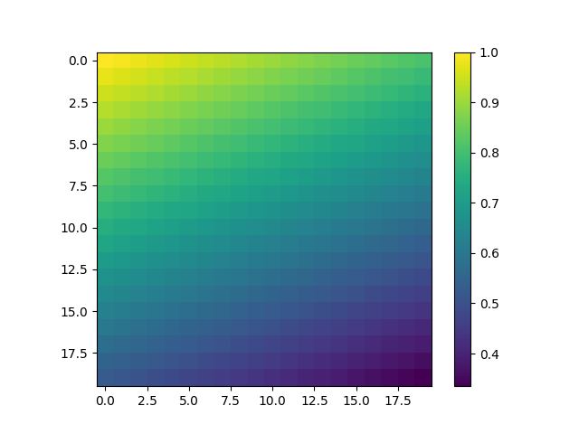
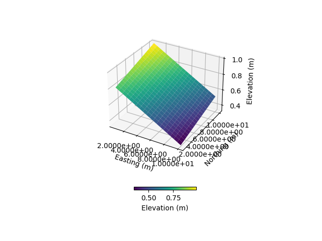

Meshing from a Digital Elevation Model (DEM)
Note
Click here to download the full example code
Meshing from a Digital Elevation Model (DEM)¶
This example shows how to use pyCATHY object to mesh from a DEM and run the hydrological model.
Estimated time to run the notebook = 5min
# !! run preprocessor change the DEM shape !
# dtm_13 does not have the same shape anymore!
import os
import matplotlib.pyplot as plt
import numpy as np
import pandas as pd
import pyCATHY.meshtools as mt
from pyCATHY import cathy_tools
from pyCATHY.importers import cathy_inputs as in_CT
from pyCATHY.importers import cathy_outputs as out_CT
from pyCATHY.plotters import cathy_plots as cplt
path2prj = "../SSHydro/" # add your local path here
simu = cathy_tools.CATHY(dirName=path2prj, prj_name="meshing_from_weil", clear_src=True)
rootpath = os.path.join(simu.workdir + simu.project_name)
Out:
🏁 Initiate CATHY object
clear src files
😟 src files not found
working directory is:/home/ben/Documents/GitHub/BenjMy/pycathy_wrapper/examples/SSHydro/../SSHydro/
📥 Fetch cathy src files
📥 Fetch cathy prepro src files
📥 Fetch cathy inputfiles
the dimension of the mesh is squared (20,20)
dem_mat, str_hd_dem = in_CT.read_dem(
os.path.join(simu.workdir, simu.project_name, "prepro/dem"),
os.path.join(simu.workdir, simu.project_name, "prepro/dtm_13.val"),
)
simu.show_input(prop="dem")
print(dem_mat)
simu.update_prepo_inputs(
DEM=dem_mat,
# N=np.shape(dem_mat)[1],
# M=np.shape(dem_mat)[0],
)
fig = plt.figure()
ax = plt.axes(projection="3d")
simu.show_input(prop="dem", ax=ax)
simu.create_mesh_vtk(verbose=True)
- 
- 
Out:
🔄 Update hap.in file
🔄 update dem_parameters file
😔 cannot find existing dem paramters
[[1. 0.99 0.98 0.97 0.96 0.95 0.94 0.93 0.92 0.91 0.9 0.89
0.88 0.87 0.86 0.85 0.84 0.83 0.82 0.81 ]
[0.975 0.965 0.955 0.945 0.935 0.925 0.915 0.905 0.895 0.885 0.875 0.865
0.855 0.845 0.835 0.825 0.815 0.805 0.795 0.785]
[0.95 0.94 0.93 0.92 0.91 0.9 0.89 0.88 0.87 0.86 0.85 0.84
0.83 0.82 0.81 0.8 0.79 0.78 0.77 0.76 ]
[0.925 0.915 0.905 0.895 0.885 0.875 0.865 0.855 0.845 0.835 0.825 0.815
0.805 0.795 0.785 0.775 0.765 0.755 0.745 0.735]
[0.9 0.89 0.88 0.87 0.86 0.85 0.84 0.83 0.82 0.81 0.8 0.79
0.78 0.77 0.76 0.75 0.74 0.73 0.72 0.71 ]
[0.875 0.865 0.855 0.845 0.835 0.825 0.815 0.805 0.795 0.785 0.775 0.765
0.755 0.745 0.735 0.725 0.715 0.705 0.695 0.685]
[0.85 0.84 0.83 0.82 0.81 0.8 0.79 0.78 0.77 0.76 0.75 0.74
0.73 0.72 0.71 0.7 0.69 0.68 0.67 0.66 ]
[0.825 0.815 0.805 0.795 0.785 0.775 0.765 0.755 0.745 0.735 0.725 0.715
0.705 0.695 0.685 0.675 0.665 0.655 0.645 0.635]
[0.8 0.79 0.78 0.77 0.76 0.75 0.74 0.73 0.72 0.71 0.7 0.69
0.68 0.67 0.66 0.65 0.64 0.63 0.62 0.61 ]
[0.775 0.765 0.755 0.745 0.735 0.725 0.715 0.705 0.695 0.685 0.675 0.665
0.655 0.645 0.635 0.625 0.615 0.605 0.595 0.585]
[0.75 0.74 0.73 0.72 0.71 0.7 0.69 0.68 0.67 0.66 0.65 0.64
0.63 0.62 0.61 0.6 0.59 0.58 0.57 0.56 ]
[0.725 0.715 0.705 0.695 0.685 0.675 0.665 0.655 0.645 0.635 0.625 0.615
0.605 0.595 0.585 0.575 0.565 0.555 0.545 0.535]
[0.7 0.69 0.68 0.67 0.66 0.65 0.64 0.63 0.62 0.61 0.6 0.59
0.58 0.57 0.56 0.55 0.54 0.53 0.52 0.51 ]
[0.675 0.665 0.655 0.645 0.635 0.625 0.615 0.605 0.595 0.585 0.575 0.565
0.555 0.545 0.535 0.525 0.515 0.505 0.495 0.485]
[0.65 0.64 0.63 0.62 0.61 0.6 0.59 0.58 0.57 0.56 0.55 0.54
0.53 0.52 0.51 0.5 0.49 0.48 0.47 0.46 ]
[0.625 0.615 0.605 0.595 0.585 0.575 0.565 0.555 0.545 0.535 0.525 0.515
0.505 0.495 0.485 0.475 0.465 0.455 0.445 0.435]
[0.6 0.59 0.58 0.57 0.56 0.55 0.54 0.53 0.52 0.51 0.5 0.49
0.48 0.47 0.46 0.45 0.44 0.43 0.42 0.41 ]
[0.575 0.565 0.555 0.545 0.535 0.525 0.515 0.505 0.495 0.485 0.475 0.465
0.455 0.445 0.435 0.425 0.415 0.405 0.395 0.385]
[0.55 0.54 0.53 0.52 0.51 0.5 0.49 0.48 0.47 0.46 0.45 0.44
0.43 0.42 0.41 0.4 0.39 0.38 0.37 0.36 ]
[0.525 0.515 0.505 0.495 0.485 0.475 0.465 0.455 0.445 0.435 0.425 0.415
0.405 0.395 0.385 0.375 0.365 0.355 0.345 0.335]]
🔄 Update hap.in file
🔄 Update dtm_13 file
─────────────────────────────────────────────────────────────────────────────────────── ⚠ warning messages above ⚠ ────────────────────────────────────────────────────────────────────────────────────────
The parm dictionnary is empty
Falling back to defaults to update CATHYH
This can have consequences !!
───────────────────────────────────────────────────────────────────────────────────────────────────────────────────────────────────────────────────────────────────────────────────────────────────────────
🔄 update parm file
─────────────────────────────────────────────────────────────────────────────────────── ⚠ warning messages above ⚠ ────────────────────────────────────────────────────────────────────────────────────────
['Adjusting TMAX with respect to time of interests requested\n']
───────────────────────────────────────────────────────────────────────────────────────────────────────────────────────────────────────────────────────────────────────────────────────────────────────────
🔄 update dem_parameters file
🍳 gfortran compilation
👟 Run preprocessor
wbb...
searching the dtm_13.val input file...
assigned nodata value = -9999.0000000000000
number of processed cells = 400
...wbb completed
rn...
csort I...
...completed
depit...
dem modifications = 0
dem modifications = 0 (total)
...completed
csort II...
...completed
cca...
contour curvature threshold value = 9.99999996E+11
...completed
smean...
mean (min,max) facet slope = 0.052056253 ( 0.020000000, 0.053851648)
...completed
dsf...
the drainage direction of the outlet cell ( 8 ) is used
...completed
hg...
...completed
saving the data in the basin_b/basin_i files...
...rn completed
mrbb...
Select the header type:
0) None
1) ESRI ascii file
2) GRASS ascii file
(Ctrl C to exit)
->
Select the nodata value:
(Ctrl C to exit)
->
Select the pointer system:
1) HAP system
2) Arc/Gis system
(Ctrl C to exit)
-> ~~~~~~~~~~~~~~~~~~~~~~~~~~~~~~~~~~~~~~~~~~
dem file
min value = 0.335000E+00
max value = 0.100000E+01
number of cells = 400
mean value = 0.667500E+00
writing the output file...
~~~~~~~~~~~~~~~~~~~~~~~~~~~~~~~~~~~~~~~~~~
lakes_map file
min value = 0
max value = 0
number of cells = 400
mean value = 0.000000
writing the output file...
~~~~~~~~~~~~~~~~~~~~~~~~~~~~~~~~~~~~~~~~~~
zone file
min value = 1
max value = 1
number of cells = 400
mean value = 1.000000
writing the output file...
~~~~~~~~~~~~~~~~~~~~~~~~~~~~~~~~~~~~~~~~~~
dtm_w_1 file
min value = 0.515524E+00
max value = 0.100000E+01
number of cells = 400
mean value = 0.607575E+00
writing the output file...
~~~~~~~~~~~~~~~~~~~~~~~~~~~~~~~~~~~~~~~~~~
dtm_w_2 file
min value = 0.000000E+00
max value = 0.484476E+00
number of cells = 400
mean value = 0.392425E+00
writing the output file...
~~~~~~~~~~~~~~~~~~~~~~~~~~~~~~~~~~~~~~~~~~
dtm_p_outflow_1 file
min value = 4
max value = 8
number of cells = 400
mean value = 4.200000
writing the output file...
~~~~~~~~~~~~~~~~~~~~~~~~~~~~~~~~~~~~~~~~~~
dtm_p_outflow_2 file
min value = 0
max value = 9
number of cells = 400
mean value = 6.792500
writing the output file...
~~~~~~~~~~~~~~~~~~~~~~~~~~~~~~~~~~~~~~~~~~
A_inflow file
min value = 0.000000000000E+00
max value = 0.997499787031E+02
number of cells = 400
mean value = 0.388447785378E+01
writing the output file...
~~~~~~~~~~~~~~~~~~~~~~~~~~~~~~~~~~~~~~~~~~
dtm_local_slope_1 file
min value = 0.200000E-01
max value = 0.500000E-01
number of cells = 400
mean value = 0.485000E-01
writing the output file...
~~~~~~~~~~~~~~~~~~~~~~~~~~~~~~~~~~~~~~~~~~
dtm_local_slope_2 file
min value = 0.000000E+00
max value = 0.494975E-01
number of cells = 400
mean value = 0.400930E-01
writing the output file...
~~~~~~~~~~~~~~~~~~~~~~~~~~~~~~~~~~~~~~~~~~
dtm_epl_1 file
min value = 0.500000E+00
max value = 0.500000E+00
number of cells = 400
mean value = 0.500000E+00
writing the output file...
~~~~~~~~~~~~~~~~~~~~~~~~~~~~~~~~~~~~~~~~~~
dtm_epl_2 file
min value = 0.000000E+00
max value = 0.707107E+00
number of cells = 400
mean value = 0.572757E+00
writing the output file...
~~~~~~~~~~~~~~~~~~~~~~~~~~~~~~~~~~~~~~~~~~
dtm_kSs1_sf_1 file
min value = 0.240040E+02
max value = 0.240040E+02
number of cells = 400
mean value = 0.240040E+02
writing the output file...
~~~~~~~~~~~~~~~~~~~~~~~~~~~~~~~~~~~~~~~~~~
dtm_kSs1_sf_2 file
min value = 0.000000E+00
max value = 0.240040E+02
number of cells = 400
mean value = 0.194432E+02
writing the output file...
~~~~~~~~~~~~~~~~~~~~~~~~~~~~~~~~~~~~~~~~~~
dtm_Ws1_sf file
min value = 0.100000E+01
max value = 0.100000E+01
number of cells = 400
mean value = 0.100000E+01
writing the output file...
~~~~~~~~~~~~~~~~~~~~~~~~~~~~~~~~~~~~~~~~~~
dtm_Ws1_sf_2 file
min value = 0.000000E+00
max value = 0.100000E+01
number of cells = 400
mean value = 0.810000E+00
writing the output file...
~~~~~~~~~~~~~~~~~~~~~~~~~~~~~~~~~~~~~~~~~~
dtm_b1_sf file
min value = 0.000000E+00
max value = 0.000000E+00
number of cells = 400
mean value = 0.000000E+00
writing the output file...
~~~~~~~~~~~~~~~~~~~~~~~~~~~~~~~~~~~~~~~~~~
dtm_y1_sf file
min value = 0.000000E+00
max value = 0.000000E+00
number of cells = 400
mean value = 0.000000E+00
writing the output file...
~~~~~~~~~~~~~~~~~~~~~~~~~~~~~~~~~~~~~~~~~~
dtm_hcID file
min value = 0
max value = 0
number of cells = 400
mean value = 0.000000
writing the output file...
~~~~~~~~~~~~~~~~~~~~~~~~~~~~~~~~~~~~~~~~~~
dtm_q_output file
min value = 0
max value = 0
number of cells = 400
mean value = 0.000000
writing the output file...
~~~~~~~~~~~~~~~~~~~~~~~~~~~~~~~~~~~~~~~~~~
dtm_nrc file
min value = 0.100000E+01
max value = 0.100000E+01
number of cells = 400
mean value = 0.100000E+01
writing the output file...
...mrbb completed
bb2shp...
writing file river_net.shp
Note: The following floating-point exceptions are signalling: IEEE_UNDERFLOW_FLAG IEEE_DENORMAL
🔄 update parm file
🛠 Recompile src files [10s]
🍳 gfortran compilation [21s]
👟 Run processor
b'\n\n IPRT1=3: Program terminating after output of X, Y, Z coordinate values\n'
b''
meshfile = rootpath + "/vtk/" + simu.project_name + ".vtk"
import pyvista as pv
mesh2plot = pv.read(meshfile)
mesh2plot.plot(show_edges=True, show_axes=True, show_bounds=True)

the new dimension of the mesh is rectangle (10,20)
Out:
DEM shape is (10, 20)
🔄 Update hap.in file
🔄 Update dtm_13 file
🔄 update dem_parameters file
🔄 update zone file
🔄 update dem_parameters file
🔄 update parm file
🍳 gfortran compilation
👟 Run preprocessor
wbb...
searching the dtm_13.val input file...
assigned nodata value = -9999.0000000000000
number of processed cells = 200
...wbb completed
rn...
csort I...
...completed
depit...
dem modifications = 0
dem modifications = 0 (total)
...completed
csort II...
...completed
cca...
contour curvature threshold value = 9.99999996E+11
...completed
smean...
mean (min,max) facet slope = 0.050445386 ( 0.020000000, 0.053851648)
...completed
dsf...
the drainage direction of the outlet cell ( 8 ) is used
...completed
hg...
...completed
saving the data in the basin_b/basin_i files...
...rn completed
mrbb...
Select the header type:
0) None
1) ESRI ascii file
2) GRASS ascii file
(Ctrl C to exit)
->
Select the nodata value:
(Ctrl C to exit)
->
Select the pointer system:
1) HAP system
2) Arc/Gis system
(Ctrl C to exit)
-> ~~~~~~~~~~~~~~~~~~~~~~~~~~~~~~~~~~~~~~~~~~
dem file
min value = 0.585000E+00
max value = 0.100000E+01
number of cells = 200
mean value = 0.792500E+00
writing the output file...
~~~~~~~~~~~~~~~~~~~~~~~~~~~~~~~~~~~~~~~~~~
lakes_map file
min value = 0
max value = 0
number of cells = 200
mean value = 0.000000
writing the output file...
~~~~~~~~~~~~~~~~~~~~~~~~~~~~~~~~~~~~~~~~~~
zone file
min value = 1
max value = 1
number of cells = 200
mean value = 1.000000
writing the output file...
~~~~~~~~~~~~~~~~~~~~~~~~~~~~~~~~~~~~~~~~~~
dtm_w_1 file
min value = 0.515524E+00
max value = 0.100000E+01
number of cells = 200
mean value = 0.651177E+00
writing the output file...
~~~~~~~~~~~~~~~~~~~~~~~~~~~~~~~~~~~~~~~~~~
dtm_w_2 file
min value = 0.000000E+00
max value = 0.484476E+00
number of cells = 200
mean value = 0.348823E+00
writing the output file...
~~~~~~~~~~~~~~~~~~~~~~~~~~~~~~~~~~~~~~~~~~
dtm_p_outflow_1 file
min value = 4
max value = 8
number of cells = 200
mean value = 4.400000
writing the output file...
~~~~~~~~~~~~~~~~~~~~~~~~~~~~~~~~~~~~~~~~~~
dtm_p_outflow_2 file
min value = 0
max value = 9
number of cells = 200
mean value = 6.885000
writing the output file...
~~~~~~~~~~~~~~~~~~~~~~~~~~~~~~~~~~~~~~~~~~
A_inflow file
min value = 0.000000000000E+00
max value = 0.497499945034E+02
number of cells = 200
mean value = 0.305322909355E+01
writing the output file...
~~~~~~~~~~~~~~~~~~~~~~~~~~~~~~~~~~~~~~~~~~
dtm_local_slope_1 file
min value = 0.200000E-01
max value = 0.500000E-01
number of cells = 200
mean value = 0.470000E-01
writing the output file...
~~~~~~~~~~~~~~~~~~~~~~~~~~~~~~~~~~~~~~~~~~
dtm_local_slope_2 file
min value = 0.000000E+00
max value = 0.494975E-01
number of cells = 200
mean value = 0.356382E-01
writing the output file...
~~~~~~~~~~~~~~~~~~~~~~~~~~~~~~~~~~~~~~~~~~
dtm_epl_1 file
min value = 0.500000E+00
max value = 0.500000E+00
number of cells = 200
mean value = 0.500000E+00
writing the output file...
~~~~~~~~~~~~~~~~~~~~~~~~~~~~~~~~~~~~~~~~~~
dtm_epl_2 file
min value = 0.000000E+00
max value = 0.707107E+00
number of cells = 200
mean value = 0.509117E+00
writing the output file...
~~~~~~~~~~~~~~~~~~~~~~~~~~~~~~~~~~~~~~~~~~
dtm_kSs1_sf_1 file
min value = 0.240040E+02
max value = 0.240040E+02
number of cells = 200
mean value = 0.240040E+02
writing the output file...
~~~~~~~~~~~~~~~~~~~~~~~~~~~~~~~~~~~~~~~~~~
dtm_kSs1_sf_2 file
min value = 0.000000E+00
max value = 0.240040E+02
number of cells = 200
mean value = 0.172829E+02
writing the output file...
~~~~~~~~~~~~~~~~~~~~~~~~~~~~~~~~~~~~~~~~~~
dtm_Ws1_sf file
min value = 0.100000E+01
max value = 0.100000E+01
number of cells = 200
mean value = 0.100000E+01
writing the output file...
~~~~~~~~~~~~~~~~~~~~~~~~~~~~~~~~~~~~~~~~~~
dtm_Ws1_sf_2 file
min value = 0.000000E+00
max value = 0.100000E+01
number of cells = 200
mean value = 0.720000E+00
writing the output file...
~~~~~~~~~~~~~~~~~~~~~~~~~~~~~~~~~~~~~~~~~~
dtm_b1_sf file
min value = 0.000000E+00
max value = 0.000000E+00
number of cells = 200
mean value = 0.000000E+00
writing the output file...
~~~~~~~~~~~~~~~~~~~~~~~~~~~~~~~~~~~~~~~~~~
dtm_y1_sf file
min value = 0.000000E+00
max value = 0.000000E+00
number of cells = 200
mean value = 0.000000E+00
writing the output file...
~~~~~~~~~~~~~~~~~~~~~~~~~~~~~~~~~~~~~~~~~~
dtm_hcID file
min value = 0
max value = 0
number of cells = 200
mean value = 0.000000
writing the output file...
~~~~~~~~~~~~~~~~~~~~~~~~~~~~~~~~~~~~~~~~~~
dtm_q_output file
min value = 0
max value = 0
number of cells = 200
mean value = 0.000000
writing the output file...
~~~~~~~~~~~~~~~~~~~~~~~~~~~~~~~~~~~~~~~~~~
dtm_nrc file
min value = 0.100000E+01
max value = 0.100000E+01
number of cells = 200
mean value = 0.100000E+01
writing the output file...
...mrbb completed
bb2shp...
writing file river_net.shp
Note: The following floating-point exceptions are signalling: IEEE_UNDERFLOW_FLAG IEEE_DENORMAL
🔄 update parm file
🛠 Recompile src files [30s]
🍳 gfortran compilation [40s]
👟 Run processor
b'\n\n IPRT1=3: Program terminating after output of X, Y, Z coordinate values\n'
b''
meshfile = rootpath + "/vtk/" + simu.project_name + ".vtk"
import pyvista as pv
mesh2plot = pv.read(meshfile)
mesh2plot.plot(show_edges=True, show_axes=True, show_bounds=True)

simu.update_prepo_inputs(
DEM=dem_crop,
xllcorner=1e4,
yllcorner=4e3,
)
simu.update_zone()
simu.update_veg_map()
fig = plt.figure()
ax = plt.axes(projection="3d")
simu.show_input(prop="dem", ax=ax)
simu.create_mesh_vtk(verbose=False)
Out:
🔄 Update hap.in file
🔄 Update dtm_13 file
🔄 update dem_parameters file
🔄 update zone file
🔄 update dem_parameters file
🔄 update parm file
🍳 gfortran compilation
👟 Run preprocessor
🔄 update parm file
🛠 Recompile src files [48s]
🍳 gfortran compilation [59s]
👟 Run processor
meshfile = rootpath + "/vtk/" + simu.project_name + ".vtk"
import pyvista as pv
mesh2plot = pv.read(meshfile)
mesh2plot.plot(show_edges=True, show_axes=True, show_bounds=True)
dem_crop_flipy = np.flipud(dem_crop)
simu.update_prepo_inputs(
DEM=dem_crop_flipy,
xllcorner=1e4,
yllcorner=4e3,
)
simu.update_zone()
simu.update_veg_map()
fig = plt.figure()
ax = plt.axes(projection="3d")
simu.show_input(prop="dem", ax=ax)
simu.create_mesh_vtk(verbose=False)
Out:
🔄 Update hap.in file
🔄 Update dtm_13 file
🔄 update dem_parameters file
🔄 update zone file
🔄 update dem_parameters file
🔄 update parm file
🍳 gfortran compilation
👟 Run preprocessor
🔄 update parm file
🛠 Recompile src files [67s]
🍳 gfortran compilation [78s]
👟 Run processor
meshfile = rootpath + "/vtk/" + simu.project_name + ".vtk"
import pyvista as pv
mesh2plot = pv.read(meshfile)
mesh2plot.plot(show_edges=True, show_axes=True, show_bounds=True)

dem_crop_3layers = np.flipud(dem_crop)
maxdepth = 10
# linear z depth
# -------------------------------------------------------------
zb = np.linspace(0, maxdepth, 3)
nstr = len(zb) - 1
zr = list((np.ones(len(zb))) / (nstr))
simu.update_prepo_inputs(
DEM=dem_crop,
xllcorner=1e4,
yllcorner=4e3,
nstr=nstr,
zratio=zr,
base=max(zb),
)
fig = plt.figure()
ax = plt.axes(projection="3d")
simu.show_input(prop="dem", ax=ax)
simu.create_mesh_vtk(verbose=False)

Out:
🔄 Update hap.in file
🔄 Update dtm_13 file
🔄 update dem_parameters file
─────────────────────────────────────────────────────────────────────────────────────── ⚠ warning messages above ⚠ ────────────────────────────────────────────────────────────────────────────────────────
The sum of all the layers is not equal to 1 but to 1.5
───────────────────────────────────────────────────────────────────────────────────────────────────────────────────────────────────────────────────────────────────────────────────────────────────────────
🍳 gfortran compilation
👟 Run preprocessor
🔄 update parm file
🛠 Recompile src files [86s]
🍳 gfortran compilation [97s]
👟 Run processor
meshfile = rootpath + "/vtk/" + simu.project_name + ".vtk"
import pyvista as pv
mesh2plot = pv.read(meshfile)
mesh2plot.plot(show_edges=True, show_axes=True, show_bounds=True)
# the fraction of total grid height that each layer is to occupy
# log z depth
# -------------------------------------------------------------
zb = np.geomspace(1e-1, maxdepth, num=15)
nstr = len(zb)
zr = [abs(zb[0] / maxdepth)]
zr.extend(list(abs(np.diff(zb) / maxdepth)))
simu.update_prepo_inputs(
DEM=dem_crop,
xllcorner=1e4,
yllcorner=4e3,
nstr=nstr,
zratio=zr,
base=max(zb),
)
simu.create_mesh_vtk(verbose=False)
Out:
🔄 Update hap.in file
🔄 Update dtm_13 file
🔄 update dem_parameters file
🍳 gfortran compilation
👟 Run preprocessor
🔄 update parm file
🛠 Recompile src files [105s]
🍳 gfortran compilation [116s]
👟 Run processor
meshfile = rootpath + "/vtk/" + simu.project_name + ".vtk"
import pyvista as pv
mesh2plot = pv.read(meshfile)
mesh2plot.plot(show_edges=True, show_axes=True, show_bounds=True)
simu.run_processor(IPRT1=2, verbose=True)
Out:
🔄 update parm file
🛠 Recompile src files [117s]
🍳 gfortran compilation [128s]
👟 Run processor
b'\n nsf (# of seepage faces) = 0\n\n\n TIME STEP: 1 DELTAT: 1.0000E-02 TIME: 1.0000E-02\n
******************************************************************\n\n\n NONLINEAR CONVERGENCE BEHAVIOR \n iter- convergence error norms node PNEW at POLD at residual error
norms\n ation PL2 PIKMAX IKMAX IKMAX IKMAX FL2 FINF\n 1 3.1459E-01 1.9590E-02 3696 1.00E+01 1.00E+01 8.336E-05 1.057E-05\n 2 1.1539E-01 -1.6952E-02
1 -1.70E-02 0.00E+00 5.553E-06 1.478E-06\n 3 8.0560E-02 1.4485E-02 1 -2.47E-03 -1.70E-02 1.047E-01 3.290E-02\n 4 2.1841E-02 2.7515E-03 232 9.39E-02 9.12E-02 1.454E-02
3.879E-03\n 5 7.9770E-03 1.0245E-03 232 9.49E-02 9.39E-02 2.610E-03 6.901E-04\n 6 3.2490E-03 4.6406E-04 232 9.54E-02 9.49E-02 4.795E-04 1.266E-04\n 7 1.4342E-03
2.2235E-04 232 9.56E-02 9.54E-02 8.739E-05 2.304E-05\n 8 6.5013E-04 1.0409E-04 232 9.57E-02 9.56E-02 1.500E-05 3.937E-06\n 9 2.4919E-04 3.7780E-05 232 9.58E-02 9.57E-02
1.934E-06 4.918E-07\n CONVERGENCE ACHIEVED IN 9 ITERATIONS\n\n\n TIME STEP: 2 DELTAT: 5.0000E-03 TIME: 1.5000E-02\n
******************************************************************\n\n\n NONLINEAR CONVERGENCE BEHAVIOR \n iter- convergence error norms node PNEW at POLD at residual error
norms\n ation PL2 PIKMAX IKMAX IKMAX IKMAX FL2 FINF\n 1 1.3462E-01 7.7845E-03 3696 1.00E+01 1.00E+01 6.614E-05 7.486E-06\n 2 1.1969E-04 -2.6266E-05
232 9.46E-02 9.47E-02 6.703E-07 1.752E-07\n CONVERGENCE ACHIEVED IN 2 ITERATIONS\n\n\n TIME STEP: 3 DELTAT: 5.5000E-03 TIME: 2.0500E-02\n
******************************************************************\n\n\n NONLINEAR CONVERGENCE BEHAVIOR \n iter- convergence error norms node PNEW at POLD at residual error
norms\n ation PL2 PIKMAX IKMAX IKMAX IKMAX FL2 FINF\n 1 1.3068E-01 7.1387E-03 3696 1.00E+01 1.00E+01 6.155E-05 6.646E-06\n 2 1.3686E-04 -2.9088E-05
232 9.38E-02 9.38E-02 6.407E-07 1.623E-07\n CONVERGENCE ACHIEVED IN 2 ITERATIONS\n\n\n TIME STEP: 4 DELTAT: 6.0500E-03 TIME: 2.6550E-02\n
******************************************************************\n\n\n NONLINEAR CONVERGENCE BEHAVIOR \n iter- convergence error norms node PNEW at POLD at residual error
norms\n ation PL2 PIKMAX IKMAX IKMAX IKMAX FL2 FINF\n 1 1.2915E-01 6.7560E-03 3696 1.00E+01 1.00E+01 5.810E-05 6.038E-06\n 2 2.4316E-03 -1.3828E-03
66 -1.38E-03 4.79E-09 7.106E-07 3.084E-07\n 3 1.5424E-03 9.5360E-04 66 -4.29E-04 -1.38E-03 3.079E-03 2.727E-03\n 4 5.6917E-04 2.9418E-04 66 -1.35E-04 -4.29E-04 5.619E-04
4.967E-04\n 5 2.0134E-04 9.2203E-05 66 -4.28E-05 -1.35E-04 1.037E-04 9.164E-05\n CONVERGENCE ACHIEVED IN 5 ITERATIONS\n\n\n TIME STEP: 5 DELTAT: 6.0500E-03 TIME:
3.2600E-02\n ******************************************************************\n\n\n NONLINEAR CONVERGENCE BEHAVIOR \n iter- convergence error norms node PNEW at POLD at
residual error norms\n ation PL2 PIKMAX IKMAX IKMAX IKMAX FL2 FINF\n 1 1.1817E-01 -6.0039E-03 3004 5.14E+00 5.14E+00 5.518E-05 5.541E-06\n 2
3.1666E-03 -6.8238E-04 70 -6.82E-04 2.15E-09 6.757E-07 1.436E-07\n 3 1.9810E-03 4.6849E-04 70 -2.14E-04 -6.82E-04 2.996E-03 9.767E-04\n 4 7.5504E-04 1.4646E-04 70 -6.74E-05
-2.14E-04 5.517E-04 1.798E-04\n 5 2.6678E-04 4.6003E-05 70 -2.14E-05 -6.74E-05 1.020E-04 3.323E-05\n CONVERGENCE ACHIEVED IN 5 ITERATIONS\n\n\n TIME STEP: 6 DELTAT:
6.0500E-03 TIME: 3.8650E-02\n ******************************************************************\n\n\n NONLINEAR CONVERGENCE BEHAVIOR \n iter- convergence error norms node
PNEW at POLD at residual error norms\n ation PL2 PIKMAX IKMAX IKMAX IKMAX FL2 FINF\n 1 1.0940E-01 -5.4881E-03 3004 5.13E+00 5.14E+00 5.275E-05
5.142E-06\n 2 2.4196E-03 -1.3917E-03 87 -1.39E-03 4.77E-09 5.928E-07 3.082E-07\n 3 1.5657E-03 9.5980E-04 87 -4.32E-04 -1.39E-03 3.183E-03 2.752E-03\n 4 5.5478E-04
2.9603E-04 87 -1.36E-04 -4.32E-04 5.808E-04 5.012E-04\n 5 1.9385E-04 9.2783E-05 87 -4.31E-05 -1.36E-04 1.072E-04 9.248E-05\n CONVERGENCE ACHIEVED IN 5 ITERATIONS\n\n\n TIME
STEP: 7 DELTAT: 6.0500E-03 TIME: 4.4700E-02\n ******************************************************************\n\n\n NONLINEAR CONVERGENCE BEHAVIOR \n iter-
convergence error norms node PNEW at POLD at residual error norms\n ation PL2 PIKMAX IKMAX IKMAX IKMAX FL2 FINF\n 1 1.0207E-01 -5.0745E-03 3004
5.12E+00 5.13E+00 5.060E-05 4.809E-06\n 2 1.0274E-03 -7.3295E-04 80 -7.33E-04 3.52E-09 4.529E-07 1.728E-07\n 3 6.5607E-04 5.0333E-04 80 -2.30E-04 -7.33E-04 1.084E-03
1.084E-03\n 4 2.3581E-04 1.5722E-04 80 -7.24E-05 -2.30E-04 1.994E-04 1.994E-04\n 5 8.1386E-05 4.9359E-05 80 -2.30E-05 -7.24E-05 3.684E-05 3.684E-05\n CONVERGENCE ACHIEVED IN
5 ITERATIONS\n\n\n TIME STEP: 8 DELTAT: 6.0500E-03 TIME: 5.0750E-02\n ******************************************************************\n\n\n NONLINEAR
CONVERGENCE BEHAVIOR \n iter- convergence error norms node PNEW at POLD at residual error norms\n ation PL2 PIKMAX IKMAX IKMAX IKMAX FL2 FINF\n 1
9.5733E-02 -4.7329E-03 3004 5.12E+00 5.12E+00 4.865E-05 4.525E-06\n 2 1.2999E-03 -9.3103E-04 88 -9.31E-04 2.61E-09 4.394E-07 2.193E-07\n 3 8.3682E-04 6.4010E-04 88 -2.91E-04
-9.31E-04 1.535E-03 1.535E-03\n 4 2.9754E-04 1.9926E-04 88 -9.17E-05 -2.91E-04 2.816E-04 2.816E-04\n 5 1.0263E-04 6.2532E-05 88 -2.91E-05 -9.17E-05 5.202E-05 5.202E-05\n
CONVERGENCE ACHIEVED IN 5 ITERATIONS\n\n\n TIME STEP: 9 DELTAT: 6.0500E-03 TIME: 5.6800E-02\n ******************************************************************\n\n\n
NONLINEAR CONVERGENCE BEHAVIOR \n iter- convergence error norms node PNEW at POLD at residual error norms\n ation PL2 PIKMAX IKMAX IKMAX IKMAX FL2 FINF\n 1
9.0133E-02 -4.4564E-03 3466 9.94E+00 9.94E+00 4.682E-05 4.276E-06\n 2 1.2360E-04 -2.4620E-05 232 9.11E-02 9.11E-02 3.499E-07 8.307E-08\n CONVERGENCE ACHIEVED IN 2 ITERATIONS\n\n\n
TIME STEP: 10 DELTAT: 6.6550E-03 TIME: 6.3455E-02\n ******************************************************************\n\n\n NONLINEAR CONVERGENCE BEHAVIOR \n
iter- convergence error norms node PNEW at POLD at residual error norms\n ation PL2 PIKMAX IKMAX IKMAX IKMAX FL2 FINF\n 1 9.3100E-02 -4.6259E-03 3466
9.93E+00 9.94E+00 4.511E-05 4.057E-06\n 2 1.2265E-03 -8.7142E-04 89 -8.71E-04 3.20E-09 4.113E-07 2.016E-07\n 3 7.8721E-04 5.9890E-04 89 -2.73E-04 -8.71E-04 1.267E-03
1.267E-03\n 4 2.8083E-04 1.8663E-04 89 -8.59E-05 -2.73E-04 2.327E-04 2.327E-04\n 5 9.6776E-05 5.8567E-05 89 -2.73E-05 -8.59E-05 4.299E-05 4.299E-05\n CONVERGENCE ACHIEVED IN
5 ITERATIONS\n\n\n TIME STEP: 11 DELTAT: 6.6550E-03 TIME: 7.0110E-02\n ******************************************************************\n\n\n NONLINEAR
CONVERGENCE BEHAVIOR \n iter- convergence error norms node PNEW at POLD at residual error norms\n ation PL2 PIKMAX IKMAX IKMAX IKMAX FL2 FINF\n 1
8.7637E-02 -4.3822E-03 3466 9.93E+00 9.93E+00 4.334E-05 3.842E-06\n 2 1.3070E-04 -2.5538E-05 232 9.05E-02 9.05E-02 3.318E-07 7.816E-08\n CONVERGENCE ACHIEVED IN 2 ITERATIONS\n\n\n
TIME STEP: 12 DELTAT: 7.3205E-03 TIME: 7.7431E-02\n ******************************************************************\n\n\n NONLINEAR CONVERGENCE BEHAVIOR \n
iter- convergence error norms node PNEW at POLD at residual error norms\n ation PL2 PIKMAX IKMAX IKMAX IKMAX FL2 FINF\n 1 9.0410E-02 -4.5585E-03 3466
9.93E+00 9.93E+00 4.167E-05 3.649E-06\n 2 1.3417E-03 -9.4760E-04 90 -9.48E-04 4.60E-09 4.040E-07 2.155E-07\n 3 8.6194E-04 6.5155E-04 90 -2.96E-04 -9.48E-04 1.302E-03
1.302E-03\n 4 3.0682E-04 2.0275E-04 90 -9.33E-05 -2.96E-04 2.387E-04 2.387E-04\n 5 1.0571E-04 6.3605E-05 90 -2.97E-05 -9.33E-05 4.409E-05 4.409E-05\n CONVERGENCE ACHIEVED IN
5 ITERATIONS\n\n\n TIME STEP: 13 DELTAT: 7.3205E-03 TIME: 8.4751E-02\n ******************************************************************\n\n\n NONLINEAR
CONVERGENCE BEHAVIOR \n iter- convergence error norms node PNEW at POLD at residual error norms\n ation PL2 PIKMAX IKMAX IKMAX IKMAX FL2 FINF\n 1
8.4941E-02 -4.3225E-03 3466 9.92E+00 9.93E+00 3.995E-05 3.458E-06\n 2 4.0276E-03 -2.7032E-03 61 -2.70E-03 1.77E-08 7.232E-07 6.144E-07\n 3 2.6363E-03 1.8853E-03 61 -8.18E-04
-2.70E-03 6.061E-03 5.929E-03\n 4 9.0795E-04 5.6169E-04 61 -2.56E-04 -8.18E-04 1.075E-03 1.050E-03\n 5 3.2057E-04 1.7503E-04 61 -8.11E-05 -2.56E-04 1.975E-04 1.929E-04\n 6
1.2396E-04 5.7954E-05 292 9.84E-02 9.83E-02 3.638E-05 3.552E-05\n CONVERGENCE ACHIEVED IN 6 ITERATIONS\n\n\n TIME STEP: 14 DELTAT: 7.3205E-03 TIME: 9.2072E-02\n
******************************************************************\n\n\n NONLINEAR CONVERGENCE BEHAVIOR \n iter- convergence error norms node PNEW at POLD at residual error
norms\n ation PL2 PIKMAX IKMAX IKMAX IKMAX FL2 FINF\n 1 7.9918E-02 -4.1074E-03 3466 9.92E+00 9.92E+00 3.834E-05 3.451E-06\n 2 1.3345E-03 -9.4309E-04
92 -9.43E-04 6.06E-09 3.672E-07 2.146E-07\n 3 8.5775E-04 6.4843E-04 92 -2.95E-04 -9.43E-04 1.293E-03 1.293E-03\n 4 3.0535E-04 2.0180E-04 92 -9.29E-05 -2.95E-04 2.371E-04
2.371E-04\n 5 1.0518E-04 6.3307E-05 92 -2.96E-05 -9.29E-05 4.378E-05 4.378E-05\n CONVERGENCE ACHIEVED IN 5 ITERATIONS\n\n\n TIME STEP: 15 DELTAT: 7.3205E-03 TIME:
9.9392E-02\n ******************************************************************\n\n\n NONLINEAR CONVERGENCE BEHAVIOR \n iter- convergence error norms node PNEW at POLD at
residual error norms\n ation PL2 PIKMAX IKMAX IKMAX IKMAX FL2 FINF\n 1 7.5282E-02 -3.9095E-03 3466 9.91E+00 9.92E+00 3.684E-05 3.527E-06\n 2
2.0061E-03 -1.0232E-03 109 -1.02E-03 6.43E-09 4.279E-07 2.326E-07\n 3 1.8536E-03 -9.8384E-04 94 -9.84E-04 1.61E-10 2.007E-03 1.455E-03\n 4 1.0194E-03 6.7662E-04 94 -3.07E-04
-9.84E-04 1.423E-03 1.375E-03\n 5 3.6639E-04 2.1042E-04 94 -9.68E-05 -3.07E-04 2.610E-04 2.520E-04\n 6 1.2920E-04 6.6010E-05 94 -3.08E-05 -9.68E-05 4.818E-05 4.653E-05\n
CONVERGENCE ACHIEVED IN 6 ITERATIONS\n\n\n TIME STEP: 16 DELTAT: 7.3205E-03 TIME: 1.0671E-01\n ******************************************************************\n\n\n
NONLINEAR CONVERGENCE BEHAVIOR \n iter- convergence error norms node PNEW at POLD at residual error norms\n ation PL2 PIKMAX IKMAX IKMAX IKMAX FL2 FINF\n 1
7.0991E-02 -3.7263E-03 3466 9.91E+00 9.91E+00 3.545E-05 3.597E-06\n 2 2.2352E-03 -1.1030E-03 95 -1.10E-03 5.85E-09 4.125E-07 2.279E-07\n 3 1.4271E-03 7.5918E-04 95 -3.44E-04
-1.10E-03 2.242E-03 1.623E-03\n 4 5.1829E-04 2.3556E-04 95 -1.08E-04 -3.44E-04 4.103E-04 2.970E-04\n 5 1.8090E-04 7.3882E-05 95 -3.44E-05 -1.08E-04 7.576E-05 5.483E-05\n
CONVERGENCE ACHIEVED IN 5 ITERATIONS\n\n\n TIME STEP: 17 DELTAT: 7.3205E-03 TIME: 1.1403E-01\n ******************************************************************\n\n\n
NONLINEAR CONVERGENCE BEHAVIOR \n iter- convergence error norms node PNEW at POLD at residual error norms\n ation PL2 PIKMAX IKMAX IKMAX IKMAX FL2 FINF\n 1
6.7007E-02 -3.5556E-03 3466 9.91E+00 9.91E+00 3.415E-05 3.661E-06\n 2 1.4033E-03 -9.9296E-04 97 -9.93E-04 6.25E-09 3.378E-07 2.258E-07\n 3 9.0372E-04 6.8293E-04 97 -3.10E-04
-9.93E-04 1.393E-03 1.393E-03\n 4 3.2113E-04 2.1234E-04 97 -9.77E-05 -3.10E-04 2.554E-04 2.554E-04\n 5 1.1064E-04 6.6606E-05 97 -3.11E-05 -9.77E-05 4.715E-05 4.715E-05\n
CONVERGENCE ACHIEVED IN 5 ITERATIONS\n\n\n TIME STEP: 18 DELTAT: 7.3205E-03 TIME: 1.2135E-01\n ******************************************************************\n\n\n
NONLINEAR CONVERGENCE BEHAVIOR \n iter- convergence error norms node PNEW at POLD at residual error norms\n ation PL2 PIKMAX IKMAX IKMAX IKMAX FL2 FINF\n 1
6.3302E-02 -3.3959E-03 3466 9.90E+00 9.91E+00 3.295E-05 3.720E-06\n 2 1.2027E-04 -2.2838E-05 232 8.90E-02 8.90E-02 2.390E-07 5.525E-08\n CONVERGENCE ACHIEVED IN 2 ITERATIONS\n\n\n
TIME STEP: 19 DELTAT: 8.0526E-03 TIME: 1.2941E-01\n ******************************************************************\n\n\n NONLINEAR CONVERGENCE BEHAVIOR \n
iter- convergence error norms node PNEW at POLD at residual error norms\n ation PL2 PIKMAX IKMAX IKMAX IKMAX FL2 FINF\n 1 6.5482E-02 -3.5551E-03 3466
9.90E+00 9.90E+00 3.184E-05 3.774E-06\n 2 1.4751E-03 -1.0371E-03 98 -1.04E-03 6.60E-09 3.420E-07 2.321E-07\n 3 9.4968E-04 7.1350E-04 98 -3.24E-04 -1.04E-03 1.349E-03
1.349E-03\n 4 3.3741E-04 2.2165E-04 98 -1.02E-04 -3.24E-04 2.471E-04 2.471E-04\n 5 1.1633E-04 6.9508E-05 98 -3.25E-05 -1.02E-04 4.562E-05 4.562E-05\n CONVERGENCE ACHIEVED IN
5 ITERATIONS\n\n\n TIME STEP: 20 DELTAT: 8.0526E-03 TIME: 1.3746E-01\n ******************************************************************\n\n\n NONLINEAR
CONVERGENCE BEHAVIOR \n iter- convergence error norms node PNEW at POLD at residual error norms\n ation PL2 PIKMAX IKMAX IKMAX IKMAX FL2 FINF\n 1
6.1636E-02 -3.3864E-03 3466 9.90E+00 9.90E+00 3.071E-05 3.829E-06\n 2 2.3142E-03 -1.6311E-03 81 -1.63E-03 1.15E-08 4.362E-07 3.649E-07\n 3 1.5016E-03 1.1269E-03 81 -5.04E-04
-1.63E-03 2.602E-03 2.602E-03\n 4 5.2635E-04 3.4564E-04 81 -1.59E-04 -5.04E-04 4.719E-04 4.719E-04\n 5 1.8296E-04 1.0819E-04 81 -5.04E-05 -1.59E-04 8.697E-05 8.697E-05\n 6
6.8250E-05 3.4780E-05 312 9.89E-02 9.89E-02 1.601E-05 1.601E-05\n CONVERGENCE ACHIEVED IN 6 ITERATIONS\n\n\n TIME STEP: 21 DELTAT: 8.0526E-03 TIME: 1.4551E-01\n
******************************************************************\n\n\n NONLINEAR CONVERGENCE BEHAVIOR \n iter- convergence error norms node PNEW at POLD at residual error
norms\n ation PL2 PIKMAX IKMAX IKMAX IKMAX FL2 FINF\n 1 5.8067E-02 -3.2280E-03 3466 9.89E+00 9.90E+00 2.968E-05 3.880E-06\n 2 1.2553E-04 -2.3506E-05
232 8.85E-02 8.85E-02 2.280E-07 5.240E-08\n CONVERGENCE ACHIEVED IN 2 ITERATIONS\n\n\n TIME STEP: 22 DELTAT: 8.8578E-03 TIME: 1.5437E-01\n
******************************************************************\n\n\n NONLINEAR CONVERGENCE BEHAVIOR \n iter- convergence error norms node PNEW at POLD at residual error
norms\n ation PL2 PIKMAX IKMAX IKMAX IKMAX FL2 FINF\n 1 5.9888E-02 -3.3718E-03 3466 9.89E+00 9.89E+00 2.875E-05 3.927E-06\n 2 1.3776E-04 -2.5513E-05
232 8.84E-02 8.84E-02 2.402E-07 5.509E-08\n CONVERGENCE ACHIEVED IN 2 ITERATIONS\n\n\n TIME STEP: 23 DELTAT: 9.7436E-03 TIME: 1.6411E-01\n
******************************************************************\n\n\n NONLINEAR CONVERGENCE BEHAVIOR \n iter- convergence error norms node PNEW at POLD at residual error
norms\n ation PL2 PIKMAX IKMAX IKMAX IKMAX FL2 FINF\n 1 6.1456E-02 -3.5074E-03 3466 9.89E+00 9.89E+00 2.781E-05 3.975E-06\n 2 1.5080E-04 -2.7631E-05
232 8.82E-02 8.82E-02 2.524E-07 5.778E-08\n CONVERGENCE ACHIEVED IN 2 ITERATIONS\n\n\n TIME STEP: 24 DELTAT: 1.0718E-02 TIME: 1.7483E-01\n
******************************************************************\n\n\n NONLINEAR CONVERGENCE BEHAVIOR \n iter- convergence error norms node PNEW at POLD at residual error
norms\n ation PL2 PIKMAX IKMAX IKMAX IKMAX FL2 FINF\n 1 6.2732E-02 -3.6325E-03 3466 9.88E+00 9.89E+00 2.689E-05 4.023E-06\n 2 1.5818E-03 -1.0921E-03
99 -1.09E-03 9.81E-09 3.532E-07 2.341E-07\n 3 1.0158E-03 7.5153E-04 99 -3.41E-04 -1.09E-03 1.093E-03 1.093E-03\n 4 3.6158E-04 2.3319E-04 99 -1.07E-04 -3.41E-04 2.000E-04
2.000E-04\n 5 1.2484E-04 7.3071E-05 99 -3.43E-05 -1.07E-04 3.690E-05 3.690E-05\n CONVERGENCE ACHIEVED IN 5 ITERATIONS\n\n\n TIME STEP: 25 DELTAT: 1.0718E-02 TIME:
1.8555E-01\n ******************************************************************\n\n\n NONLINEAR CONVERGENCE BEHAVIOR \n iter- convergence error norms node PNEW at POLD at
residual error norms\n ation PL2 PIKMAX IKMAX IKMAX IKMAX FL2 FINF\n 1 5.8298E-02 -3.4233E-03 3466 9.88E+00 9.88E+00 2.600E-05 4.071E-06\n 2
1.6545E-03 -1.1461E-03 148 -1.15E-03 9.42E-09 2.771E-07 1.175E-07\n 3 1.0824E-03 7.8899E-04 148 -3.57E-04 -1.15E-03 3.907E-04 3.907E-04\n 4 3.6877E-04 2.4449E-04 148 -1.13E-04
-3.57E-04 7.143E-05 7.143E-05\n 5 1.2429E-04 7.6513E-05 148 -3.61E-05 -1.13E-04 1.317E-05 1.317E-05\n CONVERGENCE ACHIEVED IN 5 ITERATIONS\n\n\n TIME STEP: 26 DELTAT:
1.0718E-02 TIME: 1.9627E-01\n ******************************************************************\n\n\n NONLINEAR CONVERGENCE BEHAVIOR \n iter- convergence error norms node
PNEW at POLD at residual error norms\n ation PL2 PIKMAX IKMAX IKMAX IKMAX FL2 FINF\n 1 5.4257E-02 -3.2292E-03 3466 9.88E+00 9.88E+00 2.522E-05
4.115E-06\n 2 1.5540E-04 -2.8177E-05 232 8.77E-02 8.78E-02 2.387E-07 5.446E-08\n CONVERGENCE ACHIEVED IN 2 ITERATIONS\n\n\n TIME STEP: 27 DELTAT: 1.1790E-02 TIME:
2.0806E-01\n ******************************************************************\n\n\n NONLINEAR CONVERGENCE BEHAVIOR \n iter- convergence error norms node PNEW at POLD at
residual error norms\n ation PL2 PIKMAX IKMAX IKMAX IKMAX FL2 FINF\n 1 5.5258E-02 -3.3353E-03 3466 9.87E+00 9.88E+00 2.454E-05 4.156E-06\n 2
1.6957E-04 -3.0454E-05 232 8.76E-02 8.76E-02 2.507E-07 5.712E-08\n CONVERGENCE ACHIEVED IN 2 ITERATIONS\n\n\n TIME STEP: 28 DELTAT: 1.2969E-02 TIME: 2.2102E-01\n
******************************************************************\n\n\n NONLINEAR CONVERGENCE BEHAVIOR \n iter- convergence error norms node PNEW at POLD at residual error
norms\n ation PL2 PIKMAX IKMAX IKMAX IKMAX FL2 FINF\n 1 5.5983E-02 -3.4285E-03 3466 9.87E+00 9.87E+00 2.390E-05 4.196E-06\n 2 1.8455E-04 -3.2843E-05
232 8.74E-02 8.75E-02 2.625E-07 5.977E-08\n CONVERGENCE ACHIEVED IN 2 ITERATIONS\n\n\n TIME STEP: 29 DELTAT: 1.4266E-02 TIME: 2.3529E-01\n
******************************************************************\n\n\n NONLINEAR CONVERGENCE BEHAVIOR \n iter- convergence error norms node PNEW at POLD at residual error
norms\n ation PL2 PIKMAX IKMAX IKMAX IKMAX FL2 FINF\n 1 5.6420E-02 -3.5064E-03 3466 9.87E+00 9.87E+00 2.329E-05 4.237E-06\n 2 2.3459E-03 -1.5994E-03
110 -1.60E-03 1.72E-08 4.298E-07 3.310E-07\n 3 1.5148E-03 1.1046E-03 110 -4.95E-04 -1.60E-03 1.428E-03 1.428E-03\n 4 5.3271E-04 3.3899E-04 110 -1.56E-04 -4.95E-04 2.590E-04
2.590E-04\n 5 1.8456E-04 1.0599E-04 110 -4.98E-05 -1.56E-04 4.771E-05 4.771E-05\n 6 6.8077E-05 3.4442E-05 341 9.90E-02 9.90E-02 8.750E-06 8.750E-06\n CONVERGENCE ACHIEVED IN
6 ITERATIONS\n\n\n TIME STEP: 30 DELTAT: 1.4266E-02 TIME: 2.4956E-01\n ******************************************************************\n\n\n NONLINEAR
CONVERGENCE BEHAVIOR \n iter- convergence error norms node PNEW at POLD at residual error norms\n ation PL2 PIKMAX IKMAX IKMAX IKMAX FL2 FINF\n 1
5.1834E-02 -3.2649E-03 3466 9.86E+00 9.87E+00 2.274E-05 4.277E-06\n 2 1.9384E-04 -3.4230E-05 232 8.71E-02 8.72E-02 2.593E-07 5.902E-08\n CONVERGENCE ACHIEVED IN 2 ITERATIONS\n\n\n
TIME STEP: 31 DELTAT: 1.5692E-02 TIME: 2.6525E-01\n ******************************************************************\n\n\n NONLINEAR CONVERGENCE BEHAVIOR \n
iter- convergence error norms node PNEW at POLD at residual error norms\n ation PL2 PIKMAX IKMAX IKMAX IKMAX FL2 FINF\n 1 5.2131E-02 -3.3269E-03 3466
9.86E+00 9.86E+00 2.229E-05 4.313E-06\n 2 2.1014E-04 -3.6806E-05 232 8.70E-02 8.70E-02 2.707E-07 6.162E-08\n CONVERGENCE ACHIEVED IN 2 ITERATIONS\n\n\n TIME STEP: 32
DELTAT: 1.7261E-02 TIME: 2.8251E-01\n ******************************************************************\n\n\n NONLINEAR CONVERGENCE BEHAVIOR \n iter- convergence error
norms node PNEW at POLD at residual error norms\n ation PL2 PIKMAX IKMAX IKMAX IKMAX FL2 FINF\n 1 5.2192E-02 -3.3720E-03 3466 9.86E+00 9.86E+00
2.188E-05 4.349E-06\n 2 2.2723E-04 -3.9491E-05 232 8.68E-02 8.69E-02 2.820E-07 6.418E-08\n CONVERGENCE ACHIEVED IN 2 ITERATIONS\n\n\n TIME STEP: 33 DELTAT: 1.8987E-02
TIME: 3.0150E-01\n ******************************************************************\n\n\n NONLINEAR CONVERGENCE BEHAVIOR \n iter- convergence error norms node PNEW at
POLD at residual error norms\n ation PL2 PIKMAX IKMAX IKMAX IKMAX FL2 FINF\n 1 5.2039E-02 -3.3992E-03 3466 9.85E+00 9.86E+00 2.153E-05 4.385E-06\n 2
2.4508E-04 -4.2281E-05 232 8.67E-02 8.67E-02 2.926E-07 6.669E-08\n CONVERGENCE ACHIEVED IN 2 ITERATIONS\n\n\n TIME STEP: 34 DELTAT: 2.0886E-02 TIME: 3.2238E-01\n
******************************************************************\n\n\n NONLINEAR CONVERGENCE BEHAVIOR \n iter- convergence error norms node PNEW at POLD at residual error
norms\n ation PL2 PIKMAX IKMAX IKMAX IKMAX FL2 FINF\n 1 5.1701E-02 -3.4076E-03 3466 9.85E+00 9.85E+00 2.123E-05 4.419E-06\n 2 3.0025E-03 -2.0123E-03
129 -2.01E-03 3.24E-08 5.028E-07 4.011E-07\n 3 1.9397E-03 1.3944E-03 129 -6.18E-04 -2.01E-03 1.359E-03 1.359E-03\n 4 6.8294E-04 4.2345E-04 129 -1.94E-04 -6.18E-04 2.445E-04
2.445E-04\n 5 2.3997E-04 1.3205E-04 129 -6.23E-05 -1.94E-04 4.495E-05 4.495E-05\n 6 9.0950E-05 4.3425E-05 360 9.89E-02 9.88E-02 8.220E-06 8.220E-06\n CONVERGENCE ACHIEVED IN
6 ITERATIONS\n\n\n TIME STEP: 35 DELTAT: 2.0886E-02 TIME: 3.4327E-01\n ******************************************************************\n\n\n NONLINEAR
CONVERGENCE BEHAVIOR \n iter- convergence error norms node PNEW at POLD at residual error norms\n ation PL2 PIKMAX IKMAX IKMAX IKMAX FL2 FINF\n 1
4.6969E-02 -3.1140E-03 3466 9.85E+00 9.85E+00 2.098E-05 4.453E-06\n 2 2.5361E-04 -4.3534E-05 232 8.64E-02 8.64E-02 2.846E-07 6.497E-08\n CONVERGENCE ACHIEVED IN 2 ITERATIONS\n\n\n
TIME STEP: 36 DELTAT: 2.2975E-02 TIME: 3.6624E-01\n ******************************************************************\n\n\n NONLINEAR CONVERGENCE BEHAVIOR \n
iter- convergence error norms node PNEW at POLD at residual error norms\n ation PL2 PIKMAX IKMAX IKMAX IKMAX FL2 FINF\n 1 4.6813E-02 -3.1133E-03 3466
9.84E+00 9.85E+00 2.080E-05 4.483E-06\n 2 2.7271E-04 -4.6506E-05 232 8.62E-02 8.63E-02 2.951E-07 6.742E-08\n CONVERGENCE ACHIEVED IN 2 ITERATIONS\n\n\n TIME STEP: 37
DELTAT: 2.5272E-02 TIME: 3.9152E-01\n ******************************************************************\n\n\n NONLINEAR CONVERGENCE BEHAVIOR \n iter- convergence error
norms node PNEW at POLD at residual error norms\n ation PL2 PIKMAX IKMAX IKMAX IKMAX FL2 FINF\n 1 4.6561E-02 -3.0959E-03 3466 9.84E+00 9.84E+00
2.065E-05 4.512E-06\n 2 3.6367E-03 -2.4317E-03 63 -2.43E-03 4.91E-08 3.932E-07 2.479E-07\n 3 2.3574E-03 1.6914E-03 63 -7.40E-04 -2.43E-03 9.835E-04 9.835E-04\n 4
8.2688E-04 5.0779E-04 63 -2.32E-04 -7.40E-04 1.753E-04 1.753E-04\n 5 2.9344E-04 1.5813E-04 63 -7.43E-05 -2.32E-04 3.219E-05 3.219E-05\n 6 1.1373E-04 5.2595E-05 294 9.87E-02
9.86E-02 5.895E-06 5.895E-06\n CONVERGENCE ACHIEVED IN 6 ITERATIONS\n\n\n TIME STEP: 38 DELTAT: 2.5272E-02 TIME: 4.1679E-01\n
******************************************************************\n\n\n NONLINEAR CONVERGENCE BEHAVIOR \n iter- convergence error norms node PNEW at POLD at residual error
norms\n ation PL2 PIKMAX IKMAX IKMAX IKMAX FL2 FINF\n 1 4.2390E-02 -2.8086E-03 3466 9.84E+00 9.84E+00 2.054E-05 4.539E-06\n 2 2.7800E-03 -1.8506E-03
111 -1.85E-03 3.52E-08 4.630E-07 3.640E-07\n 3 1.7923E-03 1.2805E-03 111 -5.70E-04 -1.85E-03 9.952E-04 9.952E-04\n 4 6.2809E-04 3.9042E-04 111 -1.80E-04 -5.70E-04 1.796E-04
1.796E-04\n 5 2.1769E-04 1.2172E-04 111 -5.78E-05 -1.80E-04 3.302E-05 3.302E-05\n 6 8.0010E-05 3.9815E-05 342 9.89E-02 9.89E-02 6.023E-06 6.023E-06\n CONVERGENCE ACHIEVED IN
6 ITERATIONS\n\n\n TIME STEP: 39 DELTAT: 2.5272E-02 TIME: 4.4206E-01\n ******************************************************************\n\n\n NONLINEAR
CONVERGENCE BEHAVIOR \n iter- convergence error norms node PNEW at POLD at residual error norms\n ation PL2 PIKMAX IKMAX IKMAX IKMAX FL2 FINF\n 1
3.8830E-02 -2.5567E-03 3466 9.83E+00 9.84E+00 2.046E-05 4.564E-06\n 2 2.7033E-04 -4.6038E-05 232 8.58E-02 8.59E-02 2.694E-07 6.180E-08\n CONVERGENCE ACHIEVED IN 2 ITERATIONS\n\n\n
TIME STEP: 40 DELTAT: 2.7800E-02 TIME: 4.6986E-01\n ******************************************************************\n\n\n NONLINEAR CONVERGENCE BEHAVIOR \n
iter- convergence error norms node PNEW at POLD at residual error norms\n ation PL2 PIKMAX IKMAX IKMAX IKMAX FL2 FINF\n 1 3.9039E-02 -2.5472E-03 3466
9.83E+00 9.83E+00 2.040E-05 4.586E-06\n 2 2.9054E-04 -4.9181E-05 232 8.57E-02 8.57E-02 2.800E-07 6.429E-08\n CONVERGENCE ACHIEVED IN 2 ITERATIONS\n\n\n TIME STEP: 41
DELTAT: 3.0580E-02 TIME: 5.0044E-01\n ******************************************************************\n\n\n NONLINEAR CONVERGENCE BEHAVIOR \n iter- convergence error
norms node PNEW at POLD at residual error norms\n ation PL2 PIKMAX IKMAX IKMAX IKMAX FL2 FINF\n 1 3.9158E-02 -2.5249E-03 3466 9.83E+00 9.83E+00
2.036E-05 4.607E-06\n 2 5.2668E-03 -3.4349E-03 149 -3.43E-03 7.57E-08 7.204E-07 6.594E-07\n 3 3.4650E-03 2.4131E-03 149 -1.02E-03 -3.43E-03 1.999E-03 1.999E-03\n 4
1.1599E-03 7.0175E-04 149 -3.20E-04 -1.02E-03 3.472E-04 3.472E-04\n 5 4.0549E-04 2.1719E-04 149 -1.03E-04 -3.20E-04 6.345E-05 6.345E-05\n 6 1.5286E-04 7.0130E-05 380 9.85E-02
9.84E-02 1.157E-05 1.157E-05\n CONVERGENCE ACHIEVED IN 6 ITERATIONS\n\n\n TIME STEP: 42 DELTAT: 3.0580E-02 TIME: 5.3102E-01\n
******************************************************************\n\n\n NONLINEAR CONVERGENCE BEHAVIOR \n iter- convergence error norms node PNEW at POLD at residual error
norms\n ation PL2 PIKMAX IKMAX IKMAX IKMAX FL2 FINF\n 1 3.5894E-02 -2.2846E-03 3466 9.83E+00 9.83E+00 2.033E-05 4.627E-06\n 2 2.9939E-04 -5.0525E-05
232 8.54E-02 8.55E-02 2.729E-07 6.282E-08\n CONVERGENCE ACHIEVED IN 2 ITERATIONS\n\n\n TIME STEP: 43 DELTAT: 3.3637E-02 TIME: 5.6466E-01\n
******************************************************************\n\n\n NONLINEAR CONVERGENCE BEHAVIOR \n iter- convergence error norms node PNEW at POLD at residual error
norms\n ation PL2 PIKMAX IKMAX IKMAX IKMAX FL2 FINF\n 1 3.6064E-02 -2.2624E-03 3466 9.82E+00 9.83E+00 2.031E-05 4.646E-06\n 2 3.2104E-04 -5.3880E-05
232 8.53E-02 8.53E-02 2.833E-07 6.528E-08\n CONVERGENCE ACHIEVED IN 2 ITERATIONS\n\n\n TIME STEP: 44 DELTAT: 3.7001E-02 TIME: 6.0166E-01\n
******************************************************************\n\n\n NONLINEAR CONVERGENCE BEHAVIOR \n iter- convergence error norms node PNEW at POLD at residual error
norms\n ation PL2 PIKMAX IKMAX IKMAX IKMAX FL2 FINF\n 1 3.6083E-02 -2.2291E-03 3466 9.82E+00 9.82E+00 2.029E-05 4.663E-06\n 2 3.4352E-04 -5.7352E-05
232 8.52E-02 8.52E-02 2.934E-07 6.768E-08\n CONVERGENCE ACHIEVED IN 2 ITERATIONS\n\n\n TIME STEP: 45 DELTAT: 4.0701E-02 TIME: 6.4236E-01\n
******************************************************************\n\n\n NONLINEAR CONVERGENCE BEHAVIOR \n iter- convergence error norms node PNEW at POLD at residual error
norms\n ation PL2 PIKMAX IKMAX IKMAX IKMAX FL2 FINF\n 1 3.5917E-02 -2.1847E-03 3466 9.82E+00 9.82E+00 2.028E-05 4.680E-06\n 2 3.6682E-04 -6.0941E-05
232 8.50E-02 8.51E-02 3.032E-07 7.002E-08\n CONVERGENCE ACHIEVED IN 2 ITERATIONS\n\n\n TIME STEP: 46 DELTAT: 4.4772E-02 TIME: 6.8713E-01\n
******************************************************************\n\n\n NONLINEAR CONVERGENCE BEHAVIOR \n iter- convergence error norms node PNEW at POLD at residual error
norms\n ation PL2 PIKMAX IKMAX IKMAX IKMAX FL2 FINF\n 1 3.5532E-02 -2.1294E-03 3466 9.82E+00 9.82E+00 2.028E-05 4.696E-06\n 2 3.9093E-04 -6.4645E-05
232 8.49E-02 8.49E-02 3.127E-07 7.229E-08\n CONVERGENCE ACHIEVED IN 2 ITERATIONS\n\n\n TIME STEP: 47 DELTAT: 4.9249E-02 TIME: 7.3638E-01\n
******************************************************************\n\n\n NONLINEAR CONVERGENCE BEHAVIOR \n iter- convergence error norms node PNEW at POLD at residual error
norms\n ation PL2 PIKMAX IKMAX IKMAX IKMAX FL2 FINF\n 1 3.4895E-02 -2.0632E-03 3466 9.82E+00 9.82E+00 2.028E-05 4.711E-06\n 2 3.0013E-03 -1.9530E-03
112 -1.95E-03 5.92E-08 4.908E-07 3.704E-07\n 3 1.9228E-03 1.3523E-03 112 -6.01E-04 -1.95E-03 5.520E-04 5.520E-04\n 4 6.7352E-04 4.1086E-04 112 -1.90E-04 -6.01E-04 9.936E-05
9.936E-05\n 5 2.3290E-04 1.2753E-04 112 -6.23E-05 -1.90E-04 1.822E-05 1.822E-05\n 6 8.4409E-05 4.1378E-05 343 9.89E-02 9.89E-02 3.282E-06 3.282E-06\n CONVERGENCE ACHIEVED IN
6 ITERATIONS\n\n\n TIME STEP: 48 DELTAT: 4.9249E-02 TIME: 7.8563E-01\n ******************************************************************\n\n\n NONLINEAR
CONVERGENCE BEHAVIOR \n iter- convergence error norms node PNEW at POLD at residual error norms\n ation PL2 PIKMAX IKMAX IKMAX IKMAX FL2 FINF\n 1
3.1216E-02 -1.8257E-03 3466 9.81E+00 9.82E+00 2.028E-05 4.725E-06\n 2 3.9772E-04 -6.5654E-05 232 8.46E-02 8.47E-02 3.008E-07 6.967E-08\n CONVERGENCE ACHIEVED IN 2 ITERATIONS\n\n\n
TIME STEP: 49 DELTAT: 5.4174E-02 TIME: 8.3980E-01\n ******************************************************************\n\n\n NONLINEAR CONVERGENCE BEHAVIOR \n
iter- convergence error norms node PNEW at POLD at residual error norms\n ation PL2 PIKMAX IKMAX IKMAX IKMAX FL2 FINF\n 1 3.0441E-02 -1.7651E-03 3466
9.81E+00 9.81E+00 2.029E-05 4.737E-06\n 2 4.2360E-04 -6.9608E-05 232 8.44E-02 8.45E-02 3.106E-07 7.196E-08\n CONVERGENCE ACHIEVED IN 2 ITERATIONS\n\n\n TIME STEP: 50
DELTAT: 5.9591E-02 TIME: 8.9939E-01\n ******************************************************************\n\n\n NONLINEAR CONVERGENCE BEHAVIOR \n iter- convergence error
norms node PNEW at POLD at residual error norms\n ation PL2 PIKMAX IKMAX IKMAX IKMAX FL2 FINF\n 1 2.9388E-02 -1.6936E-03 3466 9.81E+00 9.81E+00
2.029E-05 4.749E-06\n 2 4.5032E-04 -7.3684E-05 232 8.43E-02 8.44E-02 3.200E-07 7.418E-08\n CONVERGENCE ACHIEVED IN 2 ITERATIONS\n\n\n TIME STEP: 51 DELTAT: 6.5550E-02
TIME: 9.6494E-01\n ******************************************************************\n\n\n NONLINEAR CONVERGENCE BEHAVIOR \n iter- convergence error norms node PNEW at
POLD at residual error norms\n ation PL2 PIKMAX IKMAX IKMAX IKMAX FL2 FINF\n 1 2.8058E-02 -1.6114E-03 3466 9.81E+00 9.81E+00 2.030E-05 4.760E-06\n 2
4.7788E-04 -7.7880E-05 232 8.41E-02 8.42E-02 3.292E-07 7.631E-08\n CONVERGENCE ACHIEVED IN 2 ITERATIONS\n\n\n TIME STEP: 52 DELTAT: 7.2105E-02 TIME: 1.0370E+00\n
******************************************************************\n\n\n NONLINEAR CONVERGENCE BEHAVIOR \n iter- convergence error norms node PNEW at POLD at residual error
norms\n ation PL2 PIKMAX IKMAX IKMAX IKMAX FL2 FINF\n 1 2.6463E-02 -1.5192E-03 3466 9.81E+00 9.81E+00 2.031E-05 4.770E-06\n 2 5.0623E-04 -8.2196E-05
232 8.40E-02 8.41E-02 3.387E-07 7.837E-08\n CONVERGENCE ACHIEVED IN 2 ITERATIONS\n\n\n TIME STEP: 53 DELTAT: 7.9315E-02 TIME: 1.1164E+00\n
******************************************************************\n\n\n NONLINEAR CONVERGENCE BEHAVIOR \n iter- convergence error norms node PNEW at POLD at residual error
norms\n ation PL2 PIKMAX IKMAX IKMAX IKMAX FL2 FINF\n 1 2.4632E-02 -1.4176E-03 3466 9.81E+00 9.81E+00 2.032E-05 4.779E-06\n 2 5.3536E-04 -8.6632E-05
232 8.38E-02 8.39E-02 3.460E-07 8.034E-08\n CONVERGENCE ACHIEVED IN 2 ITERATIONS\n\n\n TIME STEP: 54 DELTAT: 8.7247E-02 TIME: 1.2036E+00\n
******************************************************************\n\n\n NONLINEAR CONVERGENCE BEHAVIOR \n iter- convergence error norms node PNEW at POLD at residual error
norms\n ation PL2 PIKMAX IKMAX IKMAX IKMAX FL2 FINF\n 1 2.2606E-02 -1.3083E-03 3466 9.80E+00 9.81E+00 2.033E-05 4.787E-06\n 2 5.6573E-04 -9.1188E-05
232 8.36E-02 8.37E-02 3.542E-07 8.223E-08\n CONVERGENCE ACHIEVED IN 2 ITERATIONS\n\n\n TIME STEP: 55 DELTAT: 9.5972E-02 TIME: 1.2996E+00\n
******************************************************************\n\n\n NONLINEAR CONVERGENCE BEHAVIOR \n iter- convergence error norms node PNEW at POLD at residual error
norms\n ation PL2 PIKMAX IKMAX IKMAX IKMAX FL2 FINF\n 1 2.0439E-02 -1.1932E-03 3466 9.80E+00 9.80E+00 2.034E-05 4.795E-06\n 2 5.9633E-04 -9.5864E-05
232 8.35E-02 8.36E-02 3.621E-07 8.403E-08\n CONVERGENCE ACHIEVED IN 2 ITERATIONS\n\n\n TIME STEP: 56 DELTAT: 1.0557E-01 TIME: 1.4052E+00\n
******************************************************************\n\n\n NONLINEAR CONVERGENCE BEHAVIOR \n iter- convergence error norms node PNEW at POLD at residual error
norms\n ation PL2 PIKMAX IKMAX IKMAX IKMAX FL2 FINF\n 1 1.8198E-02 -1.0746E-03 3466 9.80E+00 9.80E+00 2.029E-05 4.801E-06\n 2 2.8994E-03 -1.8333E-03
113 -1.83E-03 1.24E-07 5.013E-07 3.397E-07\n 3 1.8224E-03 1.2674E-03 113 -5.66E-04 -1.83E-03 2.350E-04 2.350E-04\n 4 6.4041E-04 3.8544E-04 113 -1.80E-04 -5.66E-04 4.235E-05
4.235E-05\n 5 2.1948E-04 1.1850E-04 113 -6.19E-05 -1.80E-04 7.720E-06 7.719E-06\n 6 7.6437E-05 3.7001E-05 344 9.90E-02 9.90E-02 1.350E-06 1.350E-06\n CONVERGENCE ACHIEVED IN
6 ITERATIONS\n\n\n TIME STEP: 57 DELTAT: 1.0557E-01 TIME: 1.5107E+00\n ******************************************************************\n\n\n NONLINEAR
CONVERGENCE BEHAVIOR \n iter- convergence error norms node PNEW at POLD at residual error norms\n ation PL2 PIKMAX IKMAX IKMAX IKMAX FL2 FINF\n 1
1.4776E-02 -8.8373E-04 3466 9.80E+00 9.80E+00 2.031E-05 4.806E-06\n 2 5.9719E-04 -9.5946E-05 232 8.31E-02 8.32E-02 3.423E-07 7.950E-08\n CONVERGENCE ACHIEVED IN 2 ITERATIONS\n\n\n
TIME STEP: 58 DELTAT: 1.1613E-01 TIME: 1.6268E+00\n ******************************************************************\n\n\n NONLINEAR CONVERGENCE BEHAVIOR \n
iter- convergence error norms node PNEW at POLD at residual error norms\n ation PL2 PIKMAX IKMAX IKMAX IKMAX FL2 FINF\n 1 1.3012E-02 -7.8968E-04 3466
9.80E+00 9.80E+00 2.033E-05 4.811E-06\n 2 3.7755E-03 -2.4058E-03 130 -2.41E-03 1.87E-07 5.687E-07 4.444E-07\n 3 2.4056E-03 1.6715E-03 130 -7.34E-04 -2.41E-03 3.161E-04
3.161E-04\n 4 8.3696E-04 5.0059E-04 130 -2.34E-04 -7.34E-04 5.626E-05 5.626E-05\n 5 2.8893E-04 1.5355E-04 130 -8.00E-05 -2.34E-04 1.024E-05 1.024E-05\n 6 1.0246E-04
4.8586E-05 361 9.88E-02 9.87E-02 1.790E-06 1.790E-06\n CONVERGENCE ACHIEVED IN 6 ITERATIONS\n\n\n TIME STEP: 59 DELTAT: 1.1613E-01 TIME: 1.7430E+00\n
******************************************************************\n\n\n NONLINEAR CONVERGENCE BEHAVIOR \n iter- convergence error norms node PNEW at POLD at residual error
norms\n ation PL2 PIKMAX IKMAX IKMAX IKMAX FL2 FINF\n 1 1.0489E-02 -6.4521E-04 3466 9.80E+00 9.80E+00 2.035E-05 4.814E-06\n 2 6.0269E-04 -9.6489E-05
232 8.28E-02 8.29E-02 3.269E-07 7.584E-08\n CONVERGENCE ACHIEVED IN 2 ITERATIONS\n\n\n TIME STEP: 60 DELTAT: 1.2774E-01 TIME: 1.8707E+00\n
******************************************************************\n\n\n NONLINEAR CONVERGENCE BEHAVIOR \n iter- convergence error norms node PNEW at POLD at residual error
norms\n ation PL2 PIKMAX IKMAX IKMAX IKMAX FL2 FINF\n 1 9.2133E-03 -5.7369E-04 3466 9.80E+00 9.80E+00 2.036E-05 4.817E-06\n 2 6.3830E-04 -1.0176E-04
232 8.26E-02 8.27E-02 3.367E-07 7.797E-08\n 3 7.8035E-06 1.2718E-06 232 8.26E-02 8.26E-02 1.409E-09 2.399E-10\n CONVERGENCE ACHIEVED IN 3 ITERATIONS\n\n\n TIME STEP: 61
DELTAT: 1.4051E-01 TIME: 2.0112E+00\n ******************************************************************\n\n\n NONLINEAR CONVERGENCE BEHAVIOR \n iter- convergence error
norms node PNEW at POLD at residual error norms\n ation PL2 PIKMAX IKMAX IKMAX IKMAX FL2 FINF\n 1 8.0599E-03 -5.0534E-04 3466 9.80E+00 9.80E+00
2.037E-05 4.819E-06\n 2 6.7484E-04 -1.0718E-04 232 8.24E-02 8.25E-02 3.461E-07 8.002E-08\n 3 8.4201E-06 1.3664E-06 232 8.24E-02 8.24E-02 1.502E-09 2.551E-10\n CONVERGENCE
ACHIEVED IN 3 ITERATIONS\n\n\n TIME STEP: 62 DELTAT: 1.5456E-01 TIME: 2.1658E+00\n ******************************************************************\n\n\n
NONLINEAR CONVERGENCE BEHAVIOR \n iter- convergence error norms node PNEW at POLD at residual error norms\n ation PL2 PIKMAX IKMAX IKMAX IKMAX FL2 FINF\n 1
7.0741E-03 -4.4192E-04 3466 9.80E+00 9.80E+00 2.038E-05 4.820E-06\n 2 7.1239E-04 -1.1276E-04 232 8.22E-02 8.23E-02 3.553E-07 8.200E-08\n 3 9.0551E-06 1.4638E-06 232 8.22E-02
8.22E-02 1.596E-09 2.704E-10\n CONVERGENCE ACHIEVED IN 3 ITERATIONS\n\n\n TIME STEP: 63 DELTAT: 1.7002E-01 TIME: 2.3358E+00\n
******************************************************************\n\n\n NONLINEAR CONVERGENCE BEHAVIOR \n iter- convergence error norms node PNEW at POLD at residual error
norms\n ation PL2 PIKMAX IKMAX IKMAX IKMAX FL2 FINF\n 1 6.2894E-03 -3.8482E-04 3466 9.80E+00 9.80E+00 2.039E-05 4.821E-06\n 2 7.5099E-04 -1.1849E-04
232 8.20E-02 8.21E-02 3.641E-07 8.389E-08\n 3 9.7073E-06 1.5640E-06 232 8.20E-02 8.20E-02 1.690E-09 2.858E-10\n CONVERGENCE ACHIEVED IN 3 ITERATIONS\n\n\n TIME STEP: 64
DELTAT: 1.8702E-01 TIME: 2.5228E+00\n ******************************************************************\n\n\n NONLINEAR CONVERGENCE BEHAVIOR \n iter- convergence error
norms node PNEW at POLD at residual error norms\n ation PL2 PIKMAX IKMAX IKMAX IKMAX FL2 FINF\n 1 5.7165E-03 -3.3497E-04 3634 9.99E+00 9.99E+00
2.039E-05 4.821E-06\n 2 7.9058E-04 -1.2439E-04 232 8.18E-02 8.19E-02 3.725E-07 8.571E-08\n 3 1.0374E-05 1.6668E-06 232 8.18E-02 8.18E-02 1.784E-09 3.014E-10\n CONVERGENCE
ACHIEVED IN 3 ITERATIONS\n\n\n TIME STEP: 65 DELTAT: 2.0572E-01 TIME: 2.7286E+00\n ******************************************************************\n\n\n
NONLINEAR CONVERGENCE BEHAVIOR \n iter- convergence error norms node PNEW at POLD at residual error norms\n ation PL2 PIKMAX IKMAX IKMAX IKMAX FL2 FINF\n 1
5.3383E-03 -2.9273E-04 3634 9.99E+00 9.99E+00 2.039E-05 4.821E-06\n 2 8.3129E-04 -1.3045E-04 232 8.15E-02 8.17E-02 3.806E-07 8.745E-08\n 3 1.1058E-05 1.7721E-06 232 8.15E-02
8.15E-02 1.879E-09 3.170E-10\n CONVERGENCE ACHIEVED IN 3 ITERATIONS\n\n\n TIME STEP: 66 DELTAT: 2.2630E-01 TIME: 2.9548E+00\n
******************************************************************\n\n\n NONLINEAR CONVERGENCE BEHAVIOR \n iter- convergence error norms node PNEW at POLD at residual error
norms\n ation PL2 PIKMAX IKMAX IKMAX IKMAX FL2 FINF\n 1 5.1138E-03 -2.5789E-04 3634 9.99E+00 9.99E+00 2.039E-05 4.821E-06\n 2 8.7317E-04 -1.3669E-04
232 8.13E-02 8.14E-02 3.885E-07 8.911E-08\n 3 1.1758E-05 1.8798E-06 232 8.13E-02 8.13E-02 1.975E-09 3.326E-10\n CONVERGENCE ACHIEVED IN 3 ITERATIONS\n\n\n TIME STEP: 67
DELTAT: 2.4893E-01 TIME: 3.2038E+00\n ******************************************************************\n\n\n NONLINEAR CONVERGENCE BEHAVIOR \n iter- convergence error
norms node PNEW at POLD at residual error norms\n ation PL2 PIKMAX IKMAX IKMAX IKMAX FL2 FINF\n 1 4.9922E-03 -2.2984E-04 3634 9.99E+00 9.99E+00
2.038E-05 4.820E-06\n 2 9.1625E-04 -1.4310E-04 232 8.10E-02 8.12E-02 3.961E-07 9.070E-08\n 3 1.2476E-05 1.9898E-06 232 8.11E-02 8.10E-02 2.070E-09 3.482E-10\n CONVERGENCE
ACHIEVED IN 3 ITERATIONS\n\n\n TIME STEP: 68 DELTAT: 2.7382E-01 TIME: 3.4776E+00\n ******************************************************************\n\n\n
NONLINEAR CONVERGENCE BEHAVIOR \n iter- convergence error norms node PNEW at POLD at residual error norms\n ation PL2 PIKMAX IKMAX IKMAX IKMAX FL2 FINF\n 1
4.9264E-03 -2.0767E-04 3655 1.00E+01 1.00E+01 2.038E-05 4.819E-06\n 2 9.6055E-04 -1.4970E-04 232 8.08E-02 8.09E-02 4.035E-07 9.221E-08\n 3 1.3210E-05 2.1020E-06 232 8.08E-02
8.08E-02 2.167E-09 3.639E-10\n CONVERGENCE ACHIEVED IN 3 ITERATIONS\n\n\n TIME STEP: 69 DELTAT: 3.0120E-01 TIME: 3.7788E+00\n
******************************************************************\n\n\n NONLINEAR CONVERGENCE BEHAVIOR \n iter- convergence error norms node PNEW at POLD at residual error
norms\n ation PL2 PIKMAX IKMAX IKMAX IKMAX FL2 FINF\n 1 4.8822E-03 -1.9023E-04 3655 1.00E+01 1.00E+01 2.037E-05 4.818E-06\n 2 1.0061E-03 -1.5649E-04
232 8.05E-02 8.07E-02 4.106E-07 9.366E-08\n 3 1.3959E-05 2.2161E-06 232 8.05E-02 8.05E-02 2.263E-09 3.795E-10\n CONVERGENCE ACHIEVED IN 3 ITERATIONS\n\n\n TIME STEP: 70
DELTAT: 3.3132E-01 TIME: 4.1101E+00\n ******************************************************************\n\n\n NONLINEAR CONVERGENCE BEHAVIOR \n iter- convergence error
norms node PNEW at POLD at residual error norms\n ation PL2 PIKMAX IKMAX IKMAX IKMAX FL2 FINF\n 1 4.8386E-03 -1.7636E-04 3655 1.00E+01 1.00E+01
2.036E-05 4.816E-06\n 2 1.0530E-03 -1.6348E-04 232 8.02E-02 8.04E-02 4.175E-07 9.503E-08\n 3 1.4724E-05 2.3321E-06 232 8.02E-02 8.02E-02 2.359E-09 3.950E-10\n CONVERGENCE
ACHIEVED IN 3 ITERATIONS\n\n\n TIME STEP: 71 DELTAT: 3.6445E-01 TIME: 4.4746E+00\n ******************************************************************\n\n\n
NONLINEAR CONVERGENCE BEHAVIOR \n iter- convergence error norms node PNEW at POLD at residual error norms\n ation PL2 PIKMAX IKMAX IKMAX IKMAX FL2 FINF\n 1
4.7856E-03 -1.6497E-04 3655 1.00E+01 1.00E+01 2.035E-05 4.815E-06\n 2 1.1012E-03 -1.7066E-04 232 7.99E-02 8.01E-02 4.242E-07 9.634E-08\n 3 1.5503E-05 2.4498E-06 232 7.99E-02
7.99E-02 2.455E-09 4.103E-10\n CONVERGENCE ACHIEVED IN 3 ITERATIONS\n\n\n TIME STEP: 72 DELTAT: 4.0090E-01 TIME: 4.8755E+00\n
******************************************************************\n\n\n NONLINEAR CONVERGENCE BEHAVIOR \n iter- convergence error norms node PNEW at POLD at residual error
norms\n ation PL2 PIKMAX IKMAX IKMAX IKMAX FL2 FINF\n 1 4.7211E-03 -1.7556E-04 1 -3.03E-03 -2.85E-03 2.034E-05 4.813E-06\n 2 1.1507E-03 -1.7805E-04
232 7.96E-02 7.97E-02 4.307E-07 9.757E-08\n 3 2.6135E-03 -1.6819E-03 114 -1.68E-03 1.64E-09 3.063E-07 3.063E-07\n 4 1.6827E-03 1.1578E-03 114 -5.24E-04 -1.68E-03 5.464E-05
5.464E-05\n 5 5.8761E-04 3.4952E-04 114 -1.75E-04 -5.24E-04 9.801E-06 9.801E-06\n 6 1.9205E-04 1.0204E-04 114 -7.25E-05 -1.75E-04 1.731E-06 1.731E-06\n 7 5.5597E-05
2.6557E-05 345 9.91E-02 9.91E-02 2.598E-07 2.595E-07\n CONVERGENCE ACHIEVED IN 7 ITERATIONS\n\n\n TIME STEP: 73 DELTAT: 2.0045E-01 TIME: 5.0759E+00\n
******************************************************************\n\n\n NONLINEAR CONVERGENCE BEHAVIOR \n iter- convergence error norms node PNEW at POLD at residual error
norms\n ation PL2 PIKMAX IKMAX IKMAX IKMAX FL2 FINF\n 1 2.2570E-03 -8.5384E-05 1 -3.11E-03 -3.03E-03 2.032E-05 4.810E-06\n CONVERGENCE ACHIEVED IN 1
ITERATIONS\n\n\n TIME STEP: 74 DELTAT: 2.2049E-01 TIME: 5.2964E+00\n ******************************************************************\n\n\n NONLINEAR
CONVERGENCE BEHAVIOR \n iter- convergence error norms node PNEW at POLD at residual error norms\n ation PL2 PIKMAX IKMAX IKMAX IKMAX FL2 FINF\n 1
2.6017E-03 -1.6501E-04 232 7.93E-02 7.95E-02 2.026E-05 4.795E-06\n 2 5.7399E-04 -9.1037E-05 232 7.92E-02 7.93E-02 2.130E-07 4.787E-08\n CONVERGENCE ACHIEVED IN 2 ITERATIONS\n\n\n
TIME STEP: 75 DELTAT: 2.4254E-01 TIME: 5.5389E+00\n ******************************************************************\n\n\n NONLINEAR CONVERGENCE BEHAVIOR \n
iter- convergence error norms node PNEW at POLD at residual error norms\n ation PL2 PIKMAX IKMAX IKMAX IKMAX FL2 FINF\n 1 2.4454E-03 -1.0050E-04 1
-3.30E-03 -3.20E-03 2.031E-05 4.808E-06\n 2 6.1886E-04 -9.7564E-05 232 7.90E-02 7.91E-02 2.270E-07 5.051E-08\n CONVERGENCE ACHIEVED IN 2 ITERATIONS\n\n\n TIME STEP: 76
DELTAT: 2.6680E-01 TIME: 5.8057E+00\n ******************************************************************\n\n\n NONLINEAR CONVERGENCE BEHAVIOR \n iter- convergence error
norms node PNEW at POLD at residual error norms\n ation PL2 PIKMAX IKMAX IKMAX IKMAX FL2 FINF\n 1 2.4993E-03 1.3249E-04 113 -8.43E-05 -2.17E-04
2.095E-05 4.807E-06\n 2 6.6120E-04 -1.0437E-04 232 7.89E-02 7.90E-02 6.464E-07 5.916E-07\n 3 1.9575E-05 8.5994E-06 344 9.88E-02 9.88E-02 5.499E-08 5.461E-08\n CONVERGENCE
ACHIEVED IN 3 ITERATIONS\n\n\n TIME STEP: 77 DELTAT: 2.9348E-01 TIME: 6.0992E+00\n ******************************************************************\n\n\n
NONLINEAR CONVERGENCE BEHAVIOR \n iter- convergence error norms node PNEW at POLD at residual error norms\n ation PL2 PIKMAX IKMAX IKMAX IKMAX FL2 FINF\n 1
2.5679E-03 1.9498E-04 113 1.47E-04 -4.77E-05 2.051E-05 4.806E-06\n 2 7.0599E-04 -1.1150E-04 232 7.86E-02 7.88E-02 2.534E-07 5.586E-08\n 3 1.7168E-04 -9.9432E-05 344 9.89E-02
9.90E-02 6.768E-08 6.765E-08\n CONVERGENCE ACHIEVED IN 3 ITERATIONS\n\n\n TIME STEP: 78 DELTAT: 3.2282E-01 TIME: 6.4220E+00\n
******************************************************************\n\n\n NONLINEAR CONVERGENCE BEHAVIOR \n iter- convergence error norms node PNEW at POLD at residual error
norms\n ation PL2 PIKMAX IKMAX IKMAX IKMAX FL2 FINF\n 1 2.6341E-03 -1.2768E-04 1 -3.66E-03 -3.53E-03 2.027E-05 4.804E-06\n 2 7.5719E-04 -1.1894E-04
232 7.84E-02 7.85E-02 2.607E-07 5.853E-08\n 3 6.3615E-06 1.0149E-06 232 7.84E-02 7.84E-02 9.909E-10 1.646E-10\n CONVERGENCE ACHIEVED IN 3 ITERATIONS\n\n\n TIME STEP: 79
DELTAT: 3.5511E-01 TIME: 6.7772E+00\n ******************************************************************\n\n\n NONLINEAR CONVERGENCE BEHAVIOR \n iter- convergence error
norms node PNEW at POLD at residual error norms\n ation PL2 PIKMAX IKMAX IKMAX IKMAX FL2 FINF\n 1 2.7106E-03 -1.3809E-04 1 -3.79E-03 -3.66E-03
2.024E-05 4.802E-06\n 2 8.0952E-04 -1.2666E-04 232 7.82E-02 7.83E-02 2.724E-07 6.120E-08\n 3 7.0441E-06 1.1229E-06 232 7.82E-02 7.82E-02 1.084E-09 1.807E-10\n CONVERGENCE
ACHIEVED IN 3 ITERATIONS\n\n\n TIME STEP: 80 DELTAT: 3.9062E-01 TIME: 7.1678E+00\n ******************************************************************\n\n\n
NONLINEAR CONVERGENCE BEHAVIOR \n iter- convergence error norms node PNEW at POLD at residual error norms\n ation PL2 PIKMAX IKMAX IKMAX IKMAX FL2 FINF\n 1
2.7889E-03 -1.4925E-04 1 -3.94E-03 -3.79E-03 2.024E-05 4.800E-06\n 2 8.6388E-04 -1.3468E-04 232 7.79E-02 7.80E-02 2.850E-07 6.385E-08\n 3 7.7889E-06 1.2373E-06 232 7.79E-02
7.79E-02 1.187E-09 1.975E-10\n CONVERGENCE ACHIEVED IN 3 ITERATIONS\n\n\n TIME STEP: 81 DELTAT: 4.2968E-01 TIME: 7.5975E+00\n
******************************************************************\n\n\n NONLINEAR CONVERGENCE BEHAVIOR \n iter- convergence error norms node PNEW at POLD at residual error
norms\n ation PL2 PIKMAX IKMAX IKMAX IKMAX FL2 FINF\n 1 2.8713E-03 -1.6120E-04 1 -4.10E-03 -3.94E-03 2.023E-05 4.798E-06\n 2 9.2015E-04 -1.4297E-04
232 7.76E-02 7.78E-02 2.977E-07 6.645E-08\n 3 8.5910E-06 1.3578E-06 232 7.76E-02 7.76E-02 1.296E-09 2.149E-10\n CONVERGENCE ACHIEVED IN 3 ITERATIONS\n\n\n TIME STEP: 82
DELTAT: 4.7265E-01 TIME: 8.0701E+00\n ******************************************************************\n\n\n NONLINEAR CONVERGENCE BEHAVIOR \n iter- convergence error
norms node PNEW at POLD at residual error norms\n ation PL2 PIKMAX IKMAX IKMAX IKMAX FL2 FINF\n 1 2.9602E-03 -1.7399E-04 1 -4.27E-03 -4.10E-03
2.023E-05 4.796E-06\n 2 9.7814E-04 -1.5155E-04 232 7.73E-02 7.75E-02 3.102E-07 6.901E-08\n 3 9.4409E-06 1.4838E-06 232 7.73E-02 7.73E-02 1.411E-09 2.329E-10\n CONVERGENCE
ACHIEVED IN 3 ITERATIONS\n\n\n TIME STEP: 83 DELTAT: 5.1991E-01 TIME: 8.5900E+00\n ******************************************************************\n\n\n
NONLINEAR CONVERGENCE BEHAVIOR \n iter- convergence error norms node PNEW at POLD at residual error norms\n ation PL2 PIKMAX IKMAX IKMAX IKMAX FL2 FINF\n 1
3.0574E-03 -1.8769E-04 1 -4.46E-03 -4.27E-03 2.022E-05 4.794E-06\n 2 1.0377E-03 -1.6038E-04 232 7.70E-02 7.72E-02 3.225E-07 7.150E-08\n 3 1.0325E-05 1.6148E-06 232 7.70E-02
7.70E-02 1.529E-09 2.514E-10\n CONVERGENCE ACHIEVED IN 3 ITERATIONS\n\n\n TIME STEP: 84 DELTAT: 5.7190E-01 TIME: 9.1619E+00\n
******************************************************************\n\n\n NONLINEAR CONVERGENCE BEHAVIOR \n iter- convergence error norms node PNEW at POLD at residual error
norms\n ation PL2 PIKMAX IKMAX IKMAX IKMAX FL2 FINF\n 1 3.1666E-03 -2.0235E-04 1 -4.66E-03 -4.46E-03 2.021E-05 4.791E-06\n 2 1.0991E-03 -1.6947E-04
232 7.67E-02 7.68E-02 3.346E-07 7.391E-08\n 3 1.1244E-05 1.7500E-06 232 7.67E-02 7.67E-02 1.649E-09 2.701E-10\n CONVERGENCE ACHIEVED IN 3 ITERATIONS\n\n\n TIME STEP: 85
DELTAT: 6.2909E-01 TIME: 9.7910E+00\n ******************************************************************\n\n\n NONLINEAR CONVERGENCE BEHAVIOR \n iter- convergence error
norms node PNEW at POLD at residual error norms\n ation PL2 PIKMAX IKMAX IKMAX IKMAX FL2 FINF\n 1 3.2903E-03 -2.1804E-04 1 -4.88E-03 -4.66E-03
2.020E-05 4.789E-06\n 2 1.1622E-03 -1.7880E-04 232 7.63E-02 7.65E-02 3.463E-07 7.624E-08\n 3 1.2192E-05 1.8887E-06 232 7.63E-02 7.63E-02 1.770E-09 2.891E-10\n CONVERGENCE
ACHIEVED IN 3 ITERATIONS\n\n\n TIME STEP: 86 DELTAT: 6.9200E-01 TIME: 1.0483E+01\n ******************************************************************\n\n\n
NONLINEAR CONVERGENCE BEHAVIOR \n iter- convergence error norms node PNEW at POLD at residual error norms\n ation PL2 PIKMAX IKMAX IKMAX IKMAX FL2 FINF\n 1
3.4311E-03 -2.3483E-04 1 -5.11E-03 -4.87E-03 2.018E-05 4.786E-06\n 2 1.2270E-03 -1.8836E-04 232 7.59E-02 7.61E-02 3.577E-07 7.846E-08\n 3 1.3165E-05 2.0298E-06 232 7.59E-02
7.59E-02 1.892E-09 3.081E-10\n CONVERGENCE ACHIEVED IN 3 ITERATIONS\n\n\n TIME STEP: 87 DELTAT: 7.6120E-01 TIME: 1.1244E+01\n
******************************************************************\n\n\n NONLINEAR CONVERGENCE BEHAVIOR \n iter- convergence error norms node PNEW at POLD at residual error
norms\n ation PL2 PIKMAX IKMAX IKMAX IKMAX FL2 FINF\n 1 3.5905E-03 -2.5280E-04 1 -5.36E-03 -5.10E-03 2.016E-05 4.782E-06\n 2 1.2933E-03 -1.9812E-04
232 7.55E-02 7.57E-02 3.686E-07 8.058E-08\n 3 1.4153E-05 2.1722E-06 232 7.55E-02 7.55E-02 2.012E-09 3.269E-10\n CONVERGENCE ACHIEVED IN 3 ITERATIONS\n\n\n TIME STEP: 88
DELTAT: 8.3732E-01 TIME: 1.2082E+01\n ******************************************************************\n\n\n NONLINEAR CONVERGENCE BEHAVIOR \n iter- convergence error
norms node PNEW at POLD at residual error norms\n ation PL2 PIKMAX IKMAX IKMAX IKMAX FL2 FINF\n 1 3.7705E-03 -2.7204E-04 1 -5.63E-03 -5.35E-03
2.014E-05 4.779E-06\n 2 1.3613E-03 -2.0807E-04 232 7.51E-02 7.53E-02 3.790E-07 8.256E-08\n 3 1.5157E-05 2.3148E-06 232 7.51E-02 7.51E-02 2.131E-09 3.455E-10\n CONVERGENCE
ACHIEVED IN 3 ITERATIONS\n\n\n TIME STEP: 89 DELTAT: 9.2106E-01 TIME: 1.3003E+01\n ******************************************************************\n\n\n
NONLINEAR CONVERGENCE BEHAVIOR \n iter- convergence error norms node PNEW at POLD at residual error norms\n ation PL2 PIKMAX IKMAX IKMAX IKMAX FL2 FINF\n 1
3.9727E-03 -2.9263E-04 1 -5.92E-03 -5.62E-03 2.012E-05 4.775E-06\n 2 4.5147E-03 -2.7067E-03 113 -2.71E-03 1.48E-06 6.244E-07 4.884E-07\n 3 2.7361E-03 1.8731E-03 113 -8.32E-04
-2.71E-03 4.717E-05 4.717E-05\n 4 9.1550E-04 5.4265E-04 113 -2.90E-04 -8.32E-04 8.200E-06 8.200E-06\n 5 2.8478E-04 1.4842E-04 113 -1.41E-04 -2.90E-04 1.387E-06 1.387E-06\n 6
6.9966E-05 3.3116E-05 344 9.87E-02 9.86E-02 1.745E-07 1.738E-07\n CONVERGENCE ACHIEVED IN 6 ITERATIONS\n\n\n TIME STEP: 90 DELTAT: 9.2106E-01 TIME: 1.3924E+01\n
******************************************************************\n\n\n NONLINEAR CONVERGENCE BEHAVIOR \n iter- convergence error norms node PNEW at POLD at residual error
norms\n ation PL2 PIKMAX IKMAX IKMAX IKMAX FL2 FINF\n 1 3.8372E-03 -2.8616E-04 1 -6.20E-03 -5.91E-03 2.009E-05 4.772E-06\n 2 1.3644E-03 -2.0815E-04
232 7.42E-02 7.44E-02 3.629E-07 7.843E-08\n 3 1.4258E-05 2.1583E-06 232 7.42E-02 7.42E-02 1.971E-09 3.176E-10\n CONVERGENCE ACHIEVED IN 3 ITERATIONS\n\n\n TIME STEP: 91
DELTAT: 1.0132E+00 TIME: 1.4937E+01\n ******************************************************************\n\n\n NONLINEAR CONVERGENCE BEHAVIOR \n iter- convergence error
norms node PNEW at POLD at residual error norms\n ation PL2 PIKMAX IKMAX IKMAX IKMAX FL2 FINF\n 1 4.0771E-03 -3.0828E-04 1 -6.50E-03 -6.20E-03
2.007E-05 4.768E-06\n 2 3.8052E-03 -2.2146E-03 131 -2.21E-03 1.52E-06 5.471E-07 3.993E-07\n 3 2.2297E-03 1.5230E-03 131 -6.90E-04 -2.21E-03 3.213E-05 3.213E-05\n 4
7.5364E-04 4.4521E-04 131 -2.45E-04 -6.90E-04 5.630E-06 5.630E-06\n 5 2.2973E-04 1.1931E-04 131 -1.26E-04 -2.45E-04 9.407E-07 9.403E-07\n 6 5.3085E-05 2.4673E-05 362 9.89E-02
9.88E-02 1.114E-07 1.107E-07\n CONVERGENCE ACHIEVED IN 6 ITERATIONS\n\n\n TIME STEP: 92 DELTAT: 1.0132E+00 TIME: 1.5950E+01\n
******************************************************************\n\n\n NONLINEAR CONVERGENCE BEHAVIOR \n iter- convergence error norms node PNEW at POLD at residual error
norms\n ation PL2 PIKMAX IKMAX IKMAX IKMAX FL2 FINF\n 1 3.9593E-03 -3.0190E-04 1 -6.80E-03 -6.50E-03 2.004E-05 4.764E-06\n 2 1.3736E-03 -2.0874E-04
232 7.33E-02 7.35E-02 3.497E-07 7.484E-08\n 3 1.3529E-05 2.0241E-06 232 7.33E-02 7.33E-02 1.844E-09 2.942E-10\n CONVERGENCE ACHIEVED IN 3 ITERATIONS\n\n\n TIME STEP: 93
DELTAT: 1.1145E+00 TIME: 1.7064E+01\n ******************************************************************\n\n\n NONLINEAR CONVERGENCE BEHAVIOR \n iter- convergence error
norms node PNEW at POLD at residual error norms\n ation PL2 PIKMAX IKMAX IKMAX IKMAX FL2 FINF\n 1 4.2283E-03 -3.2566E-04 1 -7.12E-03 -6.80E-03
2.002E-05 4.760E-06\n 2 1.4511E-03 -2.1937E-04 232 7.28E-02 7.30E-02 3.615E-07 7.682E-08\n 3 1.4560E-05 2.1587E-06 232 7.28E-02 7.28E-02 1.965E-09 3.118E-10\n CONVERGENCE
ACHIEVED IN 3 ITERATIONS\n\n\n TIME STEP: 94 DELTAT: 1.2259E+00 TIME: 1.8290E+01\n ******************************************************************\n\n\n
NONLINEAR CONVERGENCE BEHAVIOR \n iter- convergence error norms node PNEW at POLD at residual error norms\n ation PL2 PIKMAX IKMAX IKMAX IKMAX FL2 FINF\n 1
4.5183E-03 -3.5117E-04 1 -7.47E-03 -7.12E-03 1.999E-05 4.756E-06\n 2 1.5276E-03 -2.3012E-04 232 7.23E-02 7.25E-02 3.724E-07 7.866E-08\n 3 1.5593E-05 2.2898E-06 232 7.23E-02
7.23E-02 2.083E-09 3.288E-10\n CONVERGENCE ACHIEVED IN 3 ITERATIONS\n\n\n TIME STEP: 95 DELTAT: 1.3485E+00 TIME: 1.9639E+01\n
******************************************************************\n\n\n NONLINEAR CONVERGENCE BEHAVIOR \n iter- convergence error norms node PNEW at POLD at residual error
norms\n ation PL2 PIKMAX IKMAX IKMAX IKMAX FL2 FINF\n 1 4.8323E-03 -3.7859E-04 1 -7.85E-03 -7.47E-03 1.996E-05 4.751E-06\n 2 1.6055E-03 -2.4092E-04
232 7.17E-02 7.19E-02 3.828E-07 8.031E-08\n 3 1.6618E-05 2.4151E-06 232 7.17E-02 7.17E-02 2.196E-09 3.449E-10\n CONVERGENCE ACHIEVED IN 3 ITERATIONS\n\n\n TIME STEP: 96
DELTAT: 1.4834E+00 TIME: 2.1122E+01\n ******************************************************************\n\n\n NONLINEAR CONVERGENCE BEHAVIOR \n iter- convergence error
norms node PNEW at POLD at residual error norms\n ation PL2 PIKMAX IKMAX IKMAX IKMAX FL2 FINF\n 1 5.1710E-03 -4.0807E-04 1 -8.25E-03 -7.84E-03
1.993E-05 4.746E-06\n 2 1.6847E-03 -2.5174E-04 232 7.11E-02 7.14E-02 3.927E-07 8.177E-08\n 3 1.7623E-05 2.5323E-06 232 7.11E-02 7.11E-02 2.305E-09 3.600E-10\n CONVERGENCE
ACHIEVED IN 3 ITERATIONS\n\n\n TIME STEP: 97 DELTAT: 1.6317E+00 TIME: 2.2754E+01\n ******************************************************************\n\n\n
NONLINEAR CONVERGENCE BEHAVIOR \n iter- convergence error norms node PNEW at POLD at residual error norms\n ation PL2 PIKMAX IKMAX IKMAX IKMAX FL2 FINF\n 1
5.5356E-03 -4.3980E-04 1 -8.69E-03 -8.25E-03 1.990E-05 4.741E-06\n 2 1.7649E-03 -2.6252E-04 232 7.05E-02 7.08E-02 4.020E-07 8.303E-08\n 3 1.8597E-05 2.6388E-06 232 7.05E-02
7.05E-02 2.407E-09 3.736E-10\n CONVERGENCE ACHIEVED IN 3 ITERATIONS\n\n\n TIME STEP: 98 DELTAT: 1.7949E+00 TIME: 2.4549E+01\n
******************************************************************\n\n\n NONLINEAR CONVERGENCE BEHAVIOR \n iter- convergence error norms node PNEW at POLD at residual error
norms\n ation PL2 PIKMAX IKMAX IKMAX IKMAX FL2 FINF\n 1 5.9276E-03 -4.7398E-04 1 -9.16E-03 -8.68E-03 1.986E-05 4.735E-06\n 2 4.2164E-03 -2.3748E-03
114 -2.37E-03 2.85E-06 5.929E-07 4.276E-07\n 3 2.3818E-03 1.6245E-03 114 -7.48E-04 -2.37E-03 2.004E-05 2.004E-05\n 4 7.8178E-04 4.6176E-04 114 -2.86E-04 -7.48E-04 3.444E-06
3.443E-06\n 5 2.1771E-04 1.1178E-04 114 -1.74E-04 -2.86E-04 5.373E-07 5.366E-07\n 6 3.9532E-05 1.8542E-05 345 9.88E-02 9.88E-02 4.833E-08 4.723E-08\n CONVERGENCE ACHIEVED IN
6 ITERATIONS\n\n\n TIME STEP: 99 DELTAT: 1.7949E+00 TIME: 2.6344E+01\n ******************************************************************\n\n\n NONLINEAR
CONVERGENCE BEHAVIOR \n iter- convergence error norms node PNEW at POLD at residual error norms\n ation PL2 PIKMAX IKMAX IKMAX IKMAX FL2 FINF\n 1
5.7892E-03 -4.6460E-04 1 -9.62E-03 -9.15E-03 1.982E-05 4.729E-06\n 2 1.7498E-03 -2.5870E-04 232 6.92E-02 6.95E-02 3.805E-07 7.729E-08\n 3 1.6911E-05 2.3402E-06 232 6.92E-02
6.92E-02 2.154E-09 3.298E-10\n CONVERGENCE ACHIEVED IN 3 ITERATIONS\n\n\n TIME STEP: 100 DELTAT: 1.9744E+00 TIME: 2.8318E+01\n
******************************************************************\n\n\n NONLINEAR CONVERGENCE BEHAVIOR \n iter- convergence error norms node PNEW at POLD at residual error
norms\n ation PL2 PIKMAX IKMAX IKMAX IKMAX FL2 FINF\n 1 6.2162E-03 -5.0168E-04 1 -1.01E-02 -9.61E-03 1.979E-05 4.723E-06\n 2 1.8408E-03 -2.6939E-04
232 6.85E-02 6.88E-02 3.913E-07 7.836E-08\n 3 1.7855E-05 2.4232E-06 232 6.85E-02 6.85E-02 2.254E-09 3.412E-10\n CONVERGENCE ACHIEVED IN 3 ITERATIONS\n\n\n TIME STEP: 101
DELTAT: 2.1718E+00 TIME: 3.0490E+01\n ******************************************************************\n\n\n NONLINEAR CONVERGENCE BEHAVIOR \n iter- convergence error
norms node PNEW at POLD at residual error norms\n ation PL2 PIKMAX IKMAX IKMAX IKMAX FL2 FINF\n 1 6.6713E-03 -5.4174E-04 1 -1.06E-02 -1.01E-02
1.975E-05 4.717E-06\n 2 5.2219E-03 -3.0921E-03 63 -3.09E-03 4.71E-06 4.924E-07 2.868E-07\n 3 3.0989E-03 2.1347E-03 63 -9.53E-04 -3.09E-03 1.611E-05 1.611E-05\n 4
1.0338E-03 5.9895E-04 63 -3.54E-04 -9.53E-04 2.737E-06 2.737E-06\n 5 3.0878E-04 1.4964E-04 63 -2.04E-04 -3.54E-04 4.368E-07 4.356E-07\n 6 6.8347E-05 2.6756E-05 294 9.86E-02
9.85E-02 4.414E-08 4.223E-08\n CONVERGENCE ACHIEVED IN 6 ITERATIONS\n\n\n TIME STEP: 102 DELTAT: 2.1718E+00 TIME: 3.2662E+01\n
******************************************************************\n\n\n NONLINEAR CONVERGENCE BEHAVIOR \n iter- convergence error norms node PNEW at POLD at residual error
norms\n ation PL2 PIKMAX IKMAX IKMAX IKMAX FL2 FINF\n 1 6.5225E-03 -5.3214E-04 1 -1.12E-02 -1.06E-02 1.971E-05 4.710E-06\n 2 1.8227E-03 -2.6453E-04
232 6.71E-02 6.74E-02 3.705E-07 7.261E-08\n 3 1.6159E-05 2.1120E-06 232 6.71E-02 6.71E-02 2.015E-09 2.981E-10\n CONVERGENCE ACHIEVED IN 3 ITERATIONS\n\n\n TIME STEP: 103
DELTAT: 2.3890E+00 TIME: 3.5051E+01\n ******************************************************************\n\n\n NONLINEAR CONVERGENCE BEHAVIOR \n iter- convergence error
norms node PNEW at POLD at residual error norms\n ation PL2 PIKMAX IKMAX IKMAX IKMAX FL2 FINF\n 1 7.0181E-03 -5.7574E-04 1 -1.17E-02 -1.12E-02
1.967E-05 4.704E-06\n 2 4.8736E-03 -2.8081E-03 81 -2.80E-03 4.64E-06 6.317E-07 5.031E-07\n 3 2.8319E-03 1.9215E-03 81 -8.82E-04 -2.80E-03 1.914E-05 1.913E-05\n 4
9.1455E-04 5.3214E-04 81 -3.50E-04 -8.82E-04 3.226E-06 3.225E-06\n 5 2.4626E-04 1.2157E-04 81 -2.28E-04 -3.50E-04 4.833E-07 4.822E-07\n 6 4.1996E-05 1.7948E-05 312 9.86E-02
9.86E-02 3.771E-08 3.589E-08\n CONVERGENCE ACHIEVED IN 6 ITERATIONS\n\n\n TIME STEP: 104 DELTAT: 2.3890E+00 TIME: 3.7440E+01\n
******************************************************************\n\n\n NONLINEAR CONVERGENCE BEHAVIOR \n iter- convergence error norms node PNEW at POLD at residual error
norms\n ation PL2 PIKMAX IKMAX IKMAX IKMAX FL2 FINF\n 1 6.8750E-03 -5.6666E-04 1 -1.23E-02 -1.17E-02 1.962E-05 4.696E-06\n 2 1.8173E-03 -2.5976E-04
232 6.57E-02 6.59E-02 3.538E-07 6.731E-08\n 3 1.4669E-05 1.8282E-06 232 6.57E-02 6.57E-02 1.809E-09 2.604E-10\n CONVERGENCE ACHIEVED IN 3 ITERATIONS\n\n\n TIME STEP: 105
DELTAT: 2.6279E+00 TIME: 4.0068E+01\n ******************************************************************\n\n\n NONLINEAR CONVERGENCE BEHAVIOR \n iter- convergence error
norms node PNEW at POLD at residual error norms\n ation PL2 PIKMAX IKMAX IKMAX IKMAX FL2 FINF\n 1 7.4082E-03 -6.1417E-04 1 -1.29E-02 -1.23E-02
1.958E-05 4.689E-06\n 2 1.9193E-03 -2.6977E-04 232 6.49E-02 6.52E-02 3.661E-07 6.797E-08\n 3 1.5438E-05 1.8616E-06 232 6.49E-02 6.49E-02 1.891E-09 2.671E-10\n CONVERGENCE
ACHIEVED IN 3 ITERATIONS\n\n\n TIME STEP: 106 DELTAT: 2.8907E+00 TIME: 4.2958E+01\n ******************************************************************\n\n\n
NONLINEAR CONVERGENCE BEHAVIOR \n iter- convergence error norms node PNEW at POLD at residual error norms\n ation PL2 PIKMAX IKMAX IKMAX IKMAX FL2 FINF\n 1
7.9802E-03 -6.6577E-04 1 -1.36E-02 -1.29E-02 1.954E-05 4.682E-06\n 2 2.0096E-03 -2.7931E-04 232 6.41E-02 6.44E-02 3.757E-07 6.830E-08\n 3 1.6141E-05 1.8715E-06 232 6.41E-02
6.41E-02 1.965E-09 2.713E-10\n CONVERGENCE ACHIEVED IN 3 ITERATIONS\n\n\n TIME STEP: 107 DELTAT: 3.1797E+00 TIME: 4.6138E+01\n
******************************************************************\n\n\n NONLINEAR CONVERGENCE BEHAVIOR \n iter- convergence error norms node PNEW at POLD at residual error
norms\n ation PL2 PIKMAX IKMAX IKMAX IKMAX FL2 FINF\n 1 8.5995E-03 -7.2192E-04 1 -1.43E-02 -1.36E-02 1.949E-05 4.673E-06\n 2 5.5522E-03 -2.2887E-03
99 -2.28E-03 4.77E-06 6.904E-07 4.105E-07\n 3 3.1948E-03 1.5446E-03 99 -7.39E-04 -2.28E-03 1.487E-05 1.071E-05\n 4 1.0090E-03 4.2161E-04 99 -3.18E-04 -7.39E-04 2.487E-06
1.791E-06\n 5 2.4176E-04 8.6057E-05 99 -2.32E-04 -3.18E-04 3.437E-07 2.468E-07\n CONVERGENCE ACHIEVED IN 5 ITERATIONS\n\n\n TIME STEP: 108 DELTAT: 3.1797E+00 TIME:
4.9318E+01\n ******************************************************************\n\n\n NONLINEAR CONVERGENCE BEHAVIOR \n iter- convergence error norms node PNEW at POLD at
residual error norms\n ation PL2 PIKMAX IKMAX IKMAX IKMAX FL2 FINF\n 1 8.4437E-03 -7.1240E-04 1 -1.50E-02 -1.43E-02 1.944E-05 4.664E-06\n 2
1.9767E-03 -2.7062E-04 232 6.24E-02 6.27E-02 3.543E-07 6.188E-08\n 3 1.4213E-05 1.5105E-06 232 6.24E-02 6.24E-02 1.721E-09 2.260E-10\n CONVERGENCE ACHIEVED IN 3 ITERATIONS\n\n\n
TIME STEP: 109 DELTAT: 3.4977E+00 TIME: 5.2815E+01\n ******************************************************************\n\n\n NONLINEAR CONVERGENCE BEHAVIOR \n
iter- convergence error norms node PNEW at POLD at residual error norms\n ation PL2 PIKMAX IKMAX IKMAX IKMAX FL2 FINF\n 1 9.1203E-03 -7.7405E-04 1
-1.58E-02 -1.50E-02 1.939E-05 4.655E-06\n 2 4.9389E-03 -2.6650E-03 62 -2.66E-03 5.94E-06 5.895E-07 4.609E-07\n 3 2.7060E-03 1.8040E-03 62 -8.55E-04 -2.66E-03 1.211E-05
1.211E-05\n 4 9.4697E-04 4.8702E-04 62 -3.68E-04 -8.55E-04 2.006E-06 2.004E-06\n 5 2.5648E-04 9.9159E-05 62 -2.69E-04 -3.68E-04 2.782E-07 2.748E-07\n CONVERGENCE ACHIEVED IN
5 ITERATIONS\n\n\n TIME STEP: 110 DELTAT: 3.4977E+00 TIME: 5.6313E+01\n ******************************************************************\n\n\n NONLINEAR
CONVERGENCE BEHAVIOR \n iter- convergence error norms node PNEW at POLD at residual error norms\n ation PL2 PIKMAX IKMAX IKMAX IKMAX FL2 FINF\n 1
8.9572E-03 -7.6548E-04 1 -1.65E-02 -1.58E-02 1.934E-05 4.645E-06\n 2 1.9653E-03 -2.6160E-04 232 6.07E-02 6.09E-02 3.385E-07 5.570E-08\n 3 1.2473E-05 1.1767E-06 232 6.07E-02
6.07E-02 1.509E-09 1.851E-10\n CONVERGENCE ACHIEVED IN 3 ITERATIONS\n\n\n TIME STEP: 111 DELTAT: 3.8475E+00 TIME: 6.0161E+01\n
******************************************************************\n\n\n NONLINEAR CONVERGENCE BEHAVIOR \n iter- convergence error norms node PNEW at POLD at residual error
norms\n ation PL2 PIKMAX IKMAX IKMAX IKMAX FL2 FINF\n 1 9.6977E-03 -8.3332E-04 1 -1.74E-02 -1.65E-02 1.929E-05 4.636E-06\n 2 2.0867E-03 -2.6928E-04
232 5.98E-02 6.00E-02 3.536E-07 5.524E-08\n 3 1.2991E-05 1.1195E-06 232 5.98E-02 5.98E-02 1.575E-09 1.829E-10\n CONVERGENCE ACHIEVED IN 3 ITERATIONS\n\n\n TIME STEP: 112
DELTAT: 4.2322E+00 TIME: 6.4393E+01\n ******************************************************************\n\n\n NONLINEAR CONVERGENCE BEHAVIOR \n iter- convergence error
norms node PNEW at POLD at residual error norms\n ation PL2 PIKMAX IKMAX IKMAX IKMAX FL2 FINF\n 1 1.0489E-02 -9.0760E-04 1 -1.83E-02 -1.74E-02
1.924E-05 4.625E-06\n 2 2.1823E-03 -2.7611E-04 232 5.88E-02 5.91E-02 3.635E-07 5.433E-08\n 3 1.3400E-05 1.0314E-06 232 5.88E-02 5.88E-02 1.641E-09 1.817E-10\n CONVERGENCE
ACHIEVED IN 3 ITERATIONS\n\n\n TIME STEP: 113 DELTAT: 4.6555E+00 TIME: 6.9048E+01\n ******************************************************************\n\n\n
NONLINEAR CONVERGENCE BEHAVIOR \n iter- convergence error norms node PNEW at POLD at residual error norms\n ation PL2 PIKMAX IKMAX IKMAX IKMAX FL2 FINF\n 1
1.1347E-02 -9.8908E-04 1 -1.93E-02 -1.83E-02 1.918E-05 4.613E-06\n 2 2.2776E-03 -2.8189E-04 232 5.77E-02 5.80E-02 3.728E-07 5.292E-08\n 3 1.3627E-05 9.1034E-07 232 5.77E-02
5.77E-02 1.690E-09 2.144E-10\n CONVERGENCE ACHIEVED IN 3 ITERATIONS\n\n\n TIME STEP: 114 DELTAT: 5.1210E+00 TIME: 7.4169E+01\n
******************************************************************\n\n\n NONLINEAR CONVERGENCE BEHAVIOR \n iter- convergence error norms node PNEW at POLD at residual error
norms\n ation PL2 PIKMAX IKMAX IKMAX IKMAX FL2 FINF\n 1 1.2278E-02 -1.0786E-03 1 -2.03E-02 -1.93E-02 1.912E-05 4.601E-06\n 2 2.3728E-03 -2.8649E-04
232 5.66E-02 5.69E-02 3.815E-07 5.096E-08\n 3 1.3644E-05 8.4463E-07 240 7.33E-02 7.33E-02 1.712E-09 2.452E-10\n CONVERGENCE ACHIEVED IN 3 ITERATIONS\n\n\n TIME STEP: 115
DELTAT: 5.6331E+00 TIME: 7.9802E+01\n ******************************************************************\n\n\n NONLINEAR CONVERGENCE BEHAVIOR \n iter- convergence error
norms node PNEW at POLD at residual error norms\n ation PL2 PIKMAX IKMAX IKMAX IKMAX FL2 FINF\n 1 1.3287E-02 -1.1773E-03 1 -2.15E-02 -2.03E-02
1.905E-05 4.587E-06\n 2 2.4678E-03 -2.8978E-04 232 5.54E-02 5.57E-02 3.897E-07 5.009E-08\n 3 1.3455E-05 8.1479E-07 242 7.40E-02 7.40E-02 1.711E-09 2.579E-10\n CONVERGENCE
ACHIEVED IN 3 ITERATIONS\n\n\n TIME STEP: 116 DELTAT: 6.1964E+00 TIME: 8.5999E+01\n ******************************************************************\n\n\n
NONLINEAR CONVERGENCE BEHAVIOR \n iter- convergence error norms node PNEW at POLD at residual error norms\n ation PL2 PIKMAX IKMAX IKMAX IKMAX FL2 FINF\n 1
1.4383E-02 -1.2861E-03 1 -2.28E-02 -2.15E-02 1.898E-05 4.571E-06\n 2 5.0568E-03 -2.7229E-03 132 -2.71E-03 1.18E-05 6.298E-07 4.884E-07\n 3 2.6736E-03 1.8032E-03 132 -9.08E-04
-2.71E-03 7.028E-06 7.027E-06\n 4 7.6914E-04 4.5047E-04 132 -4.57E-04 -9.08E-04 1.103E-06 1.103E-06\n 5 1.4542E-04 6.9631E-05 132 -3.88E-04 -4.57E-04 1.232E-07 1.215E-07\n
CONVERGENCE ACHIEVED IN 5 ITERATIONS\n\n\n TIME STEP: 117 DELTAT: 6.1964E+00 TIME: 9.2195E+01\n ******************************************************************\n\n\n
NONLINEAR CONVERGENCE BEHAVIOR \n iter- convergence error norms node PNEW at POLD at residual error norms\n ation PL2 PIKMAX IKMAX IKMAX IKMAX FL2 FINF\n 1
1.4170E-02 -1.2804E-03 1 -2.41E-02 -2.28E-02 1.890E-05 4.554E-06\n 2 2.3547E-03 -2.6684E-04 232 5.29E-02 5.32E-02 3.567E-07 4.805E-08\n 3 1.0300E-05 6.2416E-07 246 7.56E-02
7.56E-02 1.353E-09 1.901E-10\n CONVERGENCE ACHIEVED IN 3 ITERATIONS\n\n\n TIME STEP: 118 DELTAT: 6.8161E+00 TIME: 9.9011E+01\n
******************************************************************\n\n\n NONLINEAR CONVERGENCE BEHAVIOR \n iter- convergence error norms node PNEW at POLD at residual error
norms\n ation PL2 PIKMAX IKMAX IKMAX IKMAX FL2 FINF\n 1 1.5384E-02 -1.4023E-03 1 -2.55E-02 -2.41E-02 1.883E-05 4.537E-06\n 2 6.7859E-03 -3.9190E-03
150 -3.90E-03 1.81E-05 7.950E-07 6.991E-07\n 3 3.9259E-03 2.6363E-03 150 -1.26E-03 -3.90E-03 1.073E-05 1.073E-05\n 4 1.1188E-03 6.3693E-04 150 -6.28E-04 -1.26E-03 1.638E-06
1.637E-06\n 5 2.2279E-04 9.9026E-05 150 -5.29E-04 -6.28E-04 1.833E-07 1.805E-07\n CONVERGENCE ACHIEVED IN 5 ITERATIONS\n\n\n TIME STEP: 119 DELTAT: 6.8161E+00 TIME:
1.0583E+02\n ******************************************************************\n\n\n NONLINEAR CONVERGENCE BEHAVIOR \n iter- convergence error norms node PNEW at POLD at
residual error norms\n ation PL2 PIKMAX IKMAX IKMAX IKMAX FL2 FINF\n 1 1.5189E-02 -1.3998E-03 1 -2.69E-02 -2.55E-02 1.874E-05 4.518E-06\n 2
2.3058E-03 -2.4439E-04 232 5.03E-02 5.05E-02 3.380E-07 5.058E-08\n 3 7.9055E-06 4.9523E-07 249 7.79E-02 7.79E-02 1.102E-09 1.545E-10\n CONVERGENCE ACHIEVED IN 3 ITERATIONS\n\n\n
TIME STEP: 120 DELTAT: 7.4977E+00 TIME: 1.1333E+02\n ******************************************************************\n\n\n NONLINEAR CONVERGENCE BEHAVIOR \n
iter- convergence error norms node PNEW at POLD at residual error norms\n ation PL2 PIKMAX IKMAX IKMAX IKMAX FL2 FINF\n 1 1.6532E-02 -1.5366E-03 1
-2.84E-02 -2.69E-02 1.867E-05 4.499E-06\n 2 4.8734E-03 -2.6484E-03 116 -2.64E-03 1.30E-05 5.986E-07 4.756E-07\n 3 2.5729E-03 1.7335E-03 116 -9.02E-04 -2.64E-03 5.576E-06
5.575E-06\n 4 7.1340E-04 4.1867E-04 116 -4.83E-04 -9.02E-04 8.550E-07 8.541E-07\n 5 1.2123E-04 5.7466E-05 116 -4.26E-04 -4.83E-04 8.671E-08 8.493E-08\n CONVERGENCE ACHIEVED IN
5 ITERATIONS\n\n\n TIME STEP: 121 DELTAT: 7.4977E+00 TIME: 1.2082E+02\n ******************************************************************\n\n\n NONLINEAR
CONVERGENCE BEHAVIOR \n iter- convergence error norms node PNEW at POLD at residual error norms\n ation PL2 PIKMAX IKMAX IKMAX IKMAX FL2 FINF\n 1
1.6363E-02 -1.5373E-03 1 -3.00E-02 -2.84E-02 1.858E-05 4.478E-06\n 2 2.2585E-03 -2.2256E-04 232 4.75E-02 4.77E-02 3.223E-07 5.205E-08\n 3 6.2150E-06 -6.4584E-07 232 4.75E-02
4.75E-02 9.357E-10 1.325E-10\n CONVERGENCE ACHIEVED IN 3 ITERATIONS\n\n\n TIME STEP: 122 DELTAT: 8.2474E+00 TIME: 1.2907E+02\n
******************************************************************\n\n\n NONLINEAR CONVERGENCE BEHAVIOR \n iter- convergence error norms node PNEW at POLD at residual error
norms\n ation PL2 PIKMAX IKMAX IKMAX IKMAX FL2 FINF\n 1 1.7854E-02 -1.6905E-03 1 -3.17E-02 -3.00E-02 1.850E-05 4.457E-06\n 2 2.4558E-03 -2.2234E-04
232 4.60E-02 4.62E-02 3.508E-07 6.177E-08\n 3 6.4477E-06 -8.4368E-07 232 4.60E-02 4.60E-02 1.019E-09 1.449E-10\n CONVERGENCE ACHIEVED IN 3 ITERATIONS\n\n\n TIME STEP: 123
DELTAT: 9.0722E+00 TIME: 1.3814E+02\n ******************************************************************\n\n\n NONLINEAR CONVERGENCE BEHAVIOR \n iter- convergence error
norms node PNEW at POLD at residual error norms\n ation PL2 PIKMAX IKMAX IKMAX IKMAX FL2 FINF\n 1 1.9479E-02 -1.8604E-03 1 -3.36E-02 -3.17E-02
1.841E-05 4.433E-06\n 2 2.5538E-03 -2.2108E-04 232 4.44E-02 4.46E-02 3.620E-07 6.523E-08\n 3 6.7011E-06 -1.0526E-06 232 4.44E-02 4.44E-02 1.115E-09 1.948E-10\n CONVERGENCE
ACHIEVED IN 3 ITERATIONS\n\n\n TIME STEP: 124 DELTAT: 9.9794E+00 TIME: 1.4812E+02\n ******************************************************************\n\n\n
NONLINEAR CONVERGENCE BEHAVIOR \n iter- convergence error norms node PNEW at POLD at residual error norms\n ation PL2 PIKMAX IKMAX IKMAX IKMAX FL2 FINF\n 1
2.1268E-02 -2.0488E-03 1 -3.56E-02 -3.36E-02 1.832E-05 4.406E-06\n 2 2.6581E-03 -2.1874E-04 232 4.26E-02 4.28E-02 3.744E-07 6.928E-08\n 3 7.0320E-06 -1.2650E-06 232 4.26E-02
4.26E-02 1.194E-09 2.269E-10\n CONVERGENCE ACHIEVED IN 3 ITERATIONS\n\n\n TIME STEP: 125 DELTAT: 1.0000E+01 TIME: 1.5812E+02\n
******************************************************************\n\n\n NONLINEAR CONVERGENCE BEHAVIOR \n iter- convergence error norms node PNEW at POLD at residual error
norms\n ation PL2 PIKMAX IKMAX IKMAX IKMAX FL2 FINF\n 1 2.1169E-02 -2.0615E-03 1 -3.77E-02 -3.57E-02 1.821E-05 4.376E-06\n 2 2.3669E-03 -1.9639E-04
232 4.09E-02 4.11E-02 3.263E-07 5.824E-08\n 3 6.0839E-06 -1.2448E-06 232 4.09E-02 4.09E-02 9.816E-10 1.612E-10\n CONVERGENCE ACHIEVED IN 3 ITERATIONS\n\n\n TIME STEP: 126
DELTAT: 1.0000E+01 TIME: 1.6812E+02\n ******************************************************************\n\n\n NONLINEAR CONVERGENCE BEHAVIOR \n iter- convergence error
norms node PNEW at POLD at residual error norms\n ation PL2 PIKMAX IKMAX IKMAX IKMAX FL2 FINF\n 1 2.1069E-02 -2.0709E-03 1 -3.98E-02 -3.77E-02
1.811E-05 4.345E-06\n 2 5.4453E-03 -3.1598E-03 100 -3.14E-03 2.10E-05 6.445E-07 5.673E-07\n 3 3.0532E-03 2.0496E-03 100 -1.09E-03 -3.14E-03 5.368E-06 5.367E-06\n 4
7.9681E-04 4.6482E-04 100 -6.24E-04 -1.09E-03 7.855E-07 7.843E-07\n 5 1.1962E-04 5.4829E-05 331 9.83E-02 9.83E-02 6.961E-08 6.723E-08\n CONVERGENCE ACHIEVED IN 5 ITERATIONS\n\n\n
TIME STEP: 127 DELTAT: 1.0000E+01 TIME: 1.7812E+02\n ******************************************************************\n\n\n NONLINEAR CONVERGENCE BEHAVIOR \n
iter- convergence error norms node PNEW at POLD at residual error norms\n ation PL2 PIKMAX IKMAX IKMAX IKMAX FL2 FINF\n 1 2.1002E-02 -2.0804E-03 1
-4.19E-02 -3.98E-02 1.801E-05 4.314E-06\n 2 2.1056E-03 -1.5893E-04 232 3.75E-02 3.76E-02 2.884E-07 5.272E-08\n 3 5.3330E-06 -1.1258E-06 232 3.75E-02 3.75E-02 7.719E-10
1.248E-10\n CONVERGENCE ACHIEVED IN 3 ITERATIONS\n\n\n TIME STEP: 128 DELTAT: 1.0000E+01 TIME: 1.8812E+02\n
******************************************************************\n\n\n NONLINEAR CONVERGENCE BEHAVIOR \n iter- convergence error norms node PNEW at POLD at residual error
norms\n ation PL2 PIKMAX IKMAX IKMAX IKMAX FL2 FINF\n 1 2.0947E-02 -2.0896E-03 1 -4.40E-02 -4.19E-02 1.791E-05 4.281E-06\n 2 1.9928E-03 -1.4365E-04
232 3.58E-02 3.59E-02 2.732E-07 5.013E-08\n 3 5.1342E-06 -1.0512E-06 232 3.58E-02 3.58E-02 7.086E-10 1.225E-10\n CONVERGENCE ACHIEVED IN 3 ITERATIONS\n\n\n TIME STEP: 129
DELTAT: 1.0000E+01 TIME: 1.9812E+02\n ******************************************************************\n\n\n NONLINEAR CONVERGENCE BEHAVIOR \n iter- convergence error
norms node PNEW at POLD at residual error norms\n ation PL2 PIKMAX IKMAX IKMAX IKMAX FL2 FINF\n 1 2.0920E-02 -2.0982E-03 1 -4.62E-02 -4.41E-02
1.781E-05 4.248E-06\n 2 1.8888E-03 -1.3023E-04 232 3.41E-02 3.42E-02 2.597E-07 4.760E-08\n 3 4.9664E-06 -9.7361E-07 232 3.41E-02 3.41E-02 6.611E-10 1.186E-10\n CONVERGENCE
ACHIEVED IN 3 ITERATIONS\n\n\n TIME STEP: 130 DELTAT: 1.0000E+01 TIME: 2.0812E+02\n ******************************************************************\n\n\n
NONLINEAR CONVERGENCE BEHAVIOR \n iter- convergence error norms node PNEW at POLD at residual error norms\n ation PL2 PIKMAX IKMAX IKMAX IKMAX FL2 FINF\n 1
2.0911E-02 -2.1058E-03 1 -4.83E-02 -4.62E-02 1.771E-05 4.214E-06\n 2 1.7923E-03 -1.1841E-04 232 3.24E-02 3.25E-02 2.476E-07 4.516E-08\n 3 4.8049E-06 -8.9618E-07 232 3.24E-02
3.24E-02 6.245E-10 1.136E-10\n CONVERGENCE ACHIEVED IN 3 ITERATIONS\n\n\n TIME STEP: 131 DELTAT: 1.0000E+01 TIME: 2.1812E+02\n
******************************************************************\n\n\n NONLINEAR CONVERGENCE BEHAVIOR \n iter- convergence error norms node PNEW at POLD at residual error
norms\n ation PL2 PIKMAX IKMAX IKMAX IKMAX FL2 FINF\n 1 2.0916E-02 -2.1122E-03 1 -5.04E-02 -4.83E-02 1.762E-05 4.179E-06\n 2 1.7025E-03 -1.0797E-04
232 3.08E-02 3.09E-02 2.366E-07 4.282E-08\n 3 4.6399E-06 -8.2095E-07 232 3.08E-02 3.08E-02 5.928E-10 1.079E-10\n CONVERGENCE ACHIEVED IN 3 ITERATIONS\n\n\n TIME STEP: 132
DELTAT: 1.0000E+01 TIME: 2.2812E+02\n ******************************************************************\n\n\n NONLINEAR CONVERGENCE BEHAVIOR \n iter- convergence error
norms node PNEW at POLD at residual error norms\n ation PL2 PIKMAX IKMAX IKMAX IKMAX FL2 FINF\n 1 2.0935E-02 -2.1171E-03 1 -5.26E-02 -5.05E-02
1.752E-05 4.142E-06\n 2 1.6187E-03 -9.8735E-05 232 2.91E-02 2.92E-02 2.267E-07 4.058E-08\n CONVERGENCE ACHIEVED IN 2 ITERATIONS\n\n\n TIME STEP: 133 DELTAT: 1.0000E+01
TIME: 2.3812E+02\n ******************************************************************\n\n\n NONLINEAR CONVERGENCE BEHAVIOR \n iter- convergence error norms node PNEW at
POLD at residual error norms\n ation PL2 PIKMAX IKMAX IKMAX IKMAX FL2 FINF\n 1 2.0968E-02 -2.1204E-03 1 -5.48E-02 -5.26E-02 1.743E-05 4.105E-06\n 2
1.5402E-03 -9.0536E-05 232 2.74E-02 2.75E-02 2.177E-07 3.846E-08\n CONVERGENCE ACHIEVED IN 2 ITERATIONS\n\n\n TIME STEP: 134 DELTAT: 1.0000E+01 TIME: 2.4812E+02\n
******************************************************************\n\n\n NONLINEAR CONVERGENCE BEHAVIOR \n iter- convergence error norms node PNEW at POLD at residual error
norms\n ation PL2 PIKMAX IKMAX IKMAX IKMAX FL2 FINF\n 1 2.1009E-02 -2.1220E-03 1 -5.69E-02 -5.48E-02 1.733E-05 4.067E-06\n 2 8.3057E-03 -3.7943E-03
133 -3.77E-03 2.37E-05 9.442E-07 6.792E-07\n 3 5.0625E-03 2.4926E-03 133 -1.28E-03 -3.77E-03 9.284E-06 6.968E-06\n 4 1.3158E-03 5.6149E-04 133 -7.16E-04 -1.28E-03 1.351E-06
1.011E-06\n 5 2.0292E-04 6.8768E-05 364 9.81E-02 9.80E-02 1.218E-07 8.937E-08\n CONVERGENCE ACHIEVED IN 5 ITERATIONS\n\n\n TIME STEP: 135 DELTAT: 1.0000E+01 TIME:
2.5812E+02\n ******************************************************************\n\n\n NONLINEAR CONVERGENCE BEHAVIOR \n iter- convergence error norms node PNEW at POLD at
residual error norms\n ation PL2 PIKMAX IKMAX IKMAX IKMAX FL2 FINF\n 1 2.1088E-02 -2.1218E-03 1 -5.91E-02 -5.69E-02 1.724E-05 4.027E-06\n 2
1.3972E-03 7.7723E-05 453 1.11E-01 1.11E-01 2.020E-07 3.696E-08\n CONVERGENCE ACHIEVED IN 2 ITERATIONS\n\n\n TIME STEP: 136 DELTAT: 1.0000E+01 TIME: 2.6812E+02\n
******************************************************************\n\n\n NONLINEAR CONVERGENCE BEHAVIOR \n iter- convergence error norms node PNEW at POLD at residual error
norms\n ation PL2 PIKMAX IKMAX IKMAX IKMAX FL2 FINF\n 1 2.1145E-02 -2.1196E-03 1 -6.12E-02 -5.91E-02 1.715E-05 3.987E-06\n 2 1.3323E-03 7.5000E-05
452 1.11E-01 1.11E-01 1.952E-07 3.828E-08\n CONVERGENCE ACHIEVED IN 2 ITERATIONS\n\n\n TIME STEP: 137 DELTAT: 1.0000E+01 TIME: 2.7812E+02\n
******************************************************************\n\n\n NONLINEAR CONVERGENCE BEHAVIOR \n iter- convergence error norms node PNEW at POLD at residual error
norms\n ation PL2 PIKMAX IKMAX IKMAX IKMAX FL2 FINF\n 1 2.1217E-02 -2.1154E-03 1 -6.34E-02 -6.12E-02 1.705E-05 3.945E-06\n 2 1.2710E-03 7.2421E-05
451 1.11E-01 1.10E-01 1.890E-07 3.939E-08\n CONVERGENCE ACHIEVED IN 2 ITERATIONS\n\n\n TIME STEP: 138 DELTAT: 1.0000E+01 TIME: 2.8812E+02\n
******************************************************************\n\n\n NONLINEAR CONVERGENCE BEHAVIOR \n iter- convergence error norms node PNEW at POLD at residual error
norms\n ation PL2 PIKMAX IKMAX IKMAX IKMAX FL2 FINF\n 1 2.1295E-02 -2.1093E-03 1 -6.55E-02 -6.34E-02 1.696E-05 3.901E-06\n 2 1.2131E-03 7.0100E-05
451 1.11E-01 1.11E-01 1.832E-07 4.030E-08\n CONVERGENCE ACHIEVED IN 2 ITERATIONS\n\n\n TIME STEP: 139 DELTAT: 1.0000E+01 TIME: 2.9812E+02\n
******************************************************************\n\n\n NONLINEAR CONVERGENCE BEHAVIOR \n iter- convergence error norms node PNEW at POLD at residual error
norms\n ation PL2 PIKMAX IKMAX IKMAX IKMAX FL2 FINF\n 1 2.1375E-02 -2.1013E-03 1 -6.76E-02 -6.55E-02 1.687E-05 3.857E-06\n 2 1.1584E-03 6.7799E-05
451 1.11E-01 1.11E-01 1.778E-07 4.103E-08\n CONVERGENCE ACHIEVED IN 2 ITERATIONS\n\n\n TIME STEP: 140 DELTAT: 1.0000E+01 TIME: 3.0812E+02\n
******************************************************************\n\n\n NONLINEAR CONVERGENCE BEHAVIOR \n iter- convergence error norms node PNEW at POLD at residual error
norms\n ation PL2 PIKMAX IKMAX IKMAX IKMAX FL2 FINF\n 1 2.1458E-02 -2.0915E-03 1 -6.98E-02 -6.77E-02 1.678E-05 3.811E-06\n 2 1.1066E-03 6.5687E-05
450 1.10E-01 1.10E-01 1.727E-07 4.159E-08\n CONVERGENCE ACHIEVED IN 2 ITERATIONS\n\n\n TIME STEP: 141 DELTAT: 1.0000E+01 TIME: 3.1812E+02\n
******************************************************************\n\n\n NONLINEAR CONVERGENCE BEHAVIOR \n iter- convergence error norms node PNEW at POLD at residual error
norms\n ation PL2 PIKMAX IKMAX IKMAX IKMAX FL2 FINF\n 1 2.1544E-02 -2.0799E-03 1 -7.19E-02 -6.98E-02 1.669E-05 3.764E-06\n 2 1.0576E-03 6.3696E-05
450 1.10E-01 1.10E-01 1.679E-07 4.199E-08\n CONVERGENCE ACHIEVED IN 2 ITERATIONS\n\n\n TIME STEP: 142 DELTAT: 1.0000E+01 TIME: 3.2812E+02\n
******************************************************************\n\n\n NONLINEAR CONVERGENCE BEHAVIOR \n iter- convergence error norms node PNEW at POLD at residual error
norms\n ation PL2 PIKMAX IKMAX IKMAX IKMAX FL2 FINF\n 1 2.1633E-02 -2.0667E-03 1 -7.40E-02 -7.19E-02 1.659E-05 3.715E-06\n 2 1.0113E-03 6.1724E-05
450 1.10E-01 1.10E-01 1.634E-07 4.224E-08\n CONVERGENCE ACHIEVED IN 2 ITERATIONS\n\n\n TIME STEP: 143 DELTAT: 1.0000E+01 TIME: 3.3812E+02\n
******************************************************************\n\n\n NONLINEAR CONVERGENCE BEHAVIOR \n iter- convergence error norms node PNEW at POLD at residual error
norms\n ation PL2 PIKMAX IKMAX IKMAX IKMAX FL2 FINF\n 1 2.1724E-02 -2.0521E-03 1 -7.60E-02 -7.40E-02 1.650E-05 3.666E-06\n 2 9.6736E-04 5.9775E-05
450 1.11E-01 1.10E-01 1.592E-07 4.235E-08\n CONVERGENCE ACHIEVED IN 2 ITERATIONS\n\n\n TIME STEP: 144 DELTAT: 1.0000E+01 TIME: 3.4812E+02\n
******************************************************************\n\n\n NONLINEAR CONVERGENCE BEHAVIOR \n iter- convergence error norms node PNEW at POLD at residual error
norms\n ation PL2 PIKMAX IKMAX IKMAX IKMAX FL2 FINF\n 1 2.1817E-02 -2.0361E-03 1 -7.81E-02 -7.61E-02 1.641E-05 3.614E-06\n 2 9.2575E-04 5.7928E-05
449 1.10E-01 1.10E-01 1.552E-07 4.233E-08\n CONVERGENCE ACHIEVED IN 2 ITERATIONS\n\n\n TIME STEP: 145 DELTAT: 1.0000E+01 TIME: 3.5812E+02\n
******************************************************************\n\n\n NONLINEAR CONVERGENCE BEHAVIOR \n iter- convergence error norms node PNEW at POLD at residual error
norms\n ation PL2 PIKMAX IKMAX IKMAX IKMAX FL2 FINF\n 1 2.1908E-02 -2.0190E-03 1 -8.02E-02 -7.81E-02 1.632E-05 3.562E-06\n 2 8.8632E-04 5.6273E-05
449 1.10E-01 1.10E-01 1.514E-07 4.219E-08\n CONVERGENCE ACHIEVED IN 2 ITERATIONS\n\n\n TIME STEP: 146 DELTAT: 1.0000E+01 TIME: 3.6812E+02\n
******************************************************************\n\n\n NONLINEAR CONVERGENCE BEHAVIOR \n iter- convergence error norms node PNEW at POLD at residual error
norms\n ation PL2 PIKMAX IKMAX IKMAX IKMAX FL2 FINF\n 1 2.2001E-02 -2.0008E-03 1 -8.22E-02 -8.02E-02 1.623E-05 3.508E-06\n 2 8.4887E-04 5.4635E-05
449 1.10E-01 1.10E-01 1.478E-07 4.194E-08\n CONVERGENCE ACHIEVED IN 2 ITERATIONS\n\n\n TIME STEP: 147 DELTAT: 1.0000E+01 TIME: 3.7812E+02\n
******************************************************************\n\n\n NONLINEAR CONVERGENCE BEHAVIOR \n iter- convergence error norms node PNEW at POLD at residual error
norms\n ation PL2 PIKMAX IKMAX IKMAX IKMAX FL2 FINF\n 1 2.2093E-02 -1.9818E-03 1 -8.42E-02 -8.22E-02 1.613E-05 3.454E-06\n 2 8.1336E-04 5.3017E-05
449 1.10E-01 1.10E-01 1.444E-07 4.158E-08\n CONVERGENCE ACHIEVED IN 2 ITERATIONS\n\n\n TIME STEP: 148 DELTAT: 1.0000E+01 TIME: 3.8812E+02\n
******************************************************************\n\n\n NONLINEAR CONVERGENCE BEHAVIOR \n iter- convergence error norms node PNEW at POLD at residual error
norms\n ation PL2 PIKMAX IKMAX IKMAX IKMAX FL2 FINF\n 1 2.2185E-02 -1.9620E-03 1 -8.62E-02 -8.42E-02 1.604E-05 3.398E-06\n 2 7.7970E-04 5.1421E-05
449 1.10E-01 1.10E-01 1.411E-07 4.112E-08\n CONVERGENCE ACHIEVED IN 2 ITERATIONS\n\n\n TIME STEP: 149 DELTAT: 1.0000E+01 TIME: 3.9812E+02\n
******************************************************************\n\n\n NONLINEAR CONVERGENCE BEHAVIOR \n iter- convergence error norms node PNEW at POLD at residual error
norms\n ation PL2 PIKMAX IKMAX IKMAX IKMAX FL2 FINF\n 1 2.2277E-02 -1.9417E-03 1 -8.81E-02 -8.62E-02 1.594E-05 3.340E-06\n 2 7.4771E-04 4.9846E-05
449 1.10E-01 1.10E-01 1.380E-07 4.058E-08\n CONVERGENCE ACHIEVED IN 2 ITERATIONS\n\n\n TIME STEP: 150 DELTAT: 1.0000E+01 TIME: 4.0812E+02\n
******************************************************************\n\n\n NONLINEAR CONVERGENCE BEHAVIOR \n iter- convergence error norms node PNEW at POLD at residual error
norms\n ation PL2 PIKMAX IKMAX IKMAX IKMAX FL2 FINF\n 1 2.2369E-02 -1.9211E-03 1 -9.01E-02 -8.82E-02 1.585E-05 3.282E-06\n 2 6.7881E-03 -4.1577E-03
118 -4.13E-03 2.75E-05 7.827E-07 7.435E-07\n 3 4.1046E-03 2.7490E-03 118 -1.38E-03 -4.13E-03 7.929E-06 7.928E-06\n 4 1.0461E-03 6.1504E-04 118 -7.66E-04 -1.38E-03 1.144E-06
1.143E-06\n 5 1.6292E-04 7.5845E-05 349 9.79E-02 9.79E-02 1.046E-07 1.024E-07\n CONVERGENCE ACHIEVED IN 5 ITERATIONS\n\n\n TIME STEP: 151 DELTAT: 1.0000E+01 TIME:
4.1812E+02\n ******************************************************************\n\n\n NONLINEAR CONVERGENCE BEHAVIOR \n iter- convergence error norms node PNEW at POLD at
residual error norms\n ation PL2 PIKMAX IKMAX IKMAX IKMAX FL2 FINF\n 1 2.1859E-02 -1.8482E-03 2 -7.94E-02 -7.76E-02 1.575E-05 3.181E-06\n 2
7.2085E-03 -4.5217E-03 134 -4.49E-03 2.95E-05 8.211E-07 8.081E-07\n 3 4.4876E-03 3.0087E-03 134 -1.48E-03 -4.49E-03 8.926E-06 8.925E-06\n 4 1.1385E-03 6.6745E-04 134 -8.16E-04
-1.48E-03 1.278E-06 1.277E-06\n 5 1.8055E-04 8.3918E-05 365 9.78E-02 9.77E-02 1.178E-07 1.154E-07\n CONVERGENCE ACHIEVED IN 5 ITERATIONS\n\n\n TIME STEP: 152 DELTAT:
1.0000E+01 TIME: 4.2812E+02\n ******************************************************************\n\n\n NONLINEAR CONVERGENCE BEHAVIOR \n iter- convergence error norms node
PNEW at POLD at residual error norms\n ation PL2 PIKMAX IKMAX IKMAX IKMAX FL2 FINF\n 1 2.1915E-02 -1.8086E-03 2 -8.12E-02 -7.94E-02 1.565E-05
3.101E-06\n 2 9.1803E-03 -5.7532E-03 151 -5.71E-03 3.97E-05 1.034E-06 1.025E-06\n 3 5.8453E-03 3.9067E-03 151 -1.81E-03 -5.71E-03 1.249E-05 1.249E-05\n 4 1.4448E-03
8.3399E-04 151 -9.73E-04 -1.81E-03 1.727E-06 1.726E-06\n 5 2.4027E-04 1.0911E-04 382 9.73E-02 9.72E-02 1.620E-07 1.589E-07\n 6 1.7670E-05 7.4887E-06 382 9.73E-02 9.73E-02
5.212E-09 3.795E-09\n CONVERGENCE ACHIEVED IN 6 ITERATIONS\n\n\n TIME STEP: 153 DELTAT: 1.0000E+01 TIME: 4.3812E+02\n
******************************************************************\n\n\n NONLINEAR CONVERGENCE BEHAVIOR \n iter- convergence error norms node PNEW at POLD at residual error
norms\n ation PL2 PIKMAX IKMAX IKMAX IKMAX FL2 FINF\n 1 2.1992E-02 -1.7744E-03 2 -8.30E-02 -8.12E-02 1.555E-05 3.057E-06\n 2 7.8039E-04 -1.1729E-04
253 1.45E-02 1.47E-02 1.288E-07 3.358E-08\n 3 6.9129E-06 1.9263E-06 253 1.45E-02 1.45E-02 1.093E-09 5.913E-10\n CONVERGENCE ACHIEVED IN 3 ITERATIONS\n\n\n TIME STEP: 154
DELTAT: 1.0000E+01 TIME: 4.4812E+02\n ******************************************************************\n\n\n NONLINEAR CONVERGENCE BEHAVIOR \n iter- convergence error
norms node PNEW at POLD at residual error norms\n ation PL2 PIKMAX IKMAX IKMAX IKMAX FL2 FINF\n 1 2.2061E-02 -1.7432E-03 2 -8.48E-02 -8.30E-02
1.545E-05 3.010E-06\n 2 7.5878E-03 -4.7819E-03 101 -4.75E-03 3.27E-05 8.627E-07 8.534E-07\n 3 4.7827E-03 3.1961E-03 101 -1.55E-03 -4.75E-03 9.652E-06 9.651E-06\n 4
1.2023E-03 7.0434E-04 101 -8.49E-04 -1.55E-03 1.374E-06 1.373E-06\n 5 1.9173E-04 8.8560E-05 332 9.77E-02 9.76E-02 1.273E-07 1.249E-07\n CONVERGENCE ACHIEVED IN 5 ITERATIONS\n\n\n
TIME STEP: 155 DELTAT: 1.0000E+01 TIME: 4.5812E+02\n ******************************************************************\n\n\n NONLINEAR CONVERGENCE BEHAVIOR \n
iter- convergence error norms node PNEW at POLD at residual error norms\n ation PL2 PIKMAX IKMAX IKMAX IKMAX FL2 FINF\n 1 2.2154E-02 -1.7143E-03 2
-8.65E-02 -8.48E-02 1.535E-05 2.962E-06\n 2 6.8322E-04 -8.9251E-05 253 1.18E-02 1.19E-02 1.227E-07 3.269E-08\n CONVERGENCE ACHIEVED IN 2 ITERATIONS\n\n\n TIME STEP: 156
DELTAT: 1.0000E+01 TIME: 4.6812E+02\n ******************************************************************\n\n\n NONLINEAR CONVERGENCE BEHAVIOR \n iter- convergence error
norms node PNEW at POLD at residual error norms\n ation PL2 PIKMAX IKMAX IKMAX IKMAX FL2 FINF\n 1 2.2232E-02 -1.7094E-03 23 -7.14E-02 -6.97E-02
1.525E-05 2.913E-06\n 2 6.4697E-04 -7.9909E-05 253 1.04E-02 1.05E-02 1.205E-07 3.215E-08\n CONVERGENCE ACHIEVED IN 2 ITERATIONS\n\n\n TIME STEP: 157 DELTAT: 1.0000E+01
TIME: 4.7812E+02\n ******************************************************************\n\n\n NONLINEAR CONVERGENCE BEHAVIOR \n iter- convergence error norms node PNEW at
POLD at residual error norms\n ation PL2 PIKMAX IKMAX IKMAX IKMAX FL2 FINF\n 1 2.2315E-02 -1.7077E-03 23 -7.31E-02 -7.14E-02 1.515E-05 2.863E-06\n 2
1.3211E-03 -2.8576E-04 254 1.44E-02 1.47E-02 2.233E-07 1.009E-07\n 3 1.9942E-04 -5.1137E-05 234 8.72E-03 8.77E-03 4.121E-08 2.035E-08\n CONVERGENCE ACHIEVED IN 3 ITERATIONS\n\n\n
TIME STEP: 158 DELTAT: 1.0000E+01 TIME: 4.8812E+02\n ******************************************************************\n\n\n NONLINEAR CONVERGENCE BEHAVIOR \n
iter- convergence error norms node PNEW at POLD at residual error norms\n ation PL2 PIKMAX IKMAX IKMAX IKMAX FL2 FINF\n 1 2.1899E-02 -1.6677E-03 23
-7.48E-02 -7.31E-02 1.505E-05 2.776E-06\n 2 8.9947E-04 -1.7921E-04 254 1.28E-02 1.30E-02 1.538E-07 5.810E-08\n 3 2.0110E-06 5.4813E-07 253 7.72E-03 7.72E-03 5.213E-10
1.698E-10\n CONVERGENCE ACHIEVED IN 3 ITERATIONS\n\n\n TIME STEP: 159 DELTAT: 1.0000E+01 TIME: 4.9812E+02\n
******************************************************************\n\n\n NONLINEAR CONVERGENCE BEHAVIOR \n iter- convergence error norms node PNEW at POLD at residual error
norms\n ation PL2 PIKMAX IKMAX IKMAX IKMAX FL2 FINF\n 1 2.1916E-02 -1.6418E-03 23 -7.64E-02 -7.48E-02 1.494E-05 2.710E-06\n 2 1.1685E-02 -7.2926E-03
82 -7.24E-03 4.86E-05 1.301E-06 1.294E-06\n 3 7.6427E-03 5.0787E-03 82 -2.17E-03 -7.24E-03 1.730E-05 1.730E-05\n 4 1.7846E-03 1.0146E-03 82 -1.15E-03 -2.17E-03 2.255E-06
2.253E-06\n 5 3.0351E-04 1.3653E-04 313 9.67E-02 9.65E-02 2.111E-07 2.074E-07\n 6 2.3404E-05 9.7453E-06 313 9.67E-02 9.67E-02 6.582E-09 5.035E-09\n CONVERGENCE ACHIEVED IN
6 ITERATIONS\n\n\n TIME STEP: 160 DELTAT: 1.0000E+01 TIME: 5.0812E+02\n ******************************************************************\n\n\n NONLINEAR
CONVERGENCE BEHAVIOR \n iter- convergence error norms node PNEW at POLD at residual error norms\n ation PL2 PIKMAX IKMAX IKMAX IKMAX FL2 FINF\n 1
2.1984E-02 -1.6194E-03 23 -7.80E-02 -7.64E-02 1.484E-05 2.672E-06\n 2 6.9186E-04 -1.2009E-04 254 1.00E-02 1.01E-02 1.254E-07 3.674E-08\n 3 4.8937E-06 1.2722E-06 254 1.00E-02
1.00E-02 1.051E-09 4.519E-10\n CONVERGENCE ACHIEVED IN 3 ITERATIONS\n\n\n TIME STEP: 161 DELTAT: 1.0000E+01 TIME: 5.1812E+02\n
******************************************************************\n\n\n NONLINEAR CONVERGENCE BEHAVIOR \n iter- convergence error norms node PNEW at POLD at residual error
norms\n ation PL2 PIKMAX IKMAX IKMAX IKMAX FL2 FINF\n 1 2.2023E-02 -1.5987E-03 23 -7.97E-02 -7.81E-02 1.474E-05 2.632E-06\n 2 6.3804E-04 -1.0468E-04
254 8.62E-03 8.72E-03 1.191E-07 3.123E-08\n 3 3.9900E-06 1.0329E-06 254 8.62E-03 8.62E-03 8.578E-10 3.618E-10\n CONVERGENCE ACHIEVED IN 3 ITERATIONS\n\n\n TIME STEP: 162
DELTAT: 1.0000E+01 TIME: 5.2812E+02\n ******************************************************************\n\n\n NONLINEAR CONVERGENCE BEHAVIOR \n iter- convergence error
norms node PNEW at POLD at residual error norms\n ation PL2 PIKMAX IKMAX IKMAX IKMAX FL2 FINF\n 1 2.2076E-02 -1.5791E-03 23 -8.12E-02 -7.97E-02
1.464E-05 2.591E-06\n 2 5.9633E-04 -9.2991E-05 254 7.27E-03 7.36E-03 1.145E-07 2.710E-08\n CONVERGENCE ACHIEVED IN 2 ITERATIONS\n\n\n TIME STEP: 163 DELTAT: 1.0000E+01
TIME: 5.3812E+02\n ******************************************************************\n\n\n NONLINEAR CONVERGENCE BEHAVIOR \n iter- convergence error norms node PNEW at
POLD at residual error norms\n ation PL2 PIKMAX IKMAX IKMAX IKMAX FL2 FINF\n 1 2.2129E-02 -1.5603E-03 23 -8.28E-02 -8.12E-02 1.455E-05 2.549E-06\n 2
5.6206E-04 -8.3674E-05 254 5.93E-03 6.01E-03 1.109E-07 2.509E-08\n CONVERGENCE ACHIEVED IN 2 ITERATIONS\n\n\n TIME STEP: 164 DELTAT: 1.0000E+01 TIME: 5.4812E+02\n
******************************************************************\n\n\n NONLINEAR CONVERGENCE BEHAVIOR \n iter- convergence error norms node PNEW at POLD at residual error
norms\n ation PL2 PIKMAX IKMAX IKMAX IKMAX FL2 FINF\n 1 2.2180E-02 -1.5466E-03 24 -7.51E-02 -7.36E-02 1.445E-05 2.523E-06\n 2 1.4602E-03 -3.5165E-04
235 6.24E-03 6.60E-03 3.694E-07 2.107E-07\n 3 2.1763E-04 5.5756E-05 235 6.30E-03 6.24E-03 4.999E-08 2.557E-08\n CONVERGENCE ACHIEVED IN 3 ITERATIONS\n\n\n TIME STEP: 165
DELTAT: 1.0000E+01 TIME: 5.5812E+02\n ******************************************************************\n\n\n NONLINEAR CONVERGENCE BEHAVIOR \n iter- convergence error
norms node PNEW at POLD at residual error norms\n ation PL2 PIKMAX IKMAX IKMAX IKMAX FL2 FINF\n 1 2.1778E-02 -1.5246E-03 23 -8.59E-02 -8.44E-02
1.435E-05 2.502E-06\n 2 1.9022E-03 -4.5594E-04 254 2.92E-03 3.37E-03 6.046E-07 4.740E-07\n 3 4.2123E-04 1.0345E-04 274 2.02E-02 2.01E-02 9.775E-08 6.358E-08\n 4
1.1064E-04 2.8351E-05 274 2.03E-02 2.02E-02 2.298E-08 1.016E-08\n CONVERGENCE ACHIEVED IN 4 ITERATIONS\n\n\n TIME STEP: 166 DELTAT: 1.0000E+01 TIME: 5.6812E+02\n
******************************************************************\n\n\n NONLINEAR CONVERGENCE BEHAVIOR \n iter- convergence error norms node PNEW at POLD at residual error
norms\n ation PL2 PIKMAX IKMAX IKMAX IKMAX FL2 FINF\n 1 2.1429E-02 -1.4789E-03 24 -7.81E-02 -7.66E-02 1.423E-05 2.479E-06\n 2 8.7386E-04 -1.6877E-04
254 1.78E-03 1.95E-03 1.478E-07 5.007E-08\n 3 8.1341E-06 1.7187E-06 254 1.79E-03 1.78E-03 1.546E-09 5.243E-10\n CONVERGENCE ACHIEVED IN 3 ITERATIONS\n\n\n TIME STEP: 167
DELTAT: 1.0000E+01 TIME: 5.7812E+02\n ******************************************************************\n\n\n NONLINEAR CONVERGENCE BEHAVIOR \n iter- convergence error
norms node PNEW at POLD at residual error norms\n ation PL2 PIKMAX IKMAX IKMAX IKMAX FL2 FINF\n 1 2.1426E-02 -1.4568E-03 24 -7.96E-02 -7.81E-02
1.413E-05 2.447E-06\n 2 7.9892E-03 -5.0244E-03 135 -4.99E-03 3.42E-05 9.062E-07 8.968E-07\n 3 5.0281E-03 3.3711E-03 135 -1.62E-03 -4.99E-03 1.034E-05 1.034E-05\n 4
1.2585E-03 7.3743E-04 135 -8.82E-04 -1.62E-03 1.462E-06 1.461E-06\n 5 2.0257E-04 9.4227E-05 366 9.76E-02 9.75E-02 1.359E-07 1.333E-07\n CONVERGENCE ACHIEVED IN 5 ITERATIONS\n\n\n
TIME STEP: 168 DELTAT: 1.0000E+01 TIME: 5.8812E+02\n ******************************************************************\n\n\n NONLINEAR CONVERGENCE BEHAVIOR \n
iter- convergence error norms node PNEW at POLD at residual error norms\n ation PL2 PIKMAX IKMAX IKMAX IKMAX FL2 FINF\n 1 2.1445E-02 -1.4360E-03 24
-8.10E-02 -7.96E-02 1.403E-05 2.414E-06\n 2 7.8087E-03 -4.7872E-03 119 -4.75E-03 3.30E-05 1.022E-06 8.545E-07\n 3 4.7832E-03 3.1994E-03 119 -1.55E-03 -4.75E-03 9.666E-06
9.665E-06\n 4 1.1998E-03 7.0486E-04 119 -8.50E-04 -1.55E-03 1.376E-06 1.375E-06\n 5 1.9074E-04 8.8799E-05 350 9.77E-02 9.76E-02 1.273E-07 1.250E-07\n CONVERGENCE ACHIEVED IN
5 ITERATIONS\n\n\n TIME STEP: 169 DELTAT: 1.0000E+01 TIME: 5.9812E+02\n ******************************************************************\n\n\n NONLINEAR
CONVERGENCE BEHAVIOR \n iter- convergence error norms node PNEW at POLD at residual error norms\n ation PL2 PIKMAX IKMAX IKMAX IKMAX FL2 FINF\n 1
2.1038E-02 -1.4107E-03 25 -7.56E-02 -7.42E-02 1.389E-05 2.346E-06\n 2 9.1762E-04 -1.7962E-04 255 7.14E-03 7.32E-03 2.041E-07 1.141E-07\n 3 1.0290E-05 -2.1708E-06 276 3.00E-02
3.00E-02 3.242E-09 1.990E-09\n CONVERGENCE ACHIEVED IN 3 ITERATIONS\n\n\n TIME STEP: 170 DELTAT: 1.0000E+01 TIME: 6.0812E+02\n
******************************************************************\n\n\n NONLINEAR CONVERGENCE BEHAVIOR \n iter- convergence error norms node PNEW at POLD at residual error
norms\n ation PL2 PIKMAX IKMAX IKMAX IKMAX FL2 FINF\n 1 2.1024E-02 -1.4025E-03 25 -7.70E-02 -7.56E-02 1.378E-05 2.300E-06\n 2 1.6321E-03 3.8462E-04
4 -9.27E-02 -9.31E-02 5.985E-07 4.892E-07\n 3 3.6941E-04 9.3572E-05 236 4.91E-03 4.82E-03 9.522E-08 6.578E-08\n CONVERGENCE ACHIEVED IN 3 ITERATIONS\n\n\n TIME STEP: 171
DELTAT: 1.0000E+01 TIME: 6.1812E+02\n ******************************************************************\n\n\n NONLINEAR CONVERGENCE BEHAVIOR \n iter- convergence error
norms node PNEW at POLD at residual error norms\n ation PL2 PIKMAX IKMAX IKMAX IKMAX FL2 FINF\n 1 2.0644E-02 -1.3529E-03 25 -7.83E-02 -7.70E-02
1.367E-05 2.279E-06\n 2 8.4545E-04 -1.3475E-04 255 4.82E-03 4.96E-03 1.640E-07 6.820E-08\n 3 6.3794E-06 1.6778E-06 236 3.80E-03 3.80E-03 1.509E-09 6.482E-10\n CONVERGENCE
ACHIEVED IN 3 ITERATIONS\n\n\n TIME STEP: 172 DELTAT: 1.0000E+01 TIME: 6.2812E+02\n ******************************************************************\n\n\n
NONLINEAR CONVERGENCE BEHAVIOR \n iter- convergence error norms node PNEW at POLD at residual error norms\n ation PL2 PIKMAX IKMAX IKMAX IKMAX FL2 FINF\n 1
2.0662E-02 -1.3276E-03 25 -7.97E-02 -7.83E-02 1.357E-05 2.250E-06\n 2 7.4386E-04 -1.1759E-04 463 2.47E-02 2.48E-02 1.445E-07 5.696E-08\n 3 4.9063E-06 1.2530E-06 256 1.09E-02
1.09E-02 1.121E-09 4.715E-10\n CONVERGENCE ACHIEVED IN 3 ITERATIONS\n\n\n TIME STEP: 173 DELTAT: 1.0000E+01 TIME: 6.3812E+02\n
******************************************************************\n\n\n NONLINEAR CONVERGENCE BEHAVIOR \n iter- convergence error norms node PNEW at POLD at residual error
norms\n ation PL2 PIKMAX IKMAX IKMAX IKMAX FL2 FINF\n 1 2.0652E-02 -1.3049E-03 25 -8.10E-02 -7.97E-02 1.347E-05 2.220E-06\n 2 1.0219E-02 -6.5085E-03
169 -6.47E-03 3.84E-05 5.864E-07 5.714E-07\n 3 6.5192E-03 4.3750E-03 169 -2.10E-03 -6.47E-03 4.943E-06 4.943E-06\n 4 1.3859E-03 8.2448E-04 169 -1.27E-03 -2.10E-03 6.198E-07
6.192E-07\n 5 1.7200E-04 8.5352E-05 400 9.67E-02 9.66E-02 4.344E-08 4.192E-08\n CONVERGENCE ACHIEVED IN 5 ITERATIONS\n\n\n TIME STEP: 174 DELTAT: 1.0000E+01 TIME:
6.4812E+02\n ******************************************************************\n\n\n NONLINEAR CONVERGENCE BEHAVIOR \n iter- convergence error norms node PNEW at POLD at
residual error norms\n ation PL2 PIKMAX IKMAX IKMAX IKMAX FL2 FINF\n 1 2.0663E-02 -1.2845E-03 26 -7.66E-02 -7.53E-02 1.338E-05 2.189E-06\n 2
6.2321E-04 -1.0485E-04 463 2.36E-02 2.37E-02 1.219E-07 4.286E-08\n 3 3.0475E-06 7.3828E-07 256 8.69E-03 8.69E-03 6.997E-10 2.670E-10\n CONVERGENCE ACHIEVED IN 3 ITERATIONS\n\n\n
TIME STEP: 175 DELTAT: 1.0000E+01 TIME: 6.5812E+02\n ******************************************************************\n\n\n NONLINEAR CONVERGENCE BEHAVIOR \n
iter- convergence error norms node PNEW at POLD at residual error norms\n ation PL2 PIKMAX IKMAX IKMAX IKMAX FL2 FINF\n 1 2.0656E-02 -1.2753E-03 26
-7.79E-02 -7.66E-02 1.329E-05 2.156E-06\n 2 1.1386E-03 -2.5196E-04 237 4.59E-03 4.84E-03 2.762E-07 1.469E-07\n 3 1.4934E-04 3.9359E-05 237 4.63E-03 4.59E-03 3.437E-08
1.729E-08\n CONVERGENCE ACHIEVED IN 3 ITERATIONS\n\n\n TIME STEP: 176 DELTAT: 1.0000E+01 TIME: 6.6812E+02\n
******************************************************************\n\n\n NONLINEAR CONVERGENCE BEHAVIOR \n iter- convergence error norms node PNEW at POLD at residual error
norms\n ation PL2 PIKMAX IKMAX IKMAX IKMAX FL2 FINF\n 1 2.0332E-02 -1.2441E-03 25 -8.48E-02 -8.35E-02 1.320E-05 2.124E-06\n 2 1.4056E-03 -2.8367E-04
256 6.30E-03 6.58E-03 3.816E-07 2.399E-07\n 3 3.2366E-05 -7.0540E-06 276 2.22E-02 2.22E-02 1.120E-08 6.903E-09\n CONVERGENCE ACHIEVED IN 3 ITERATIONS\n\n\n TIME STEP: 177
DELTAT: 1.0000E+01 TIME: 6.7812E+02\n ******************************************************************\n\n\n NONLINEAR CONVERGENCE BEHAVIOR \n iter- convergence error
norms node PNEW at POLD at residual error norms\n ation PL2 PIKMAX IKMAX IKMAX IKMAX FL2 FINF\n 1 1.9990E-02 -1.2119E-03 26 -8.03E-02 -7.91E-02
1.309E-05 2.065E-06\n 2 8.4518E-04 -1.4459E-04 256 5.24E-03 5.39E-03 1.876E-07 9.427E-08\n 3 9.5362E-06 -2.1939E-06 276 2.12E-02 2.12E-02 3.532E-09 2.069E-09\n CONVERGENCE
ACHIEVED IN 3 ITERATIONS\n\n\n TIME STEP: 178 DELTAT: 1.0000E+01 TIME: 6.8812E+02\n ******************************************************************\n\n\n
NONLINEAR CONVERGENCE BEHAVIOR \n iter- convergence error norms node PNEW at POLD at residual error norms\n ation PL2 PIKMAX IKMAX IKMAX IKMAX FL2 FINF\n 1
1.9942E-02 -1.1897E-03 26 -8.15E-02 -8.03E-02 1.298E-05 2.039E-06\n 2 1.0494E-02 -6.5796E-03 152 -6.54E-03 4.43E-05 1.181E-06 1.170E-06\n 3 6.7648E-03 4.5288E-03 152 -2.01E-03
-6.54E-03 1.503E-05 1.503E-05\n 4 1.6184E-03 9.3480E-04 152 -1.07E-03 -2.01E-03 2.017E-06 2.016E-06\n 5 2.7146E-04 1.2455E-04 383 9.69E-02 9.68E-02 1.892E-07 1.859E-07\n 6
2.0246E-05 8.7833E-06 383 9.69E-02 9.69E-02 5.883E-09 4.504E-09\n CONVERGENCE ACHIEVED IN 6 ITERATIONS\n\n\n TIME STEP: 179 DELTAT: 1.0000E+01 TIME: 6.9812E+02\n
******************************************************************\n\n\n NONLINEAR CONVERGENCE BEHAVIOR \n iter- convergence error norms node PNEW at POLD at residual error
norms\n ation PL2 PIKMAX IKMAX IKMAX IKMAX FL2 FINF\n 1 1.9934E-02 -1.1736E-03 27 -7.77E-02 -7.66E-02 1.290E-05 2.011E-06\n 2 6.5676E-04 -1.0169E-04
256 3.26E-03 3.36E-03 1.383E-07 5.680E-08\n 3 2.6795E-06 7.1406E-07 257 9.22E-03 9.22E-03 6.543E-10 2.703E-10\n CONVERGENCE ACHIEVED IN 3 ITERATIONS\n\n\n TIME STEP: 180
DELTAT: 1.0000E+01 TIME: 7.0812E+02\n ******************************************************************\n\n\n NONLINEAR CONVERGENCE BEHAVIOR \n iter- convergence error
norms node PNEW at POLD at residual error norms\n ation PL2 PIKMAX IKMAX IKMAX IKMAX FL2 FINF\n 1 1.9899E-02 -1.1635E-03 27 -7.89E-02 -7.77E-02
1.281E-05 1.982E-06\n 2 9.8360E-04 -1.9479E-04 238 4.32E-03 4.51E-03 2.067E-07 7.678E-08\n 3 6.0618E-05 1.6172E-05 238 4.33E-03 4.32E-03 1.355E-08 6.163E-09\n CONVERGENCE
ACHIEVED IN 3 ITERATIONS\n\n\n TIME STEP: 181 DELTAT: 1.0000E+01 TIME: 7.1812E+02\n ******************************************************************\n\n\n
NONLINEAR CONVERGENCE BEHAVIOR \n iter- convergence error norms node PNEW at POLD at residual error norms\n ation PL2 PIKMAX IKMAX IKMAX IKMAX FL2 FINF\n 1
1.9610E-02 -1.1302E-03 26 -8.50E-02 -8.38E-02 1.273E-05 1.954E-06\n 2 6.7782E-04 -9.8136E-05 258 1.24E-02 1.25E-02 1.316E-07 4.104E-08\n CONVERGENCE ACHIEVED IN 2 ITERATIONS\n\n\n
TIME STEP: 182 DELTAT: 1.0000E+01 TIME: 7.2812E+02\n ******************************************************************\n\n\n NONLINEAR CONVERGENCE BEHAVIOR \n
iter- convergence error norms node PNEW at POLD at residual error norms\n ation PL2 PIKMAX IKMAX IKMAX IKMAX FL2 FINF\n 1 1.9572E-02 -1.1109E-03 26
-8.61E-02 -8.50E-02 1.264E-05 1.922E-06\n 2 6.0895E-04 -7.9868E-05 463 1.94E-02 1.95E-02 1.185E-07 3.608E-08\n CONVERGENCE ACHIEVED IN 2 ITERATIONS\n\n\n TIME STEP: 183
DELTAT: 1.0000E+01 TIME: 7.3812E+02\n ******************************************************************\n\n\n NONLINEAR CONVERGENCE BEHAVIOR \n iter- convergence error
norms node PNEW at POLD at residual error norms\n ation PL2 PIKMAX IKMAX IKMAX IKMAX FL2 FINF\n 1 1.9535E-02 -1.0920E-03 26 -8.72E-02 -8.61E-02
1.256E-05 1.899E-06\n 2 8.7162E-03 -5.4325E-03 136 -5.40E-03 3.67E-05 1.034E-06 9.686E-07\n 3 5.4755E-03 3.6701E-03 136 -1.73E-03 -5.40E-03 1.154E-05 1.154E-05\n 4
1.3535E-03 7.9227E-04 136 -9.33E-04 -1.73E-03 1.611E-06 1.610E-06\n 5 2.2006E-04 1.0235E-04 367 9.74E-02 9.73E-02 1.504E-07 1.477E-07\n 6 1.5258E-05 6.8943E-06 367 9.74E-02
9.74E-02 4.581E-09 3.499E-09\n CONVERGENCE ACHIEVED IN 6 ITERATIONS\n\n\n TIME STEP: 184 DELTAT: 1.0000E+01 TIME: 7.4812E+02\n
******************************************************************\n\n\n NONLINEAR CONVERGENCE BEHAVIOR \n iter- convergence error norms node PNEW at POLD at residual error
norms\n ation PL2 PIKMAX IKMAX IKMAX IKMAX FL2 FINF\n 1 1.9241E-02 -1.0718E-03 28 -7.88E-02 -7.77E-02 1.247E-05 1.941E-06\n 2 7.1281E-04 -1.1601E-04
257 4.23E-03 4.35E-03 1.629E-07 7.800E-08\n 3 4.9593E-06 -1.1338E-06 277 2.17E-02 2.17E-02 1.845E-09 1.038E-09\n CONVERGENCE ACHIEVED IN 3 ITERATIONS\n\n\n TIME STEP: 185
DELTAT: 1.0000E+01 TIME: 7.5812E+02\n ******************************************************************\n\n\n NONLINEAR CONVERGENCE BEHAVIOR \n iter- convergence error
norms node PNEW at POLD at residual error norms\n ation PL2 PIKMAX IKMAX IKMAX IKMAX FL2 FINF\n 1 1.9177E-02 -1.0613E-03 28 -7.98E-02 -7.88E-02
1.238E-05 1.976E-06\n 2 8.7029E-04 -1.4400E-04 259 1.33E-02 1.34E-02 1.753E-07 5.840E-08\n 3 1.9680E-05 -5.7146E-06 239 4.17E-03 4.18E-03 4.353E-09 2.052E-09\n CONVERGENCE
ACHIEVED IN 3 ITERATIONS\n\n\n TIME STEP: 186 DELTAT: 1.0000E+01 TIME: 7.6812E+02\n ******************************************************************\n\n\n
NONLINEAR CONVERGENCE BEHAVIOR \n iter- convergence error norms node PNEW at POLD at residual error norms\n ation PL2 PIKMAX IKMAX IKMAX IKMAX FL2 FINF\n 1
1.8907E-02 -1.0293E-03 28 -8.09E-02 -7.98E-02 1.229E-05 2.009E-06\n 2 6.7346E-04 -8.9020E-05 259 1.23E-02 1.24E-02 1.369E-07 4.706E-08\n CONVERGENCE ACHIEVED IN 2 ITERATIONS\n\n\n
TIME STEP: 187 DELTAT: 1.0000E+01 TIME: 7.7812E+02\n ******************************************************************\n\n\n NONLINEAR CONVERGENCE BEHAVIOR \n
iter- convergence error norms node PNEW at POLD at residual error norms\n ation PL2 PIKMAX IKMAX IKMAX IKMAX FL2 FINF\n 1 1.8844E-02 -1.0157E-03 45
-8.03E-02 -7.93E-02 1.221E-05 2.040E-06\n 2 1.7111E-02 -1.0240E-02 170 -1.02E-02 6.50E-05 1.791E-06 1.782E-06\n 3 1.1600E-02 7.4808E-03 170 -2.69E-03 -1.02E-02 2.719E-05
2.719E-05\n 4 2.4150E-03 1.2585E-03 170 -1.44E-03 -2.69E-03 3.030E-06 3.028E-06\n 5 4.2435E-04 1.7662E-04 401 9.55E-02 9.54E-02 2.723E-07 2.680E-07\n 6 3.5964E-05
1.3043E-05 401 9.56E-02 9.55E-02 7.918E-09 6.868E-09\n CONVERGENCE ACHIEVED IN 6 ITERATIONS\n\n\n TIME STEP: 188 DELTAT: 1.0000E+01 TIME: 7.8812E+02\n
******************************************************************\n\n\n NONLINEAR CONVERGENCE BEHAVIOR \n iter- convergence error norms node PNEW at POLD at residual error
norms\n ation PL2 PIKMAX IKMAX IKMAX IKMAX FL2 FINF\n 1 1.8635E-02 -1.0031E-03 45 -8.13E-02 -8.03E-02 1.213E-05 2.075E-06\n 2 6.7402E-04 -8.9448E-05
275 1.75E-03 1.84E-03 1.248E-07 3.414E-08\n CONVERGENCE ACHIEVED IN 2 ITERATIONS\n\n\n TIME STEP: 189 DELTAT: 1.0000E+01 TIME: 7.9812E+02\n
******************************************************************\n\n\n NONLINEAR CONVERGENCE BEHAVIOR \n iter- convergence error norms node PNEW at POLD at residual error
norms\n ation PL2 PIKMAX IKMAX IKMAX IKMAX FL2 FINF\n 1 1.8556E-02 -9.8928E-04 45 -8.23E-02 -8.13E-02 1.206E-05 2.100E-06\n 2 1.1979E-02 -5.3967E-03
120 -5.36E-03 3.66E-05 1.085E-06 9.612E-07\n 3 1.0941E-02 -5.5006E-03 83 -5.50E-03 2.05E-06 1.366E-05 1.143E-05\n 4 6.4483E-03 3.7644E-03 83 -1.73E-03 -5.50E-03 1.200E-05
1.184E-05\n 5 1.6335E-03 8.2345E-04 83 -9.11E-04 -1.73E-03 1.676E-06 1.664E-06\n 6 2.7929E-04 1.1462E-04 314 9.75E-02 9.74E-02 1.634E-07 1.599E-07\n 7 2.1813E-05
8.0804E-06 314 9.75E-02 9.75E-02 5.579E-09 3.811E-09\n CONVERGENCE ACHIEVED IN 7 ITERATIONS\n\n\n TIME STEP: 190 DELTAT: 5.0000E+00 TIME: 8.0312E+02\n
******************************************************************\n\n\n NONLINEAR CONVERGENCE BEHAVIOR \n iter- convergence error norms node PNEW at POLD at residual error
norms\n ation PL2 PIKMAX IKMAX IKMAX IKMAX FL2 FINF\n 1 9.1844E-03 -4.9405E-04 45 -8.28E-02 -8.23E-02 1.212E-05 2.123E-06\n 2 1.4508E-03 -1.9004E-04
258 4.50E-03 4.69E-03 5.364E-07 4.031E-07\n 3 1.7502E-04 3.8896E-05 258 4.54E-03 4.50E-03 7.373E-08 5.086E-08\n CONVERGENCE ACHIEVED IN 3 ITERATIONS\n\n\n TIME STEP: 191
DELTAT: 5.5000E+00 TIME: 8.0862E+02\n ******************************************************************\n\n\n NONLINEAR CONVERGENCE BEHAVIOR \n iter- convergence error
norms node PNEW at POLD at residual error norms\n ation PL2 PIKMAX IKMAX IKMAX IKMAX FL2 FINF\n 1 9.9719E-03 -5.3885E-04 45 -8.34E-02 -8.28E-02
1.196E-05 2.134E-06\n 2 4.5537E-04 8.2119E-05 314 9.80E-02 9.80E-02 1.363E-07 5.817E-08\n CONVERGENCE ACHIEVED IN 2 ITERATIONS\n\n\n TIME STEP: 192 DELTAT: 6.0500E+00
TIME: 8.1467E+02\n ******************************************************************\n\n\n NONLINEAR CONVERGENCE BEHAVIOR \n iter- convergence error norms node PNEW at
POLD at residual error norms\n ation PL2 PIKMAX IKMAX IKMAX IKMAX FL2 FINF\n 1 1.0888E-02 -5.8700E-04 45 -8.40E-02 -8.34E-02 1.187E-05 2.145E-06\n 2
1.0459E-03 -2.0031E-04 276 8.55E-03 8.75E-03 4.440E-07 2.911E-07\n 3 1.9822E-04 -5.4225E-05 314 9.81E-02 9.82E-02 6.985E-08 3.598E-08\n CONVERGENCE ACHIEVED IN 3 ITERATIONS\n\n\n
TIME STEP: 193 DELTAT: 6.6550E+00 TIME: 8.2133E+02\n ******************************************************************\n\n\n NONLINEAR CONVERGENCE BEHAVIOR \n
iter- convergence error norms node PNEW at POLD at residual error norms\n ation PL2 PIKMAX IKMAX IKMAX IKMAX FL2 FINF\n 1 1.1809E-02 -6.2864E-04 46
-7.72E-02 -7.66E-02 1.181E-05 2.143E-06\n 2 1.2899E-02 -5.6478E-03 120 -5.62E-03 2.56E-05 1.381E-06 1.002E-06\n 3 8.3435E-03 3.9088E-03 120 -1.71E-03 -5.62E-03 2.545E-05
1.836E-05\n 4 2.2489E-03 8.9792E-04 120 -8.15E-04 -1.71E-03 3.728E-06 2.679E-06\n 5 4.6130E-04 1.4611E-04 120 -6.69E-04 -8.15E-04 4.311E-07 3.064E-07\n 6 4.6289E-05
1.3661E-05 314 9.76E-02 9.75E-02 1.460E-08 6.772E-09\n CONVERGENCE ACHIEVED IN 6 ITERATIONS\n\n\n TIME STEP: 194 DELTAT: 6.6550E+00 TIME: 8.2798E+02\n
******************************************************************\n\n\n NONLINEAR CONVERGENCE BEHAVIOR \n iter- convergence error norms node PNEW at POLD at residual error
norms\n ation PL2 PIKMAX IKMAX IKMAX IKMAX FL2 FINF\n 1 1.1859E-02 -6.2270E-04 46 -7.79E-02 -7.72E-02 1.175E-05 2.140E-06\n 2 5.0647E-04 -6.0910E-05
276 7.51E-03 7.57E-03 1.126E-07 4.013E-08\n CONVERGENCE ACHIEVED IN 2 ITERATIONS\n\n\n TIME STEP: 195 DELTAT: 7.3205E+00 TIME: 8.3530E+02\n
******************************************************************\n\n\n NONLINEAR CONVERGENCE BEHAVIOR \n iter- convergence error norms node PNEW at POLD at residual error
norms\n ation PL2 PIKMAX IKMAX IKMAX IKMAX FL2 FINF\n 1 1.3044E-02 -6.7715E-04 46 -7.85E-02 -7.79E-02 1.171E-05 2.139E-06\n 2 5.0832E-04 -5.7949E-05
276 6.95E-03 7.00E-03 1.235E-07 4.190E-08\n CONVERGENCE ACHIEVED IN 2 ITERATIONS\n\n\n TIME STEP: 196 DELTAT: 8.0526E+00 TIME: 8.4335E+02\n
******************************************************************\n\n\n NONLINEAR CONVERGENCE BEHAVIOR \n iter- convergence error norms node PNEW at POLD at residual error
norms\n ation PL2 PIKMAX IKMAX IKMAX IKMAX FL2 FINF\n 1 1.4334E-02 -7.3545E-04 46 -7.93E-02 -7.85E-02 1.167E-05 2.140E-06\n 2 1.0342E-02 -6.5096E-03
102 -6.47E-03 3.65E-05 1.162E-06 1.154E-06\n 3 6.7878E-03 4.5273E-03 102 -1.95E-03 -6.47E-03 1.843E-05 1.843E-05\n 4 1.6694E-03 9.7492E-04 102 -9.71E-04 -1.95E-03 2.553E-06
2.552E-06\n 5 3.0799E-04 1.4316E-04 102 -8.28E-04 -9.71E-04 2.693E-07 2.669E-07\n 6 2.5692E-05 1.1777E-05 333 9.71E-02 9.71E-02 7.644E-09 5.698E-09\n CONVERGENCE ACHIEVED IN
6 ITERATIONS\n\n\n TIME STEP: 197 DELTAT: 8.0526E+00 TIME: 8.5141E+02\n ******************************************************************\n\n\n NONLINEAR
CONVERGENCE BEHAVIOR \n iter- convergence error norms node PNEW at POLD at residual error norms\n ation PL2 PIKMAX IKMAX IKMAX IKMAX FL2 FINF\n 1
1.4310E-02 -7.2669E-04 46 -8.00E-02 -7.93E-02 1.162E-05 2.140E-06\n 2 4.9227E-04 -5.0258E-05 276 5.75E-03 5.80E-03 1.151E-07 4.421E-08\n CONVERGENCE ACHIEVED IN 2 ITERATIONS\n\n\n
TIME STEP: 198 DELTAT: 8.8578E+00 TIME: 8.6027E+02\n ******************************************************************\n\n\n NONLINEAR CONVERGENCE BEHAVIOR \n
iter- convergence error norms node PNEW at POLD at residual error norms\n ation PL2 PIKMAX IKMAX IKMAX IKMAX FL2 FINF\n 1 1.5705E-02 -7.8894E-04 48
-6.95E-02 -6.87E-02 1.158E-05 2.141E-06\n 2 5.0107E-04 -5.1504E-05 484 2.35E-02 2.36E-02 1.237E-07 4.941E-08\n CONVERGENCE ACHIEVED IN 2 ITERATIONS\n\n\n TIME STEP: 199
DELTAT: 9.7436E+00 TIME: 8.7001E+02\n ******************************************************************\n\n\n NONLINEAR CONVERGENCE BEHAVIOR \n iter- convergence error
norms node PNEW at POLD at residual error norms\n ation PL2 PIKMAX IKMAX IKMAX IKMAX FL2 FINF\n 1 1.7221E-02 -8.5898E-04 48 -7.03E-02 -6.95E-02
1.154E-05 2.142E-06\n 2 1.1949E-03 -2.0413E-04 259 3.85E-03 4.05E-03 5.072E-07 3.362E-07\n 3 2.2341E-04 3.7722E-05 489 3.78E-02 3.77E-02 6.707E-08 3.754E-08\n CONVERGENCE
ACHIEVED IN 3 ITERATIONS\n\n\n TIME STEP: 200 DELTAT: 1.0000E+01 TIME: 8.8001E+02\n ******************************************************************\n\n\n
NONLINEAR CONVERGENCE BEHAVIOR \n iter- convergence error norms node PNEW at POLD at residual error norms\n ation PL2 PIKMAX IKMAX IKMAX IKMAX FL2 FINF\n 1
1.7207E-02 -8.6286E-04 46 -8.25E-02 -8.17E-02 1.146E-05 2.144E-06\n 2 6.6937E-04 -7.9756E-05 259 3.17E-03 3.25E-03 1.545E-07 5.313E-08\n CONVERGENCE ACHIEVED IN 2 ITERATIONS\n\n\n
TIME STEP: 201 DELTAT: 1.0000E+01 TIME: 8.9001E+02\n ******************************************************************\n\n\n NONLINEAR CONVERGENCE BEHAVIOR \n
iter- convergence error norms node PNEW at POLD at residual error norms\n ation PL2 PIKMAX IKMAX IKMAX IKMAX FL2 FINF\n 1 1.7126E-02 -8.5238E-04 66
-7.09E-02 -7.00E-02 1.139E-05 2.145E-06\n 2 6.0842E-04 -6.5223E-05 259 2.48E-03 2.54E-03 1.319E-07 3.976E-08\n CONVERGENCE ACHIEVED IN 2 ITERATIONS\n\n\n TIME STEP: 202
DELTAT: 1.0000E+01 TIME: 9.0001E+02\n ******************************************************************\n\n\n NONLINEAR CONVERGENCE BEHAVIOR \n iter- convergence error
norms node PNEW at POLD at residual error norms\n ation PL2 PIKMAX IKMAX IKMAX IKMAX FL2 FINF\n 1 1.7046E-02 -8.4367E-04 66 -7.17E-02 -7.09E-02
1.132E-05 2.145E-06\n 2 1.4365E-02 -6.8824E-03 153 -6.83E-03 4.75E-05 1.593E-06 1.223E-06\n 3 9.2361E-03 4.7596E-03 153 -2.08E-03 -6.83E-03 2.019E-05 1.598E-05\n 4
2.2286E-03 9.6934E-04 153 -1.11E-03 -2.08E-03 2.722E-06 2.117E-06\n 5 3.7302E-04 1.2991E-04 384 9.68E-02 9.67E-02 2.550E-07 1.952E-07\n 6 2.7599E-05 9.2319E-06 384 9.68E-02
9.68E-02 7.776E-09 4.746E-09\n CONVERGENCE ACHIEVED IN 6 ITERATIONS\n\n\n TIME STEP: 203 DELTAT: 1.0000E+01 TIME: 9.1001E+02\n
******************************************************************\n\n\n NONLINEAR CONVERGENCE BEHAVIOR \n iter- convergence error norms node PNEW at POLD at residual error
norms\n ation PL2 PIKMAX IKMAX IKMAX IKMAX FL2 FINF\n 1 1.7018E-02 -8.3520E-04 66 -7.25E-02 -7.17E-02 1.127E-05 2.146E-06\n 2 5.2602E-04 -5.0157E-05
259 1.15E-03 1.20E-03 1.080E-07 2.726E-08\n CONVERGENCE ACHIEVED IN 2 ITERATIONS\n\n\n TIME STEP: 204 DELTAT: 1.0000E+01 TIME: 9.2001E+02\n
******************************************************************\n\n\n NONLINEAR CONVERGENCE BEHAVIOR \n iter- convergence error norms node PNEW at POLD at residual error
norms\n ation PL2 PIKMAX IKMAX IKMAX IKMAX FL2 FINF\n 1 1.6937E-02 -8.2644E-04 66 -7.34E-02 -7.25E-02 1.121E-05 2.146E-06\n 2 5.0358E-04 -4.6466E-05
463 1.01E-02 1.01E-02 1.004E-07 2.368E-08\n CONVERGENCE ACHIEVED IN 2 ITERATIONS\n\n\n TIME STEP: 205 DELTAT: 1.0000E+01 TIME: 9.3001E+02\n
******************************************************************\n\n\n NONLINEAR CONVERGENCE BEHAVIOR \n iter- convergence error norms node PNEW at POLD at residual error
norms\n ation PL2 PIKMAX IKMAX IKMAX IKMAX FL2 FINF\n 1 1.6889E-02 -8.1768E-04 66 -7.42E-02 -7.34E-02 1.116E-05 2.146E-06\n 2 8.7262E-04 -1.2448E-04
242 3.81E-03 3.93E-03 2.094E-07 8.340E-08\n 3 1.1615E-04 -2.1574E-05 260 4.02E-03 4.04E-03 3.747E-08 2.048E-08\n CONVERGENCE ACHIEVED IN 3 ITERATIONS\n\n\n TIME STEP: 206
DELTAT: 1.0000E+01 TIME: 9.4001E+02\n ******************************************************************\n\n\n NONLINEAR CONVERGENCE BEHAVIOR \n iter- convergence error
norms node PNEW at POLD at residual error norms\n ation PL2 PIKMAX IKMAX IKMAX IKMAX FL2 FINF\n 1 1.6527E-02 -8.0890E-04 66 -7.50E-02 -7.42E-02
1.110E-05 2.146E-06\n 2 8.9641E-04 -1.2897E-04 277 6.64E-03 6.77E-03 2.225E-07 1.096E-07\n 3 6.1479E-05 -1.4242E-05 277 6.62E-03 6.64E-03 2.263E-08 1.351E-08\n CONVERGENCE
ACHIEVED IN 3 ITERATIONS\n\n\n TIME STEP: 207 DELTAT: 1.0000E+01 TIME: 9.5001E+02\n ******************************************************************\n\n\n
NONLINEAR CONVERGENCE BEHAVIOR \n iter- convergence error norms node PNEW at POLD at residual error norms\n ation PL2 PIKMAX IKMAX IKMAX IKMAX FL2 FINF\n 1
1.6282E-02 -7.9012E-04 67 -6.77E-02 -6.69E-02 1.103E-05 2.133E-06\n 2 6.6322E-04 -7.2430E-05 277 5.96E-03 6.03E-03 1.473E-07 5.348E-08\n CONVERGENCE ACHIEVED IN 2 ITERATIONS\n\n\n
TIME STEP: 208 DELTAT: 1.0000E+01 TIME: 9.6001E+02\n ******************************************************************\n\n\n NONLINEAR CONVERGENCE BEHAVIOR \n
iter- convergence error norms node PNEW at POLD at residual error norms\n ation PL2 PIKMAX IKMAX IKMAX IKMAX FL2 FINF\n 1 1.6200E-02 -7.8006E-04 67
-6.85E-02 -6.77E-02 1.096E-05 2.126E-06\n 2 5.9116E-04 -5.8387E-05 277 5.31E-03 5.37E-03 1.265E-07 3.960E-08\n CONVERGENCE ACHIEVED IN 2 ITERATIONS\n\n\n TIME STEP: 209
DELTAT: 1.0000E+01 TIME: 9.7001E+02\n ******************************************************************\n\n\n NONLINEAR CONVERGENCE BEHAVIOR \n iter- convergence error
norms node PNEW at POLD at residual error norms\n ation PL2 PIKMAX IKMAX IKMAX IKMAX FL2 FINF\n 1 1.6131E-02 -7.7072E-04 67 -6.92E-02 -6.85E-02
1.090E-05 2.120E-06\n 2 5.4549E-04 -5.0006E-05 277 4.69E-03 4.74E-03 1.135E-07 3.176E-08\n CONVERGENCE ACHIEVED IN 2 ITERATIONS\n\n\n TIME STEP: 210 DELTAT: 1.0000E+01
TIME: 9.8001E+02\n ******************************************************************\n\n\n NONLINEAR CONVERGENCE BEHAVIOR \n iter- convergence error norms node PNEW at
POLD at residual error norms\n ation PL2 PIKMAX IKMAX IKMAX IKMAX FL2 FINF\n 1 1.6063E-02 -7.6175E-04 67 -7.00E-02 -6.92E-02 1.085E-05 2.114E-06\n 2
5.1227E-04 -4.4177E-05 277 4.08E-03 4.13E-03 1.041E-07 2.665E-08\n CONVERGENCE ACHIEVED IN 2 ITERATIONS\n\n\n TIME STEP: 211 DELTAT: 1.0000E+01 TIME: 9.9001E+02\n
******************************************************************\n\n\n NONLINEAR CONVERGENCE BEHAVIOR \n iter- convergence error norms node PNEW at POLD at residual error
norms\n ation PL2 PIKMAX IKMAX IKMAX IKMAX FL2 FINF\n 1 1.5997E-02 -7.5302E-04 67 -7.07E-02 -7.00E-02 1.080E-05 2.108E-06\n 2 4.8633E-04 -3.9770E-05
277 3.49E-03 3.53E-03 9.671E-08 2.304E-08\n CONVERGENCE ACHIEVED IN 2 ITERATIONS\n\n\n TIME STEP: 212 DELTAT: 1.0000E+01 TIME: 1.0000E+03\n
******************************************************************\n\n\n NONLINEAR CONVERGENCE BEHAVIOR \n iter- convergence error norms node PNEW at POLD at residual error
norms\n ation PL2 PIKMAX IKMAX IKMAX IKMAX FL2 FINF\n 1 1.5932E-02 -7.4446E-04 67 -7.15E-02 -7.07E-02 1.075E-05 2.103E-06\n 2 8.4357E-04 1.2204E-04
11 -9.68E-02 -9.69E-02 2.294E-07 1.153E-07\n 3 9.7695E-05 2.6494E-05 473 3.83E-02 3.83E-02 2.300E-08 1.391E-08\n CONVERGENCE ACHIEVED IN 3 ITERATIONS\n\n\n TIME STEP: 213
DELTAT: 1.0000E+01 TIME: 1.0100E+03\n ******************************************************************\n\n\n NONLINEAR CONVERGENCE BEHAVIOR \n iter- convergence error
norms node PNEW at POLD at residual error norms\n ation PL2 PIKMAX IKMAX IKMAX IKMAX FL2 FINF\n 1 1.5592E-02 -7.3602E-04 67 -7.22E-02 -7.15E-02
1.070E-05 2.097E-06\n 2 5.6346E-04 -6.0626E-05 261 3.20E-03 3.26E-03 1.180E-07 4.207E-08\n CONVERGENCE ACHIEVED IN 2 ITERATIONS\n\n\n TIME STEP: 214 DELTAT: 1.0000E+01
TIME: 1.0200E+03\n ******************************************************************\n\n\n NONLINEAR CONVERGENCE BEHAVIOR \n iter- convergence error norms node PNEW at
POLD at residual error norms\n ation PL2 PIKMAX IKMAX IKMAX IKMAX FL2 FINF\n 1 1.5512E-02 -7.2764E-04 67 -7.30E-02 -7.22E-02 1.065E-05 2.092E-06\n 2
5.1094E-04 -4.9042E-05 261 2.64E-03 2.69E-03 1.029E-07 3.111E-08\n CONVERGENCE ACHIEVED IN 2 ITERATIONS\n\n\n TIME STEP: 215 DELTAT: 1.0000E+01 TIME: 1.0300E+03\n
******************************************************************\n\n\n NONLINEAR CONVERGENCE BEHAVIOR \n iter- convergence error norms node PNEW at POLD at residual error
norms\n ation PL2 PIKMAX IKMAX IKMAX IKMAX FL2 FINF\n 1 1.5440E-02 -7.1934E-04 67 -7.37E-02 -7.30E-02 1.060E-05 2.086E-06\n 2 4.7864E-04 -4.2144E-05
261 2.10E-03 2.15E-03 9.362E-08 2.494E-08\n CONVERGENCE ACHIEVED IN 2 ITERATIONS\n\n\n TIME STEP: 216 DELTAT: 1.0000E+01 TIME: 1.0400E+03\n
******************************************************************\n\n\n NONLINEAR CONVERGENCE BEHAVIOR \n iter- convergence error norms node PNEW at POLD at residual error
norms\n ation PL2 PIKMAX IKMAX IKMAX IKMAX FL2 FINF\n 1 1.5371E-02 -7.1112E-04 67 -7.44E-02 -7.37E-02 1.055E-05 2.081E-06\n 2 4.5511E-04 -3.7835E-05
469 2.80E-02 2.80E-02 8.682E-08 2.092E-08\n CONVERGENCE ACHIEVED IN 2 ITERATIONS\n\n\n TIME STEP: 217 DELTAT: 1.0000E+01 TIME: 1.0500E+03\n
******************************************************************\n\n\n NONLINEAR CONVERGENCE BEHAVIOR \n iter- convergence error norms node PNEW at POLD at residual error
norms\n ation PL2 PIKMAX IKMAX IKMAX IKMAX FL2 FINF\n 1 1.5299E-02 -7.0297E-04 67 -7.51E-02 -7.44E-02 1.050E-05 2.075E-06\n 2 9.4413E-03 -5.9505E-03
121 -5.91E-03 3.92E-05 1.062E-06 1.059E-06\n 3 6.0721E-03 4.0567E-03 121 -1.85E-03 -5.91E-03 1.309E-05 1.309E-05\n 4 1.4653E-03 8.5947E-04 121 -9.95E-04 -1.85E-03 1.800E-06
1.798E-06\n 5 2.3836E-04 1.1124E-04 352 9.72E-02 9.71E-02 1.683E-07 1.658E-07\n 6 1.6307E-05 7.4923E-06 352 9.72E-02 9.72E-02 4.783E-09 3.838E-09\n CONVERGENCE ACHIEVED IN
6 ITERATIONS\n\n\n TIME STEP: 218 DELTAT: 1.0000E+01 TIME: 1.0600E+03\n ******************************************************************\n\n\n NONLINEAR
CONVERGENCE BEHAVIOR \n iter- convergence error norms node PNEW at POLD at residual error norms\n ation PL2 PIKMAX IKMAX IKMAX IKMAX FL2 FINF\n 1
1.5253E-02 -6.9494E-04 67 -7.58E-02 -7.51E-02 1.045E-05 2.070E-06\n 2 7.6836E-04 -1.4417E-04 278 5.31E-03 5.45E-03 3.526E-07 2.488E-07\n 3 1.1631E-04 2.9204E-05 508 3.80E-02
3.80E-02 4.671E-08 2.858E-08\n CONVERGENCE ACHIEVED IN 3 ITERATIONS\n\n\n TIME STEP: 219 DELTAT: 1.0000E+01 TIME: 1.0700E+03\n
******************************************************************\n\n\n NONLINEAR CONVERGENCE BEHAVIOR \n iter- convergence error norms node PNEW at POLD at residual error
norms\n ation PL2 PIKMAX IKMAX IKMAX IKMAX FL2 FINF\n 1 1.5022E-02 -6.8074E-04 68 -6.95E-02 -6.89E-02 1.039E-05 2.066E-06\n 2 4.8428E-04 -5.1904E-05
278 4.78E-03 4.83E-03 1.009E-07 3.793E-08\n CONVERGENCE ACHIEVED IN 2 ITERATIONS\n\n\n TIME STEP: 220 DELTAT: 1.0000E+01 TIME: 1.0800E+03\n
******************************************************************\n\n\n NONLINEAR CONVERGENCE BEHAVIOR \n iter- convergence error norms node PNEW at POLD at residual error
norms\n ation PL2 PIKMAX IKMAX IKMAX IKMAX FL2 FINF\n 1 1.4955E-02 -6.7168E-04 68 -7.02E-02 -6.95E-02 1.033E-05 2.060E-06\n 2 9.5487E-03 -5.9755E-03
138 -5.94E-03 3.91E-05 1.141E-06 1.064E-06\n 3 6.0974E-03 4.0748E-03 138 -1.86E-03 -5.94E-03 1.317E-05 1.317E-05\n 4 1.4760E-03 8.6230E-04 138 -9.99E-04 -1.86E-03 1.808E-06
1.806E-06\n 5 2.4162E-04 1.1235E-04 369 9.72E-02 9.71E-02 1.692E-07 1.665E-07\n 6 1.6954E-05 7.6535E-06 369 9.72E-02 9.72E-02 4.964E-09 3.912E-09\n CONVERGENCE ACHIEVED IN
6 ITERATIONS\n\n\n TIME STEP: 221 DELTAT: 1.0000E+01 TIME: 1.0900E+03\n ******************************************************************\n\n\n NONLINEAR
CONVERGENCE BEHAVIOR \n iter- convergence error norms node PNEW at POLD at residual error norms\n ation PL2 PIKMAX IKMAX IKMAX IKMAX FL2 FINF\n 1
1.4583E-02 -6.6317E-04 68 -7.09E-02 -7.02E-02 1.027E-05 2.054E-06\n 2 5.5539E-04 -4.7446E-05 262 2.94E-03 2.99E-03 1.104E-07 3.149E-08\n CONVERGENCE ACHIEVED IN 2 ITERATIONS\n\n\n
TIME STEP: 222 DELTAT: 1.0000E+01 TIME: 1.1000E+03\n ******************************************************************\n\n\n NONLINEAR CONVERGENCE BEHAVIOR \n
iter- convergence error norms node PNEW at POLD at residual error norms\n ation PL2 PIKMAX IKMAX IKMAX IKMAX FL2 FINF\n 1 1.4487E-02 -6.5488E-04 68
-7.15E-02 -7.09E-02 1.022E-05 2.047E-06\n 2 1.1165E-02 -7.0234E-03 154 -6.98E-03 4.82E-05 1.253E-06 1.249E-06\n 3 7.2668E-03 4.8686E-03 154 -2.11E-03 -6.98E-03 1.643E-05
1.643E-05\n 4 1.7013E-03 9.8484E-04 154 -1.12E-03 -2.11E-03 2.166E-06 2.164E-06\n 5 2.8508E-04 1.3178E-04 385 9.68E-02 9.66E-02 2.026E-07 1.993E-07\n 6 2.1176E-05
9.3433E-06 385 9.68E-02 9.68E-02 6.116E-09 4.826E-09\n CONVERGENCE ACHIEVED IN 6 ITERATIONS\n\n\n TIME STEP: 223 DELTAT: 1.0000E+01 TIME: 1.1100E+03\n
******************************************************************\n\n\n NONLINEAR CONVERGENCE BEHAVIOR \n iter- convergence error norms node PNEW at POLD at residual error
norms\n ation PL2 PIKMAX IKMAX IKMAX IKMAX FL2 FINF\n 1 1.4452E-02 -6.4705E-04 68 -7.22E-02 -7.15E-02 1.017E-05 2.041E-06\n 2 6.5297E-04 -8.6635E-05
317 1.85E-02 1.86E-02 1.471E-07 6.854E-08\n CONVERGENCE ACHIEVED IN 2 ITERATIONS\n\n\n TIME STEP: 224 DELTAT: 1.0000E+01 TIME: 1.1200E+03\n
******************************************************************\n\n\n NONLINEAR CONVERGENCE BEHAVIOR \n iter- convergence error norms node PNEW at POLD at residual error
norms\n ation PL2 PIKMAX IKMAX IKMAX IKMAX FL2 FINF\n 1 1.4266E-02 -6.3924E-04 68 -7.28E-02 -7.22E-02 1.012E-05 2.035E-06\n 2 5.2985E-04 -5.4813E-05
317 1.79E-02 1.80E-02 1.098E-07 3.873E-08\n CONVERGENCE ACHIEVED IN 2 ITERATIONS\n\n\n TIME STEP: 225 DELTAT: 1.0000E+01 TIME: 1.1300E+03\n
******************************************************************\n\n\n NONLINEAR CONVERGENCE BEHAVIOR \n iter- convergence error norms node PNEW at POLD at residual error
norms\n ation PL2 PIKMAX IKMAX IKMAX IKMAX FL2 FINF\n 1 1.4194E-02 -6.3143E-04 68 -7.35E-02 -7.28E-02 1.007E-05 2.027E-06\n 2 4.8560E-04 -4.4880E-05
505 2.63E-02 2.64E-02 9.633E-08 2.769E-08\n CONVERGENCE ACHIEVED IN 2 ITERATIONS\n\n\n TIME STEP: 226 DELTAT: 1.0000E+01 TIME: 1.1400E+03\n
******************************************************************\n\n\n NONLINEAR CONVERGENCE BEHAVIOR \n iter- convergence error norms node PNEW at POLD at residual error
norms\n ation PL2 PIKMAX IKMAX IKMAX IKMAX FL2 FINF\n 1 1.4139E-02 -6.2372E-04 68 -7.41E-02 -7.35E-02 1.003E-05 2.019E-06\n 2 9.5970E-04 -3.4021E-04
694 5.10E-02 5.13E-02 1.873E-07 1.041E-07\n 3 4.2251E-04 -1.7310E-04 694 5.08E-02 5.10E-02 1.108E-07 7.468E-08\n 4 1.3187E-04 -5.5351E-05 694 5.07E-02 5.08E-02 3.403E-08
2.215E-08\n CONVERGENCE ACHIEVED IN 4 ITERATIONS\n\n\n TIME STEP: 227 DELTAT: 1.0000E+01 TIME: 1.1500E+03\n
******************************************************************\n\n\n NONLINEAR CONVERGENCE BEHAVIOR \n iter- convergence error norms node PNEW at POLD at residual error
norms\n ation PL2 PIKMAX IKMAX IKMAX IKMAX FL2 FINF\n 1 1.4091E-02 -6.1632E-04 68 -7.47E-02 -7.41E-02 9.974E-06 2.004E-06\n 2 5.8014E-04 -1.1069E-04
694 5.02E-02 5.03E-02 1.185E-07 5.477E-08\n 3 4.2410E-05 -1.7237E-05 694 5.02E-02 5.02E-02 1.168E-08 7.504E-09\n CONVERGENCE ACHIEVED IN 3 ITERATIONS\n\n\n TIME STEP: 228
DELTAT: 1.0000E+01 TIME: 1.1600E+03\n ******************************************************************\n\n\n NONLINEAR CONVERGENCE BEHAVIOR \n iter- convergence error
norms node PNEW at POLD at residual error norms\n ation PL2 PIKMAX IKMAX IKMAX IKMAX FL2 FINF\n 1 1.4021E-02 -6.0889E-04 68 -7.53E-02 -7.47E-02
9.932E-06 1.996E-06\n 2 6.7777E-04 -9.2017E-05 263 3.64E-03 3.73E-03 1.981E-07 9.813E-08\n CONVERGENCE ACHIEVED IN 2 ITERATIONS\n\n\n TIME STEP: 229 DELTAT: 1.0000E+01
TIME: 1.1700E+03\n ******************************************************************\n\n\n NONLINEAR CONVERGENCE BEHAVIOR \n iter- convergence error norms node PNEW at
POLD at residual error norms\n ation PL2 PIKMAX IKMAX IKMAX IKMAX FL2 FINF\n 1 1.3836E-02 -6.0289E-04 69 -6.98E-02 -6.92E-02 9.888E-06 1.985E-06\n 2
6.9557E-04 -9.0782E-05 279 4.97E-03 5.06E-03 1.763E-07 8.050E-08\n CONVERGENCE ACHIEVED IN 2 ITERATIONS\n\n\n TIME STEP: 230 DELTAT: 1.0000E+01 TIME: 1.1800E+03\n
******************************************************************\n\n\n NONLINEAR CONVERGENCE BEHAVIOR \n iter- convergence error norms node PNEW at POLD at residual error
norms\n ation PL2 PIKMAX IKMAX IKMAX IKMAX FL2 FINF\n 1 1.3662E-02 -5.9205E-04 69 -7.04E-02 -6.98E-02 9.838E-06 1.976E-06\n 2 6.6489E-04 1.6123E-04
244 -1.93E-04 -3.54E-04 2.048E-07 1.537E-07\n 3 1.0678E-04 3.2822E-05 475 3.84E-02 3.84E-02 2.574E-08 1.917E-08\n CONVERGENCE ACHIEVED IN 3 ITERATIONS\n\n\n TIME STEP: 231
DELTAT: 1.0000E+01 TIME: 1.1900E+03\n ******************************************************************\n\n\n NONLINEAR CONVERGENCE BEHAVIOR \n iter- convergence error
norms node PNEW at POLD at residual error norms\n ation PL2 PIKMAX IKMAX IKMAX IKMAX FL2 FINF\n 1 1.3501E-02 -5.8365E-04 69 -7.10E-02 -7.04E-02
9.790E-06 1.967E-06\n 2 5.1788E-04 -5.3682E-05 484 9.26E-03 9.32E-03 1.031E-07 2.671E-08\n CONVERGENCE ACHIEVED IN 2 ITERATIONS\n\n\n TIME STEP: 232 DELTAT: 1.0000E+01
TIME: 1.2000E+03\n ******************************************************************\n\n\n NONLINEAR CONVERGENCE BEHAVIOR \n iter- convergence error norms node PNEW at
POLD at residual error norms\n ation PL2 PIKMAX IKMAX IKMAX IKMAX FL2 FINF\n 1 1.3434E-02 -5.7579E-04 69 -7.15E-02 -7.10E-02 9.746E-06 1.956E-06\n 2
4.8360E-04 -4.9948E-05 484 8.83E-03 8.88E-03 9.354E-08 2.414E-08\n CONVERGENCE ACHIEVED IN 2 ITERATIONS\n\n\n TIME STEP: 233 DELTAT: 1.0000E+01 TIME: 1.2100E+03\n
******************************************************************\n\n\n NONLINEAR CONVERGENCE BEHAVIOR \n iter- convergence error norms node PNEW at POLD at residual error
norms\n ation PL2 PIKMAX IKMAX IKMAX IKMAX FL2 FINF\n 1 1.3367E-02 -5.6827E-04 69 -7.21E-02 -7.15E-02 9.704E-06 1.946E-06\n 2 4.5873E-04 -4.6866E-05
484 8.39E-03 8.44E-03 8.661E-08 2.211E-08\n CONVERGENCE ACHIEVED IN 2 ITERATIONS\n\n\n TIME STEP: 234 DELTAT: 1.0000E+01 TIME: 1.2200E+03\n
******************************************************************\n\n\n NONLINEAR CONVERGENCE BEHAVIOR \n iter- convergence error norms node PNEW at POLD at residual error
norms\n ation PL2 PIKMAX IKMAX IKMAX IKMAX FL2 FINF\n 1 1.3302E-02 -5.6100E-04 69 -7.27E-02 -7.21E-02 9.665E-06 1.935E-06\n 2 4.3912E-04 -4.4249E-05
484 7.96E-03 8.01E-03 8.113E-08 2.046E-08\n CONVERGENCE ACHIEVED IN 2 ITERATIONS\n\n\n TIME STEP: 235 DELTAT: 1.0000E+01 TIME: 1.2300E+03\n
******************************************************************\n\n\n NONLINEAR CONVERGENCE BEHAVIOR \n iter- convergence error norms node PNEW at POLD at residual error
norms\n ation PL2 PIKMAX IKMAX IKMAX IKMAX FL2 FINF\n 1 1.3235E-02 -5.5393E-04 69 -7.32E-02 -7.27E-02 9.624E-06 1.925E-06\n 2 1.7203E-02 -1.0633E-02
171 -1.06E-02 7.25E-05 1.897E-06 1.877E-06\n 3 1.1809E-02 7.8084E-03 171 -2.75E-03 -1.06E-02 2.854E-05 2.854E-05\n 4 2.3220E-03 1.2738E-03 171 -1.48E-03 -2.75E-03 3.094E-06
3.091E-06\n 5 3.9161E-04 1.7633E-04 402 9.53E-02 9.52E-02 2.730E-07 2.680E-07\n 6 3.0779E-05 1.2837E-05 402 9.53E-02 9.53E-02 8.427E-09 7.018E-09\n CONVERGENCE ACHIEVED IN
6 ITERATIONS\n\n\n TIME STEP: 236 DELTAT: 1.0000E+01 TIME: 1.2400E+03\n ******************************************************************\n\n\n NONLINEAR
CONVERGENCE BEHAVIOR \n iter- convergence error norms node PNEW at POLD at residual error norms\n ation PL2 PIKMAX IKMAX IKMAX IKMAX FL2 FINF\n 1
1.3194E-02 -5.4742E-04 69 -7.38E-02 -7.32E-02 9.575E-06 1.905E-06\n 2 5.3007E-04 -9.1641E-05 695 5.05E-02 5.06E-02 1.238E-07 7.021E-08\n CONVERGENCE ACHIEVED IN 2 ITERATIONS\n\n\n
TIME STEP: 237 DELTAT: 1.0000E+01 TIME: 1.2500E+03\n ******************************************************************\n\n\n NONLINEAR CONVERGENCE BEHAVIOR \n
iter- convergence error norms node PNEW at POLD at residual error norms\n ation PL2 PIKMAX IKMAX IKMAX IKMAX FL2 FINF\n 1 1.3116E-02 -5.4119E-04 88
-6.67E-02 -6.62E-02 9.527E-06 1.886E-06\n 2 4.8344E-04 -6.8822E-05 695 5.01E-02 5.01E-02 1.046E-07 5.500E-08\n CONVERGENCE ACHIEVED IN 2 ITERATIONS\n\n\n TIME STEP: 238
DELTAT: 1.0000E+01 TIME: 1.2600E+03\n ******************************************************************\n\n\n NONLINEAR CONVERGENCE BEHAVIOR \n iter- convergence error
norms node PNEW at POLD at residual error norms\n ation PL2 PIKMAX IKMAX IKMAX IKMAX FL2 FINF\n 1 1.3058E-02 -5.3601E-04 88 -6.72E-02 -6.67E-02
9.487E-06 1.872E-06\n 2 6.2752E-04 1.3663E-04 263 -2.08E-04 -3.45E-04 2.988E-07 2.438E-07\n 3 1.0561E-04 2.7657E-05 494 3.83E-02 3.83E-02 3.896E-08 2.713E-08\n CONVERGENCE
ACHIEVED IN 3 ITERATIONS\n\n\n TIME STEP: 239 DELTAT: 1.0000E+01 TIME: 1.2700E+03\n ******************************************************************\n\n\n
NONLINEAR CONVERGENCE BEHAVIOR \n iter- convergence error norms node PNEW at POLD at residual error norms\n ation PL2 PIKMAX IKMAX IKMAX IKMAX FL2 FINF\n 1
1.2912E-02 -5.3082E-04 88 -6.78E-02 -6.72E-02 9.444E-06 1.859E-06\n 2 4.6724E-04 -5.2756E-05 465 4.54E-03 4.60E-03 9.722E-08 4.026E-08\n CONVERGENCE ACHIEVED IN 2 ITERATIONS\n\n\n
TIME STEP: 240 DELTAT: 1.0000E+01 TIME: 1.2800E+03\n ******************************************************************\n\n\n NONLINEAR CONVERGENCE BEHAVIOR \n
iter- convergence error norms node PNEW at POLD at residual error norms\n ation PL2 PIKMAX IKMAX IKMAX IKMAX FL2 FINF\n 1 1.2857E-02 -5.2563E-04 88
-6.83E-02 -6.78E-02 9.402E-06 1.845E-06\n 2 9.7288E-03 -6.1363E-03 139 -6.10E-03 4.10E-05 1.096E-06 1.092E-06\n 3 6.2711E-03 4.1953E-03 139 -1.90E-03 -6.10E-03 1.366E-05
1.366E-05\n 4 1.5046E-03 8.8225E-04 139 -1.02E-03 -1.90E-03 1.865E-06 1.864E-06\n 5 2.4578E-04 1.1483E-04 370 9.72E-02 9.70E-02 1.745E-07 1.719E-07\n 6 1.7000E-05
7.8023E-06 370 9.72E-02 9.72E-02 4.974E-09 4.002E-09\n CONVERGENCE ACHIEVED IN 6 ITERATIONS\n\n\n TIME STEP: 241 DELTAT: 1.0000E+01 TIME: 1.2900E+03\n
******************************************************************\n\n\n NONLINEAR CONVERGENCE BEHAVIOR \n iter- convergence error norms node PNEW at POLD at residual error
norms\n ation PL2 PIKMAX IKMAX IKMAX IKMAX FL2 FINF\n 1 1.2822E-02 -5.2048E-04 88 -6.88E-02 -6.83E-02 9.366E-06 1.832E-06\n 2 5.8134E-04 -8.2009E-05
280 4.51E-03 4.59E-03 1.746E-07 7.631E-08\n CONVERGENCE ACHIEVED IN 2 ITERATIONS\n\n\n TIME STEP: 242 DELTAT: 1.0000E+01 TIME: 1.3000E+03\n
******************************************************************\n\n\n NONLINEAR CONVERGENCE BEHAVIOR \n iter- convergence error norms node PNEW at POLD at residual error
norms\n ation PL2 PIKMAX IKMAX IKMAX IKMAX FL2 FINF\n 1 1.2647E-02 -5.1529E-04 88 -6.93E-02 -6.88E-02 9.325E-06 1.821E-06\n 2 1.1213E-02 -7.0579E-03
155 -7.01E-03 4.85E-05 1.260E-06 1.255E-06\n 3 7.3124E-03 4.8956E-03 155 -2.11E-03 -7.01E-03 1.654E-05 1.654E-05\n 4 1.7043E-03 9.8872E-04 155 -1.13E-03 -2.11E-03 2.178E-06
2.176E-06\n 5 2.8433E-04 1.3187E-04 386 9.68E-02 9.66E-02 2.036E-07 2.004E-07\n 6 2.0854E-05 9.2990E-06 386 9.68E-02 9.68E-02 6.005E-09 4.812E-09\n CONVERGENCE ACHIEVED IN
6 ITERATIONS\n\n\n TIME STEP: 243 DELTAT: 1.0000E+01 TIME: 1.3100E+03\n ******************************************************************\n\n\n NONLINEAR
CONVERGENCE BEHAVIOR \n iter- convergence error norms node PNEW at POLD at residual error norms\n ation PL2 PIKMAX IKMAX IKMAX IKMAX FL2 FINF\n 1
1.2564E-02 -5.1022E-04 88 -6.99E-02 -6.93E-02 9.288E-06 1.815E-06\n 2 5.9262E-04 -7.3483E-05 298 6.75E-03 6.83E-03 1.539E-07 6.753E-08\n CONVERGENCE ACHIEVED IN 2 ITERATIONS\n\n\n
TIME STEP: 244 DELTAT: 1.0000E+01 TIME: 1.3200E+03\n ******************************************************************\n\n\n NONLINEAR CONVERGENCE BEHAVIOR \n
iter- convergence error norms node PNEW at POLD at residual error norms\n ation PL2 PIKMAX IKMAX IKMAX IKMAX FL2 FINF\n 1 1.2399E-02 -5.0106E-04 88
-7.04E-02 -6.99E-02 9.245E-06 1.808E-06\n 2 4.7246E-04 -3.7291E-05 465 2.34E-03 2.38E-03 9.644E-08 2.625E-08\n CONVERGENCE ACHIEVED IN 2 ITERATIONS\n\n\n TIME STEP: 245
DELTAT: 1.0000E+01 TIME: 1.3300E+03\n ******************************************************************\n\n\n NONLINEAR CONVERGENCE BEHAVIOR \n iter- convergence error
norms node PNEW at POLD at residual error norms\n ation PL2 PIKMAX IKMAX IKMAX IKMAX FL2 FINF\n 1 1.2357E-02 -4.9403E-04 88 -7.09E-02 -7.04E-02
9.205E-06 1.800E-06\n 2 4.4488E-04 -3.5205E-05 465 1.91E-03 1.95E-03 8.838E-08 2.473E-08\n CONVERGENCE ACHIEVED IN 2 ITERATIONS\n\n\n TIME STEP: 246 DELTAT: 1.0000E+01
TIME: 1.3400E+03\n ******************************************************************\n\n\n NONLINEAR CONVERGENCE BEHAVIOR \n iter- convergence error norms node PNEW at
POLD at residual error norms\n ation PL2 PIKMAX IKMAX IKMAX IKMAX FL2 FINF\n 1 1.2313E-02 -4.8830E-04 89 -6.39E-02 -6.34E-02 9.169E-06 1.792E-06\n 2
4.2538E-04 -3.3386E-05 465 1.48E-03 1.52E-03 8.331E-08 2.342E-08\n CONVERGENCE ACHIEVED IN 2 ITERATIONS\n\n\n TIME STEP: 247 DELTAT: 1.0000E+01 TIME: 1.3500E+03\n
******************************************************************\n\n\n NONLINEAR CONVERGENCE BEHAVIOR \n iter- convergence error norms node PNEW at POLD at residual error
norms\n ation PL2 PIKMAX IKMAX IKMAX IKMAX FL2 FINF\n 1 1.2266E-02 -4.8398E-04 89 -6.44E-02 -6.39E-02 9.136E-06 1.784E-06\n 2 4.0987E-04 -3.1765E-05
465 1.06E-03 1.09E-03 7.941E-08 2.227E-08\n CONVERGENCE ACHIEVED IN 2 ITERATIONS\n\n\n TIME STEP: 248 DELTAT: 1.0000E+01 TIME: 1.3600E+03\n
******************************************************************\n\n\n NONLINEAR CONVERGENCE BEHAVIOR \n iter- convergence error norms node PNEW at POLD at residual error
norms\n ation PL2 PIKMAX IKMAX IKMAX IKMAX FL2 FINF\n 1 1.2217E-02 -4.7961E-04 89 -6.49E-02 -6.44E-02 9.104E-06 1.776E-06\n 2 3.9684E-04 -3.0302E-05
465 6.28E-04 6.59E-04 7.599E-08 2.125E-08\n CONVERGENCE ACHIEVED IN 2 ITERATIONS\n\n\n TIME STEP: 249 DELTAT: 1.0000E+01 TIME: 1.3700E+03\n
******************************************************************\n\n\n NONLINEAR CONVERGENCE BEHAVIOR \n iter- convergence error norms node PNEW at POLD at residual error
norms\n ation PL2 PIKMAX IKMAX IKMAX IKMAX FL2 FINF\n 1 1.2167E-02 -4.7520E-04 89 -6.54E-02 -6.49E-02 9.074E-06 1.768E-06\n 2 4.8549E-04 -5.8734E-05
265 4.02E-03 4.08E-03 1.294E-07 5.650E-08\n CONVERGENCE ACHIEVED IN 2 ITERATIONS\n\n\n TIME STEP: 250 DELTAT: 1.0000E+01 TIME: 1.3800E+03\n
******************************************************************\n\n\n NONLINEAR CONVERGENCE BEHAVIOR \n iter- convergence error norms node PNEW at POLD at residual error
norms\n ation PL2 PIKMAX IKMAX IKMAX IKMAX FL2 FINF\n 1 1.2037E-02 -4.7077E-04 89 -6.59E-02 -6.54E-02 9.042E-06 1.760E-06\n 2 1.0250E-02 -6.4391E-03
122 -6.40E-03 4.26E-05 1.168E-06 1.145E-06\n 3 6.6393E-03 4.4254E-03 122 -1.97E-03 -6.40E-03 1.460E-05 1.460E-05\n 4 1.5670E-03 9.1919E-04 122 -1.05E-03 -1.97E-03 1.972E-06
1.971E-06\n 5 2.5530E-04 1.1948E-04 353 9.71E-02 9.69E-02 1.845E-07 1.819E-07\n 6 1.7723E-05 8.0847E-06 353 9.71E-02 9.71E-02 5.237E-09 4.180E-09\n CONVERGENCE ACHIEVED IN
6 ITERATIONS\n\n\n TIME STEP: 251 DELTAT: 1.0000E+01 TIME: 1.3900E+03\n ******************************************************************\n\n\n NONLINEAR
CONVERGENCE BEHAVIOR \n iter- convergence error norms node PNEW at POLD at residual error norms\n ation PL2 PIKMAX IKMAX IKMAX IKMAX FL2 FINF\n 1
1.2007E-02 -4.6654E-04 89 -6.63E-02 -6.59E-02 9.000E-06 1.742E-06\n 2 9.9885E-04 -2.5220E-04 694 3.93E-02 3.96E-02 3.529E-07 2.464E-07\n 3 9.5531E-05 -2.4275E-05 694 3.93E-02
3.93E-02 3.776E-08 2.436E-08\n CONVERGENCE ACHIEVED IN 3 ITERATIONS\n\n\n TIME STEP: 252 DELTAT: 1.0000E+01 TIME: 1.4000E+03\n
******************************************************************\n\n\n NONLINEAR CONVERGENCE BEHAVIOR \n iter- convergence error norms node PNEW at POLD at residual error
norms\n ation PL2 PIKMAX IKMAX IKMAX IKMAX FL2 FINF\n 1 1.1907E-02 -4.6229E-04 89 -6.68E-02 -6.63E-02 8.927E-06 1.712E-06\n 2 5.9176E-04 -1.0800E-04
694 3.88E-02 3.89E-02 1.567E-07 8.413E-08\n 3 3.0267E-05 -6.7635E-06 694 3.88E-02 3.88E-02 1.148E-08 6.137E-09\n CONVERGENCE ACHIEVED IN 3 ITERATIONS\n\n\n TIME STEP: 253
DELTAT: 1.0000E+01 TIME: 1.4100E+03\n ******************************************************************\n\n\n NONLINEAR CONVERGENCE BEHAVIOR \n iter- convergence error
norms node PNEW at POLD at residual error norms\n ation PL2 PIKMAX IKMAX IKMAX IKMAX FL2 FINF\n 1 1.1852E-02 -4.5792E-04 89 -6.72E-02 -6.68E-02
8.883E-06 1.693E-06\n 2 1.3763E-02 -8.5904E-03 103 -8.53E-03 5.85E-05 1.540E-06 1.521E-06\n 3 9.2214E-03 6.1086E-03 103 -2.42E-03 -8.53E-03 2.156E-05 2.156E-05\n 4
1.9896E-03 1.1385E-03 103 -1.28E-03 -2.42E-03 2.642E-06 2.641E-06\n 5 3.3066E-04 1.5335E-04 334 9.62E-02 9.60E-02 2.431E-07 2.396E-07\n 6 2.5354E-05 1.0899E-05 334 9.62E-02
9.62E-02 7.474E-09 5.816E-09\n CONVERGENCE ACHIEVED IN 6 ITERATIONS\n\n\n TIME STEP: 254 DELTAT: 1.0000E+01 TIME: 1.4200E+03\n
******************************************************************\n\n\n NONLINEAR CONVERGENCE BEHAVIOR \n iter- convergence error norms node PNEW at POLD at residual error
norms\n ation PL2 PIKMAX IKMAX IKMAX IKMAX FL2 FINF\n 1 1.1837E-02 -4.5372E-04 89 -6.77E-02 -6.72E-02 8.832E-06 1.677E-06\n 2 7.2940E-04 -1.4054E-04
694 3.76E-02 3.78E-02 2.790E-07 1.789E-07\n 3 8.5177E-05 2.1328E-05 511 3.83E-02 3.83E-02 3.524E-08 2.000E-08\n CONVERGENCE ACHIEVED IN 3 ITERATIONS\n\n\n TIME STEP: 255
DELTAT: 1.0000E+01 TIME: 1.4300E+03\n ******************************************************************\n\n\n NONLINEAR CONVERGENCE BEHAVIOR \n iter- convergence error
norms node PNEW at POLD at residual error norms\n ation PL2 PIKMAX IKMAX IKMAX IKMAX FL2 FINF\n 1 1.1692E-02 -4.4935E-04 89 -6.82E-02 -6.77E-02
8.790E-06 1.661E-06\n 2 5.7827E-04 -1.2201E-04 694 3.71E-02 3.73E-02 1.447E-07 7.070E-08\n 3 2.5712E-05 -7.7995E-06 715 5.03E-02 5.04E-02 9.349E-09 4.766E-09\n CONVERGENCE
ACHIEVED IN 3 ITERATIONS\n\n\n TIME STEP: 256 DELTAT: 1.0000E+01 TIME: 1.4400E+03\n ******************************************************************\n\n\n
NONLINEAR CONVERGENCE BEHAVIOR \n iter- convergence error norms node PNEW at POLD at residual error norms\n ation PL2 PIKMAX IKMAX IKMAX IKMAX FL2 FINF\n 1
1.1650E-02 -4.4495E-04 89 -6.86E-02 -6.82E-02 8.755E-06 1.655E-06\n 2 5.3246E-04 -1.0974E-04 694 3.67E-02 3.68E-02 1.278E-07 6.150E-08\n 3 1.8005E-05 -5.5987E-06 694 3.66E-02
3.67E-02 6.519E-09 3.405E-09\n CONVERGENCE ACHIEVED IN 3 ITERATIONS\n\n\n TIME STEP: 257 DELTAT: 1.0000E+01 TIME: 1.4500E+03\n
******************************************************************\n\n\n NONLINEAR CONVERGENCE BEHAVIOR \n iter- convergence error norms node PNEW at POLD at residual error
norms\n ation PL2 PIKMAX IKMAX IKMAX IKMAX FL2 FINF\n 1 1.1609E-02 -4.4056E-04 89 -6.90E-02 -6.86E-02 8.726E-06 1.649E-06\n 2 5.0038E-04 -1.0070E-04
694 3.62E-02 3.63E-02 1.164E-07 5.492E-08\n 3 1.3750E-05 -4.3675E-06 694 3.62E-02 3.62E-02 4.965E-09 2.631E-09\n CONVERGENCE ACHIEVED IN 3 ITERATIONS\n\n\n TIME STEP: 258
DELTAT: 1.0000E+01 TIME: 1.4600E+03\n ******************************************************************\n\n\n NONLINEAR CONVERGENCE BEHAVIOR \n iter- convergence error
norms node PNEW at POLD at residual error norms\n ation PL2 PIKMAX IKMAX IKMAX IKMAX FL2 FINF\n 1 1.1564E-02 -4.3619E-04 89 -6.95E-02 -6.90E-02
8.697E-06 1.643E-06\n 2 4.9733E-04 -9.3614E-05 694 3.57E-02 3.58E-02 1.104E-07 4.994E-08\n CONVERGENCE ACHIEVED IN 2 ITERATIONS\n\n\n TIME STEP: 259 DELTAT: 1.0000E+01
TIME: 1.4700E+03\n ******************************************************************\n\n\n NONLINEAR CONVERGENCE BEHAVIOR \n iter- convergence error norms node PNEW at
POLD at residual error norms\n ation PL2 PIKMAX IKMAX IKMAX IKMAX FL2 FINF\n 1 1.1471E-02 -4.3184E-04 89 -6.99E-02 -6.95E-02 8.669E-06 1.636E-06\n 2
4.6533E-04 -8.7849E-05 694 3.53E-02 3.54E-02 1.023E-07 4.604E-08\n CONVERGENCE ACHIEVED IN 2 ITERATIONS\n\n\n TIME STEP: 260 DELTAT: 1.0000E+01 TIME: 1.4800E+03\n
******************************************************************\n\n\n NONLINEAR CONVERGENCE BEHAVIOR \n iter- convergence error norms node PNEW at POLD at residual error
norms\n ation PL2 PIKMAX IKMAX IKMAX IKMAX FL2 FINF\n 1 1.1420E-02 -4.2753E-04 89 -7.03E-02 -6.99E-02 8.642E-06 1.629E-06\n 2 4.4487E-04 -8.2970E-05
694 3.49E-02 3.49E-02 9.610E-08 4.286E-08\n CONVERGENCE ACHIEVED IN 2 ITERATIONS\n\n\n TIME STEP: 261 DELTAT: 1.0000E+01 TIME: 1.4900E+03\n
******************************************************************\n\n\n NONLINEAR CONVERGENCE BEHAVIOR \n iter- convergence error norms node PNEW at POLD at residual error
norms\n ation PL2 PIKMAX IKMAX IKMAX IKMAX FL2 FINF\n 1 1.1369E-02 -4.2325E-04 89 -7.08E-02 -7.03E-02 8.613E-06 1.622E-06\n 2 4.2808E-04 -7.8750E-05
694 3.44E-02 3.45E-02 9.091E-08 4.021E-08\n CONVERGENCE ACHIEVED IN 2 ITERATIONS\n\n\n TIME STEP: 262 DELTAT: 1.0000E+01 TIME: 1.5000E+03\n
******************************************************************\n\n\n NONLINEAR CONVERGENCE BEHAVIOR \n iter- convergence error norms node PNEW at POLD at residual error
norms\n ation PL2 PIKMAX IKMAX IKMAX IKMAX FL2 FINF\n 1 1.1318E-02 -4.1902E-04 89 -7.12E-02 -7.08E-02 8.585E-06 1.615E-06\n 2 5.2000E-04 -7.5625E-05
694 3.40E-02 3.41E-02 1.341E-07 5.042E-08\n CONVERGENCE ACHIEVED IN 2 ITERATIONS\n\n\n TIME STEP: 263 DELTAT: 1.0000E+01 TIME: 1.5100E+03\n
******************************************************************\n\n\n NONLINEAR CONVERGENCE BEHAVIOR \n iter- convergence error norms node PNEW at POLD at residual error
norms\n ation PL2 PIKMAX IKMAX IKMAX IKMAX FL2 FINF\n 1 1.1182E-02 -4.1220E-04 89 -7.16E-02 -7.12E-02 8.552E-06 1.609E-06\n 2 1.1180E-02 -7.0417E-03
156 -6.99E-03 4.87E-05 1.257E-06 1.252E-06\n 3 7.3003E-03 4.8835E-03 156 -2.11E-03 -6.99E-03 1.649E-05 1.649E-05\n 4 1.6962E-03 9.8709E-04 156 -1.12E-03 -2.11E-03 2.173E-06
2.172E-06\n 5 2.8136E-04 1.3101E-04 387 9.68E-02 9.67E-02 2.030E-07 2.000E-07\n 6 2.0268E-05 9.1633E-06 387 9.68E-02 9.68E-02 5.821E-09 4.750E-09\n CONVERGENCE ACHIEVED IN
6 ITERATIONS\n\n\n TIME STEP: 264 DELTAT: 1.0000E+01 TIME: 1.5200E+03\n ******************************************************************\n\n\n NONLINEAR
CONVERGENCE BEHAVIOR \n iter- convergence error norms node PNEW at POLD at residual error norms\n ation PL2 PIKMAX IKMAX IKMAX IKMAX FL2 FINF\n 1
1.1096E-02 -4.0722E-04 90 -6.54E-02 -6.50E-02 8.519E-06 1.602E-06\n 2 9.9424E-03 -6.2719E-03 140 -6.23E-03 4.28E-05 1.120E-06 1.116E-06\n 3 6.4372E-03 4.2974E-03 140 -1.93E-03
-6.23E-03 1.407E-05 1.407E-05\n 4 1.5512E-03 8.9886E-04 140 -1.03E-03 -1.93E-03 1.915E-06 1.912E-06\n 5 2.7701E-04 1.1664E-04 371 9.71E-02 9.70E-02 1.849E-07 1.764E-07\n 6
4.9305E-05 -2.0665E-05 697 5.17E-02 5.17E-02 1.790E-08 1.170E-08\n CONVERGENCE ACHIEVED IN 6 ITERATIONS\n\n\n TIME STEP: 265 DELTAT: 1.0000E+01 TIME: 1.5300E+03\n
******************************************************************\n\n\n NONLINEAR CONVERGENCE BEHAVIOR \n iter- convergence error norms node PNEW at POLD at residual error
norms\n ation PL2 PIKMAX IKMAX IKMAX IKMAX FL2 FINF\n 1 1.1043E-02 -4.0371E-04 90 -6.58E-02 -6.54E-02 8.478E-06 1.588E-06\n 2 4.9952E-04 -7.9050E-05
697 5.13E-02 5.14E-02 1.175E-07 5.590E-08\n CONVERGENCE ACHIEVED IN 2 ITERATIONS\n\n\n TIME STEP: 266 DELTAT: 1.0000E+01 TIME: 1.5400E+03\n
******************************************************************\n\n\n NONLINEAR CONVERGENCE BEHAVIOR \n iter- convergence error norms node PNEW at POLD at residual error
norms\n ation PL2 PIKMAX IKMAX IKMAX IKMAX FL2 FINF\n 1 1.1000E-02 -4.0003E-04 90 -6.62E-02 -6.58E-02 8.439E-06 1.573E-06\n 2 5.0070E-04 -6.4552E-05
694 3.23E-02 3.24E-02 1.069E-07 4.498E-08\n CONVERGENCE ACHIEVED IN 2 ITERATIONS\n\n\n TIME STEP: 267 DELTAT: 1.0000E+01 TIME: 1.5500E+03\n
******************************************************************\n\n\n NONLINEAR CONVERGENCE BEHAVIOR \n iter- convergence error norms node PNEW at POLD at residual error
norms\n ation PL2 PIKMAX IKMAX IKMAX IKMAX FL2 FINF\n 1 1.0914E-02 -3.9634E-04 90 -6.66E-02 -6.62E-02 8.407E-06 1.563E-06\n 2 4.6133E-04 -6.2026E-05
694 3.19E-02 3.20E-02 9.785E-08 3.772E-08\n CONVERGENCE ACHIEVED IN 2 ITERATIONS\n\n\n TIME STEP: 268 DELTAT: 1.0000E+01 TIME: 1.5600E+03\n
******************************************************************\n\n\n NONLINEAR CONVERGENCE BEHAVIOR \n iter- convergence error norms node PNEW at POLD at residual error
norms\n ation PL2 PIKMAX IKMAX IKMAX IKMAX FL2 FINF\n 1 1.0871E-02 -3.9265E-04 90 -6.70E-02 -6.66E-02 8.377E-06 1.552E-06\n 2 9.5202E-04 -1.9779E-04
695 3.71E-02 3.73E-02 4.079E-07 2.597E-07\n 3 1.0785E-04 -2.6525E-05 717 5.18E-02 5.18E-02 5.295E-08 3.152E-08\n CONVERGENCE ACHIEVED IN 3 ITERATIONS\n\n\n TIME STEP: 269
DELTAT: 1.0000E+01 TIME: 1.5700E+03\n ******************************************************************\n\n\n NONLINEAR CONVERGENCE BEHAVIOR \n iter- convergence error
norms node PNEW at POLD at residual error norms\n ation PL2 PIKMAX IKMAX IKMAX IKMAX FL2 FINF\n 1 1.0746E-02 -3.8907E-04 90 -6.74E-02 -6.70E-02
8.307E-06 1.527E-06\n 2 5.5693E-04 -8.6044E-05 695 3.66E-02 3.67E-02 1.513E-07 8.847E-08\n CONVERGENCE ACHIEVED IN 2 ITERATIONS\n\n\n TIME STEP: 270 DELTAT: 1.0000E+01
TIME: 1.5800E+03\n ******************************************************************\n\n\n NONLINEAR CONVERGENCE BEHAVIOR \n iter- convergence error norms node PNEW at
POLD at residual error norms\n ation PL2 PIKMAX IKMAX IKMAX IKMAX FL2 FINF\n 1 1.0700E-02 -3.8538E-04 90 -6.78E-02 -6.74E-02 8.266E-06 1.509E-06\n 2
6.0965E-04 -8.1354E-05 526 2.62E-02 2.63E-02 2.071E-07 1.240E-07\n CONVERGENCE ACHIEVED IN 2 ITERATIONS\n\n\n TIME STEP: 271 DELTAT: 1.0000E+01 TIME: 1.5900E+03\n
******************************************************************\n\n\n NONLINEAR CONVERGENCE BEHAVIOR \n iter- convergence error norms node PNEW at POLD at residual error
norms\n ation PL2 PIKMAX IKMAX IKMAX IKMAX FL2 FINF\n 1 1.0564E-02 -3.8168E-04 90 -6.82E-02 -6.78E-02 8.231E-06 1.495E-06\n 2 1.6707E-02 -1.0425E-02
172 -1.04E-02 6.76E-05 1.848E-06 1.844E-06\n 3 1.1489E-02 7.6332E-03 172 -2.72E-03 -1.04E-02 2.783E-05 2.783E-05\n 4 2.2671E-03 1.2632E-03 172 -1.46E-03 -2.72E-03 3.058E-06
3.055E-06\n 5 3.7880E-04 1.7412E-04 403 9.54E-02 9.52E-02 2.708E-07 2.661E-07\n 6 2.9022E-05 1.2638E-05 403 9.54E-02 9.54E-02 8.129E-09 6.911E-09\n CONVERGENCE ACHIEVED IN
6 ITERATIONS\n\n\n TIME STEP: 272 DELTAT: 1.0000E+01 TIME: 1.6000E+03\n ******************************************************************\n\n\n NONLINEAR
CONVERGENCE BEHAVIOR \n iter- convergence error norms node PNEW at POLD at residual error norms\n ation PL2 PIKMAX IKMAX IKMAX IKMAX FL2 FINF\n 1
1.0568E-02 -3.7830E-04 90 -6.85E-02 -6.82E-02 8.205E-06 1.487E-06\n 2 4.6497E-04 -5.9591E-05 695 3.54E-02 3.55E-02 1.081E-07 5.078E-08\n CONVERGENCE ACHIEVED IN 2 ITERATIONS\n\n\n
TIME STEP: 273 DELTAT: 1.0000E+01 TIME: 1.6100E+03\n ******************************************************************\n\n\n NONLINEAR CONVERGENCE BEHAVIOR \n
iter- convergence error norms node PNEW at POLD at residual error norms\n ation PL2 PIKMAX IKMAX IKMAX IKMAX FL2 FINF\n 1 1.0509E-02 -3.7463E-04 90
-6.89E-02 -6.85E-02 8.172E-06 1.481E-06\n 2 4.4575E-04 -5.5391E-05 695 3.50E-02 3.51E-02 1.004E-07 4.560E-08\n CONVERGENCE ACHIEVED IN 2 ITERATIONS\n\n\n TIME STEP: 274
DELTAT: 1.0000E+01 TIME: 1.6200E+03\n ******************************************************************\n\n\n NONLINEAR CONVERGENCE BEHAVIOR \n iter- convergence error
norms node PNEW at POLD at residual error norms\n ation PL2 PIKMAX IKMAX IKMAX IKMAX FL2 FINF\n 1 1.0471E-02 -3.7099E-04 90 -6.93E-02 -6.89E-02
8.144E-06 1.475E-06\n 2 4.3029E-04 -5.2672E-05 694 2.91E-02 2.92E-02 9.476E-08 4.164E-08\n CONVERGENCE ACHIEVED IN 2 ITERATIONS\n\n\n TIME STEP: 275 DELTAT: 1.0000E+01
TIME: 1.6300E+03\n ******************************************************************\n\n\n NONLINEAR CONVERGENCE BEHAVIOR \n iter- convergence error norms node PNEW at
POLD at residual error norms\n ation PL2 PIKMAX IKMAX IKMAX IKMAX FL2 FINF\n 1 1.0435E-02 -3.6739E-04 90 -6.97E-02 -6.93E-02 8.118E-06 1.468E-06\n 2
4.1687E-04 -5.0853E-05 694 2.87E-02 2.88E-02 9.047E-08 3.850E-08\n CONVERGENCE ACHIEVED IN 2 ITERATIONS\n\n\n TIME STEP: 276 DELTAT: 1.0000E+01 TIME: 1.6400E+03\n
******************************************************************\n\n\n NONLINEAR CONVERGENCE BEHAVIOR \n iter- convergence error norms node PNEW at POLD at residual error
norms\n ation PL2 PIKMAX IKMAX IKMAX IKMAX FL2 FINF\n 1 1.0398E-02 -3.6383E-04 90 -7.00E-02 -6.97E-02 8.094E-06 1.462E-06\n 2 4.0487E-04 -4.9155E-05
694 2.83E-02 2.84E-02 8.692E-08 3.593E-08\n CONVERGENCE ACHIEVED IN 2 ITERATIONS\n\n\n TIME STEP: 277 DELTAT: 1.0000E+01 TIME: 1.6500E+03\n
******************************************************************\n\n\n NONLINEAR CONVERGENCE BEHAVIOR \n iter- convergence error norms node PNEW at POLD at residual error
norms\n ation PL2 PIKMAX IKMAX IKMAX IKMAX FL2 FINF\n 1 1.0359E-02 -3.6032E-04 90 -7.04E-02 -7.00E-02 8.071E-06 1.455E-06\n 2 3.9402E-04 -4.7560E-05
694 2.80E-02 2.80E-02 8.373E-08 3.379E-08\n CONVERGENCE ACHIEVED IN 2 ITERATIONS\n\n\n TIME STEP: 278 DELTAT: 1.0000E+01 TIME: 1.6600E+03\n
******************************************************************\n\n\n NONLINEAR CONVERGENCE BEHAVIOR \n iter- convergence error norms node PNEW at POLD at residual error
norms\n ation PL2 PIKMAX IKMAX IKMAX IKMAX FL2 FINF\n 1 1.0320E-02 -3.5685E-04 90 -7.07E-02 -7.04E-02 8.049E-06 1.449E-06\n 2 3.8415E-04 -4.6054E-05
694 2.76E-02 2.76E-02 8.078E-08 3.197E-08\n CONVERGENCE ACHIEVED IN 2 ITERATIONS\n\n\n TIME STEP: 279 DELTAT: 1.0000E+01 TIME: 1.6700E+03\n
******************************************************************\n\n\n NONLINEAR CONVERGENCE BEHAVIOR \n iter- convergence error norms node PNEW at POLD at residual error
norms\n ation PL2 PIKMAX IKMAX IKMAX IKMAX FL2 FINF\n 1 1.0280E-02 -3.5486E-04 463 -2.14E-02 -2.10E-02 8.028E-06 1.442E-06\n 2 6.5532E-04 -1.9772E-04
698 5.19E-02 5.21E-02 1.850E-07 1.183E-07\n 3 1.4429E-04 -6.0858E-05 698 5.18E-02 5.19E-02 5.481E-08 3.859E-08\n CONVERGENCE ACHIEVED IN 3 ITERATIONS\n\n\n TIME STEP: 280
DELTAT: 1.0000E+01 TIME: 1.6800E+03\n ******************************************************************\n\n\n NONLINEAR CONVERGENCE BEHAVIOR \n iter- convergence error
norms node PNEW at POLD at residual error norms\n ation PL2 PIKMAX IKMAX IKMAX IKMAX FL2 FINF\n 1 1.0241E-02 -3.5479E-04 463 -2.17E-02 -2.14E-02
7.996E-06 1.426E-06\n 2 4.3486E-04 -6.5708E-05 698 5.15E-02 5.15E-02 1.022E-07 4.899E-08\n CONVERGENCE ACHIEVED IN 2 ITERATIONS\n\n\n TIME STEP: 281 DELTAT: 1.0000E+01
TIME: 1.6900E+03\n ******************************************************************\n\n\n NONLINEAR CONVERGENCE BEHAVIOR \n iter- convergence error norms node PNEW at
POLD at residual error norms\n ation PL2 PIKMAX IKMAX IKMAX IKMAX FL2 FINF\n 1 1.0196E-02 -3.5466E-04 463 -2.21E-02 -2.17E-02 7.973E-06 1.416E-06\n 2
4.2872E-04 -4.8488E-05 698 5.11E-02 5.12E-02 9.968E-08 3.787E-08\n CONVERGENCE ACHIEVED IN 2 ITERATIONS\n\n\n TIME STEP: 282 DELTAT: 1.0000E+01 TIME: 1.7000E+03\n
******************************************************************\n\n\n NONLINEAR CONVERGENCE BEHAVIOR \n iter- convergence error norms node PNEW at POLD at residual error
norms\n ation PL2 PIKMAX IKMAX IKMAX IKMAX FL2 FINF\n 1 1.0112E-02 -3.5455E-04 463 -2.24E-02 -2.21E-02 7.951E-06 1.407E-06\n 2 5.2965E-04 7.0263E-05
266 -1.23E-04 -1.93E-04 1.830E-07 1.032E-07\n CONVERGENCE ACHIEVED IN 2 ITERATIONS\n\n\n TIME STEP: 283 DELTAT: 1.0000E+01 TIME: 1.7100E+03\n
******************************************************************\n\n\n NONLINEAR CONVERGENCE BEHAVIOR \n iter- convergence error norms node PNEW at POLD at residual error
norms\n ation PL2 PIKMAX IKMAX IKMAX IKMAX FL2 FINF\n 1 9.9475E-03 -3.5445E-04 463 -2.28E-02 -2.24E-02 7.926E-06 1.398E-06\n 2 4.6542E-04 -3.9935E-05
694 2.57E-02 2.57E-02 1.061E-07 2.926E-08\n CONVERGENCE ACHIEVED IN 2 ITERATIONS\n\n\n TIME STEP: 284 DELTAT: 1.0000E+01 TIME: 1.7200E+03\n
******************************************************************\n\n\n NONLINEAR CONVERGENCE BEHAVIOR \n iter- convergence error norms node PNEW at POLD at residual error
norms\n ation PL2 PIKMAX IKMAX IKMAX IKMAX FL2 FINF\n 1 9.8638E-03 -3.5436E-04 463 -2.32E-02 -2.28E-02 7.891E-06 1.389E-06\n 2 4.1506E-04 -3.8708E-05
694 2.53E-02 2.53E-02 8.944E-08 2.495E-08\n CONVERGENCE ACHIEVED IN 2 ITERATIONS\n\n\n TIME STEP: 285 DELTAT: 1.0000E+01 TIME: 1.7300E+03\n
******************************************************************\n\n\n NONLINEAR CONVERGENCE BEHAVIOR \n iter- convergence error norms node PNEW at POLD at residual error
norms\n ation PL2 PIKMAX IKMAX IKMAX IKMAX FL2 FINF\n 1 9.8122E-03 -3.5427E-04 463 -2.35E-02 -2.32E-02 7.857E-06 1.380E-06\n 2 6.8727E-04 -1.4876E-04
718 5.22E-02 5.23E-02 2.430E-07 1.688E-07\n 3 1.3001E-04 -4.2497E-05 718 5.21E-02 5.22E-02 6.783E-08 5.043E-08\n CONVERGENCE ACHIEVED IN 3 ITERATIONS\n\n\n TIME STEP: 286
DELTAT: 1.0000E+01 TIME: 1.7400E+03\n ******************************************************************\n\n\n NONLINEAR CONVERGENCE BEHAVIOR \n iter- convergence error
norms node PNEW at POLD at residual error norms\n ation PL2 PIKMAX IKMAX IKMAX IKMAX FL2 FINF\n 1 9.7483E-03 -3.5465E-04 463 -2.39E-02 -2.35E-02
7.798E-06 1.367E-06\n 2 4.7499E-04 -7.2610E-05 696 3.77E-02 3.77E-02 1.313E-07 7.826E-08\n CONVERGENCE ACHIEVED IN 2 ITERATIONS\n\n\n TIME STEP: 287 DELTAT: 1.0000E+01
TIME: 1.7500E+03\n ******************************************************************\n\n\n NONLINEAR CONVERGENCE BEHAVIOR \n iter- convergence error norms node PNEW at
POLD at residual error norms\n ation PL2 PIKMAX IKMAX IKMAX IKMAX FL2 FINF\n 1 9.6973E-03 -3.5472E-04 463 -2.42E-02 -2.39E-02 7.755E-06 1.360E-06\n 2
1.1247E-02 -7.0918E-03 157 -7.05E-03 4.51E-05 1.265E-06 1.260E-06\n 3 7.3739E-03 4.9260E-03 157 -2.12E-03 -7.05E-03 1.666E-05 1.666E-05\n 4 1.7014E-03 9.9320E-04 157 -1.13E-03
-2.12E-03 2.191E-06 2.190E-06\n 5 2.8033E-04 1.3122E-04 388 9.68E-02 9.67E-02 2.045E-07 2.017E-07\n 6 1.9752E-05 9.1045E-06 388 9.68E-02 9.68E-02 5.653E-09 4.737E-09\n
CONVERGENCE ACHIEVED IN 6 ITERATIONS\n\n\n TIME STEP: 288 DELTAT: 1.0000E+01 TIME: 1.7600E+03\n ******************************************************************\n\n\n
NONLINEAR CONVERGENCE BEHAVIOR \n iter- convergence error norms node PNEW at POLD at residual error norms\n ation PL2 PIKMAX IKMAX IKMAX IKMAX FL2 FINF\n 1
9.6767E-03 -3.5479E-04 463 -2.46E-02 -2.42E-02 7.725E-06 1.353E-06\n 2 4.1055E-04 -5.4845E-05 696 3.69E-02 3.70E-02 9.920E-08 5.121E-08\n CONVERGENCE ACHIEVED IN 2 ITERATIONS\n\n\n
TIME STEP: 289 DELTAT: 1.0000E+01 TIME: 1.7700E+03\n ******************************************************************\n\n\n NONLINEAR CONVERGENCE BEHAVIOR \n
iter- convergence error norms node PNEW at POLD at residual error norms\n ation PL2 PIKMAX IKMAX IKMAX IKMAX FL2 FINF\n 1 9.6265E-03 -3.5481E-04 463
-2.49E-02 -2.46E-02 7.693E-06 1.345E-06\n 2 3.9422E-04 -5.0192E-05 696 3.66E-02 3.66E-02 9.144E-08 4.471E-08\n CONVERGENCE ACHIEVED IN 2 ITERATIONS\n\n\n TIME STEP: 290
DELTAT: 1.0000E+01 TIME: 1.7800E+03\n ******************************************************************\n\n\n NONLINEAR CONVERGENCE BEHAVIOR \n iter- convergence error
norms node PNEW at POLD at residual error norms\n ation PL2 PIKMAX IKMAX IKMAX IKMAX FL2 FINF\n 1 9.5900E-03 -3.5484E-04 463 -2.53E-02 -2.50E-02
7.664E-06 1.338E-06\n 2 1.6956E-02 -7.1916E-03 105 -7.15E-03 3.67E-05 1.061E-06 9.377E-07\n 3 1.1217E-02 5.1165E-03 105 -2.04E-03 -7.15E-03 1.857E-05 1.470E-05\n 4
2.8213E-03 1.1184E-03 105 -9.20E-04 -2.04E-03 2.566E-06 2.020E-06\n 5 5.6841E-04 1.9477E-04 105 -7.25E-04 -9.20E-04 2.824E-07 2.038E-07\n 6 5.4670E-05 1.8275E-05 336 9.76E-02
9.76E-02 1.123E-08 7.172E-09\n CONVERGENCE ACHIEVED IN 6 ITERATIONS\n\n\n TIME STEP: 291 DELTAT: 1.0000E+01 TIME: 1.7900E+03\n
******************************************************************\n\n\n NONLINEAR CONVERGENCE BEHAVIOR \n iter- convergence error norms node PNEW at POLD at residual error
norms\n ation PL2 PIKMAX IKMAX IKMAX IKMAX FL2 FINF\n 1 9.5875E-03 -3.5489E-04 463 -2.57E-02 -2.53E-02 7.641E-06 1.331E-06\n 2 3.6944E-04 -4.3761E-05
696 3.59E-02 3.60E-02 8.187E-08 3.643E-08\n CONVERGENCE ACHIEVED IN 2 ITERATIONS\n\n\n TIME STEP: 292 DELTAT: 1.0000E+01 TIME: 1.8000E+03\n
******************************************************************\n\n\n NONLINEAR CONVERGENCE BEHAVIOR \n iter- convergence error norms node PNEW at POLD at residual error
norms\n ation PL2 PIKMAX IKMAX IKMAX IKMAX FL2 FINF\n 1 9.5466E-03 -3.5492E-04 463 -2.60E-02 -2.57E-02 7.615E-06 1.326E-06\n 2 3.6192E-04 -4.1388E-05
696 3.56E-02 3.56E-02 7.867E-08 3.362E-08\n CONVERGENCE ACHIEVED IN 2 ITERATIONS\n\n\n TIME STEP: 293 DELTAT: 1.0000E+01 TIME: 1.8100E+03\n
******************************************************************\n\n\n NONLINEAR CONVERGENCE BEHAVIOR \n iter- convergence error norms node PNEW at POLD at residual error
norms\n ation PL2 PIKMAX IKMAX IKMAX IKMAX FL2 FINF\n 1 9.5217E-03 -3.5496E-04 463 -2.64E-02 -2.60E-02 7.591E-06 1.320E-06\n 2 3.5464E-04 -3.9356E-05
696 3.52E-02 3.53E-02 7.622E-08 3.133E-08\n CONVERGENCE ACHIEVED IN 2 ITERATIONS\n\n\n TIME STEP: 294 DELTAT: 1.0000E+01 TIME: 1.8200E+03\n
******************************************************************\n\n\n NONLINEAR CONVERGENCE BEHAVIOR \n iter- convergence error norms node PNEW at POLD at residual error
norms\n ation PL2 PIKMAX IKMAX IKMAX IKMAX FL2 FINF\n 1 9.4957E-03 -3.5501E-04 463 -2.67E-02 -2.64E-02 7.569E-06 1.315E-06\n 2 5.8376E-04 -1.7319E-04
699 5.21E-02 5.23E-02 1.635E-07 1.028E-07\n 3 1.2296E-04 -5.2294E-05 699 5.20E-02 5.21E-02 4.620E-08 3.248E-08\n CONVERGENCE ACHIEVED IN 3 ITERATIONS\n\n\n TIME STEP: 295
DELTAT: 1.0000E+01 TIME: 1.8300E+03\n ******************************************************************\n\n\n NONLINEAR CONVERGENCE BEHAVIOR \n iter- convergence error
norms node PNEW at POLD at residual error norms\n ation PL2 PIKMAX IKMAX IKMAX IKMAX FL2 FINF\n 1 9.4652E-03 -3.5512E-04 463 -2.71E-02 -2.67E-02
7.538E-06 1.310E-06\n 2 1.0206E-02 -6.4425E-03 141 -6.40E-03 4.21E-05 1.149E-06 1.145E-06\n 3 6.6465E-03 4.4289E-03 141 -1.97E-03 -6.40E-03 1.461E-05 1.461E-05\n 4
1.5612E-03 9.1977E-04 141 -1.05E-03 -1.97E-03 1.973E-06 1.972E-06\n 5 2.5245E-04 1.1895E-04 372 9.71E-02 9.70E-02 1.844E-07 1.821E-07\n 6 1.6761E-05 7.9752E-06 372 9.71E-02
9.71E-02 4.824E-09 4.133E-09\n CONVERGENCE ACHIEVED IN 6 ITERATIONS\n\n\n TIME STEP: 296 DELTAT: 1.0000E+01 TIME: 1.8400E+03\n
******************************************************************\n\n\n NONLINEAR CONVERGENCE BEHAVIOR \n iter- convergence error norms node PNEW at POLD at residual error
norms\n ation PL2 PIKMAX IKMAX IKMAX IKMAX FL2 FINF\n 1 9.4499E-03 -3.5521E-04 463 -2.75E-02 -2.71E-02 7.519E-06 1.305E-06\n 2 3.7133E-04 -4.2440E-05
699 5.14E-02 5.15E-02 8.385E-08 3.261E-08\n CONVERGENCE ACHIEVED IN 2 ITERATIONS\n\n\n TIME STEP: 297 DELTAT: 1.0000E+01 TIME: 1.8500E+03\n
******************************************************************\n\n\n NONLINEAR CONVERGENCE BEHAVIOR \n iter- convergence error norms node PNEW at POLD at residual error
norms\n ation PL2 PIKMAX IKMAX IKMAX IKMAX FL2 FINF\n 1 9.4114E-03 -3.5529E-04 463 -2.78E-02 -2.75E-02 7.496E-06 1.300E-06\n 2 3.5761E-04 -3.4638E-05
699 5.11E-02 5.12E-02 7.839E-08 2.738E-08\n CONVERGENCE ACHIEVED IN 2 ITERATIONS\n\n\n TIME STEP: 298 DELTAT: 1.0000E+01 TIME: 1.8600E+03\n
******************************************************************\n\n\n NONLINEAR CONVERGENCE BEHAVIOR \n iter- convergence error norms node PNEW at POLD at residual error
norms\n ation PL2 PIKMAX IKMAX IKMAX IKMAX FL2 FINF\n 1 9.3839E-03 -3.5537E-04 463 -2.82E-02 -2.78E-02 7.475E-06 1.294E-06\n 2 1.1145E-02 -7.0167E-03
123 -6.97E-03 4.76E-05 1.248E-06 1.245E-06\n 3 7.3303E-03 4.8674E-03 123 -2.10E-03 -6.97E-03 1.641E-05 1.641E-05\n 4 1.6821E-03 9.8535E-04 123 -1.12E-03 -2.10E-03 2.167E-06
2.166E-06\n 5 2.7340E-04 1.2855E-04 354 9.69E-02 9.67E-02 2.023E-07 1.998E-07\n 6 1.8351E-05 8.7263E-06 354 9.69E-02 9.69E-02 5.210E-09 4.566E-09\n CONVERGENCE ACHIEVED IN
6 ITERATIONS\n\n\n TIME STEP: 299 DELTAT: 1.0000E+01 TIME: 1.8700E+03\n ******************************************************************\n\n\n NONLINEAR
CONVERGENCE BEHAVIOR \n iter- convergence error norms node PNEW at POLD at residual error norms\n ation PL2 PIKMAX IKMAX IKMAX IKMAX FL2 FINF\n 1
9.3777E-03 -3.5547E-04 463 -2.85E-02 -2.82E-02 7.460E-06 1.289E-06\n 2 3.3779E-04 -3.1202E-05 696 3.33E-02 3.33E-02 7.199E-08 2.330E-08\n CONVERGENCE ACHIEVED IN 2 ITERATIONS\n\n\n
TIME STEP: 300 DELTAT: 1.0000E+01 TIME: 1.8800E+03\n ******************************************************************\n\n\n NONLINEAR CONVERGENCE BEHAVIOR \n
iter- convergence error norms node PNEW at POLD at residual error norms\n ation PL2 PIKMAX IKMAX IKMAX IKMAX FL2 FINF\n 1 9.3425E-03 -3.5556E-04 463
-2.89E-02 -2.85E-02 7.440E-06 1.284E-06\n 2 3.3176E-04 -3.0175E-05 696 3.29E-02 3.30E-02 6.970E-08 2.246E-08\n CONVERGENCE ACHIEVED IN 2 ITERATIONS\n\n\n TIME STEP: 301
DELTAT: 1.0000E+01 TIME: 1.8900E+03\n ******************************************************************\n\n\n NONLINEAR CONVERGENCE BEHAVIOR \n iter- convergence error
norms node PNEW at POLD at residual error norms\n ation PL2 PIKMAX IKMAX IKMAX IKMAX FL2 FINF\n 1 9.3208E-03 -3.5566E-04 463 -2.93E-02 -2.89E-02
7.421E-06 1.278E-06\n 2 3.3733E-04 -2.9230E-05 696 3.26E-02 3.26E-02 6.913E-08 2.170E-08\n CONVERGENCE ACHIEVED IN 2 ITERATIONS\n\n\n TIME STEP: 302 DELTAT: 1.0000E+01
TIME: 1.9000E+03\n ******************************************************************\n\n\n NONLINEAR CONVERGENCE BEHAVIOR \n iter- convergence error norms node PNEW at
POLD at residual error norms\n ation PL2 PIKMAX IKMAX IKMAX IKMAX FL2 FINF\n 1 9.2743E-03 -3.5576E-04 463 -2.96E-02 -2.93E-02 7.396E-06 1.273E-06\n 2
4.0684E-04 -3.4146E-05 339 1.90E-02 1.90E-02 1.039E-07 3.135E-08\n CONVERGENCE ACHIEVED IN 2 ITERATIONS\n\n\n TIME STEP: 303 DELTAT: 1.0000E+01 TIME: 1.9100E+03\n
******************************************************************\n\n\n NONLINEAR CONVERGENCE BEHAVIOR \n iter- convergence error norms node PNEW at POLD at residual error
norms\n ation PL2 PIKMAX IKMAX IKMAX IKMAX FL2 FINF\n 1 9.1694E-03 -3.5587E-04 463 -3.00E-02 -2.96E-02 7.374E-06 1.268E-06\n 2 6.4415E-04 -1.3756E-04
697 3.86E-02 3.87E-02 2.491E-07 1.842E-07\n 3 9.5776E-05 -1.9908E-05 719 5.23E-02 5.23E-02 4.156E-08 2.201E-08\n CONVERGENCE ACHIEVED IN 3 ITERATIONS\n\n\n TIME STEP: 304
DELTAT: 1.0000E+01 TIME: 1.9200E+03\n ******************************************************************\n\n\n NONLINEAR CONVERGENCE BEHAVIOR \n iter- convergence error
norms node PNEW at POLD at residual error norms\n ation PL2 PIKMAX IKMAX IKMAX IKMAX FL2 FINF\n 1 9.0859E-03 -3.5611E-04 463 -3.03E-02 -3.00E-02
7.323E-06 1.264E-06\n 2 6.6258E-04 -1.1513E-04 737 5.23E-02 5.25E-02 2.120E-07 1.253E-07\n 3 1.0039E-04 -3.0554E-05 737 5.23E-02 5.23E-02 4.762E-08 3.375E-08\n CONVERGENCE
ACHIEVED IN 3 ITERATIONS\n\n\n TIME STEP: 305 DELTAT: 1.0000E+01 TIME: 1.9300E+03\n ******************************************************************\n\n\n
NONLINEAR CONVERGENCE BEHAVIOR \n iter- convergence error norms node PNEW at POLD at residual error norms\n ation PL2 PIKMAX IKMAX IKMAX IKMAX FL2 FINF\n 1
9.0129E-03 -3.5789E-04 463 -3.07E-02 -3.03E-02 7.271E-06 1.245E-06\n 2 1.6158E-02 -1.0114E-02 173 -1.00E-02 6.58E-05 1.795E-06 1.790E-06\n 3 1.1082E-02 7.3696E-03 173 -2.68E-03
-1.00E-02 2.676E-05 2.676E-05\n 4 2.2119E-03 1.2464E-03 173 -1.43E-03 -2.68E-03 3.000E-06 2.998E-06\n 5 3.6699E-04 1.7071E-04 404 9.56E-02 9.54E-02 2.675E-07 2.632E-07\n 6
2.7421E-05 1.2316E-05 404 9.56E-02 9.56E-02 7.757E-09 6.721E-09\n CONVERGENCE ACHIEVED IN 6 ITERATIONS\n\n\n TIME STEP: 306 DELTAT: 1.0000E+01 TIME: 1.9400E+03\n
******************************************************************\n\n\n NONLINEAR CONVERGENCE BEHAVIOR \n iter- convergence error norms node PNEW at POLD at residual error
norms\n ation PL2 PIKMAX IKMAX IKMAX IKMAX FL2 FINF\n 1 9.0112E-03 -3.5854E-04 463 -3.11E-02 -3.07E-02 7.242E-06 1.235E-06\n 2 5.5110E-04 -1.2702E-04
736 5.22E-02 5.23E-02 1.357E-07 6.186E-08\n 3 2.4418E-04 -1.1460E-04 736 5.21E-02 5.22E-02 8.990E-08 6.018E-08\n 4 1.1349E-04 -5.2254E-05 736 5.20E-02 5.21E-02 4.404E-08
2.875E-08\n CONVERGENCE ACHIEVED IN 4 ITERATIONS\n\n\n TIME STEP: 307 DELTAT: 1.0000E+01 TIME: 1.9500E+03\n
******************************************************************\n\n\n NONLINEAR CONVERGENCE BEHAVIOR \n iter- convergence error norms node PNEW at POLD at residual error
norms\n ation PL2 PIKMAX IKMAX IKMAX IKMAX FL2 FINF\n 1 8.9392E-03 -3.6021E-04 463 -3.14E-02 -3.11E-02 7.197E-06 1.226E-06\n 2 4.8798E-04 -7.9323E-05
736 5.17E-02 5.18E-02 1.303E-07 5.968E-08\n CONVERGENCE ACHIEVED IN 2 ITERATIONS\n\n\n TIME STEP: 308 DELTAT: 1.0000E+01 TIME: 1.9600E+03\n
******************************************************************\n\n\n NONLINEAR CONVERGENCE BEHAVIOR \n iter- convergence error norms node PNEW at POLD at residual error
norms\n ation PL2 PIKMAX IKMAX IKMAX IKMAX FL2 FINF\n 1 8.9144E-03 -3.6081E-04 463 -3.18E-02 -3.14E-02 7.166E-06 1.216E-06\n 2 4.4409E-04 -5.9735E-05
736 5.14E-02 5.15E-02 1.129E-07 4.935E-08\n CONVERGENCE ACHIEVED IN 2 ITERATIONS\n\n\n TIME STEP: 309 DELTAT: 1.0000E+01 TIME: 1.9700E+03\n
******************************************************************\n\n\n NONLINEAR CONVERGENCE BEHAVIOR \n iter- convergence error norms node PNEW at POLD at residual error
norms\n ation PL2 PIKMAX IKMAX IKMAX IKMAX FL2 FINF\n 1 8.8876E-03 -3.6118E-04 463 -3.22E-02 -3.18E-02 7.140E-06 1.208E-06\n 2 4.1641E-04 -5.2074E-05
715 3.14E-02 3.15E-02 1.021E-07 4.248E-08\n CONVERGENCE ACHIEVED IN 2 ITERATIONS\n\n\n TIME STEP: 310 DELTAT: 1.0000E+01 TIME: 1.9800E+03\n
******************************************************************\n\n\n NONLINEAR CONVERGENCE BEHAVIOR \n iter- convergence error norms node PNEW at POLD at residual error
norms\n ation PL2 PIKMAX IKMAX IKMAX IKMAX FL2 FINF\n 1 8.8586E-03 -3.6139E-04 463 -3.25E-02 -3.22E-02 7.116E-06 1.201E-06\n 2 5.8372E-04 -1.5066E-04
700 5.23E-02 5.24E-02 1.654E-07 9.718E-08\n 3 9.0876E-05 -3.8558E-05 700 5.22E-02 5.23E-02 3.373E-08 2.346E-08\n CONVERGENCE ACHIEVED IN 3 ITERATIONS\n\n\n TIME STEP: 311
DELTAT: 1.0000E+01 TIME: 1.9900E+03\n ******************************************************************\n\n\n NONLINEAR CONVERGENCE BEHAVIOR \n iter- convergence error
norms node PNEW at POLD at residual error norms\n ation PL2 PIKMAX IKMAX IKMAX IKMAX FL2 FINF\n 1 8.8237E-03 -3.6153E-04 463 -3.29E-02 -3.25E-02
7.085E-06 1.197E-06\n 2 4.2170E-04 -5.0045E-05 700 5.19E-02 5.20E-02 1.027E-07 3.656E-08\n CONVERGENCE ACHIEVED IN 2 ITERATIONS\n\n\n TIME STEP: 312 DELTAT: 1.0000E+01
TIME: 2.0000E+03\n ******************************************************************\n\n\n NONLINEAR CONVERGENCE BEHAVIOR \n iter- convergence error norms node PNEW at
POLD at residual error norms\n ation PL2 PIKMAX IKMAX IKMAX IKMAX FL2 FINF\n 1 8.7903E-03 -3.6155E-04 463 -3.33E-02 -3.29E-02 7.061E-06 1.193E-06\n 2
3.9540E-04 -4.0091E-05 715 3.04E-02 3.04E-02 9.332E-08 3.115E-08\n CONVERGENCE ACHIEVED IN 2 ITERATIONS\n\n\n TIME STEP: 313 DELTAT: 1.0000E+01 TIME: 2.0100E+03\n
******************************************************************\n\n\n NONLINEAR CONVERGENCE BEHAVIOR \n iter- convergence error norms node PNEW at POLD at residual error
norms\n ation PL2 PIKMAX IKMAX IKMAX IKMAX FL2 FINF\n 1 8.7559E-03 -3.6150E-04 463 -3.36E-02 -3.33E-02 7.039E-06 1.188E-06\n 2 1.1084E-02 -6.9935E-03
158 -6.95E-03 4.69E-05 1.246E-06 1.243E-06\n 3 7.2706E-03 4.8489E-03 158 -2.10E-03 -6.95E-03 1.634E-05 1.634E-05\n 4 1.6766E-03 9.8240E-04 158 -1.12E-03 -2.10E-03 2.159E-06
2.158E-06\n 5 2.7407E-04 1.2881E-04 389 9.69E-02 9.67E-02 2.015E-07 1.989E-07\n 6 1.8809E-05 8.8245E-06 389 9.69E-02 9.69E-02 5.369E-09 4.597E-09\n CONVERGENCE ACHIEVED IN
6 ITERATIONS\n\n\n TIME STEP: 314 DELTAT: 1.0000E+01 TIME: 2.0200E+03\n ******************************************************************\n\n\n NONLINEAR
CONVERGENCE BEHAVIOR \n iter- convergence error norms node PNEW at POLD at residual error norms\n ation PL2 PIKMAX IKMAX IKMAX IKMAX FL2 FINF\n 1
8.7188E-03 -3.6143E-04 463 -3.40E-02 -3.36E-02 7.024E-06 1.184E-06\n 2 1.0301E-02 -6.3473E-03 190 -6.30E-03 4.23E-05 5.549E-07 5.486E-07\n 3 6.5501E-03 4.2573E-03 190 -2.05E-03
-6.30E-03 4.772E-06 4.772E-06\n 4 1.4094E-03 8.1073E-04 190 -1.24E-03 -2.05E-03 6.038E-07 6.033E-07\n 5 1.7604E-04 8.3733E-05 421 9.69E-02 9.68E-02 4.254E-08 4.126E-08\n
CONVERGENCE ACHIEVED IN 5 ITERATIONS\n\n\n TIME STEP: 315 DELTAT: 1.0000E+01 TIME: 2.0300E+03\n ******************************************************************\n\n\n
NONLINEAR CONVERGENCE BEHAVIOR \n iter- convergence error norms node PNEW at POLD at residual error norms\n ation PL2 PIKMAX IKMAX IKMAX IKMAX FL2 FINF\n 1
8.7129E-03 -3.6131E-04 463 -3.44E-02 -3.40E-02 7.006E-06 1.179E-06\n 2 3.5683E-04 -3.3527E-05 715 2.94E-02 2.94E-02 7.922E-08 2.546E-08\n CONVERGENCE ACHIEVED IN 2 ITERATIONS\n\n\n
TIME STEP: 316 DELTAT: 1.0000E+01 TIME: 2.0400E+03\n ******************************************************************\n\n\n NONLINEAR CONVERGENCE BEHAVIOR \n
iter- convergence error norms node PNEW at POLD at residual error norms\n ation PL2 PIKMAX IKMAX IKMAX IKMAX FL2 FINF\n 1 8.7245E-03 -3.6111E-04 463
-3.47E-02 -3.44E-02 6.990E-06 1.175E-06\n 2 3.4705E-04 -3.1903E-05 715 2.90E-02 2.91E-02 7.768E-08 2.414E-08\n CONVERGENCE ACHIEVED IN 2 ITERATIONS\n\n\n TIME STEP: 317
DELTAT: 1.0000E+01 TIME: 2.0500E+03\n ******************************************************************\n\n\n NONLINEAR CONVERGENCE BEHAVIOR \n iter- convergence error
norms node PNEW at POLD at residual error norms\n ation PL2 PIKMAX IKMAX IKMAX IKMAX FL2 FINF\n 1 8.7317E-03 -4.6227E-04 190 -2.08E-03 -1.62E-03
6.977E-06 1.170E-06\n 2 3.3767E-04 -3.0461E-05 715 2.87E-02 2.87E-02 7.681E-08 2.299E-08\n CONVERGENCE ACHIEVED IN 2 ITERATIONS\n\n\n TIME STEP: 318 DELTAT: 1.0000E+01
TIME: 2.0600E+03\n ******************************************************************\n\n\n NONLINEAR CONVERGENCE BEHAVIOR \n iter- convergence error norms node PNEW at
POLD at residual error norms\n ation PL2 PIKMAX IKMAX IKMAX IKMAX FL2 FINF\n 1 8.7171E-03 -4.8837E-04 190 -2.54E-03 -2.05E-03 6.963E-06 1.165E-06\n 2
5.2724E-04 -2.7214E-04 211 -2.72E-04 0.00E+00 7.492E-08 2.199E-08\n 3 1.9156E-04 1.4383E-04 211 -1.28E-04 -2.72E-04 2.755E-08 2.571E-08\n 4 3.6547E-05 2.1300E-05 211 -1.07E-04
-1.28E-04 3.908E-09 2.632E-09\n CONVERGENCE ACHIEVED IN 4 ITERATIONS\n\n\n TIME STEP: 319 DELTAT: 1.0000E+01 TIME: 2.0700E+03\n
******************************************************************\n\n\n NONLINEAR CONVERGENCE BEHAVIOR \n iter- convergence error norms node PNEW at POLD at residual error
norms\n ation PL2 PIKMAX IKMAX IKMAX IKMAX FL2 FINF\n 1 8.6808E-03 -4.1223E-04 190 -2.93E-03 -2.52E-03 6.946E-06 1.161E-06\n 2 3.1869E-04 -2.7991E-05
715 2.81E-02 2.81E-02 7.107E-08 2.110E-08\n CONVERGENCE ACHIEVED IN 2 ITERATIONS\n\n\n TIME STEP: 320 DELTAT: 1.0000E+01 TIME: 2.0800E+03\n
******************************************************************\n\n\n NONLINEAR CONVERGENCE BEHAVIOR \n iter- convergence error norms node PNEW at POLD at residual error
norms\n ation PL2 PIKMAX IKMAX IKMAX IKMAX FL2 FINF\n 1 8.6439E-03 -3.6001E-04 463 -3.62E-02 -3.58E-02 6.930E-06 1.156E-06\n 2 3.1204E-04 -2.6922E-05
715 2.77E-02 2.78E-02 6.849E-08 2.031E-08\n CONVERGENCE ACHIEVED IN 2 ITERATIONS\n\n\n TIME STEP: 321 DELTAT: 1.0000E+01 TIME: 2.0900E+03\n
******************************************************************\n\n\n NONLINEAR CONVERGENCE BEHAVIOR \n iter- convergence error norms node PNEW at POLD at residual error
norms\n ation PL2 PIKMAX IKMAX IKMAX IKMAX FL2 FINF\n 1 8.6081E-03 -3.5966E-04 463 -3.65E-02 -3.62E-02 6.912E-06 1.151E-06\n 2 4.1849E-04 -8.5741E-05
720 5.27E-02 5.28E-02 1.151E-07 6.541E-08\n CONVERGENCE ACHIEVED IN 2 ITERATIONS\n\n\n TIME STEP: 322 DELTAT: 1.0000E+01 TIME: 2.1000E+03\n
******************************************************************\n\n\n NONLINEAR CONVERGENCE BEHAVIOR \n iter- convergence error norms node PNEW at POLD at residual error
norms\n ation PL2 PIKMAX IKMAX IKMAX IKMAX FL2 FINF\n 1 8.5961E-03 -3.5933E-04 463 -3.69E-02 -3.65E-02 6.875E-06 1.147E-06\n 2 3.9615E-04 -6.6107E-05
698 3.89E-02 3.89E-02 1.193E-07 7.731E-08\n CONVERGENCE ACHIEVED IN 2 ITERATIONS\n\n\n TIME STEP: 323 DELTAT: 1.0000E+01 TIME: 2.1100E+03\n
******************************************************************\n\n\n NONLINEAR CONVERGENCE BEHAVIOR \n iter- convergence error norms node PNEW at POLD at residual error
norms\n ation PL2 PIKMAX IKMAX IKMAX IKMAX FL2 FINF\n 1 8.5301E-03 -3.5897E-04 463 -3.73E-02 -3.69E-02 6.852E-06 1.142E-06\n 2 3.7739E-04 -4.8572E-05
698 3.86E-02 3.86E-02 9.919E-08 5.031E-08\n CONVERGENCE ACHIEVED IN 2 ITERATIONS\n\n\n TIME STEP: 324 DELTAT: 1.0000E+01 TIME: 2.1200E+03\n
******************************************************************\n\n\n NONLINEAR CONVERGENCE BEHAVIOR \n iter- convergence error norms node PNEW at POLD at residual error
norms\n ation PL2 PIKMAX IKMAX IKMAX IKMAX FL2 FINF\n 1 8.4556E-03 -3.5856E-04 463 -3.76E-02 -3.73E-02 6.829E-06 1.138E-06\n 2 3.4149E-04 -4.1717E-05
698 3.83E-02 3.83E-02 8.375E-08 4.014E-08\n CONVERGENCE ACHIEVED IN 2 ITERATIONS\n\n\n TIME STEP: 325 DELTAT: 1.0000E+01 TIME: 2.1300E+03\n
******************************************************************\n\n\n NONLINEAR CONVERGENCE BEHAVIOR \n iter- convergence error norms node PNEW at POLD at residual error
norms\n ation PL2 PIKMAX IKMAX IKMAX IKMAX FL2 FINF\n 1 8.4193E-03 -3.5813E-04 463 -3.80E-02 -3.76E-02 6.807E-06 1.133E-06\n 2 3.2515E-04 -3.7575E-05
698 3.80E-02 3.80E-02 7.666E-08 3.423E-08\n CONVERGENCE ACHIEVED IN 2 ITERATIONS\n\n\n TIME STEP: 326 DELTAT: 1.0000E+01 TIME: 2.1400E+03\n
******************************************************************\n\n\n NONLINEAR CONVERGENCE BEHAVIOR \n iter- convergence error norms node PNEW at POLD at residual error
norms\n ation PL2 PIKMAX IKMAX IKMAX IKMAX FL2 FINF\n 1 8.3870E-03 -3.5768E-04 463 -3.83E-02 -3.80E-02 6.786E-06 1.128E-06\n 2 3.1388E-04 -3.4655E-05
698 3.77E-02 3.78E-02 7.203E-08 3.026E-08\n CONVERGENCE ACHIEVED IN 2 ITERATIONS\n\n\n TIME STEP: 327 DELTAT: 1.0000E+01 TIME: 2.1500E+03\n
******************************************************************\n\n\n NONLINEAR CONVERGENCE BEHAVIOR \n iter- convergence error norms node PNEW at POLD at residual error
norms\n ation PL2 PIKMAX IKMAX IKMAX IKMAX FL2 FINF\n 1 8.3556E-03 -3.5721E-04 463 -3.87E-02 -3.84E-02 6.765E-06 1.123E-06\n 2 4.8916E-04 -1.2776E-04
701 5.25E-02 5.27E-02 1.282E-07 6.326E-08\n 3 1.1223E-04 -4.8863E-05 701 5.25E-02 5.25E-02 4.074E-08 2.868E-08\n CONVERGENCE ACHIEVED IN 3 ITERATIONS\n\n\n TIME STEP: 328
DELTAT: 1.0000E+01 TIME: 2.1600E+03\n ******************************************************************\n\n\n NONLINEAR CONVERGENCE BEHAVIOR \n iter- convergence error
norms node PNEW at POLD at residual error norms\n ation PL2 PIKMAX IKMAX IKMAX IKMAX FL2 FINF\n 1 8.2784E-03 -3.5674E-04 463 -3.91E-02 -3.87E-02
6.737E-06 1.119E-06\n 2 3.5679E-04 -4.6965E-05 701 5.22E-02 5.23E-02 8.658E-08 3.268E-08\n CONVERGENCE ACHIEVED IN 2 ITERATIONS\n\n\n TIME STEP: 329 DELTAT: 1.0000E+01
TIME: 2.1700E+03\n ******************************************************************\n\n\n NONLINEAR CONVERGENCE BEHAVIOR \n iter- convergence error norms node PNEW at
POLD at residual error norms\n ation PL2 PIKMAX IKMAX IKMAX IKMAX FL2 FINF\n 1 8.2424E-03 -3.5623E-04 463 -3.94E-02 -3.91E-02 6.711E-06 1.114E-06\n 2
3.3148E-04 -3.4266E-05 701 5.20E-02 5.20E-02 7.738E-08 2.532E-08\n CONVERGENCE ACHIEVED IN 2 ITERATIONS\n\n\n TIME STEP: 330 DELTAT: 1.0000E+01 TIME: 2.1800E+03\n
******************************************************************\n\n\n NONLINEAR CONVERGENCE BEHAVIOR \n iter- convergence error norms node PNEW at POLD at residual error
norms\n ation PL2 PIKMAX IKMAX IKMAX IKMAX FL2 FINF\n 1 8.2093E-03 -3.5571E-04 463 -3.98E-02 -3.94E-02 6.688E-06 1.109E-06\n 2 4.8231E-04 -1.1065E-04
738 5.26E-02 5.27E-02 1.576E-07 1.040E-07\n 3 1.2235E-04 -4.5803E-05 738 5.26E-02 5.26E-02 7.072E-08 5.291E-08\n CONVERGENCE ACHIEVED IN 3 ITERATIONS\n\n\n TIME STEP: 331
DELTAT: 1.0000E+01 TIME: 2.1900E+03\n ******************************************************************\n\n\n NONLINEAR CONVERGENCE BEHAVIOR \n iter- convergence error
norms node PNEW at POLD at residual error norms\n ation PL2 PIKMAX IKMAX IKMAX IKMAX FL2 FINF\n 1 8.1670E-03 -3.5580E-04 463 -4.01E-02 -3.98E-02
6.647E-06 1.093E-06\n 2 3.7118E-04 -4.4387E-05 738 5.23E-02 5.24E-02 1.041E-07 6.284E-08\n CONVERGENCE ACHIEVED IN 2 ITERATIONS\n\n\n TIME STEP: 332 DELTAT: 1.0000E+01
TIME: 2.2000E+03\n ******************************************************************\n\n\n NONLINEAR CONVERGENCE BEHAVIOR \n iter- convergence error norms node PNEW at
POLD at residual error norms\n ation PL2 PIKMAX IKMAX IKMAX IKMAX FL2 FINF\n 1 8.1323E-03 -3.5542E-04 463 -4.05E-02 -4.02E-02 6.617E-06 1.084E-06\n 2
3.4254E-04 -3.2057E-05 738 5.21E-02 5.21E-02 8.839E-08 4.830E-08\n CONVERGENCE ACHIEVED IN 2 ITERATIONS\n\n\n TIME STEP: 333 DELTAT: 1.0000E+01 TIME: 2.2100E+03\n
******************************************************************\n\n\n NONLINEAR CONVERGENCE BEHAVIOR \n iter- convergence error norms node PNEW at POLD at residual error
norms\n ation PL2 PIKMAX IKMAX IKMAX IKMAX FL2 FINF\n 1 8.0994E-03 -3.5496E-04 463 -4.09E-02 -4.05E-02 6.592E-06 1.076E-06\n 2 3.2510E-04 -2.6077E-05
508 6.09E-03 6.11E-03 7.964E-08 3.999E-08\n CONVERGENCE ACHIEVED IN 2 ITERATIONS\n\n\n TIME STEP: 334 DELTAT: 1.0000E+01 TIME: 2.2200E+03\n
******************************************************************\n\n\n NONLINEAR CONVERGENCE BEHAVIOR \n iter- convergence error norms node PNEW at POLD at residual error
norms\n ation PL2 PIKMAX IKMAX IKMAX IKMAX FL2 FINF\n 1 8.0683E-03 -3.5444E-04 463 -4.12E-02 -4.09E-02 6.568E-06 1.069E-06\n 2 3.1260E-04 -2.4469E-05
698 3.56E-02 3.56E-02 7.393E-08 3.457E-08\n CONVERGENCE ACHIEVED IN 2 ITERATIONS\n\n\n TIME STEP: 335 DELTAT: 1.0000E+01 TIME: 2.2300E+03\n
******************************************************************\n\n\n NONLINEAR CONVERGENCE BEHAVIOR \n iter- convergence error norms node PNEW at POLD at residual error
norms\n ation PL2 PIKMAX IKMAX IKMAX IKMAX FL2 FINF\n 1 8.0383E-03 -3.5388E-04 463 -4.16E-02 -4.12E-02 6.546E-06 1.061E-06\n 2 1.0352E-02 -6.5353E-03
142 -6.49E-03 4.55E-05 1.171E-06 1.161E-06\n 3 6.7715E-03 4.4984E-03 142 -1.99E-03 -6.49E-03 1.489E-05 1.489E-05\n 4 1.5751E-03 9.3070E-04 142 -1.06E-03 -1.99E-03 2.005E-06
2.005E-06\n 5 2.5260E-04 1.1962E-04 373 9.71E-02 9.70E-02 1.873E-07 1.852E-07\n 6 1.6250E-05 7.9258E-06 373 9.71E-02 9.71E-02 4.647E-09 4.130E-09\n CONVERGENCE ACHIEVED IN
6 ITERATIONS\n\n\n TIME STEP: 336 DELTAT: 1.0000E+01 TIME: 2.2400E+03\n ******************************************************************\n\n\n NONLINEAR
CONVERGENCE BEHAVIOR \n iter- convergence error norms node PNEW at POLD at residual error norms\n ation PL2 PIKMAX IKMAX IKMAX IKMAX FL2 FINF\n 1
7.9836E-03 -3.5331E-04 463 -4.19E-02 -4.16E-02 6.527E-06 1.055E-06\n 2 3.1035E-04 -2.2992E-05 698 3.51E-02 3.51E-02 7.290E-08 2.785E-08\n CONVERGENCE ACHIEVED IN 2 ITERATIONS\n\n\n
TIME STEP: 337 DELTAT: 1.0000E+01 TIME: 2.2500E+03\n ******************************************************************\n\n\n NONLINEAR CONVERGENCE BEHAVIOR \n
iter- convergence error norms node PNEW at POLD at residual error norms\n ation PL2 PIKMAX IKMAX IKMAX IKMAX FL2 FINF\n 1 7.9439E-03 -3.5267E-04 463
-4.23E-02 -4.19E-02 6.504E-06 1.051E-06\n 2 3.0015E-04 -2.2288E-05 698 3.48E-02 3.48E-02 6.834E-08 2.561E-08\n CONVERGENCE ACHIEVED IN 2 ITERATIONS\n\n\n TIME STEP: 338
DELTAT: 1.0000E+01 TIME: 2.2600E+03\n ******************************************************************\n\n\n NONLINEAR CONVERGENCE BEHAVIOR \n iter- convergence error
norms node PNEW at POLD at residual error norms\n ation PL2 PIKMAX IKMAX IKMAX IKMAX FL2 FINF\n 1 7.9219E-03 -3.5201E-04 463 -4.27E-02 -4.23E-02
6.483E-06 1.047E-06\n 2 2.9275E-04 -2.1640E-05 698 3.46E-02 3.46E-02 6.535E-08 2.379E-08\n CONVERGENCE ACHIEVED IN 2 ITERATIONS\n\n\n TIME STEP: 339 DELTAT: 1.0000E+01
TIME: 2.2700E+03\n ******************************************************************\n\n\n NONLINEAR CONVERGENCE BEHAVIOR \n iter- convergence error norms node PNEW at
POLD at residual error norms\n ation PL2 PIKMAX IKMAX IKMAX IKMAX FL2 FINF\n 1 7.9020E-03 -3.5133E-04 463 -4.30E-02 -4.27E-02 6.463E-06 1.043E-06\n 2
2.8647E-04 -2.1036E-05 698 3.43E-02 3.43E-02 6.322E-08 2.230E-08\n CONVERGENCE ACHIEVED IN 2 ITERATIONS\n\n\n TIME STEP: 340 DELTAT: 1.0000E+01 TIME: 2.2800E+03\n
******************************************************************\n\n\n NONLINEAR CONVERGENCE BEHAVIOR \n iter- convergence error norms node PNEW at POLD at residual error
norms\n ation PL2 PIKMAX IKMAX IKMAX IKMAX FL2 FINF\n 1 7.8795E-03 -3.5063E-04 463 -4.34E-02 -4.30E-02 6.442E-06 1.039E-06\n 2 1.5595E-02 -9.7903E-03
174 -9.72E-03 6.75E-05 1.735E-06 1.734E-06\n 3 1.0671E-02 7.0944E-03 174 -2.63E-03 -9.72E-03 2.563E-05 2.563E-05\n 4 2.1587E-03 1.2267E-03 174 -1.40E-03 -2.63E-03 2.933E-06
2.931E-06\n 5 3.5621E-04 1.6694E-04 405 9.57E-02 9.55E-02 2.633E-07 2.594E-07\n 6 2.6006E-05 1.1961E-05 405 9.57E-02 9.57E-02 7.390E-09 6.508E-09\n CONVERGENCE ACHIEVED IN
6 ITERATIONS\n\n\n TIME STEP: 341 DELTAT: 1.0000E+01 TIME: 2.2900E+03\n ******************************************************************\n\n\n NONLINEAR
CONVERGENCE BEHAVIOR \n iter- convergence error norms node PNEW at POLD at residual error norms\n ation PL2 PIKMAX IKMAX IKMAX IKMAX FL2 FINF\n 1
7.8565E-03 -3.4999E-04 463 -4.37E-02 -4.34E-02 6.431E-06 1.035E-06\n 2 3.0376E-04 -3.2242E-05 721 5.29E-02 5.29E-02 6.843E-08 1.999E-08\n CONVERGENCE ACHIEVED IN 2 ITERATIONS\n\n\n
TIME STEP: 342 DELTAT: 1.0000E+01 TIME: 2.3000E+03\n ******************************************************************\n\n\n NONLINEAR CONVERGENCE BEHAVIOR \n
iter- convergence error norms node PNEW at POLD at residual error norms\n ation PL2 PIKMAX IKMAX IKMAX IKMAX FL2 FINF\n 1 7.8405E-03 -3.4927E-04 463
-4.41E-02 -4.37E-02 6.392E-06 1.031E-06\n 2 3.9266E-04 -7.2953E-05 699 3.92E-02 3.92E-02 1.315E-07 9.084E-08\n CONVERGENCE ACHIEVED IN 2 ITERATIONS\n\n\n TIME STEP: 343
DELTAT: 1.0000E+01 TIME: 2.3100E+03\n ******************************************************************\n\n\n NONLINEAR CONVERGENCE BEHAVIOR \n iter- convergence error
norms node PNEW at POLD at residual error norms\n ation PL2 PIKMAX IKMAX IKMAX IKMAX FL2 FINF\n 1 7.7925E-03 -3.4854E-04 463 -4.44E-02 -4.41E-02
6.365E-06 1.027E-06\n 2 3.1940E-04 -4.2900E-05 699 3.89E-02 3.89E-02 8.335E-08 4.531E-08\n CONVERGENCE ACHIEVED IN 2 ITERATIONS\n\n\n TIME STEP: 344 DELTAT: 1.0000E+01
TIME: 2.3200E+03\n ******************************************************************\n\n\n NONLINEAR CONVERGENCE BEHAVIOR \n iter- convergence error norms node PNEW at
POLD at residual error norms\n ation PL2 PIKMAX IKMAX IKMAX IKMAX FL2 FINF\n 1 7.7708E-03 -3.4778E-04 463 -4.48E-02 -4.44E-02 6.343E-06 1.023E-06\n 2
3.0202E-04 -3.5936E-05 699 3.86E-02 3.87E-02 7.373E-08 3.503E-08\n CONVERGENCE ACHIEVED IN 2 ITERATIONS\n\n\n TIME STEP: 345 DELTAT: 1.0000E+01 TIME: 2.3300E+03\n
******************************************************************\n\n\n NONLINEAR CONVERGENCE BEHAVIOR \n iter- convergence error norms node PNEW at POLD at residual error
norms\n ation PL2 PIKMAX IKMAX IKMAX IKMAX FL2 FINF\n 1 7.7523E-03 -3.4700E-04 463 -4.51E-02 -4.48E-02 6.323E-06 1.019E-06\n 2 1.1028E-02 -6.9659E-03
159 -6.92E-03 4.55E-05 1.240E-06 1.238E-06\n 3 7.2558E-03 4.8295E-03 159 -2.09E-03 -6.92E-03 1.626E-05 1.626E-05\n 4 1.6659E-03 9.7977E-04 159 -1.11E-03 -2.09E-03 2.151E-06
2.150E-06\n 5 2.7001E-04 1.2757E-04 390 9.69E-02 9.68E-02 2.006E-07 1.983E-07\n 6 1.7986E-05 8.6334E-06 390 9.69E-02 9.69E-02 5.121E-09 4.512E-09\n CONVERGENCE ACHIEVED IN
6 ITERATIONS\n\n\n TIME STEP: 346 DELTAT: 1.0000E+01 TIME: 2.3400E+03\n ******************************************************************\n\n\n NONLINEAR
CONVERGENCE BEHAVIOR \n iter- convergence error norms node PNEW at POLD at residual error norms\n ation PL2 PIKMAX IKMAX IKMAX IKMAX FL2 FINF\n 1
7.7575E-03 -3.4625E-04 463 -4.55E-02 -4.51E-02 6.310E-06 1.015E-06\n 2 3.2111E-04 -5.8056E-05 702 5.28E-02 5.29E-02 7.190E-08 2.592E-08\n CONVERGENCE ACHIEVED IN 2 ITERATIONS\n\n\n
TIME STEP: 347 DELTAT: 1.0000E+01 TIME: 2.3500E+03\n ******************************************************************\n\n\n NONLINEAR CONVERGENCE BEHAVIOR \n
iter- convergence error norms node PNEW at POLD at residual error norms\n ation PL2 PIKMAX IKMAX IKMAX IKMAX FL2 FINF\n 1 7.7496E-03 -3.4546E-04 463
-4.58E-02 -4.55E-02 6.286E-06 1.011E-06\n 2 1.9962E-02 -1.1427E-02 191 -1.14E-02 7.26E-05 1.958E-06 1.955E-06\n 3 1.3882E-02 8.5151E-03 191 -2.84E-03 -1.14E-02 3.133E-05
3.133E-05\n 4 2.6669E-03 1.3161E-03 191 -1.52E-03 -2.84E-03 3.224E-06 3.222E-06\n 5 4.5325E-04 1.8519E-04 422 9.52E-02 9.50E-02 2.821E-07 2.780E-07\n 6 3.5624E-05
1.3361E-05 422 9.52E-02 9.52E-02 7.786E-09 7.195E-09\n CONVERGENCE ACHIEVED IN 6 ITERATIONS\n\n\n TIME STEP: 348 DELTAT: 1.0000E+01 TIME: 2.3600E+03\n
******************************************************************\n\n\n NONLINEAR CONVERGENCE BEHAVIOR \n iter- convergence error norms node PNEW at POLD at residual error
norms\n ation PL2 PIKMAX IKMAX IKMAX IKMAX FL2 FINF\n 1 7.7676E-03 -3.4479E-04 463 -4.62E-02 -4.58E-02 6.282E-06 1.007E-06\n 2 2.9965E-04 -3.3843E-05
702 5.23E-02 5.23E-02 7.127E-08 2.489E-08\n CONVERGENCE ACHIEVED IN 2 ITERATIONS\n\n\n TIME STEP: 349 DELTAT: 1.0000E+01 TIME: 2.3700E+03\n
******************************************************************\n\n\n NONLINEAR CONVERGENCE BEHAVIOR \n iter- convergence error norms node PNEW at POLD at residual error
norms\n ation PL2 PIKMAX IKMAX IKMAX IKMAX FL2 FINF\n 1 7.7520E-03 -3.4398E-04 463 -4.65E-02 -4.62E-02 6.269E-06 1.003E-06\n 2 3.2703E-04 6.3677E-05
337 -9.31E-05 -1.57E-04 8.587E-08 4.554E-08\n CONVERGENCE ACHIEVED IN 2 ITERATIONS\n\n\n TIME STEP: 350 DELTAT: 1.0000E+01 TIME: 2.3800E+03\n
******************************************************************\n\n\n NONLINEAR CONVERGENCE BEHAVIOR \n iter- convergence error norms node PNEW at POLD at residual error
norms\n ation PL2 PIKMAX IKMAX IKMAX IKMAX FL2 FINF\n 1 7.7188E-03 -3.4316E-04 463 -4.69E-02 -4.65E-02 6.261E-06 9.991E-07\n 2 3.2084E-04 2.7789E-05
285 -7.58E-05 -1.04E-04 8.855E-08 3.581E-08\n CONVERGENCE ACHIEVED IN 2 ITERATIONS\n\n\n TIME STEP: 351 DELTAT: 1.0000E+01 TIME: 2.3900E+03\n
******************************************************************\n\n\n NONLINEAR CONVERGENCE BEHAVIOR \n iter- convergence error norms node PNEW at POLD at residual error
norms\n ation PL2 PIKMAX IKMAX IKMAX IKMAX FL2 FINF\n 1 7.6925E-03 -3.4234E-04 463 -4.72E-02 -4.69E-02 6.254E-06 9.951E-07\n 2 2.9252E-04 -2.2776E-05
699 3.70E-02 3.70E-02 6.889E-08 2.356E-08\n CONVERGENCE ACHIEVED IN 2 ITERATIONS\n\n\n TIME STEP: 352 DELTAT: 1.0000E+01 TIME: 2.4000E+03\n
******************************************************************\n\n\n NONLINEAR CONVERGENCE BEHAVIOR \n iter- convergence error norms node PNEW at POLD at residual error
norms\n ation PL2 PIKMAX IKMAX IKMAX IKMAX FL2 FINF\n 1 7.6929E-03 -3.4150E-04 463 -4.76E-02 -4.72E-02 6.247E-06 9.910E-07\n 2 3.1386E-04 -2.8117E-05
547 2.39E-02 2.39E-02 7.428E-08 2.732E-08\n CONVERGENCE ACHIEVED IN 2 ITERATIONS\n\n\n TIME STEP: 353 DELTAT: 1.0000E+01 TIME: 2.4100E+03\n
******************************************************************\n\n\n NONLINEAR CONVERGENCE BEHAVIOR \n iter- convergence error norms node PNEW at POLD at residual error
norms\n ation PL2 PIKMAX IKMAX IKMAX IKMAX FL2 FINF\n 1 7.6536E-03 -3.4066E-04 463 -4.79E-02 -4.76E-02 6.241E-06 9.870E-07\n 2 2.9427E-04 -2.3516E-05
547 2.37E-02 2.37E-02 7.134E-08 2.887E-08\n CONVERGENCE ACHIEVED IN 2 ITERATIONS\n\n\n TIME STEP: 354 DELTAT: 1.0000E+01 TIME: 2.4200E+03\n
******************************************************************\n\n\n NONLINEAR CONVERGENCE BEHAVIOR \n iter- convergence error norms node PNEW at POLD at residual error
norms\n ation PL2 PIKMAX IKMAX IKMAX IKMAX FL2 FINF\n 1 7.6380E-03 -3.3980E-04 463 -4.82E-02 -4.79E-02 6.235E-06 9.829E-07\n 2 3.2032E-04 -2.9512E-05
511 1.80E-02 1.80E-02 8.747E-08 2.896E-08\n CONVERGENCE ACHIEVED IN 2 ITERATIONS\n\n\n TIME STEP: 355 DELTAT: 1.0000E+01 TIME: 2.4300E+03\n
******************************************************************\n\n\n NONLINEAR CONVERGENCE BEHAVIOR \n iter- convergence error norms node PNEW at POLD at residual error
norms\n ation PL2 PIKMAX IKMAX IKMAX IKMAX FL2 FINF\n 1 7.5881E-03 -3.3894E-04 463 -4.86E-02 -4.82E-02 6.228E-06 9.789E-07\n 2 2.8697E-04 -1.9979E-05
699 3.60E-02 3.60E-02 6.956E-08 2.817E-08\n CONVERGENCE ACHIEVED IN 2 ITERATIONS\n\n\n TIME STEP: 356 DELTAT: 1.0000E+01 TIME: 2.4400E+03\n
******************************************************************\n\n\n NONLINEAR CONVERGENCE BEHAVIOR \n iter- convergence error norms node PNEW at POLD at residual error
norms\n ation PL2 PIKMAX IKMAX IKMAX IKMAX FL2 FINF\n 1 7.5749E-03 -3.4194E-04 191 -3.38E-03 -3.04E-03 6.219E-06 9.748E-07\n 2 2.7677E-04 -1.9369E-05
699 3.58E-02 3.58E-02 6.608E-08 2.690E-08\n CONVERGENCE ACHIEVED IN 2 ITERATIONS\n\n\n TIME STEP: 357 DELTAT: 1.0000E+01 TIME: 2.4500E+03\n
******************************************************************\n\n\n NONLINEAR CONVERGENCE BEHAVIOR \n iter- convergence error norms node PNEW at POLD at residual error
norms\n ation PL2 PIKMAX IKMAX IKMAX IKMAX FL2 FINF\n 1 7.5590E-03 -3.4966E-04 191 -3.72E-03 -3.37E-03 6.212E-06 9.708E-07\n 2 2.6902E-04 -1.8812E-05
699 3.56E-02 3.56E-02 6.334E-08 2.538E-08\n CONVERGENCE ACHIEVED IN 2 ITERATIONS\n\n\n TIME STEP: 358 DELTAT: 1.0000E+01 TIME: 2.4600E+03\n
******************************************************************\n\n\n NONLINEAR CONVERGENCE BEHAVIOR \n iter- convergence error norms node PNEW at POLD at residual error
norms\n ation PL2 PIKMAX IKMAX IKMAX IKMAX FL2 FINF\n 1 7.5409E-03 -3.5550E-04 191 -4.07E-03 -3.72E-03 6.203E-06 9.702E-07\n 2 6.8616E-04 -1.4844E-04
695 5.77E-03 5.92E-03 2.251E-07 1.484E-07\n 3 3.7144E-05 -1.3807E-05 739 5.26E-02 5.27E-02 2.173E-08 1.576E-08\n CONVERGENCE ACHIEVED IN 3 ITERATIONS\n\n\n TIME STEP: 359
DELTAT: 1.0000E+01 TIME: 2.4700E+03\n ******************************************************************\n\n\n NONLINEAR CONVERGENCE BEHAVIOR \n iter- convergence error
norms node PNEW at POLD at residual error norms\n ation PL2 PIKMAX IKMAX IKMAX IKMAX FL2 FINF\n 1 7.4899E-03 -3.6002E-04 191 -4.43E-03 -4.07E-03
6.173E-06 1.014E-06\n 2 3.4434E-03 -2.0774E-03 212 -2.07E-03 1.17E-05 2.045E-07 1.840E-07\n 3 2.0073E-03 1.3437E-03 212 -7.22E-04 -2.07E-03 1.965E-06 1.963E-06\n 4
6.1918E-04 3.2433E-04 212 -3.98E-04 -7.22E-04 3.025E-07 3.007E-07\n 5 1.1648E-04 4.2535E-05 212 -3.55E-04 -3.98E-04 3.182E-08 2.871E-08\n CONVERGENCE ACHIEVED IN 5 ITERATIONS\n\n\n
TIME STEP: 360 DELTAT: 1.0000E+01 TIME: 2.4800E+03\n ******************************************************************\n\n\n NONLINEAR CONVERGENCE BEHAVIOR \n
iter- convergence error norms node PNEW at POLD at residual error norms\n ation PL2 PIKMAX IKMAX IKMAX IKMAX FL2 FINF\n 1 7.4778E-03 -3.6195E-04 191
-4.78E-03 -4.42E-03 6.158E-06 1.048E-06\n 2 3.4070E-04 5.7074E-05 249 -7.57E-05 -1.33E-04 8.729E-08 3.749E-08\n CONVERGENCE ACHIEVED IN 2 ITERATIONS\n\n\n TIME STEP: 361
DELTAT: 1.0000E+01 TIME: 2.4900E+03\n ******************************************************************\n\n\n NONLINEAR CONVERGENCE BEHAVIOR \n iter- convergence error
norms node PNEW at POLD at residual error norms\n ation PL2 PIKMAX IKMAX IKMAX IKMAX FL2 FINF\n 1 7.4415E-03 -3.6171E-04 191 -5.14E-03 -4.77E-03
6.143E-06 1.072E-06\n 2 3.0839E-04 -3.3568E-05 715 1.48E-02 1.48E-02 7.123E-08 3.132E-08\n CONVERGENCE ACHIEVED IN 2 ITERATIONS\n\n\n TIME STEP: 362 DELTAT: 1.0000E+01
TIME: 2.5000E+03\n ******************************************************************\n\n\n NONLINEAR CONVERGENCE BEHAVIOR \n iter- convergence error norms node PNEW at
POLD at residual error norms\n ation PL2 PIKMAX IKMAX IKMAX IKMAX FL2 FINF\n 1 7.4254E-03 -3.5962E-04 191 -5.49E-03 -5.13E-03 6.129E-06 1.091E-06\n 2
2.9489E-04 -3.0172E-05 715 1.45E-02 1.45E-02 6.677E-08 2.740E-08\n CONVERGENCE ACHIEVED IN 2 ITERATIONS\n\n\n TIME STEP: 363 DELTAT: 1.0000E+01 TIME: 2.5100E+03\n
******************************************************************\n\n\n NONLINEAR CONVERGENCE BEHAVIOR \n iter- convergence error norms node PNEW at POLD at residual error
norms\n ation PL2 PIKMAX IKMAX IKMAX IKMAX FL2 FINF\n 1 7.4051E-03 -3.5640E-04 191 -5.84E-03 -5.49E-03 6.114E-06 1.103E-06\n 2 2.8424E-04 -2.7672E-05
715 1.42E-02 1.42E-02 6.323E-08 2.459E-08\n CONVERGENCE ACHIEVED IN 2 ITERATIONS\n\n\n TIME STEP: 364 DELTAT: 1.0000E+01 TIME: 2.5200E+03\n
******************************************************************\n\n\n NONLINEAR CONVERGENCE BEHAVIOR \n iter- convergence error norms node PNEW at POLD at residual error
norms\n ation PL2 PIKMAX IKMAX IKMAX IKMAX FL2 FINF\n 1 7.3801E-03 -3.4767E-04 191 -6.19E-03 -5.84E-03 6.097E-06 1.096E-06\n 2 4.2823E-04 -8.6255E-05
700 3.94E-02 3.95E-02 1.588E-07 1.145E-07\n CONVERGENCE ACHIEVED IN 2 ITERATIONS\n\n\n TIME STEP: 365 DELTAT: 1.0000E+01 TIME: 2.5300E+03\n
******************************************************************\n\n\n NONLINEAR CONVERGENCE BEHAVIOR \n iter- convergence error norms node PNEW at POLD at residual error
norms\n ation PL2 PIKMAX IKMAX IKMAX IKMAX FL2 FINF\n 1 7.3464E-03 -3.3061E-04 191 -6.51E-03 -6.18E-03 6.061E-06 1.059E-06\n 2 3.0553E-04 -3.7181E-05
700 3.91E-02 3.92E-02 7.758E-08 3.998E-08\n CONVERGENCE ACHIEVED IN 2 ITERATIONS\n\n\n TIME STEP: 366 DELTAT: 1.0000E+01 TIME: 2.5400E+03\n
******************************************************************\n\n\n NONLINEAR CONVERGENCE BEHAVIOR \n iter- convergence error norms node PNEW at POLD at residual error
norms\n ation PL2 PIKMAX IKMAX IKMAX IKMAX FL2 FINF\n 1 7.3090E-03 -3.1554E-04 191 -6.82E-03 -6.51E-03 6.036E-06 1.025E-06\n 2 2.8681E-04 -3.0856E-05
700 3.89E-02 3.89E-02 6.804E-08 3.058E-08\n CONVERGENCE ACHIEVED IN 2 ITERATIONS\n\n\n TIME STEP: 367 DELTAT: 1.0000E+01 TIME: 2.5500E+03\n
******************************************************************\n\n\n NONLINEAR CONVERGENCE BEHAVIOR \n iter- convergence error norms node PNEW at POLD at residual error
norms\n ation PL2 PIKMAX IKMAX IKMAX IKMAX FL2 FINF\n 1 7.2786E-03 -3.0644E-04 465 -3.82E-02 -3.79E-02 6.013E-06 9.930E-07\n 2 2.7515E-04 -2.7395E-05
700 3.87E-02 3.87E-02 6.284E-08 2.560E-08\n CONVERGENCE ACHIEVED IN 2 ITERATIONS\n\n\n TIME STEP: 368 DELTAT: 1.0000E+01 TIME: 2.5600E+03\n
******************************************************************\n\n\n NONLINEAR CONVERGENCE BEHAVIOR \n iter- convergence error norms node PNEW at POLD at residual error
norms\n ation PL2 PIKMAX IKMAX IKMAX IKMAX FL2 FINF\n 1 7.2504E-03 -3.0571E-04 465 -3.85E-02 -3.82E-02 5.992E-06 9.634E-07\n 2 2.6644E-04 -2.5073E-05
700 3.85E-02 3.85E-02 5.934E-08 2.239E-08\n CONVERGENCE ACHIEVED IN 2 ITERATIONS\n\n\n TIME STEP: 369 DELTAT: 1.0000E+01 TIME: 2.5700E+03\n
******************************************************************\n\n\n NONLINEAR CONVERGENCE BEHAVIOR \n iter- convergence error norms node PNEW at POLD at residual error
norms\n ation PL2 PIKMAX IKMAX IKMAX IKMAX FL2 FINF\n 1 7.2237E-03 -3.0495E-04 465 -3.88E-02 -3.85E-02 5.971E-06 9.356E-07\n 2 3.7760E-04 -8.6855E-05
703 5.28E-02 5.28E-02 1.132E-07 7.227E-08\n CONVERGENCE ACHIEVED IN 2 ITERATIONS\n\n\n TIME STEP: 370 DELTAT: 1.0000E+01 TIME: 2.5800E+03\n
******************************************************************\n\n\n NONLINEAR CONVERGENCE BEHAVIOR \n iter- convergence error norms node PNEW at POLD at residual error
norms\n ation PL2 PIKMAX IKMAX IKMAX IKMAX FL2 FINF\n 1 7.2023E-03 -3.0417E-04 465 -3.91E-02 -3.88E-02 5.946E-06 9.245E-07\n 2 3.2942E-04 6.0174E-05
320 -1.06E-04 -1.66E-04 1.245E-07 8.246E-08\n CONVERGENCE ACHIEVED IN 2 ITERATIONS\n\n\n TIME STEP: 371 DELTAT: 1.0000E+01 TIME: 2.5900E+03\n
******************************************************************\n\n\n NONLINEAR CONVERGENCE BEHAVIOR \n iter- convergence error norms node PNEW at POLD at residual error
norms\n ation PL2 PIKMAX IKMAX IKMAX IKMAX FL2 FINF\n 1 7.1269E-03 -3.0337E-04 465 -3.94E-02 -3.91E-02 5.925E-06 9.221E-07\n 2 2.7517E-04 -2.2999E-05
703 5.23E-02 5.24E-02 6.193E-08 1.720E-08\n CONVERGENCE ACHIEVED IN 2 ITERATIONS\n\n\n TIME STEP: 372 DELTAT: 1.0000E+01 TIME: 2.6000E+03\n
******************************************************************\n\n\n NONLINEAR CONVERGENCE BEHAVIOR \n iter- convergence error norms node PNEW at POLD at residual error
norms\n ation PL2 PIKMAX IKMAX IKMAX IKMAX FL2 FINF\n 1 7.1069E-03 -3.0254E-04 465 -3.98E-02 -3.95E-02 5.902E-06 9.189E-07\n 2 2.6407E-04 -2.0086E-05
700 3.76E-02 3.76E-02 5.815E-08 1.590E-08\n CONVERGENCE ACHIEVED IN 2 ITERATIONS\n\n\n TIME STEP: 373 DELTAT: 1.0000E+01 TIME: 2.6100E+03\n
******************************************************************\n\n\n NONLINEAR CONVERGENCE BEHAVIOR \n iter- convergence error norms node PNEW at POLD at residual error
norms\n ation PL2 PIKMAX IKMAX IKMAX IKMAX FL2 FINF\n 1 7.0812E-03 -3.0169E-04 465 -4.01E-02 -3.98E-02 5.881E-06 9.158E-07\n 2 2.5613E-04 -1.9257E-05
700 3.74E-02 3.74E-02 5.555E-08 1.498E-08\n CONVERGENCE ACHIEVED IN 2 ITERATIONS\n\n\n TIME STEP: 374 DELTAT: 1.0000E+01 TIME: 2.6200E+03\n
******************************************************************\n\n\n NONLINEAR CONVERGENCE BEHAVIOR \n iter- convergence error norms node PNEW at POLD at residual error
norms\n ation PL2 PIKMAX IKMAX IKMAX IKMAX FL2 FINF\n 1 7.0562E-03 -3.0083E-04 465 -4.04E-02 -4.01E-02 5.861E-06 9.127E-07\n 2 2.4975E-04 -1.8532E-05
700 3.72E-02 3.72E-02 5.356E-08 1.420E-08\n CONVERGENCE ACHIEVED IN 2 ITERATIONS\n\n\n TIME STEP: 375 DELTAT: 1.0000E+01 TIME: 2.6300E+03\n
******************************************************************\n\n\n NONLINEAR CONVERGENCE BEHAVIOR \n iter- convergence error norms node PNEW at POLD at residual error
norms\n ation PL2 PIKMAX IKMAX IKMAX IKMAX FL2 FINF\n 1 7.0318E-03 -2.9995E-04 465 -4.07E-02 -4.04E-02 5.841E-06 9.096E-07\n 2 2.4435E-04 -1.7887E-05
700 3.70E-02 3.70E-02 5.195E-08 1.353E-08\n CONVERGENCE ACHIEVED IN 2 ITERATIONS\n\n\n TIME STEP: 376 DELTAT: 1.0000E+01 TIME: 2.6400E+03\n
******************************************************************\n\n\n NONLINEAR CONVERGENCE BEHAVIOR \n iter- convergence error norms node PNEW at POLD at residual error
norms\n ation PL2 PIKMAX IKMAX IKMAX IKMAX FL2 FINF\n 1 7.0081E-03 -2.9907E-04 465 -4.10E-02 -4.07E-02 5.822E-06 9.064E-07\n 2 2.3964E-04 -1.7308E-05
445 1.03E-01 1.03E-01 5.060E-08 1.295E-08\n CONVERGENCE ACHIEVED IN 2 ITERATIONS\n\n\n TIME STEP: 377 DELTAT: 1.0000E+01 TIME: 2.6500E+03\n
******************************************************************\n\n\n NONLINEAR CONVERGENCE BEHAVIOR \n iter- convergence error norms node PNEW at POLD at residual error
norms\n ation PL2 PIKMAX IKMAX IKMAX IKMAX FL2 FINF\n 1 6.9850E-03 -2.9818E-04 465 -4.13E-02 -4.10E-02 5.804E-06 9.032E-07\n 2 2.3542E-04 -1.7297E-05
445 1.03E-01 1.03E-01 4.943E-08 1.253E-08\n CONVERGENCE ACHIEVED IN 2 ITERATIONS\n\n\n TIME STEP: 378 DELTAT: 1.0000E+01 TIME: 2.6600E+03\n
******************************************************************\n\n\n NONLINEAR CONVERGENCE BEHAVIOR \n iter- convergence error norms node PNEW at POLD at residual error
norms\n ation PL2 PIKMAX IKMAX IKMAX IKMAX FL2 FINF\n 1 6.9624E-03 -2.9728E-04 465 -4.16E-02 -4.13E-02 5.786E-06 9.001E-07\n 2 4.3691E-04 -1.0872E-04
696 8.93E-03 9.04E-03 1.143E-07 7.180E-08\n 3 2.7731E-05 -1.0009E-05 926 7.34E-02 7.34E-02 8.641E-09 5.496E-09\n CONVERGENCE ACHIEVED IN 3 ITERATIONS\n\n\n TIME STEP: 379
DELTAT: 1.0000E+01 TIME: 2.6700E+03\n ******************************************************************\n\n\n NONLINEAR CONVERGENCE BEHAVIOR \n iter- convergence error
norms node PNEW at POLD at residual error norms\n ation PL2 PIKMAX IKMAX IKMAX IKMAX FL2 FINF\n 1 6.9145E-03 -2.8950E-04 465 -4.19E-02 -4.16E-02
5.766E-06 8.974E-07\n 2 4.4624E-04 -9.3934E-05 736 3.31E-02 3.32E-02 1.600E-07 1.123E-07\n CONVERGENCE ACHIEVED IN 2 ITERATIONS\n\n\n TIME STEP: 380 DELTAT: 1.0000E+01
TIME: 2.6800E+03\n ******************************************************************\n\n\n NONLINEAR CONVERGENCE BEHAVIOR \n iter- convergence error norms node PNEW at
POLD at residual error norms\n ation PL2 PIKMAX IKMAX IKMAX IKMAX FL2 FINF\n 1 6.8757E-03 -2.8629E-04 465 -4.21E-02 -4.19E-02 5.731E-06 8.843E-07\n 2
1.5390E-02 -9.6668E-03 175 -9.60E-03 6.59E-05 1.716E-06 1.712E-06\n 3 1.0523E-02 6.9926E-03 175 -2.61E-03 -9.60E-03 2.521E-05 2.521E-05\n 4 2.1320E-03 1.2190E-03 175 -1.39E-03
-2.61E-03 2.907E-06 2.905E-06\n 5 3.4928E-04 1.6497E-04 406 9.58E-02 9.56E-02 2.616E-07 2.579E-07\n 6 2.5199E-05 1.1732E-05 406 9.58E-02 9.58E-02 7.392E-09 6.390E-09\n
CONVERGENCE ACHIEVED IN 6 ITERATIONS\n\n\n TIME STEP: 381 DELTAT: 1.0000E+01 TIME: 2.6900E+03\n ******************************************************************\n\n\n
NONLINEAR CONVERGENCE BEHAVIOR \n iter- convergence error norms node PNEW at POLD at residual error norms\n ation PL2 PIKMAX IKMAX IKMAX IKMAX FL2 FINF\n 1
6.8677E-03 -2.8373E-04 465 -4.24E-02 -4.21E-02 5.713E-06 8.798E-07\n 2 3.1838E-04 -5.1108E-05 757 5.24E-02 5.24E-02 7.962E-08 3.988E-08\n CONVERGENCE ACHIEVED IN 2 ITERATIONS\n\n\n
TIME STEP: 382 DELTAT: 1.0000E+01 TIME: 2.7000E+03\n ******************************************************************\n\n\n NONLINEAR CONVERGENCE BEHAVIOR \n
iter- convergence error norms node PNEW at POLD at residual error norms\n ation PL2 PIKMAX IKMAX IKMAX IKMAX FL2 FINF\n 1 6.8317E-03 -2.8133E-04 465
-4.27E-02 -4.24E-02 5.686E-06 8.736E-07\n 2 2.9363E-04 -3.9146E-05 736 3.22E-02 3.23E-02 6.954E-08 3.255E-08\n CONVERGENCE ACHIEVED IN 2 ITERATIONS\n\n\n TIME STEP: 383
DELTAT: 1.0000E+01 TIME: 2.7100E+03\n ******************************************************************\n\n\n NONLINEAR CONVERGENCE BEHAVIOR \n iter- convergence error
norms node PNEW at POLD at residual error norms\n ation PL2 PIKMAX IKMAX IKMAX IKMAX FL2 FINF\n 1 6.8115E-03 -2.7915E-04 465 -4.30E-02 -4.27E-02
5.662E-06 8.704E-07\n 2 2.8819E-04 -3.4327E-05 736 3.20E-02 3.20E-02 6.488E-08 2.782E-08\n CONVERGENCE ACHIEVED IN 2 ITERATIONS\n\n\n TIME STEP: 384 DELTAT: 1.0000E+01
TIME: 2.7200E+03\n ******************************************************************\n\n\n NONLINEAR CONVERGENCE BEHAVIOR \n iter- convergence error norms node PNEW at
POLD at residual error norms\n ation PL2 PIKMAX IKMAX IKMAX IKMAX FL2 FINF\n 1 6.7774E-03 -2.7714E-04 465 -4.33E-02 -4.30E-02 5.641E-06 8.677E-07\n 2
1.0902E-02 -6.8880E-03 160 -6.84E-03 4.64E-05 1.225E-06 1.224E-06\n 3 7.1809E-03 4.7694E-03 160 -2.07E-03 -6.84E-03 1.601E-05 1.601E-05\n 4 1.6447E-03 9.7122E-04 160 -1.10E-03
-2.07E-03 2.126E-06 2.125E-06\n 5 2.6418E-04 1.2541E-04 391 9.69E-02 9.68E-02 1.982E-07 1.961E-07\n 6 1.7035E-05 8.3643E-06 391 9.69E-02 9.69E-02 4.843E-09 4.383E-09\n
CONVERGENCE ACHIEVED IN 6 ITERATIONS\n\n\n TIME STEP: 385 DELTAT: 1.0000E+01 TIME: 2.7300E+03\n ******************************************************************\n\n\n
NONLINEAR CONVERGENCE BEHAVIOR \n iter- convergence error norms node PNEW at POLD at residual error norms\n ation PL2 PIKMAX IKMAX IKMAX IKMAX FL2 FINF\n 1
6.7726E-03 -2.7530E-04 465 -4.35E-02 -4.33E-02 5.627E-06 8.651E-07\n 2 2.8869E-04 -2.8291E-05 736 3.14E-02 3.15E-02 6.825E-08 2.207E-08\n CONVERGENCE ACHIEVED IN 2 ITERATIONS\n\n\n
TIME STEP: 386 DELTAT: 1.0000E+01 TIME: 2.7400E+03\n ******************************************************************\n\n\n NONLINEAR CONVERGENCE BEHAVIOR \n
iter- convergence error norms node PNEW at POLD at residual error norms\n ation PL2 PIKMAX IKMAX IKMAX IKMAX FL2 FINF\n 1 6.7169E-03 -2.7354E-04 465
-4.38E-02 -4.35E-02 5.606E-06 8.624E-07\n 2 2.6737E-04 -2.6228E-05 736 3.12E-02 3.12E-02 5.949E-08 2.020E-08\n CONVERGENCE ACHIEVED IN 2 ITERATIONS\n\n\n TIME STEP: 387
DELTAT: 1.0000E+01 TIME: 2.7500E+03\n ******************************************************************\n\n\n NONLINEAR CONVERGENCE BEHAVIOR \n iter- convergence error
norms node PNEW at POLD at residual error norms\n ation PL2 PIKMAX IKMAX IKMAX IKMAX FL2 FINF\n 1 6.7025E-03 -2.7188E-04 465 -4.41E-02 -4.38E-02
5.587E-06 8.597E-07\n 2 1.3561E-02 -8.5002E-03 124 -8.44E-03 5.85E-05 1.513E-06 1.505E-06\n 3 9.1637E-03 6.0382E-03 124 -2.40E-03 -8.44E-03 2.126E-05 2.126E-05\n 4
1.9465E-03 1.1315E-03 124 -1.27E-03 -2.40E-03 2.620E-06 2.619E-06\n 5 3.1363E-04 1.4921E-04 355 9.63E-02 9.62E-02 2.407E-07 2.381E-07\n 6 2.0556E-05 1.0243E-05 355 9.63E-02
9.63E-02 5.848E-09 5.530E-09\n CONVERGENCE ACHIEVED IN 6 ITERATIONS\n\n\n TIME STEP: 388 DELTAT: 1.0000E+01 TIME: 2.7600E+03\n
******************************************************************\n\n\n NONLINEAR CONVERGENCE BEHAVIOR \n iter- convergence error norms node PNEW at POLD at residual error
norms\n ation PL2 PIKMAX IKMAX IKMAX IKMAX FL2 FINF\n 1 6.6975E-03 -2.7198E-04 466 -3.60E-02 -3.58E-02 5.564E-06 8.589E-07\n 2 2.9676E-04 -2.8199E-05
740 5.26E-02 5.27E-02 7.626E-08 4.048E-08\n CONVERGENCE ACHIEVED IN 2 ITERATIONS\n\n\n TIME STEP: 389 DELTAT: 1.0000E+01 TIME: 2.7700E+03\n
******************************************************************\n\n\n NONLINEAR CONVERGENCE BEHAVIOR \n iter- convergence error norms node PNEW at POLD at residual error
norms\n ation PL2 PIKMAX IKMAX IKMAX IKMAX FL2 FINF\n 1 6.6518E-03 -2.7154E-04 466 -3.63E-02 -3.60E-02 5.540E-06 8.564E-07\n 2 3.7971E-04 -6.6196E-05
723 5.31E-02 5.31E-02 1.214E-07 7.563E-08\n CONVERGENCE ACHIEVED IN 2 ITERATIONS\n\n\n TIME STEP: 390 DELTAT: 1.0000E+01 TIME: 2.7800E+03\n
******************************************************************\n\n\n NONLINEAR CONVERGENCE BEHAVIOR \n iter- convergence error norms node PNEW at POLD at residual error
norms\n ation PL2 PIKMAX IKMAX IKMAX IKMAX FL2 FINF\n 1 6.6378E-03 -2.7102E-04 466 -3.66E-02 -3.63E-02 5.510E-06 8.539E-07\n 2 2.9938E-04 -3.2754E-05
701 3.93E-02 3.93E-02 7.815E-08 3.603E-08\n CONVERGENCE ACHIEVED IN 2 ITERATIONS\n\n\n TIME STEP: 391 DELTAT: 1.0000E+01 TIME: 2.7900E+03\n
******************************************************************\n\n\n NONLINEAR CONVERGENCE BEHAVIOR \n iter- convergence error norms node PNEW at POLD at residual error
norms\n ation PL2 PIKMAX IKMAX IKMAX IKMAX FL2 FINF\n 1 6.6175E-03 -2.7043E-04 466 -3.69E-02 -3.66E-02 5.491E-06 8.513E-07\n 2 2.7971E-04 -2.6592E-05
701 3.91E-02 3.91E-02 6.847E-08 2.688E-08\n CONVERGENCE ACHIEVED IN 2 ITERATIONS\n\n\n TIME STEP: 392 DELTAT: 1.0000E+01 TIME: 2.8000E+03\n
******************************************************************\n\n\n NONLINEAR CONVERGENCE BEHAVIOR \n iter- convergence error norms node PNEW at POLD at residual error
norms\n ation PL2 PIKMAX IKMAX IKMAX IKMAX FL2 FINF\n 1 6.6035E-03 -2.6979E-04 466 -3.71E-02 -3.69E-02 5.473E-06 8.487E-07\n 2 2.6776E-04 -2.3354E-05
701 3.89E-02 3.89E-02 6.330E-08 2.222E-08\n CONVERGENCE ACHIEVED IN 2 ITERATIONS\n\n\n TIME STEP: 393 DELTAT: 1.0000E+01 TIME: 2.8100E+03\n
******************************************************************\n\n\n NONLINEAR CONVERGENCE BEHAVIOR \n iter- convergence error norms node PNEW at POLD at residual error
norms\n ation PL2 PIKMAX IKMAX IKMAX IKMAX FL2 FINF\n 1 6.5890E-03 -2.6912E-04 466 -3.74E-02 -3.71E-02 5.457E-06 8.460E-07\n 2 2.5888E-04 -2.1232E-05
701 3.87E-02 3.87E-02 5.986E-08 1.926E-08\n CONVERGENCE ACHIEVED IN 2 ITERATIONS\n\n\n TIME STEP: 394 DELTAT: 1.0000E+01 TIME: 2.8200E+03\n
******************************************************************\n\n\n NONLINEAR CONVERGENCE BEHAVIOR \n iter- convergence error norms node PNEW at POLD at residual error
norms\n ation PL2 PIKMAX IKMAX IKMAX IKMAX FL2 FINF\n 1 6.5734E-03 -2.6842E-04 466 -3.77E-02 -3.74E-02 5.442E-06 8.432E-07\n 2 2.5168E-04 -1.9687E-05
701 3.85E-02 3.85E-02 5.729E-08 1.756E-08\n CONVERGENCE ACHIEVED IN 2 ITERATIONS\n\n\n TIME STEP: 395 DELTAT: 1.0000E+01 TIME: 2.8300E+03\n
******************************************************************\n\n\n NONLINEAR CONVERGENCE BEHAVIOR \n iter- convergence error norms node PNEW at POLD at residual error
norms\n ation PL2 PIKMAX IKMAX IKMAX IKMAX FL2 FINF\n 1 6.5570E-03 -2.6770E-04 466 -3.79E-02 -3.77E-02 5.428E-06 8.405E-07\n 2 1.0660E-02 -6.7276E-03
143 -6.68E-03 4.52E-05 1.199E-06 1.194E-06\n 3 7.0208E-03 4.6475E-03 143 -2.03E-03 -6.68E-03 1.550E-05 1.550E-05\n 4 1.6078E-03 9.5350E-04 143 -1.08E-03 -2.03E-03 2.073E-06
2.072E-06\n 5 2.5535E-04 1.2183E-04 374 9.70E-02 9.69E-02 1.933E-07 1.914E-07\n 6 1.5778E-05 7.9759E-06 374 9.70E-02 9.70E-02 4.508E-09 4.194E-09\n CONVERGENCE ACHIEVED IN
6 ITERATIONS\n\n\n TIME STEP: 396 DELTAT: 1.0000E+01 TIME: 2.8400E+03\n ******************************************************************\n\n\n NONLINEAR
CONVERGENCE BEHAVIOR \n iter- convergence error norms node PNEW at POLD at residual error norms\n ation PL2 PIKMAX IKMAX IKMAX IKMAX FL2 FINF\n 1
6.5553E-03 -2.6698E-04 466 -3.82E-02 -3.79E-02 5.417E-06 8.378E-07\n 2 2.5713E-04 -2.5604E-05 704 5.27E-02 5.28E-02 5.945E-08 1.810E-08\n CONVERGENCE ACHIEVED IN 2 ITERATIONS\n\n\n
TIME STEP: 397 DELTAT: 1.0000E+01 TIME: 2.8500E+03\n ******************************************************************\n\n\n NONLINEAR CONVERGENCE BEHAVIOR \n
iter- convergence error norms node PNEW at POLD at residual error norms\n ation PL2 PIKMAX IKMAX IKMAX IKMAX FL2 FINF\n 1 6.5263E-03 -2.6623E-04 466
-3.85E-02 -3.82E-02 5.401E-06 8.350E-07\n 2 2.4745E-04 -1.9213E-05 704 5.26E-02 5.26E-02 5.569E-08 1.460E-08\n CONVERGENCE ACHIEVED IN 2 ITERATIONS\n\n\n TIME STEP: 398
DELTAT: 1.0000E+01 TIME: 2.8600E+03\n ******************************************************************\n\n\n NONLINEAR CONVERGENCE BEHAVIOR \n iter- convergence error
norms node PNEW at POLD at residual error norms\n ation PL2 PIKMAX IKMAX IKMAX IKMAX FL2 FINF\n 1 6.5119E-03 -2.6547E-04 466 -3.88E-02 -3.85E-02
5.388E-06 8.322E-07\n 2 2.4101E-04 -1.6856E-05 445 1.02E-01 1.02E-01 5.331E-08 1.390E-08\n CONVERGENCE ACHIEVED IN 2 ITERATIONS\n\n\n TIME STEP: 399 DELTAT: 1.0000E+01
TIME: 2.8700E+03\n ******************************************************************\n\n\n NONLINEAR CONVERGENCE BEHAVIOR \n iter- convergence error norms node PNEW at
POLD at residual error norms\n ation PL2 PIKMAX IKMAX IKMAX IKMAX FL2 FINF\n 1 6.4989E-03 -2.6469E-04 466 -3.90E-02 -3.88E-02 5.375E-06 8.295E-07\n 2
2.3573E-04 -1.6816E-05 445 1.02E-01 1.02E-01 5.159E-08 1.329E-08\n CONVERGENCE ACHIEVED IN 2 ITERATIONS\n\n\n TIME STEP: 400 DELTAT: 1.0000E+01 TIME: 2.8800E+03\n
******************************************************************\n\n\n NONLINEAR CONVERGENCE BEHAVIOR \n iter- convergence error norms node PNEW at POLD at residual error
norms\n ation PL2 PIKMAX IKMAX IKMAX IKMAX FL2 FINF\n 1 6.4854E-03 -2.6391E-04 466 -3.93E-02 -3.90E-02 5.362E-06 8.267E-07\n 2 2.3122E-04 -1.6777E-05
445 1.02E-01 1.02E-01 5.026E-08 1.276E-08\n CONVERGENCE ACHIEVED IN 2 ITERATIONS\n\n\n TIME STEP: 401 DELTAT: 1.0000E+01 TIME: 2.8900E+03\n
******************************************************************\n\n\n NONLINEAR CONVERGENCE BEHAVIOR \n iter- convergence error norms node PNEW at POLD at residual error
norms\n ation PL2 PIKMAX IKMAX IKMAX IKMAX FL2 FINF\n 1 6.4711E-03 -2.6312E-04 466 -3.96E-02 -3.93E-02 5.350E-06 8.239E-07\n 2 2.2717E-04 -1.6737E-05
445 1.02E-01 1.02E-01 4.913E-08 1.228E-08\n CONVERGENCE ACHIEVED IN 2 ITERATIONS\n\n\n TIME STEP: 402 DELTAT: 1.0000E+01 TIME: 2.9000E+03\n
******************************************************************\n\n\n NONLINEAR CONVERGENCE BEHAVIOR \n iter- convergence error norms node PNEW at POLD at residual error
norms\n ation PL2 PIKMAX IKMAX IKMAX IKMAX FL2 FINF\n 1 6.4561E-03 -2.6233E-04 466 -3.98E-02 -3.96E-02 5.338E-06 8.212E-07\n 2 2.2346E-04 -1.6698E-05
445 1.02E-01 1.02E-01 4.811E-08 1.186E-08\n CONVERGENCE ACHIEVED IN 2 ITERATIONS\n\n\n TIME STEP: 403 DELTAT: 1.0000E+01 TIME: 2.9100E+03\n
******************************************************************\n\n\n NONLINEAR CONVERGENCE BEHAVIOR \n iter- convergence error norms node PNEW at POLD at residual error
norms\n ation PL2 PIKMAX IKMAX IKMAX IKMAX FL2 FINF\n 1 6.4407E-03 -2.6153E-04 466 -4.01E-02 -3.98E-02 5.327E-06 8.184E-07\n 2 2.2003E-04 -1.6658E-05
445 1.02E-01 1.02E-01 4.716E-08 1.149E-08\n CONVERGENCE ACHIEVED IN 2 ITERATIONS\n\n\n TIME STEP: 404 DELTAT: 1.0000E+01 TIME: 2.9200E+03\n
******************************************************************\n\n\n NONLINEAR CONVERGENCE BEHAVIOR \n iter- convergence error norms node PNEW at POLD at residual error
norms\n ation PL2 PIKMAX IKMAX IKMAX IKMAX FL2 FINF\n 1 6.4251E-03 -2.6073E-04 466 -4.03E-02 -4.01E-02 5.315E-06 8.157E-07\n 2 2.1683E-04 -1.6617E-05
445 1.02E-01 1.02E-01 4.627E-08 1.115E-08\n CONVERGENCE ACHIEVED IN 2 ITERATIONS\n\n\n TIME STEP: 405 DELTAT: 1.0000E+01 TIME: 2.9300E+03\n
******************************************************************\n\n\n NONLINEAR CONVERGENCE BEHAVIOR \n iter- convergence error norms node PNEW at POLD at residual error
norms\n ation PL2 PIKMAX IKMAX IKMAX IKMAX FL2 FINF\n 1 6.4094E-03 -2.5993E-04 466 -4.06E-02 -4.03E-02 5.304E-06 8.129E-07\n 2 2.1385E-04 -1.6577E-05
445 1.02E-01 1.02E-01 4.542E-08 1.084E-08\n CONVERGENCE ACHIEVED IN 2 ITERATIONS\n\n\n TIME STEP: 406 DELTAT: 1.0000E+01 TIME: 2.9400E+03\n
******************************************************************\n\n\n NONLINEAR CONVERGENCE BEHAVIOR \n iter- convergence error norms node PNEW at POLD at residual error
norms\n ation PL2 PIKMAX IKMAX IKMAX IKMAX FL2 FINF\n 1 6.3928E-03 -2.5913E-04 466 -4.09E-02 -4.06E-02 5.292E-06 8.102E-07\n 2 2.5193E-04 3.8115E-05
339 -8.29E-05 -1.21E-04 8.397E-08 4.868E-08\n CONVERGENCE ACHIEVED IN 2 ITERATIONS\n\n\n TIME STEP: 407 DELTAT: 1.0000E+01 TIME: 2.9500E+03\n
******************************************************************\n\n\n NONLINEAR CONVERGENCE BEHAVIOR \n iter- convergence error norms node PNEW at POLD at residual error
norms\n ation PL2 PIKMAX IKMAX IKMAX IKMAX FL2 FINF\n 1 6.3395E-03 -2.5832E-04 466 -4.11E-02 -4.09E-02 5.278E-06 8.076E-07\n 2 2.1837E-04 -1.6522E-05
445 1.02E-01 1.02E-01 4.700E-08 1.029E-08\n CONVERGENCE ACHIEVED IN 2 ITERATIONS\n\n\n TIME STEP: 408 DELTAT: 1.0000E+01 TIME: 2.9600E+03\n
******************************************************************\n\n\n NONLINEAR CONVERGENCE BEHAVIOR \n iter- convergence error norms node PNEW at POLD at residual error
norms\n ation PL2 PIKMAX IKMAX IKMAX IKMAX FL2 FINF\n 1 6.3272E-03 -2.5751E-04 466 -4.14E-02 -4.11E-02 5.263E-06 8.048E-07\n 2 2.3377E-04 -1.6502E-05
445 1.02E-01 1.02E-01 5.095E-08 1.116E-08\n CONVERGENCE ACHIEVED IN 2 ITERATIONS\n\n\n TIME STEP: 409 DELTAT: 1.0000E+01 TIME: 2.9700E+03\n
******************************************************************\n\n\n NONLINEAR CONVERGENCE BEHAVIOR \n iter- convergence error norms node PNEW at POLD at residual error
norms\n ation PL2 PIKMAX IKMAX IKMAX IKMAX FL2 FINF\n 1 6.2878E-03 -2.5670E-04 466 -4.16E-02 -4.14E-02 5.248E-06 8.022E-07\n 2 2.2447E-04 -1.6445E-05
445 1.02E-01 1.02E-01 5.036E-08 1.123E-08\n CONVERGENCE ACHIEVED IN 2 ITERATIONS\n\n\n TIME STEP: 410 DELTAT: 1.0000E+01 TIME: 2.9800E+03\n
******************************************************************\n\n\n NONLINEAR CONVERGENCE BEHAVIOR \n iter- convergence error norms node PNEW at POLD at residual error
norms\n ation PL2 PIKMAX IKMAX IKMAX IKMAX FL2 FINF\n 1 6.2648E-03 -2.5589E-04 466 -4.19E-02 -4.16E-02 5.234E-06 7.996E-07\n 2 2.1559E-04 -1.6388E-05
445 1.02E-01 1.02E-01 4.646E-08 9.620E-09\n CONVERGENCE ACHIEVED IN 2 ITERATIONS\n\n\n TIME STEP: 411 DELTAT: 1.0000E+01 TIME: 2.9900E+03\n
******************************************************************\n\n\n NONLINEAR CONVERGENCE BEHAVIOR \n iter- convergence error norms node PNEW at POLD at residual error
norms\n ation PL2 PIKMAX IKMAX IKMAX IKMAX FL2 FINF\n 1 6.2477E-03 -2.5507E-04 466 -4.22E-02 -4.19E-02 5.219E-06 7.968E-07\n 2 2.1065E-04 -1.6336E-05
445 1.02E-01 1.02E-01 4.476E-08 9.424E-09\n CONVERGENCE ACHIEVED IN 2 ITERATIONS\n\n\n TIME STEP: 412 DELTAT: 1.0000E+01 TIME: 3.0000E+03\n
******************************************************************\n\n\n NONLINEAR CONVERGENCE BEHAVIOR \n iter- convergence error norms node PNEW at POLD at residual error
norms\n ation PL2 PIKMAX IKMAX IKMAX IKMAX FL2 FINF\n 1 6.2309E-03 -2.5425E-04 466 -4.24E-02 -4.22E-02 5.205E-06 7.940E-07\n 2 2.0684E-04 -1.6286E-05
445 1.02E-01 1.02E-01 4.357E-08 9.240E-09\n CONVERGENCE ACHIEVED IN 2 ITERATIONS\n\n\n TIME STEP: 413 DELTAT: 1.0000E+01 TIME: 3.0100E+03\n
******************************************************************\n\n\n NONLINEAR CONVERGENCE BEHAVIOR \n iter- convergence error norms node PNEW at POLD at residual error
norms\n ation PL2 PIKMAX IKMAX IKMAX IKMAX FL2 FINF\n 1 6.2141E-03 -2.5344E-04 466 -4.27E-02 -4.24E-02 5.192E-06 7.912E-07\n 2 1.8603E-02 -1.1122E-02
192 -1.10E-02 7.30E-05 1.942E-06 1.939E-06\n 3 1.2960E-02 8.2409E-03 192 -2.81E-03 -1.10E-02 3.026E-05 3.026E-05\n 4 2.4554E-03 1.2992E-03 192 -1.51E-03 -2.81E-03 3.176E-06
3.175E-06\n 5 4.0534E-04 1.7923E-04 423 9.53E-02 9.51E-02 2.771E-07 2.730E-07\n 6 2.9810E-05 1.2755E-05 423 9.53E-02 9.53E-02 7.665E-09 7.031E-09\n CONVERGENCE ACHIEVED IN
6 ITERATIONS\n\n\n TIME STEP: 414 DELTAT: 1.0000E+01 TIME: 3.0200E+03\n ******************************************************************\n\n\n NONLINEAR
CONVERGENCE BEHAVIOR \n iter- convergence error norms node PNEW at POLD at residual error norms\n ation PL2 PIKMAX IKMAX IKMAX IKMAX FL2 FINF\n 1
6.2270E-03 -2.4756E-04 466 -4.29E-02 -4.27E-02 5.189E-06 7.892E-07\n 2 2.3585E-04 -3.2778E-05 697 8.05E-03 8.08E-03 5.011E-08 1.942E-08\n CONVERGENCE ACHIEVED IN 2 ITERATIONS\n\n\n
TIME STEP: 415 DELTAT: 1.0000E+01 TIME: 3.0300E+03\n ******************************************************************\n\n\n NONLINEAR CONVERGENCE BEHAVIOR \n
iter- convergence error norms node PNEW at POLD at residual error norms\n ation PL2 PIKMAX IKMAX IKMAX IKMAX FL2 FINF\n 1 6.2070E-03 -2.4472E-04 466
-4.32E-02 -4.29E-02 5.177E-06 7.864E-07\n 2 2.2631E-04 -2.6593E-05 697 7.79E-03 7.82E-03 4.677E-08 1.510E-08\n CONVERGENCE ACHIEVED IN 2 ITERATIONS\n\n\n TIME STEP: 416
DELTAT: 1.0000E+01 TIME: 3.0400E+03\n ******************************************************************\n\n\n NONLINEAR CONVERGENCE BEHAVIOR \n iter- convergence error
norms node PNEW at POLD at residual error norms\n ation PL2 PIKMAX IKMAX IKMAX IKMAX FL2 FINF\n 1 6.2110E-03 -2.4254E-04 484 -5.02E-02 -5.00E-02
5.171E-06 7.837E-07\n 2 2.2081E-04 -2.2890E-05 697 7.54E-03 7.57E-03 4.701E-08 1.509E-08\n CONVERGENCE ACHIEVED IN 2 ITERATIONS\n\n\n TIME STEP: 417 DELTAT: 1.0000E+01
TIME: 3.0500E+03\n ******************************************************************\n\n\n NONLINEAR CONVERGENCE BEHAVIOR \n iter- convergence error norms node PNEW at
POLD at residual error norms\n ation PL2 PIKMAX IKMAX IKMAX IKMAX FL2 FINF\n 1 6.2155E-03 -2.4171E-04 484 -5.05E-02 -5.02E-02 5.167E-06 7.809E-07\n 2
2.1620E-04 -2.0360E-05 697 7.30E-03 7.32E-03 4.854E-08 2.183E-08\n CONVERGENCE ACHIEVED IN 2 ITERATIONS\n\n\n TIME STEP: 418 DELTAT: 1.0000E+01 TIME: 3.0600E+03\n
******************************************************************\n\n\n NONLINEAR CONVERGENCE BEHAVIOR \n iter- convergence error norms node PNEW at POLD at residual error
norms\n ation PL2 PIKMAX IKMAX IKMAX IKMAX FL2 FINF\n 1 6.2163E-03 -2.5709E-04 192 -2.04E-03 -1.78E-03 5.166E-06 7.781E-07\n 2 3.5681E-04 -8.8168E-05
946 7.37E-02 7.38E-02 8.198E-08 4.355E-08\n CONVERGENCE ACHIEVED IN 2 ITERATIONS\n\n\n TIME STEP: 419 DELTAT: 1.0000E+01 TIME: 3.0700E+03\n
******************************************************************\n\n\n NONLINEAR CONVERGENCE BEHAVIOR \n iter- convergence error norms node PNEW at POLD at residual error
norms\n ation PL2 PIKMAX IKMAX IKMAX IKMAX FL2 FINF\n 1 6.2134E-03 -2.8494E-04 192 -2.32E-03 -2.03E-03 5.162E-06 7.756E-07\n 2 7.1532E-04 -1.4937E-04
925 5.96E-02 5.98E-02 2.459E-07 9.809E-08\n 3 9.3608E-05 -2.1583E-05 925 5.96E-02 5.96E-02 3.668E-08 1.765E-08\n CONVERGENCE ACHIEVED IN 3 ITERATIONS\n\n\n TIME STEP: 420
DELTAT: 1.0000E+01 TIME: 3.0800E+03\n ******************************************************************\n\n\n NONLINEAR CONVERGENCE BEHAVIOR \n iter- convergence error
norms node PNEW at POLD at residual error norms\n ation PL2 PIKMAX IKMAX IKMAX IKMAX FL2 FINF\n 1 6.1400E-03 -3.0455E-04 192 -2.61E-03 -2.31E-03
5.126E-06 7.670E-07\n 2 3.8552E-04 -7.7151E-05 925 5.94E-02 5.94E-02 1.052E-07 3.642E-08\n CONVERGENCE ACHIEVED IN 2 ITERATIONS\n\n\n TIME STEP: 421 DELTAT: 1.0000E+01
TIME: 3.0900E+03\n ******************************************************************\n\n\n NONLINEAR CONVERGENCE BEHAVIOR \n iter- convergence error norms node PNEW at
POLD at residual error norms\n ation PL2 PIKMAX IKMAX IKMAX IKMAX FL2 FINF\n 1 6.1231E-03 -3.1843E-04 192 -2.92E-03 -2.60E-03 5.110E-06 7.615E-07\n 2
3.3445E-04 -6.3996E-05 925 5.91E-02 5.92E-02 8.655E-08 2.824E-08\n CONVERGENCE ACHIEVED IN 2 ITERATIONS\n\n\n TIME STEP: 422 DELTAT: 1.0000E+01 TIME: 3.1000E+03\n
******************************************************************\n\n\n NONLINEAR CONVERGENCE BEHAVIOR \n iter- convergence error norms node PNEW at POLD at residual error
norms\n ation PL2 PIKMAX IKMAX IKMAX IKMAX FL2 FINF\n 1 6.1057E-03 -3.2839E-04 192 -3.24E-03 -2.91E-03 5.102E-06 8.200E-07\n 2 3.2136E-04 -5.5902E-05
925 5.89E-02 5.89E-02 8.062E-08 2.592E-08\n CONVERGENCE ACHIEVED IN 2 ITERATIONS\n\n\n TIME STEP: 423 DELTAT: 1.0000E+01 TIME: 3.1100E+03\n
******************************************************************\n\n\n NONLINEAR CONVERGENCE BEHAVIOR \n iter- convergence error norms node PNEW at POLD at residual error
norms\n ation PL2 PIKMAX IKMAX IKMAX IKMAX FL2 FINF\n 1 6.0696E-03 -3.3559E-04 192 -3.57E-03 -3.24E-03 5.094E-06 8.718E-07\n 2 2.9336E-04 -5.0271E-05
925 5.87E-02 5.87E-02 7.153E-08 2.446E-08\n CONVERGENCE ACHIEVED IN 2 ITERATIONS\n\n\n TIME STEP: 424 DELTAT: 1.0000E+01 TIME: 3.1200E+03\n
******************************************************************\n\n\n NONLINEAR CONVERGENCE BEHAVIOR \n iter- convergence error norms node PNEW at POLD at residual error
norms\n ation PL2 PIKMAX IKMAX IKMAX IKMAX FL2 FINF\n 1 6.0523E-03 -3.4083E-04 192 -3.90E-03 -3.56E-03 5.088E-06 9.176E-07\n 2 2.7566E-04 -4.6079E-05
925 5.84E-02 5.85E-02 6.531E-08 2.289E-08\n CONVERGENCE ACHIEVED IN 2 ITERATIONS\n\n\n TIME STEP: 425 DELTAT: 1.0000E+01 TIME: 3.1300E+03\n
******************************************************************\n\n\n NONLINEAR CONVERGENCE BEHAVIOR \n iter- convergence error norms node PNEW at POLD at residual error
norms\n ation PL2 PIKMAX IKMAX IKMAX IKMAX FL2 FINF\n 1 6.0373E-03 -3.4464E-04 192 -4.24E-03 -3.90E-03 5.082E-06 9.584E-07\n 2 2.6270E-04 -4.2802E-05
925 5.82E-02 5.83E-02 6.082E-08 2.131E-08\n CONVERGENCE ACHIEVED IN 2 ITERATIONS\n\n\n TIME STEP: 426 DELTAT: 1.0000E+01 TIME: 3.1400E+03\n
******************************************************************\n\n\n NONLINEAR CONVERGENCE BEHAVIOR \n iter- convergence error norms node PNEW at POLD at residual error
norms\n ation PL2 PIKMAX IKMAX IKMAX IKMAX FL2 FINF\n 1 6.0224E-03 -3.4741E-04 192 -4.58E-03 -4.24E-03 5.077E-06 9.947E-07\n 2 1.5466E-02 -9.5655E-03
176 -9.50E-03 6.51E-05 1.702E-06 1.695E-06\n 3 1.0530E-02 6.9090E-03 176 -2.59E-03 -9.50E-03 2.490E-05 2.486E-05\n 4 2.1696E-03 1.2124E-03 176 -1.38E-03 -2.59E-03 2.893E-06
2.884E-06\n 5 3.5589E-04 1.6329E-04 407 9.58E-02 9.57E-02 2.609E-07 2.566E-07\n 6 2.5461E-05 1.1531E-05 407 9.59E-02 9.58E-02 7.153E-09 6.285E-09\n CONVERGENCE ACHIEVED IN
6 ITERATIONS\n\n\n TIME STEP: 427 DELTAT: 1.0000E+01 TIME: 3.1500E+03\n ******************************************************************\n\n\n NONLINEAR
CONVERGENCE BEHAVIOR \n iter- convergence error norms node PNEW at POLD at residual error norms\n ation PL2 PIKMAX IKMAX IKMAX IKMAX FL2 FINF\n 1
6.0453E-03 -3.4895E-04 192 -4.93E-03 -4.58E-03 5.081E-06 1.024E-06\n 2 2.7734E-04 -3.7985E-05 925 5.78E-02 5.78E-02 6.831E-08 2.064E-08\n CONVERGENCE ACHIEVED IN 2 ITERATIONS\n\n\n
TIME STEP: 428 DELTAT: 1.0000E+01 TIME: 3.1600E+03\n ******************************************************************\n\n\n NONLINEAR CONVERGENCE BEHAVIOR \n
iter- convergence error norms node PNEW at POLD at residual error norms\n ation PL2 PIKMAX IKMAX IKMAX IKMAX FL2 FINF\n 1 5.9912E-03 -3.4890E-04 192
-5.27E-03 -4.92E-03 5.070E-06 1.047E-06\n 2 2.5729E-04 -3.6112E-05 925 5.76E-02 5.76E-02 5.847E-08 2.047E-08\n CONVERGENCE ACHIEVED IN 2 ITERATIONS\n\n\n TIME STEP: 429
DELTAT: 1.0000E+01 TIME: 3.1700E+03\n ******************************************************************\n\n\n NONLINEAR CONVERGENCE BEHAVIOR \n iter- convergence error
norms node PNEW at POLD at residual error norms\n ation PL2 PIKMAX IKMAX IKMAX IKMAX FL2 FINF\n 1 5.9867E-03 -3.4687E-04 192 -5.61E-03 -5.27E-03
5.060E-06 1.063E-06\n 2 2.4805E-04 -3.4499E-05 925 5.74E-02 5.74E-02 5.530E-08 1.909E-08\n CONVERGENCE ACHIEVED IN 2 ITERATIONS\n\n\n TIME STEP: 430 DELTAT: 1.0000E+01
TIME: 3.1800E+03\n ******************************************************************\n\n\n NONLINEAR CONVERGENCE BEHAVIOR \n iter- convergence error norms node PNEW at
POLD at residual error norms\n ation PL2 PIKMAX IKMAX IKMAX IKMAX FL2 FINF\n 1 5.9810E-03 -3.4358E-04 192 -5.95E-03 -5.61E-03 5.049E-06 1.073E-06\n 2
2.4061E-04 -3.3088E-05 925 5.72E-02 5.72E-02 5.280E-08 1.735E-08\n CONVERGENCE ACHIEVED IN 2 ITERATIONS\n\n\n TIME STEP: 431 DELTAT: 1.0000E+01 TIME: 3.1900E+03\n
******************************************************************\n\n\n NONLINEAR CONVERGENCE BEHAVIOR \n iter- convergence error norms node PNEW at POLD at residual error
norms\n ation PL2 PIKMAX IKMAX IKMAX IKMAX FL2 FINF\n 1 5.9619E-03 -3.2639E-04 192 -6.27E-03 -5.95E-03 5.029E-06 1.036E-06\n 2 2.3263E-04 -3.1838E-05
925 5.70E-02 5.70E-02 5.003E-08 1.446E-08\n CONVERGENCE ACHIEVED IN 2 ITERATIONS\n\n\n TIME STEP: 432 DELTAT: 1.0000E+01 TIME: 3.2000E+03\n
******************************************************************\n\n\n NONLINEAR CONVERGENCE BEHAVIOR \n iter- convergence error norms node PNEW at POLD at residual error
norms\n ation PL2 PIKMAX IKMAX IKMAX IKMAX FL2 FINF\n 1 5.9421E-03 -3.1032E-04 192 -6.58E-03 -6.27E-03 5.010E-06 9.999E-07\n 2 2.2676E-04 -3.0722E-05
925 5.68E-02 5.68E-02 4.807E-08 1.220E-08\n CONVERGENCE ACHIEVED IN 2 ITERATIONS\n\n\n TIME STEP: 433 DELTAT: 1.0000E+01 TIME: 3.2100E+03\n
******************************************************************\n\n\n NONLINEAR CONVERGENCE BEHAVIOR \n iter- convergence error norms node PNEW at POLD at residual error
norms\n ation PL2 PIKMAX IKMAX IKMAX IKMAX FL2 FINF\n 1 5.9226E-03 -2.9604E-04 192 -6.88E-03 -6.58E-03 4.992E-06 9.660E-07\n 2 2.2163E-04 -2.9716E-05
925 5.66E-02 5.66E-02 4.652E-08 1.059E-08\n CONVERGENCE ACHIEVED IN 2 ITERATIONS\n\n\n TIME STEP: 434 DELTAT: 1.0000E+01 TIME: 3.2200E+03\n
******************************************************************\n\n\n NONLINEAR CONVERGENCE BEHAVIOR \n iter- convergence error norms node PNEW at POLD at residual error
norms\n ation PL2 PIKMAX IKMAX IKMAX IKMAX FL2 FINF\n 1 5.9034E-03 -2.8323E-04 192 -7.16E-03 -6.87E-03 4.975E-06 9.344E-07\n 2 2.1700E-04 -2.8802E-05
925 5.64E-02 5.64E-02 4.519E-08 1.021E-08\n CONVERGENCE ACHIEVED IN 2 ITERATIONS\n\n\n TIME STEP: 435 DELTAT: 1.0000E+01 TIME: 3.2300E+03\n
******************************************************************\n\n\n NONLINEAR CONVERGENCE BEHAVIOR \n iter- convergence error norms node PNEW at POLD at residual error
norms\n ation PL2 PIKMAX IKMAX IKMAX IKMAX FL2 FINF\n 1 5.8847E-03 -2.7166E-04 192 -7.43E-03 -7.15E-03 4.959E-06 9.050E-07\n 2 2.1279E-04 -2.7966E-05
925 5.62E-02 5.63E-02 4.401E-08 9.880E-09\n CONVERGENCE ACHIEVED IN 2 ITERATIONS\n\n\n TIME STEP: 436 DELTAT: 1.0000E+01 TIME: 3.2400E+03\n
******************************************************************\n\n\n NONLINEAR CONVERGENCE BEHAVIOR \n iter- convergence error norms node PNEW at POLD at residual error
norms\n ation PL2 PIKMAX IKMAX IKMAX IKMAX FL2 FINF\n 1 5.8664E-03 -2.6114E-04 192 -7.69E-03 -7.42E-03 4.943E-06 8.774E-07\n 2 1.0866E-02 -6.8694E-03
161 -6.82E-03 4.56E-05 1.221E-06 1.220E-06\n 3 7.1791E-03 4.7566E-03 161 -2.07E-03 -6.82E-03 1.595E-05 1.595E-05\n 4 1.6356E-03 9.6952E-04 161 -1.10E-03 -2.07E-03 2.121E-06
2.120E-06\n 5 2.6035E-04 1.2426E-04 392 9.70E-02 9.68E-02 1.976E-07 1.957E-07\n 6 1.6223E-05 8.1738E-06 392 9.70E-02 9.70E-02 4.618E-09 4.302E-09\n CONVERGENCE ACHIEVED IN
6 ITERATIONS\n\n\n TIME STEP: 437 DELTAT: 1.0000E+01 TIME: 3.2500E+03\n ******************************************************************\n\n\n NONLINEAR
CONVERGENCE BEHAVIOR \n iter- convergence error norms node PNEW at POLD at residual error norms\n ation PL2 PIKMAX IKMAX IKMAX IKMAX FL2 FINF\n 1
5.8677E-03 -2.5154E-04 192 -7.94E-03 -7.68E-03 4.934E-06 8.516E-07\n 2 2.0467E-04 -2.6489E-05 925 5.59E-02 5.59E-02 4.209E-08 9.311E-09\n CONVERGENCE ACHIEVED IN 2 ITERATIONS\n\n\n
TIME STEP: 438 DELTAT: 1.0000E+01 TIME: 3.2600E+03\n ******************************************************************\n\n\n NONLINEAR CONVERGENCE BEHAVIOR \n
iter- convergence error norms node PNEW at POLD at residual error norms\n ation PL2 PIKMAX IKMAX IKMAX IKMAX FL2 FINF\n 1 5.8385E-03 -2.4269E-04 192
-8.18E-03 -7.93E-03 4.919E-06 8.273E-07\n 2 2.0214E-04 -2.5829E-05 925 5.57E-02 5.57E-02 4.113E-08 9.052E-09\n CONVERGENCE ACHIEVED IN 2 ITERATIONS\n\n\n TIME STEP: 439
DELTAT: 1.0000E+01 TIME: 3.2700E+03\n ******************************************************************\n\n\n NONLINEAR CONVERGENCE BEHAVIOR \n iter- convergence error
norms node PNEW at POLD at residual error norms\n ation PL2 PIKMAX IKMAX IKMAX IKMAX FL2 FINF\n 1 5.8256E-03 -2.3453E-04 192 -8.41E-03 -8.18E-03
4.906E-06 8.043E-07\n 2 1.9972E-04 -2.5213E-05 925 5.55E-02 5.55E-02 4.033E-08 8.821E-09\n CONVERGENCE ACHIEVED IN 2 ITERATIONS\n\n\n TIME STEP: 440 DELTAT: 1.0000E+01
TIME: 3.2800E+03\n ******************************************************************\n\n\n NONLINEAR CONVERGENCE BEHAVIOR \n iter- convergence error norms node PNEW at
POLD at residual error norms\n ation PL2 PIKMAX IKMAX IKMAX IKMAX FL2 FINF\n 1 5.8151E-03 -2.2698E-04 192 -8.64E-03 -8.41E-03 4.893E-06 7.827E-07\n 2
1.9732E-04 -2.4635E-05 925 5.53E-02 5.53E-02 3.971E-08 8.608E-09\n CONVERGENCE ACHIEVED IN 2 ITERATIONS\n\n\n TIME STEP: 441 DELTAT: 1.0000E+01 TIME: 3.2900E+03\n
******************************************************************\n\n\n NONLINEAR CONVERGENCE BEHAVIOR \n iter- convergence error norms node PNEW at POLD at residual error
norms\n ation PL2 PIKMAX IKMAX IKMAX IKMAX FL2 FINF\n 1 5.8044E-03 -2.2161E-04 467 -4.13E-02 -4.11E-02 4.882E-06 7.622E-07\n 2 1.9493E-04 -2.4092E-05
925 5.51E-02 5.51E-02 3.922E-08 8.411E-09\n CONVERGENCE ACHIEVED IN 2 ITERATIONS\n\n\n TIME STEP: 442 DELTAT: 1.0000E+01 TIME: 3.3000E+03\n
******************************************************************\n\n\n NONLINEAR CONVERGENCE BEHAVIOR \n iter- convergence error norms node PNEW at POLD at residual error
norms\n ation PL2 PIKMAX IKMAX IKMAX IKMAX FL2 FINF\n 1 5.7932E-03 -2.2084E-04 467 -4.15E-02 -4.13E-02 4.871E-06 7.428E-07\n 2 1.9255E-04 -2.3580E-05
925 5.49E-02 5.50E-02 3.877E-08 8.228E-09\n CONVERGENCE ACHIEVED IN 2 ITERATIONS\n\n\n TIME STEP: 443 DELTAT: 1.0000E+01 TIME: 3.3100E+03\n
******************************************************************\n\n\n NONLINEAR CONVERGENCE BEHAVIOR \n iter- convergence error norms node PNEW at POLD at residual error
norms\n ation PL2 PIKMAX IKMAX IKMAX IKMAX FL2 FINF\n 1 5.7816E-03 -2.2008E-04 467 -4.18E-02 -4.15E-02 4.860E-06 7.244E-07\n 2 1.9023E-04 -2.3095E-05
925 5.48E-02 5.48E-02 3.832E-08 8.057E-09\n CONVERGENCE ACHIEVED IN 2 ITERATIONS\n\n\n TIME STEP: 444 DELTAT: 1.0000E+01 TIME: 3.3200E+03\n
******************************************************************\n\n\n NONLINEAR CONVERGENCE BEHAVIOR \n iter- convergence error norms node PNEW at POLD at residual error
norms\n ation PL2 PIKMAX IKMAX IKMAX IKMAX FL2 FINF\n 1 5.7697E-03 -2.1931E-04 467 -4.20E-02 -4.18E-02 4.850E-06 7.078E-07\n 2 1.8798E-04 -2.2634E-05
925 5.46E-02 5.46E-02 3.785E-08 7.897E-09\n CONVERGENCE ACHIEVED IN 2 ITERATIONS\n\n\n TIME STEP: 445 DELTAT: 1.0000E+01 TIME: 3.3300E+03\n
******************************************************************\n\n\n NONLINEAR CONVERGENCE BEHAVIOR \n iter- convergence error norms node PNEW at POLD at residual error
norms\n ation PL2 PIKMAX IKMAX IKMAX IKMAX FL2 FINF\n 1 5.7576E-03 -2.1856E-04 467 -4.22E-02 -4.20E-02 4.840E-06 7.059E-07\n 2 1.8581E-04 -2.2196E-05
925 5.44E-02 5.44E-02 3.736E-08 7.747E-09\n CONVERGENCE ACHIEVED IN 2 ITERATIONS\n\n\n TIME STEP: 446 DELTAT: 1.0000E+01 TIME: 3.3400E+03\n
******************************************************************\n\n\n NONLINEAR CONVERGENCE BEHAVIOR \n iter- convergence error norms node PNEW at POLD at residual error
norms\n ation PL2 PIKMAX IKMAX IKMAX IKMAX FL2 FINF\n 1 5.7454E-03 -2.1780E-04 467 -4.24E-02 -4.22E-02 4.830E-06 7.040E-07\n 2 1.8372E-04 -2.1779E-05
925 5.42E-02 5.42E-02 3.687E-08 7.606E-09\n CONVERGENCE ACHIEVED IN 2 ITERATIONS\n\n\n TIME STEP: 447 DELTAT: 1.0000E+01 TIME: 3.3500E+03\n
******************************************************************\n\n\n NONLINEAR CONVERGENCE BEHAVIOR \n iter- convergence error norms node PNEW at POLD at residual error
norms\n ation PL2 PIKMAX IKMAX IKMAX IKMAX FL2 FINF\n 1 5.7334E-03 -2.1705E-04 467 -4.26E-02 -4.24E-02 4.821E-06 7.021E-07\n 2 1.8172E-04 -2.1379E-05
925 5.40E-02 5.41E-02 3.639E-08 7.473E-09\n CONVERGENCE ACHIEVED IN 2 ITERATIONS\n\n\n TIME STEP: 448 DELTAT: 1.0000E+01 TIME: 3.3600E+03\n
******************************************************************\n\n\n NONLINEAR CONVERGENCE BEHAVIOR \n iter- convergence error norms node PNEW at POLD at residual error
norms\n ation PL2 PIKMAX IKMAX IKMAX IKMAX FL2 FINF\n 1 5.7214E-03 -2.1630E-04 467 -4.29E-02 -4.26E-02 4.812E-06 7.003E-07\n 2 1.7980E-04 -2.0997E-05
925 5.39E-02 5.39E-02 3.592E-08 7.347E-09\n CONVERGENCE ACHIEVED IN 2 ITERATIONS\n\n\n TIME STEP: 449 DELTAT: 1.0000E+01 TIME: 3.3700E+03\n
******************************************************************\n\n\n NONLINEAR CONVERGENCE BEHAVIOR \n iter- convergence error norms node PNEW at POLD at residual error
norms\n ation PL2 PIKMAX IKMAX IKMAX IKMAX FL2 FINF\n 1 5.7096E-03 -2.1556E-04 467 -4.31E-02 -4.29E-02 4.803E-06 6.984E-07\n 2 1.7795E-04 -2.0630E-05
925 5.37E-02 5.37E-02 3.546E-08 7.228E-09\n CONVERGENCE ACHIEVED IN 2 ITERATIONS\n\n\n TIME STEP: 450 DELTAT: 1.0000E+01 TIME: 3.3800E+03\n
******************************************************************\n\n\n NONLINEAR CONVERGENCE BEHAVIOR \n iter- convergence error norms node PNEW at POLD at residual error
norms\n ation PL2 PIKMAX IKMAX IKMAX IKMAX FL2 FINF\n 1 5.6978E-03 -2.1483E-04 467 -4.33E-02 -4.31E-02 4.794E-06 6.966E-07\n 2 1.7616E-04 -2.0277E-05
925 5.35E-02 5.35E-02 3.502E-08 7.115E-09\n CONVERGENCE ACHIEVED IN 2 ITERATIONS\n\n\n TIME STEP: 451 DELTAT: 1.0000E+01 TIME: 3.3900E+03\n
******************************************************************\n\n\n NONLINEAR CONVERGENCE BEHAVIOR \n iter- convergence error norms node PNEW at POLD at residual error
norms\n ation PL2 PIKMAX IKMAX IKMAX IKMAX FL2 FINF\n 1 5.6855E-03 -2.1409E-04 467 -4.35E-02 -4.33E-02 4.784E-06 6.950E-07\n 2 2.3732E-04 -5.7776E-05
928 7.39E-02 7.40E-02 4.689E-08 2.017E-08\n CONVERGENCE ACHIEVED IN 2 ITERATIONS\n\n\n TIME STEP: 452 DELTAT: 1.0000E+01 TIME: 3.4000E+03\n
******************************************************************\n\n\n NONLINEAR CONVERGENCE BEHAVIOR \n iter- convergence error norms node PNEW at POLD at residual error
norms\n ation PL2 PIKMAX IKMAX IKMAX IKMAX FL2 FINF\n 1 5.6780E-03 -2.1721E-04 698 7.73E-03 7.95E-03 4.772E-06 6.948E-07\n 2 2.1611E-04 -3.5094E-05
698 7.70E-03 7.73E-03 4.624E-08 2.174E-08\n CONVERGENCE ACHIEVED IN 2 ITERATIONS\n\n\n TIME STEP: 453 DELTAT: 1.0000E+01 TIME: 3.4100E+03\n
******************************************************************\n\n\n NONLINEAR CONVERGENCE BEHAVIOR \n iter- convergence error norms node PNEW at POLD at residual error
norms\n ation PL2 PIKMAX IKMAX IKMAX IKMAX FL2 FINF\n 1 5.6464E-03 -2.0754E-04 467 -4.39E-02 -4.37E-02 4.762E-06 6.946E-07\n 2 2.2323E-04 3.1258E-05
322 -6.99E-05 -1.01E-04 6.807E-08 3.764E-08\n CONVERGENCE ACHIEVED IN 2 ITERATIONS\n\n\n TIME STEP: 454 DELTAT: 1.0000E+01 TIME: 3.4200E+03\n
******************************************************************\n\n\n NONLINEAR CONVERGENCE BEHAVIOR \n iter- convergence error norms node PNEW at POLD at residual error
norms\n ation PL2 PIKMAX IKMAX IKMAX IKMAX FL2 FINF\n 1 5.6028E-03 -2.0543E-04 467 -4.41E-02 -4.39E-02 4.751E-06 6.944E-07\n 2 2.5084E-04 -4.3675E-05
725 5.33E-02 5.34E-02 6.977E-08 4.229E-08\n CONVERGENCE ACHIEVED IN 2 ITERATIONS\n\n\n TIME STEP: 455 DELTAT: 1.0000E+01 TIME: 3.4300E+03\n
******************************************************************\n\n\n NONLINEAR CONVERGENCE BEHAVIOR \n iter- convergence error norms node PNEW at POLD at residual error
norms\n ation PL2 PIKMAX IKMAX IKMAX IKMAX FL2 FINF\n 1 5.5930E-03 -2.0363E-04 467 -4.43E-02 -4.41E-02 4.734E-06 6.940E-07\n 2 3.0184E-04 -4.9760E-05
742 5.31E-02 5.32E-02 1.199E-07 8.640E-08\n CONVERGENCE ACHIEVED IN 2 ITERATIONS\n\n\n TIME STEP: 456 DELTAT: 1.0000E+01 TIME: 3.4400E+03\n
******************************************************************\n\n\n NONLINEAR CONVERGENCE BEHAVIOR \n iter- convergence error norms node PNEW at POLD at residual error
norms\n ation PL2 PIKMAX IKMAX IKMAX IKMAX FL2 FINF\n 1 5.5722E-03 -2.0221E-04 467 -4.45E-02 -4.43E-02 4.711E-06 6.937E-07\n 2 2.2104E-04 -1.9433E-05
742 5.30E-02 5.30E-02 5.607E-08 2.805E-08\n CONVERGENCE ACHIEVED IN 2 ITERATIONS\n\n\n TIME STEP: 457 DELTAT: 1.0000E+01 TIME: 3.4500E+03\n
******************************************************************\n\n\n NONLINEAR CONVERGENCE BEHAVIOR \n iter- convergence error norms node PNEW at POLD at residual error
norms\n ation PL2 PIKMAX IKMAX IKMAX IKMAX FL2 FINF\n 1 5.5522E-03 -2.0162E-04 468 -3.72E-02 -3.70E-02 4.697E-06 6.933E-07\n 2 2.1501E-04 -1.8410E-05
925 5.23E-02 5.23E-02 5.022E-08 2.132E-08\n CONVERGENCE ACHIEVED IN 2 ITERATIONS\n\n\n TIME STEP: 458 DELTAT: 1.0000E+01 TIME: 3.4600E+03\n
******************************************************************\n\n\n NONLINEAR CONVERGENCE BEHAVIOR \n iter- convergence error norms node PNEW at POLD at residual error
norms\n ation PL2 PIKMAX IKMAX IKMAX IKMAX FL2 FINF\n 1 5.5229E-03 -2.0115E-04 468 -3.74E-02 -3.72E-02 4.683E-06 6.929E-07\n 2 1.6087E-02 -6.8073E-03
126 -6.77E-03 3.48E-05 1.011E-06 8.984E-07\n 3 1.0718E-02 4.8184E-03 126 -1.95E-03 -6.77E-03 1.737E-05 1.382E-05\n 4 2.6569E-03 1.0735E-03 126 -8.81E-04 -1.95E-03 2.435E-06
1.924E-06\n 5 5.1811E-04 1.8712E-04 126 -6.94E-04 -8.81E-04 2.674E-07 1.944E-07\n 6 4.4672E-05 1.6251E-05 357 9.78E-02 9.78E-02 9.181E-09 6.346E-09\n CONVERGENCE ACHIEVED IN
6 ITERATIONS\n\n\n TIME STEP: 459 DELTAT: 1.0000E+01 TIME: 3.4700E+03\n ******************************************************************\n\n\n NONLINEAR
CONVERGENCE BEHAVIOR \n iter- convergence error norms node PNEW at POLD at residual error norms\n ation PL2 PIKMAX IKMAX IKMAX IKMAX FL2 FINF\n 1
5.5290E-03 -2.0066E-04 468 -3.76E-02 -3.74E-02 4.673E-06 6.924E-07\n 2 1.9314E-04 -1.7811E-05 925 5.19E-02 5.20E-02 4.217E-08 1.551E-08\n CONVERGENCE ACHIEVED IN 2 ITERATIONS\n\n\n
TIME STEP: 460 DELTAT: 1.0000E+01 TIME: 3.4800E+03\n ******************************************************************\n\n\n NONLINEAR CONVERGENCE BEHAVIOR \n
iter- convergence error norms node PNEW at POLD at residual error norms\n ation PL2 PIKMAX IKMAX IKMAX IKMAX FL2 FINF\n 1 5.5003E-03 -2.0011E-04 468
-3.78E-02 -3.76E-02 4.658E-06 6.919E-07\n 2 1.8864E-04 -1.7532E-05 925 5.18E-02 5.18E-02 4.006E-08 1.391E-08\n CONVERGENCE ACHIEVED IN 2 ITERATIONS\n\n\n TIME STEP: 461
DELTAT: 1.0000E+01 TIME: 3.4900E+03\n ******************************************************************\n\n\n NONLINEAR CONVERGENCE BEHAVIOR \n iter- convergence error
norms node PNEW at POLD at residual error norms\n ation PL2 PIKMAX IKMAX IKMAX IKMAX FL2 FINF\n 1 5.4898E-03 -1.9954E-04 468 -3.80E-02 -3.78E-02
4.644E-06 6.914E-07\n 2 2.1262E-04 -2.1784E-05 549 1.35E-02 1.35E-02 5.891E-08 2.385E-08\n CONVERGENCE ACHIEVED IN 2 ITERATIONS\n\n\n TIME STEP: 462 DELTAT: 1.0000E+01
TIME: 3.5000E+03\n ******************************************************************\n\n\n NONLINEAR CONVERGENCE BEHAVIOR \n iter- convergence error norms node PNEW at
POLD at residual error norms\n ation PL2 PIKMAX IKMAX IKMAX IKMAX FL2 FINF\n 1 5.4528E-03 -1.9896E-04 468 -3.82E-02 -3.80E-02 4.630E-06 6.874E-07\n 2
1.9038E-04 -1.7046E-05 925 5.14E-02 5.15E-02 4.013E-08 1.175E-08\n CONVERGENCE ACHIEVED IN 2 ITERATIONS\n\n\n TIME STEP: 463 DELTAT: 1.0000E+01 TIME: 3.5100E+03\n
******************************************************************\n\n\n NONLINEAR CONVERGENCE BEHAVIOR \n iter- convergence error norms node PNEW at POLD at residual error
norms\n ation PL2 PIKMAX IKMAX IKMAX IKMAX FL2 FINF\n 1 5.4454E-03 -1.9835E-04 468 -3.84E-02 -3.82E-02 4.616E-06 6.826E-07\n 2 2.8452E-04 -5.7437E-05
760 5.31E-02 5.32E-02 1.089E-07 7.911E-08\n CONVERGENCE ACHIEVED IN 2 ITERATIONS\n\n\n TIME STEP: 464 DELTAT: 1.0000E+01 TIME: 3.5200E+03\n
******************************************************************\n\n\n NONLINEAR CONVERGENCE BEHAVIOR \n iter- convergence error norms node PNEW at POLD at residual error
norms\n ation PL2 PIKMAX IKMAX IKMAX IKMAX FL2 FINF\n 1 5.4355E-03 -1.9780E-04 468 -3.86E-02 -3.84E-02 4.593E-06 6.774E-07\n 2 4.0624E-04 -1.0645E-04
926 5.71E-02 5.72E-02 1.418E-07 9.160E-08\n 3 7.7289E-06 -2.3217E-06 760 5.30E-02 5.30E-02 4.606E-09 2.671E-09\n CONVERGENCE ACHIEVED IN 3 ITERATIONS\n\n\n TIME STEP: 465
DELTAT: 1.0000E+01 TIME: 3.5300E+03\n ******************************************************************\n\n\n NONLINEAR CONVERGENCE BEHAVIOR \n iter- convergence error
norms node PNEW at POLD at residual error norms\n ation PL2 PIKMAX IKMAX IKMAX IKMAX FL2 FINF\n 1 5.3968E-03 -1.9731E-04 468 -3.88E-02 -3.86E-02
4.573E-06 6.758E-07\n 2 2.4485E-04 -3.6606E-05 926 5.69E-02 5.70E-02 5.998E-08 2.540E-08\n CONVERGENCE ACHIEVED IN 2 ITERATIONS\n\n\n TIME STEP: 466 DELTAT: 1.0000E+01
TIME: 3.5400E+03\n ******************************************************************\n\n\n NONLINEAR CONVERGENCE BEHAVIOR \n iter- convergence error norms node PNEW at
POLD at residual error norms\n ation PL2 PIKMAX IKMAX IKMAX IKMAX FL2 FINF\n 1 5.3813E-03 -1.9671E-04 468 -3.90E-02 -3.88E-02 4.557E-06 6.723E-07\n 2
2.6706E-04 -5.2390E-05 706 5.33E-02 5.34E-02 6.703E-08 3.056E-08\n CONVERGENCE ACHIEVED IN 2 ITERATIONS\n\n\n TIME STEP: 467 DELTAT: 1.0000E+01 TIME: 3.5500E+03\n
******************************************************************\n\n\n NONLINEAR CONVERGENCE BEHAVIOR \n iter- convergence error norms node PNEW at POLD at residual error
norms\n ation PL2 PIKMAX IKMAX IKMAX IKMAX FL2 FINF\n 1 5.3668E-03 -1.9609E-04 468 -3.92E-02 -3.90E-02 4.541E-06 6.693E-07\n 2 2.2315E-04 -2.6510E-05
926 5.66E-02 5.66E-02 5.059E-08 1.643E-08\n CONVERGENCE ACHIEVED IN 2 ITERATIONS\n\n\n TIME STEP: 468 DELTAT: 1.0000E+01 TIME: 3.5600E+03\n
******************************************************************\n\n\n NONLINEAR CONVERGENCE BEHAVIOR \n iter- convergence error norms node PNEW at POLD at residual error
norms\n ation PL2 PIKMAX IKMAX IKMAX IKMAX FL2 FINF\n 1 5.3473E-03 -1.9545E-04 468 -3.94E-02 -3.92E-02 4.528E-06 6.663E-07\n 2 2.3234E-04 3.0785E-05
305 -6.48E-05 -9.56E-05 6.847E-08 3.577E-08\n CONVERGENCE ACHIEVED IN 2 ITERATIONS\n\n\n TIME STEP: 469 DELTAT: 1.0000E+01 TIME: 3.5700E+03\n
******************************************************************\n\n\n NONLINEAR CONVERGENCE BEHAVIOR \n iter- convergence error norms node PNEW at POLD at residual error
norms\n ation PL2 PIKMAX IKMAX IKMAX IKMAX FL2 FINF\n 1 5.3094E-03 -1.9480E-04 468 -3.96E-02 -3.94E-02 4.514E-06 6.635E-07\n 2 2.0811E-04 -2.2345E-05
926 5.62E-02 5.62E-02 4.497E-08 1.335E-08\n CONVERGENCE ACHIEVED IN 2 ITERATIONS\n\n\n TIME STEP: 470 DELTAT: 1.0000E+01 TIME: 3.5800E+03\n
******************************************************************\n\n\n NONLINEAR CONVERGENCE BEHAVIOR \n iter- convergence error norms node PNEW at POLD at residual error
norms\n ation PL2 PIKMAX IKMAX IKMAX IKMAX FL2 FINF\n 1 5.2965E-03 -1.9415E-04 468 -3.98E-02 -3.96E-02 4.500E-06 6.608E-07\n 2 2.0065E-04 -2.0965E-05
926 5.60E-02 5.61E-02 4.251E-08 1.232E-08\n CONVERGENCE ACHIEVED IN 2 ITERATIONS\n\n\n TIME STEP: 471 DELTAT: 1.0000E+01 TIME: 3.5900E+03\n
******************************************************************\n\n\n NONLINEAR CONVERGENCE BEHAVIOR \n iter- convergence error norms node PNEW at POLD at residual error
norms\n ation PL2 PIKMAX IKMAX IKMAX IKMAX FL2 FINF\n 1 5.2812E-03 -1.9348E-04 468 -3.99E-02 -3.98E-02 4.488E-06 6.582E-07\n 2 1.9482E-04 -1.9847E-05
926 5.59E-02 5.59E-02 4.067E-08 1.148E-08\n CONVERGENCE ACHIEVED IN 2 ITERATIONS\n\n\n TIME STEP: 472 DELTAT: 1.0000E+01 TIME: 3.6000E+03\n
******************************************************************\n\n\n NONLINEAR CONVERGENCE BEHAVIOR \n iter- convergence error norms node PNEW at POLD at residual error
norms\n ation PL2 PIKMAX IKMAX IKMAX IKMAX FL2 FINF\n 1 5.2660E-03 -1.9282E-04 468 -4.01E-02 -3.99E-02 4.476E-06 6.557E-07\n 2 1.9000E-04 -1.8913E-05
926 5.57E-02 5.57E-02 3.920E-08 1.079E-08\n CONVERGENCE ACHIEVED IN 2 ITERATIONS\n\n\n TIME STEP: 473 DELTAT: 1.0000E+01 TIME: 3.6100E+03\n
******************************************************************\n\n\n NONLINEAR CONVERGENCE BEHAVIOR \n iter- convergence error norms node PNEW at POLD at residual error
norms\n ation PL2 PIKMAX IKMAX IKMAX IKMAX FL2 FINF\n 1 5.2509E-03 -1.9215E-04 468 -4.03E-02 -4.01E-02 4.464E-06 6.532E-07\n 2 1.8587E-04 -1.8115E-05
926 5.55E-02 5.56E-02 3.798E-08 1.020E-08\n CONVERGENCE ACHIEVED IN 2 ITERATIONS\n\n\n TIME STEP: 474 DELTAT: 1.0000E+01 TIME: 3.6200E+03\n
******************************************************************\n\n\n NONLINEAR CONVERGENCE BEHAVIOR \n iter- convergence error norms node PNEW at POLD at residual error
norms\n ation PL2 PIKMAX IKMAX IKMAX IKMAX FL2 FINF\n 1 5.2361E-03 -1.9148E-04 468 -4.05E-02 -4.03E-02 4.452E-06 6.508E-07\n 2 1.8224E-04 -1.7422E-05
926 5.54E-02 5.54E-02 3.695E-08 9.702E-09\n CONVERGENCE ACHIEVED IN 2 ITERATIONS\n\n\n TIME STEP: 475 DELTAT: 1.0000E+01 TIME: 3.6300E+03\n
******************************************************************\n\n\n NONLINEAR CONVERGENCE BEHAVIOR \n iter- convergence error norms node PNEW at POLD at residual error
norms\n ation PL2 PIKMAX IKMAX IKMAX IKMAX FL2 FINF\n 1 5.2215E-03 -1.9081E-04 468 -4.07E-02 -4.05E-02 4.441E-06 6.484E-07\n 2 1.7900E-04 -1.6811E-05
926 5.52E-02 5.52E-02 3.606E-08 9.269E-09\n CONVERGENCE ACHIEVED IN 2 ITERATIONS\n\n\n TIME STEP: 476 DELTAT: 1.0000E+01 TIME: 3.6400E+03\n
******************************************************************\n\n\n NONLINEAR CONVERGENCE BEHAVIOR \n iter- convergence error norms node PNEW at POLD at residual error
norms\n ation PL2 PIKMAX IKMAX IKMAX IKMAX FL2 FINF\n 1 5.2071E-03 -1.9014E-04 468 -4.09E-02 -4.07E-02 4.430E-06 6.461E-07\n 2 1.7607E-04 -1.6266E-05
926 5.51E-02 5.51E-02 3.528E-08 8.890E-09\n CONVERGENCE ACHIEVED IN 2 ITERATIONS\n\n\n TIME STEP: 477 DELTAT: 1.0000E+01 TIME: 3.6500E+03\n
******************************************************************\n\n\n NONLINEAR CONVERGENCE BEHAVIOR \n iter- convergence error norms node PNEW at POLD at residual error
norms\n ation PL2 PIKMAX IKMAX IKMAX IKMAX FL2 FINF\n 1 5.1930E-03 -1.8947E-04 468 -4.11E-02 -4.09E-02 4.420E-06 6.438E-07\n 2 1.7448E-02 -1.0567E-02
193 -1.05E-02 6.91E-05 1.849E-06 1.848E-06\n 3 1.2105E-02 7.7613E-03 193 -2.74E-03 -1.05E-02 2.833E-05 2.833E-05\n 4 2.3468E-03 1.2745E-03 193 -1.46E-03 -2.74E-03 3.090E-06
3.088E-06\n 5 3.8477E-04 1.7442E-04 424 9.55E-02 9.53E-02 2.733E-07 2.696E-07\n 6 2.7495E-05 1.2357E-05 424 9.55E-02 9.55E-02 7.288E-09 6.784E-09\n CONVERGENCE ACHIEVED IN
6 ITERATIONS\n\n\n TIME STEP: 478 DELTAT: 1.0000E+01 TIME: 3.6600E+03\n ******************************************************************\n\n\n NONLINEAR
CONVERGENCE BEHAVIOR \n iter- convergence error norms node PNEW at POLD at residual error norms\n ation PL2 PIKMAX IKMAX IKMAX IKMAX FL2 FINF\n 1
5.2270E-03 -1.8890E-04 468 -4.13E-02 -4.11E-02 4.421E-06 6.422E-07\n 2 1.6931E-04 -1.5338E-05 926 5.47E-02 5.48E-02 3.395E-08 8.269E-09\n CONVERGENCE ACHIEVED IN 2 ITERATIONS\n\n\n
TIME STEP: 479 DELTAT: 1.0000E+01 TIME: 3.6700E+03\n ******************************************************************\n\n\n NONLINEAR CONVERGENCE BEHAVIOR \n
iter- convergence error norms node PNEW at POLD at residual error norms\n ation PL2 PIKMAX IKMAX IKMAX IKMAX FL2 FINF\n 1 5.2090E-03 -1.8824E-04 468
-4.15E-02 -4.13E-02 4.412E-06 6.401E-07\n 2 1.7014E-04 -1.4933E-05 926 5.46E-02 5.46E-02 3.384E-08 7.999E-09\n CONVERGENCE ACHIEVED IN 2 ITERATIONS\n\n\n TIME STEP: 480
DELTAT: 1.0000E+01 TIME: 3.6800E+03\n ******************************************************************\n\n\n NONLINEAR CONVERGENCE BEHAVIOR \n iter- convergence error
norms node PNEW at POLD at residual error norms\n ation PL2 PIKMAX IKMAX IKMAX IKMAX FL2 FINF\n 1 5.2154E-03 -1.8758E-04 468 -4.17E-02 -4.15E-02
4.407E-06 6.380E-07\n 2 1.7013E-04 -1.4559E-05 926 5.44E-02 5.44E-02 3.549E-08 1.214E-08\n CONVERGENCE ACHIEVED IN 2 ITERATIONS\n\n\n TIME STEP: 481 DELTAT: 1.0000E+01
TIME: 3.6900E+03\n ******************************************************************\n\n\n NONLINEAR CONVERGENCE BEHAVIOR \n iter- convergence error norms node PNEW at
POLD at residual error norms\n ation PL2 PIKMAX IKMAX IKMAX IKMAX FL2 FINF\n 1 5.2222E-03 -1.8868E-04 193 -1.68E-03 -1.49E-03 4.406E-06 6.360E-07\n 2
1.5069E-02 -9.4890E-03 177 -9.43E-03 6.38E-05 1.682E-06 1.682E-06\n 3 1.0327E-02 6.8466E-03 177 -2.58E-03 -9.43E-03 2.461E-05 2.461E-05\n 4 2.0951E-03 1.2074E-03 177 -1.37E-03
-2.58E-03 2.869E-06 2.867E-06\n 5 3.3938E-04 1.6181E-04 408 9.59E-02 9.57E-02 2.588E-07 2.555E-07\n 6 2.3248E-05 1.1346E-05 408 9.59E-02 9.59E-02 6.730E-09 6.195E-09\n
CONVERGENCE ACHIEVED IN 6 ITERATIONS\n\n\n TIME STEP: 482 DELTAT: 1.0000E+01 TIME: 3.7000E+03\n ******************************************************************\n\n\n
NONLINEAR CONVERGENCE BEHAVIOR \n iter- convergence error norms node PNEW at POLD at residual error norms\n ation PL2 PIKMAX IKMAX IKMAX IKMAX FL2 FINF\n 1
5.2519E-03 -2.2533E-04 193 -1.90E-03 -1.67E-03 4.416E-06 6.343E-07\n 2 1.6570E-04 -1.4027E-05 925 4.81E-02 4.81E-02 3.966E-08 2.158E-08\n CONVERGENCE ACHIEVED IN 2 ITERATIONS\n\n\n
TIME STEP: 483 DELTAT: 1.0000E+01 TIME: 3.7100E+03\n ******************************************************************\n\n\n NONLINEAR CONVERGENCE BEHAVIOR \n
iter- convergence error norms node PNEW at POLD at residual error norms\n ation PL2 PIKMAX IKMAX IKMAX IKMAX FL2 FINF\n 1 5.2333E-03 -2.5087E-04 193
-2.14E-03 -1.89E-03 4.414E-06 6.324E-07\n 2 1.6479E-04 -1.3816E-05 925 4.79E-02 4.79E-02 4.011E-08 2.330E-08\n CONVERGENCE ACHIEVED IN 2 ITERATIONS\n\n\n TIME STEP: 484
DELTAT: 1.0000E+01 TIME: 3.7200E+03\n ******************************************************************\n\n\n NONLINEAR CONVERGENCE BEHAVIOR \n iter- convergence error
norms node PNEW at POLD at residual error norms\n ation PL2 PIKMAX IKMAX IKMAX IKMAX FL2 FINF\n 1 5.2342E-03 -2.6881E-04 193 -2.40E-03 -2.13E-03
4.413E-06 6.306E-07\n 2 1.6375E-04 -1.3610E-05 925 4.78E-02 4.78E-02 3.991E-08 2.371E-08\n CONVERGENCE ACHIEVED IN 2 ITERATIONS\n\n\n TIME STEP: 485 DELTAT: 1.0000E+01
TIME: 3.7300E+03\n ******************************************************************\n\n\n NONLINEAR CONVERGENCE BEHAVIOR \n iter- convergence error norms node PNEW at
POLD at residual error norms\n ation PL2 PIKMAX IKMAX IKMAX IKMAX FL2 FINF\n 1 5.2360E-03 -2.8149E-04 193 -2.67E-03 -2.39E-03 4.412E-06 6.511E-07\n 2
1.7340E-04 -1.3417E-05 925 4.76E-02 4.76E-02 4.429E-08 2.331E-08\n CONVERGENCE ACHIEVED IN 2 ITERATIONS\n\n\n TIME STEP: 486 DELTAT: 1.0000E+01 TIME: 3.7400E+03\n
******************************************************************\n\n\n NONLINEAR CONVERGENCE BEHAVIOR \n iter- convergence error norms node PNEW at POLD at residual error
norms\n ation PL2 PIKMAX IKMAX IKMAX IKMAX FL2 FINF\n 1 5.2212E-03 -2.9052E-04 193 -2.96E-03 -2.67E-03 4.412E-06 7.013E-07\n 2 1.6518E-04 -1.3217E-05
925 4.74E-02 4.74E-02 3.979E-08 2.243E-08\n CONVERGENCE ACHIEVED IN 2 ITERATIONS\n\n\n TIME STEP: 487 DELTAT: 1.0000E+01 TIME: 3.7500E+03\n
******************************************************************\n\n\n NONLINEAR CONVERGENCE BEHAVIOR \n iter- convergence error norms node PNEW at POLD at residual error
norms\n ation PL2 PIKMAX IKMAX IKMAX IKMAX FL2 FINF\n 1 5.2194E-03 -2.9697E-04 193 -3.25E-03 -2.95E-03 4.411E-06 7.453E-07\n 2 1.6245E-04 -1.3026E-05
925 4.73E-02 4.73E-02 3.864E-08 2.130E-08\n CONVERGENCE ACHIEVED IN 2 ITERATIONS\n\n\n TIME STEP: 488 DELTAT: 1.0000E+01 TIME: 3.7600E+03\n
******************************************************************\n\n\n NONLINEAR CONVERGENCE BEHAVIOR \n iter- convergence error norms node PNEW at POLD at residual error
norms\n ation PL2 PIKMAX IKMAX IKMAX IKMAX FL2 FINF\n 1 5.2159E-03 -3.0158E-04 193 -3.54E-03 -3.24E-03 4.410E-06 7.842E-07\n 2 1.6017E-04 -1.2839E-05
925 4.71E-02 4.71E-02 3.763E-08 2.006E-08\n CONVERGENCE ACHIEVED IN 2 ITERATIONS\n\n\n TIME STEP: 489 DELTAT: 1.0000E+01 TIME: 3.7700E+03\n
******************************************************************\n\n\n NONLINEAR CONVERGENCE BEHAVIOR \n iter- convergence error norms node PNEW at POLD at residual error
norms\n ation PL2 PIKMAX IKMAX IKMAX IKMAX FL2 FINF\n 1 5.2112E-03 -3.0485E-04 193 -3.84E-03 -3.54E-03 4.408E-06 8.187E-07\n 2 1.5807E-04 -1.2656E-05
925 4.69E-02 4.70E-02 3.665E-08 1.878E-08\n CONVERGENCE ACHIEVED IN 2 ITERATIONS\n\n\n TIME STEP: 490 DELTAT: 1.0000E+01 TIME: 3.7800E+03\n
******************************************************************\n\n\n NONLINEAR CONVERGENCE BEHAVIOR \n iter- convergence error norms node PNEW at POLD at residual error
norms\n ation PL2 PIKMAX IKMAX IKMAX IKMAX FL2 FINF\n 1 5.2055E-03 -3.0714E-04 193 -4.14E-03 -3.84E-03 4.407E-06 8.494E-07\n 2 1.1112E-02 -7.0102E-03
144 -6.96E-03 4.85E-05 1.244E-06 1.244E-06\n 3 7.3815E-03 4.8647E-03 144 -2.10E-03 -6.96E-03 1.639E-05 1.639E-05\n 4 1.6603E-03 9.8540E-04 144 -1.11E-03 -2.10E-03 2.168E-06
2.167E-06\n 5 2.6196E-04 1.2555E-04 375 9.69E-02 9.68E-02 2.019E-07 2.001E-07\n 6 1.5732E-05 8.1599E-06 375 9.70E-02 9.69E-02 4.505E-09 4.332E-09\n CONVERGENCE ACHIEVED IN
6 ITERATIONS\n\n\n TIME STEP: 491 DELTAT: 1.0000E+01 TIME: 3.7900E+03\n ******************************************************************\n\n\n NONLINEAR
CONVERGENCE BEHAVIOR \n iter- convergence error norms node PNEW at POLD at residual error norms\n ation PL2 PIKMAX IKMAX IKMAX IKMAX FL2 FINF\n 1
5.2135E-03 -3.0873E-04 193 -4.45E-03 -4.14E-03 4.412E-06 8.768E-07\n 2 1.5312E-04 -1.2536E-05 447 1.03E-01 1.03E-01 3.505E-08 1.629E-08\n CONVERGENCE ACHIEVED IN 2 ITERATIONS\n\n\n
TIME STEP: 492 DELTAT: 1.0000E+01 TIME: 3.8000E+03\n ******************************************************************\n\n\n NONLINEAR CONVERGENCE BEHAVIOR \n
iter- convergence error norms node PNEW at POLD at residual error norms\n ation PL2 PIKMAX IKMAX IKMAX IKMAX FL2 FINF\n 1 5.1926E-03 -3.0997E-04 193
-4.75E-03 -4.44E-03 4.408E-06 9.021E-07\n 2 1.5185E-04 -1.2543E-05 447 1.03E-01 1.03E-01 3.407E-08 1.514E-08\n CONVERGENCE ACHIEVED IN 2 ITERATIONS\n\n\n TIME STEP: 493
DELTAT: 1.0000E+01 TIME: 3.8100E+03\n ******************************************************************\n\n\n NONLINEAR CONVERGENCE BEHAVIOR \n iter- convergence error
norms node PNEW at POLD at residual error norms\n ation PL2 PIKMAX IKMAX IKMAX IKMAX FL2 FINF\n 1 5.1887E-03 -3.1114E-04 193 -5.06E-03 -4.75E-03
4.406E-06 9.258E-07\n 2 1.8987E-03 -1.2002E-03 214 -1.19E-03 6.75E-06 1.132E-07 1.082E-07\n 3 1.0992E-03 7.5536E-04 214 -4.38E-04 -1.19E-03 8.888E-07 8.863E-07\n 4
3.1332E-04 1.7558E-04 214 -2.63E-04 -4.38E-04 1.344E-07 1.324E-07\n 5 5.0422E-05 1.9746E-05 445 9.93E-02 9.93E-02 1.408E-08 1.103E-08\n CONVERGENCE ACHIEVED IN 5 ITERATIONS\n\n\n
TIME STEP: 494 DELTAT: 1.0000E+01 TIME: 3.8200E+03\n ******************************************************************\n\n\n NONLINEAR CONVERGENCE BEHAVIOR \n
iter- convergence error norms node PNEW at POLD at residual error norms\n ation PL2 PIKMAX IKMAX IKMAX IKMAX FL2 FINF\n 1 5.2043E-03 -3.1111E-04 193
-5.37E-03 -5.06E-03 4.404E-06 9.429E-07\n 2 2.0363E-04 -4.3405E-05 929 7.41E-02 7.42E-02 4.188E-08 1.569E-08\n CONVERGENCE ACHIEVED IN 2 ITERATIONS\n\n\n TIME STEP: 495
DELTAT: 1.0000E+01 TIME: 3.8300E+03\n ******************************************************************\n\n\n NONLINEAR CONVERGENCE BEHAVIOR \n iter- convergence error
norms node PNEW at POLD at residual error norms\n ation PL2 PIKMAX IKMAX IKMAX IKMAX FL2 FINF\n 1 5.1934E-03 -3.1008E-04 193 -5.67E-03 -5.36E-03
4.399E-06 9.561E-07\n 2 3.2069E-04 -7.7389E-05 778 5.32E-02 5.33E-02 8.960E-08 5.201E-08\n CONVERGENCE ACHIEVED IN 2 ITERATIONS\n\n\n TIME STEP: 496 DELTAT: 1.0000E+01
TIME: 3.8400E+03\n ******************************************************************\n\n\n NONLINEAR CONVERGENCE BEHAVIOR \n iter- convergence error norms node PNEW at
POLD at residual error norms\n ation PL2 PIKMAX IKMAX IKMAX IKMAX FL2 FINF\n 1 5.1873E-03 -3.0769E-04 193 -5.98E-03 -5.67E-03 4.386E-06 9.644E-07\n 2
2.8790E-04 -4.6322E-05 743 5.33E-02 5.34E-02 9.583E-08 5.558E-08\n CONVERGENCE ACHIEVED IN 2 ITERATIONS\n\n\n TIME STEP: 497 DELTAT: 1.0000E+01 TIME: 3.8500E+03\n
******************************************************************\n\n\n NONLINEAR CONVERGENCE BEHAVIOR \n iter- convergence error norms node PNEW at POLD at residual error
norms\n ation PL2 PIKMAX IKMAX IKMAX IKMAX FL2 FINF\n 1 5.1607E-03 -2.9594E-04 193 -6.27E-03 -5.97E-03 4.366E-06 9.415E-07\n 2 2.1768E-04 -2.5964E-05
778 5.28E-02 5.29E-02 5.833E-08 2.449E-08\n CONVERGENCE ACHIEVED IN 2 ITERATIONS\n\n\n TIME STEP: 498 DELTAT: 1.0000E+01 TIME: 3.8600E+03\n
******************************************************************\n\n\n NONLINEAR CONVERGENCE BEHAVIOR \n iter- convergence error norms node PNEW at POLD at residual error
norms\n ation PL2 PIKMAX IKMAX IKMAX IKMAX FL2 FINF\n 1 5.1365E-03 -2.8162E-04 193 -6.55E-03 -6.27E-03 4.349E-06 9.078E-07\n 2 2.3845E-04 -3.5146E-05
726 5.35E-02 5.35E-02 6.795E-08 3.469E-08\n CONVERGENCE ACHIEVED IN 2 ITERATIONS\n\n\n TIME STEP: 499 DELTAT: 1.0000E+01 TIME: 3.8700E+03\n
******************************************************************\n\n\n NONLINEAR CONVERGENCE BEHAVIOR \n iter- convergence error norms node PNEW at POLD at residual error
norms\n ation PL2 PIKMAX IKMAX IKMAX IKMAX FL2 FINF\n 1 5.1197E-03 -2.6880E-04 193 -6.82E-03 -6.55E-03 4.329E-06 8.765E-07\n 2 2.0181E-04 -1.8642E-05
757 3.15E-02 3.16E-02 5.092E-08 1.969E-08\n CONVERGENCE ACHIEVED IN 2 ITERATIONS\n\n\n TIME STEP: 500 DELTAT: 1.0000E+01 TIME: 3.8800E+03\n
******************************************************************\n\n\n NONLINEAR CONVERGENCE BEHAVIOR \n iter- convergence error norms node PNEW at POLD at residual error
norms\n ation PL2 PIKMAX IKMAX IKMAX IKMAX FL2 FINF\n 1 5.1003E-03 -2.5724E-04 193 -7.07E-03 -6.81E-03 4.313E-06 8.473E-07\n 2 2.1936E-04 -3.8592E-05
568 2.01E-02 2.02E-02 7.074E-08 3.917E-08\n CONVERGENCE ACHIEVED IN 2 ITERATIONS\n\n\n TIME STEP: 501 DELTAT: 1.0000E+01 TIME: 3.8900E+03\n
******************************************************************\n\n\n NONLINEAR CONVERGENCE BEHAVIOR \n iter- convergence error norms node PNEW at POLD at residual error
norms\n ation PL2 PIKMAX IKMAX IKMAX IKMAX FL2 FINF\n 1 5.0574E-03 -2.4673E-04 193 -7.32E-03 -7.07E-03 4.298E-06 8.201E-07\n 2 1.8745E-04 -1.6127E-05
568 2.00E-02 2.00E-02 4.353E-08 1.277E-08\n CONVERGENCE ACHIEVED IN 2 ITERATIONS\n\n\n TIME STEP: 502 DELTAT: 1.0000E+01 TIME: 3.9000E+03\n
******************************************************************\n\n\n NONLINEAR CONVERGENCE BEHAVIOR \n iter- convergence error norms node PNEW at POLD at residual error
norms\n ation PL2 PIKMAX IKMAX IKMAX IKMAX FL2 FINF\n 1 5.0469E-03 -2.3713E-04 193 -7.55E-03 -7.32E-03 4.284E-06 7.945E-07\n 2 1.7944E-04 -1.4308E-05
757 3.10E-02 3.11E-02 4.050E-08 1.168E-08\n CONVERGENCE ACHIEVED IN 2 ITERATIONS\n\n\n TIME STEP: 503 DELTAT: 1.0000E+01 TIME: 3.9100E+03\n
******************************************************************\n\n\n NONLINEAR CONVERGENCE BEHAVIOR \n iter- convergence error norms node PNEW at POLD at residual error
norms\n ation PL2 PIKMAX IKMAX IKMAX IKMAX FL2 FINF\n 1 5.0335E-03 -2.2831E-04 193 -7.78E-03 -7.55E-03 4.271E-06 7.704E-07\n 2 1.7347E-04 -1.3393E-05
757 3.09E-02 3.09E-02 3.831E-08 1.081E-08\n CONVERGENCE ACHIEVED IN 2 ITERATIONS\n\n\n TIME STEP: 504 DELTAT: 1.0000E+01 TIME: 3.9200E+03\n
******************************************************************\n\n\n NONLINEAR CONVERGENCE BEHAVIOR \n iter- convergence error norms node PNEW at POLD at residual error
norms\n ation PL2 PIKMAX IKMAX IKMAX IKMAX FL2 FINF\n 1 5.0203E-03 -2.2019E-04 193 -8.00E-03 -7.78E-03 4.259E-06 7.478E-07\n 2 1.7099E-04 -1.2733E-05
447 1.03E-01 1.03E-01 3.684E-08 1.010E-08\n CONVERGENCE ACHIEVED IN 2 ITERATIONS\n\n\n TIME STEP: 505 DELTAT: 1.0000E+01 TIME: 3.9300E+03\n
******************************************************************\n\n\n NONLINEAR CONVERGENCE BEHAVIOR \n iter- convergence error norms node PNEW at POLD at residual error
norms\n ation PL2 PIKMAX IKMAX IKMAX IKMAX FL2 FINF\n 1 5.0002E-03 -2.1267E-04 193 -8.21E-03 -8.00E-03 4.246E-06 7.264E-07\n 2 1.7913E-04 -1.3475E-05
532 1.43E-02 1.43E-02 4.475E-08 1.389E-08\n CONVERGENCE ACHIEVED IN 2 ITERATIONS\n\n\n TIME STEP: 506 DELTAT: 1.0000E+01 TIME: 3.9400E+03\n
******************************************************************\n\n\n NONLINEAR CONVERGENCE BEHAVIOR \n iter- convergence error norms node PNEW at POLD at residual error
norms\n ation PL2 PIKMAX IKMAX IKMAX IKMAX FL2 FINF\n 1 4.9759E-03 -2.0569E-04 193 -8.42E-03 -8.21E-03 4.235E-06 7.062E-07\n 2 1.6727E-04 -1.2735E-05
447 1.03E-01 1.03E-01 3.622E-08 9.001E-09\n CONVERGENCE ACHIEVED IN 2 ITERATIONS\n\n\n TIME STEP: 507 DELTAT: 1.0000E+01 TIME: 3.9500E+03\n
******************************************************************\n\n\n NONLINEAR CONVERGENCE BEHAVIOR \n iter- convergence error norms node PNEW at POLD at residual error
norms\n ation PL2 PIKMAX IKMAX IKMAX IKMAX FL2 FINF\n 1 4.9642E-03 -1.9919E-04 193 -8.61E-03 -8.42E-03 4.224E-06 6.871E-07\n 2 1.0841E-02 -6.8544E-03
162 -6.81E-03 4.61E-05 1.218E-06 1.217E-06\n 3 7.1808E-03 4.7456E-03 162 -2.06E-03 -6.81E-03 1.590E-05 1.590E-05\n 4 1.6275E-03 9.6805E-04 162 -1.09E-03 -2.06E-03 2.116E-06
2.116E-06\n 5 2.5689E-04 1.2315E-04 393 9.70E-02 9.69E-02 1.972E-07 1.954E-07\n 6 1.5490E-05 7.9901E-06 393 9.70E-02 9.70E-02 4.425E-09 4.224E-09\n CONVERGENCE ACHIEVED IN
6 ITERATIONS\n\n\n TIME STEP: 508 DELTAT: 1.0000E+01 TIME: 3.9600E+03\n ******************************************************************\n\n\n NONLINEAR
CONVERGENCE BEHAVIOR \n iter- convergence error norms node PNEW at POLD at residual error norms\n ation PL2 PIKMAX IKMAX IKMAX IKMAX FL2 FINF\n 1
4.9687E-03 -1.9314E-04 193 -8.81E-03 -8.61E-03 4.219E-06 6.690E-07\n 2 1.5851E-04 -1.2724E-05 447 1.03E-01 1.03E-01 3.367E-08 8.191E-09\n CONVERGENCE ACHIEVED IN 2 ITERATIONS\n\n\n
TIME STEP: 509 DELTAT: 1.0000E+01 TIME: 3.9700E+03\n ******************************************************************\n\n\n NONLINEAR CONVERGENCE BEHAVIOR \n
iter- convergence error norms node PNEW at POLD at residual error norms\n ation PL2 PIKMAX IKMAX IKMAX IKMAX FL2 FINF\n 1 4.9433E-03 -1.8746E-04 193
-8.99E-03 -8.81E-03 4.207E-06 6.571E-07\n 2 1.5614E-04 -1.2716E-05 447 1.03E-01 1.03E-01 3.265E-08 7.859E-09\n CONVERGENCE ACHIEVED IN 2 ITERATIONS\n\n\n TIME STEP: 510
DELTAT: 1.0000E+01 TIME: 3.9800E+03\n ******************************************************************\n\n\n NONLINEAR CONVERGENCE BEHAVIOR \n iter- convergence error
norms node PNEW at POLD at residual error norms\n ation PL2 PIKMAX IKMAX IKMAX IKMAX FL2 FINF\n 1 4.9343E-03 -1.8213E-04 193 -9.18E-03 -8.99E-03
4.197E-06 6.579E-07\n 2 1.5412E-04 -1.2707E-05 447 1.03E-01 1.03E-01 3.183E-08 7.564E-09\n CONVERGENCE ACHIEVED IN 2 ITERATIONS\n\n\n TIME STEP: 511 DELTAT: 1.0000E+01
TIME: 3.9900E+03\n ******************************************************************\n\n\n NONLINEAR CONVERGENCE BEHAVIOR \n iter- convergence error norms node PNEW at
POLD at residual error norms\n ation PL2 PIKMAX IKMAX IKMAX IKMAX FL2 FINF\n 1 4.9279E-03 -1.7713E-04 193 -9.35E-03 -9.18E-03 4.187E-06 6.586E-07\n 2
1.5228E-04 -1.2697E-05 447 1.03E-01 1.03E-01 3.119E-08 7.301E-09\n CONVERGENCE ACHIEVED IN 2 ITERATIONS\n\n\n TIME STEP: 512 DELTAT: 1.0000E+01 TIME: 4.0000E+03\n
******************************************************************\n\n\n NONLINEAR CONVERGENCE BEHAVIOR \n iter- convergence error norms node PNEW at POLD at residual error
norms\n ation PL2 PIKMAX IKMAX IKMAX IKMAX FL2 FINF\n 1 4.9214E-03 -1.7242E-04 193 -9.52E-03 -9.35E-03 4.178E-06 6.594E-07\n 2 2.7385E-04 -4.4648E-05
761 5.33E-02 5.33E-02 9.848E-08 6.800E-08\n CONVERGENCE ACHIEVED IN 2 ITERATIONS\n\n\n TIME STEP: 513 DELTAT: 1.0000E+01 TIME: 4.0100E+03\n
******************************************************************\n\n\n NONLINEAR CONVERGENCE BEHAVIOR \n iter- convergence error norms node PNEW at POLD at residual error
norms\n ation PL2 PIKMAX IKMAX IKMAX IKMAX FL2 FINF\n 1 4.9244E-03 -1.6800E-04 193 -9.69E-03 -9.52E-03 4.157E-06 6.607E-07\n 2 2.3076E-04 -4.0818E-05
927 5.76E-02 5.77E-02 6.336E-08 3.197E-08\n CONVERGENCE ACHIEVED IN 2 ITERATIONS\n\n\n TIME STEP: 514 DELTAT: 1.0000E+01 TIME: 4.0200E+03\n
******************************************************************\n\n\n NONLINEAR CONVERGENCE BEHAVIOR \n iter- convergence error norms node PNEW at POLD at residual error
norms\n ation PL2 PIKMAX IKMAX IKMAX IKMAX FL2 FINF\n 1 4.8892E-03 -1.6437E-04 505 -4.54E-02 -4.52E-02 4.147E-06 6.623E-07\n 2 1.9474E-04 -2.7527E-05
927 5.75E-02 5.75E-02 4.738E-08 1.943E-08\n CONVERGENCE ACHIEVED IN 2 ITERATIONS\n\n\n TIME STEP: 515 DELTAT: 1.0000E+01 TIME: 4.0300E+03\n
******************************************************************\n\n\n NONLINEAR CONVERGENCE BEHAVIOR \n iter- convergence error norms node PNEW at POLD at residual error
norms\n ation PL2 PIKMAX IKMAX IKMAX IKMAX FL2 FINF\n 1 4.8759E-03 -1.6401E-04 505 -4.55E-02 -4.54E-02 4.137E-06 6.631E-07\n 2 1.8132E-04 -2.3016E-05
927 5.73E-02 5.73E-02 4.173E-08 1.527E-08\n CONVERGENCE ACHIEVED IN 2 ITERATIONS\n\n\n TIME STEP: 516 DELTAT: 1.0000E+01 TIME: 4.0400E+03\n
******************************************************************\n\n\n NONLINEAR CONVERGENCE BEHAVIOR \n iter- convergence error norms node PNEW at POLD at residual error
norms\n ation PL2 PIKMAX IKMAX IKMAX IKMAX FL2 FINF\n 1 4.8651E-03 -1.6363E-04 505 -4.57E-02 -4.55E-02 4.128E-06 6.637E-07\n 2 1.7316E-04 -2.0399E-05
927 5.71E-02 5.72E-02 3.851E-08 1.307E-08\n CONVERGENCE ACHIEVED IN 2 ITERATIONS\n\n\n TIME STEP: 517 DELTAT: 1.0000E+01 TIME: 4.0500E+03\n
******************************************************************\n\n\n NONLINEAR CONVERGENCE BEHAVIOR \n iter- convergence error norms node PNEW at POLD at residual error
norms\n ation PL2 PIKMAX IKMAX IKMAX IKMAX FL2 FINF\n 1 4.8548E-03 -1.6325E-04 505 -4.59E-02 -4.57E-02 4.119E-06 6.643E-07\n 2 1.9641E-04 -3.9709E-05
707 5.35E-02 5.35E-02 4.513E-08 1.857E-08\n CONVERGENCE ACHIEVED IN 2 ITERATIONS\n\n\n TIME STEP: 518 DELTAT: 1.0000E+01 TIME: 4.0600E+03\n
******************************************************************\n\n\n NONLINEAR CONVERGENCE BEHAVIOR \n iter- convergence error norms node PNEW at POLD at residual error
norms\n ation PL2 PIKMAX IKMAX IKMAX IKMAX FL2 FINF\n 1 4.8463E-03 -1.6287E-04 505 -4.60E-02 -4.59E-02 4.109E-06 6.647E-07\n 2 1.7219E-04 -1.7290E-05
927 5.68E-02 5.69E-02 3.787E-08 1.076E-08\n CONVERGENCE ACHIEVED IN 2 ITERATIONS\n\n\n TIME STEP: 519 DELTAT: 1.0000E+01 TIME: 4.0700E+03\n
******************************************************************\n\n\n NONLINEAR CONVERGENCE BEHAVIOR \n iter- convergence error norms node PNEW at POLD at residual error
norms\n ation PL2 PIKMAX IKMAX IKMAX IKMAX FL2 FINF\n 1 4.8334E-03 -1.6248E-04 505 -4.62E-02 -4.60E-02 4.101E-06 6.651E-07\n 2 1.6474E-04 -1.6250E-05
927 5.67E-02 5.67E-02 3.521E-08 9.847E-09\n CONVERGENCE ACHIEVED IN 2 ITERATIONS\n\n\n TIME STEP: 520 DELTAT: 1.0000E+01 TIME: 4.0800E+03\n
******************************************************************\n\n\n NONLINEAR CONVERGENCE BEHAVIOR \n iter- convergence error norms node PNEW at POLD at residual error
norms\n ation PL2 PIKMAX IKMAX IKMAX IKMAX FL2 FINF\n 1 4.8229E-03 -1.6209E-04 505 -4.64E-02 -4.62E-02 4.093E-06 6.654E-07\n 2 1.6010E-04 -1.5406E-05
927 5.66E-02 5.66E-02 3.366E-08 9.190E-09\n CONVERGENCE ACHIEVED IN 2 ITERATIONS\n\n\n TIME STEP: 521 DELTAT: 1.0000E+01 TIME: 4.0900E+03\n
******************************************************************\n\n\n NONLINEAR CONVERGENCE BEHAVIOR \n iter- convergence error norms node PNEW at POLD at residual error
norms\n ation PL2 PIKMAX IKMAX IKMAX IKMAX FL2 FINF\n 1 4.8127E-03 -1.6171E-04 505 -4.65E-02 -4.64E-02 4.085E-06 6.657E-07\n 2 1.5653E-04 -1.4701E-05
927 5.64E-02 5.64E-02 3.252E-08 8.646E-09\n CONVERGENCE ACHIEVED IN 2 ITERATIONS\n\n\n TIME STEP: 522 DELTAT: 1.0000E+01 TIME: 4.1000E+03\n
******************************************************************\n\n\n NONLINEAR CONVERGENCE BEHAVIOR \n iter- convergence error norms node PNEW at POLD at residual error
norms\n ation PL2 PIKMAX IKMAX IKMAX IKMAX FL2 FINF\n 1 4.8028E-03 -1.6132E-04 505 -4.67E-02 -4.65E-02 4.077E-06 6.658E-07\n 2 1.7186E-04 -1.4161E-05
927 5.63E-02 5.63E-02 3.909E-08 9.600E-09\n CONVERGENCE ACHIEVED IN 2 ITERATIONS\n\n\n TIME STEP: 523 DELTAT: 1.0000E+01 TIME: 4.1100E+03\n
******************************************************************\n\n\n NONLINEAR CONVERGENCE BEHAVIOR \n iter- convergence error norms node PNEW at POLD at residual error
norms\n ation PL2 PIKMAX IKMAX IKMAX IKMAX FL2 FINF\n 1 4.7736E-03 -1.6094E-04 505 -4.68E-02 -4.67E-02 4.069E-06 6.660E-07\n 2 1.5931E-04 -1.3609E-05
927 5.61E-02 5.61E-02 3.388E-08 7.796E-09\n CONVERGENCE ACHIEVED IN 2 ITERATIONS\n\n\n TIME STEP: 524 DELTAT: 1.0000E+01 TIME: 4.1200E+03\n
******************************************************************\n\n\n NONLINEAR CONVERGENCE BEHAVIOR \n iter- convergence error norms node PNEW at POLD at residual error
norms\n ation PL2 PIKMAX IKMAX IKMAX IKMAX FL2 FINF\n 1 4.7626E-03 -1.6055E-04 505 -4.70E-02 -4.68E-02 4.060E-06 6.661E-07\n 2 1.5445E-04 -1.3140E-05
927 5.60E-02 5.60E-02 3.209E-08 7.453E-09\n CONVERGENCE ACHIEVED IN 2 ITERATIONS\n\n\n TIME STEP: 525 DELTAT: 1.0000E+01 TIME: 4.1300E+03\n
******************************************************************\n\n\n NONLINEAR CONVERGENCE BEHAVIOR \n iter- convergence error norms node PNEW at POLD at residual error
norms\n ation PL2 PIKMAX IKMAX IKMAX IKMAX FL2 FINF\n 1 4.7517E-03 -1.6017E-04 505 -4.72E-02 -4.70E-02 4.050E-06 6.661E-07\n 2 1.6749E-04 2.2893E-05
306 -5.26E-05 -7.55E-05 4.792E-08 2.489E-08\n CONVERGENCE ACHIEVED IN 2 ITERATIONS\n\n\n TIME STEP: 526 DELTAT: 1.0000E+01 TIME: 4.1400E+03\n
******************************************************************\n\n\n NONLINEAR CONVERGENCE BEHAVIOR \n iter- convergence error norms node PNEW at POLD at residual error
norms\n ation PL2 PIKMAX IKMAX IKMAX IKMAX FL2 FINF\n 1 4.7245E-03 -1.5979E-04 505 -4.73E-02 -4.72E-02 4.040E-06 6.661E-07\n 2 1.5245E-04 -1.2451E-05
447 1.02E-01 1.02E-01 3.151E-08 6.884E-09\n CONVERGENCE ACHIEVED IN 2 ITERATIONS\n\n\n TIME STEP: 527 DELTAT: 1.0000E+01 TIME: 4.1500E+03\n
******************************************************************\n\n\n NONLINEAR CONVERGENCE BEHAVIOR \n iter- convergence error norms node PNEW at POLD at residual error
norms\n ation PL2 PIKMAX IKMAX IKMAX IKMAX FL2 FINF\n 1 4.7156E-03 -1.5941E-04 505 -4.75E-02 -4.73E-02 4.029E-06 6.661E-07\n 2 1.4919E-04 -1.2423E-05
447 1.02E-01 1.02E-01 3.047E-08 6.646E-09\n CONVERGENCE ACHIEVED IN 2 ITERATIONS\n\n\n TIME STEP: 528 DELTAT: 1.0000E+01 TIME: 4.1600E+03\n
******************************************************************\n\n\n NONLINEAR CONVERGENCE BEHAVIOR \n iter- convergence error norms node PNEW at POLD at residual error
norms\n ation PL2 PIKMAX IKMAX IKMAX IKMAX FL2 FINF\n 1 4.7050E-03 -1.5903E-04 505 -4.76E-02 -4.75E-02 4.020E-06 6.660E-07\n 2 1.4659E-04 -1.2395E-05
447 1.02E-01 1.02E-01 2.970E-08 6.432E-09\n CONVERGENCE ACHIEVED IN 2 ITERATIONS\n\n\n TIME STEP: 529 DELTAT: 1.0000E+01 TIME: 4.1700E+03\n
******************************************************************\n\n\n NONLINEAR CONVERGENCE BEHAVIOR \n iter- convergence error norms node PNEW at POLD at residual error
norms\n ation PL2 PIKMAX IKMAX IKMAX IKMAX FL2 FINF\n 1 4.6943E-03 -1.5865E-04 505 -4.78E-02 -4.76E-02 4.011E-06 6.658E-07\n 2 1.4437E-04 -1.2366E-05
447 1.02E-01 1.02E-01 2.907E-08 6.238E-09\n CONVERGENCE ACHIEVED IN 2 ITERATIONS\n\n\n TIME STEP: 530 DELTAT: 1.0000E+01 TIME: 4.1800E+03\n
******************************************************************\n\n\n NONLINEAR CONVERGENCE BEHAVIOR \n iter- convergence error norms node PNEW at POLD at residual error
norms\n ation PL2 PIKMAX IKMAX IKMAX IKMAX FL2 FINF\n 1 4.6837E-03 -1.5828E-04 505 -4.80E-02 -4.78E-02 4.002E-06 6.657E-07\n 2 1.4240E-04 -1.2337E-05
447 1.02E-01 1.02E-01 2.854E-08 6.062E-09\n CONVERGENCE ACHIEVED IN 2 ITERATIONS\n\n\n TIME STEP: 531 DELTAT: 1.0000E+01 TIME: 4.1900E+03\n
******************************************************************\n\n\n NONLINEAR CONVERGENCE BEHAVIOR \n iter- convergence error norms node PNEW at POLD at residual error
norms\n ation PL2 PIKMAX IKMAX IKMAX IKMAX FL2 FINF\n 1 4.6732E-03 -1.5790E-04 505 -4.81E-02 -4.80E-02 3.993E-06 6.655E-07\n 2 1.4749E-04 2.6213E-05
251 -4.11E-05 -6.73E-05 3.186E-08 1.378E-08\n CONVERGENCE ACHIEVED IN 2 ITERATIONS\n\n\n TIME STEP: 532 DELTAT: 1.0000E+01 TIME: 4.2000E+03\n
******************************************************************\n\n\n NONLINEAR CONVERGENCE BEHAVIOR \n iter- convergence error norms node PNEW at POLD at residual error
norms\n ation PL2 PIKMAX IKMAX IKMAX IKMAX FL2 FINF\n 1 4.6532E-03 -1.5754E-04 505 -4.83E-02 -4.81E-02 3.984E-06 6.652E-07\n 2 1.3970E-04 -1.2277E-05
447 1.02E-01 1.02E-01 2.774E-08 5.753E-09\n CONVERGENCE ACHIEVED IN 2 ITERATIONS\n\n\n TIME STEP: 533 DELTAT: 1.0000E+01 TIME: 4.2100E+03\n
******************************************************************\n\n\n NONLINEAR CONVERGENCE BEHAVIOR \n iter- convergence error norms node PNEW at POLD at residual error
norms\n ation PL2 PIKMAX IKMAX IKMAX IKMAX FL2 FINF\n 1 4.6438E-03 -1.5717E-04 505 -4.84E-02 -4.83E-02 3.976E-06 6.649E-07\n 2 1.3798E-04 -1.2247E-05
447 1.02E-01 1.02E-01 2.733E-08 5.617E-09\n CONVERGENCE ACHIEVED IN 2 ITERATIONS\n\n\n TIME STEP: 534 DELTAT: 1.0000E+01 TIME: 4.2200E+03\n
******************************************************************\n\n\n NONLINEAR CONVERGENCE BEHAVIOR \n iter- convergence error norms node PNEW at POLD at residual error
norms\n ation PL2 PIKMAX IKMAX IKMAX IKMAX FL2 FINF\n 1 4.6338E-03 -1.5681E-04 505 -4.86E-02 -4.84E-02 3.967E-06 6.646E-07\n 2 1.3643E-04 -1.2215E-05
447 1.02E-01 1.02E-01 2.697E-08 5.491E-09\n CONVERGENCE ACHIEVED IN 2 ITERATIONS\n\n\n TIME STEP: 535 DELTAT: 1.0000E+01 TIME: 4.2300E+03\n
******************************************************************\n\n\n NONLINEAR CONVERGENCE BEHAVIOR \n iter- convergence error norms node PNEW at POLD at residual error
norms\n ation PL2 PIKMAX IKMAX IKMAX IKMAX FL2 FINF\n 1 4.6238E-03 -1.5645E-04 505 -4.88E-02 -4.86E-02 3.959E-06 6.643E-07\n 2 1.3500E-04 -1.2183E-05
447 1.02E-01 1.02E-01 2.664E-08 5.374E-09\n CONVERGENCE ACHIEVED IN 2 ITERATIONS\n\n\n TIME STEP: 536 DELTAT: 1.0000E+01 TIME: 4.2400E+03\n
******************************************************************\n\n\n NONLINEAR CONVERGENCE BEHAVIOR \n iter- convergence error norms node PNEW at POLD at residual error
norms\n ation PL2 PIKMAX IKMAX IKMAX IKMAX FL2 FINF\n 1 4.6139E-03 -1.5609E-04 505 -4.89E-02 -4.88E-02 3.951E-06 6.639E-07\n 2 1.3365E-04 -1.2151E-05
447 1.02E-01 1.02E-01 2.633E-08 5.264E-09\n CONVERGENCE ACHIEVED IN 2 ITERATIONS\n\n\n TIME STEP: 537 DELTAT: 1.0000E+01 TIME: 4.2500E+03\n
******************************************************************\n\n\n NONLINEAR CONVERGENCE BEHAVIOR \n iter- convergence error norms node PNEW at POLD at residual error
norms\n ation PL2 PIKMAX IKMAX IKMAX IKMAX FL2 FINF\n 1 4.6041E-03 -1.5574E-04 505 -4.91E-02 -4.89E-02 3.943E-06 6.635E-07\n 2 1.3238E-04 -1.2118E-05
447 1.02E-01 1.02E-01 2.604E-08 5.162E-09\n CONVERGENCE ACHIEVED IN 2 ITERATIONS\n\n\n TIME STEP: 538 DELTAT: 1.0000E+01 TIME: 4.2600E+03\n
******************************************************************\n\n\n NONLINEAR CONVERGENCE BEHAVIOR \n iter- convergence error norms node PNEW at POLD at residual error
norms\n ation PL2 PIKMAX IKMAX IKMAX IKMAX FL2 FINF\n 1 4.5945E-03 -1.5539E-04 505 -4.92E-02 -4.91E-02 3.935E-06 6.631E-07\n 2 1.3116E-04 -1.2085E-05
447 1.02E-01 1.02E-01 2.577E-08 5.066E-09\n CONVERGENCE ACHIEVED IN 2 ITERATIONS\n\n\n TIME STEP: 539 DELTAT: 1.0000E+01 TIME: 4.2700E+03\n
******************************************************************\n\n\n NONLINEAR CONVERGENCE BEHAVIOR \n iter- convergence error norms node PNEW at POLD at residual error
norms\n ation PL2 PIKMAX IKMAX IKMAX IKMAX FL2 FINF\n 1 4.5850E-03 -1.5505E-04 505 -4.94E-02 -4.92E-02 3.928E-06 6.626E-07\n 2 1.3000E-04 -1.2052E-05
447 1.02E-01 1.02E-01 2.551E-08 4.976E-09\n CONVERGENCE ACHIEVED IN 2 ITERATIONS\n\n\n TIME STEP: 540 DELTAT: 1.0000E+01 TIME: 4.2800E+03\n
******************************************************************\n\n\n NONLINEAR CONVERGENCE BEHAVIOR \n iter- convergence error norms node PNEW at POLD at residual error
norms\n ation PL2 PIKMAX IKMAX IKMAX IKMAX FL2 FINF\n 1 4.5757E-03 -1.5471E-04 505 -4.95E-02 -4.94E-02 3.920E-06 6.621E-07\n 2 1.2889E-04 -1.2018E-05
447 1.02E-01 1.02E-01 2.527E-08 4.891E-09\n CONVERGENCE ACHIEVED IN 2 ITERATIONS\n\n\n TIME STEP: 541 DELTAT: 1.0000E+01 TIME: 4.2900E+03\n
******************************************************************\n\n\n NONLINEAR CONVERGENCE BEHAVIOR \n iter- convergence error norms node PNEW at POLD at residual error
norms\n ation PL2 PIKMAX IKMAX IKMAX IKMAX FL2 FINF\n 1 4.5665E-03 -1.5437E-04 505 -4.97E-02 -4.95E-02 3.913E-06 6.616E-07\n 2 1.2782E-04 -1.1984E-05
447 1.02E-01 1.02E-01 2.504E-08 4.811E-09\n CONVERGENCE ACHIEVED IN 2 ITERATIONS\n\n\n TIME STEP: 542 DELTAT: 1.0000E+01 TIME: 4.3000E+03\n
******************************************************************\n\n\n NONLINEAR CONVERGENCE BEHAVIOR \n iter- convergence error norms node PNEW at POLD at residual error
norms\n ation PL2 PIKMAX IKMAX IKMAX IKMAX FL2 FINF\n 1 4.5575E-03 -1.5404E-04 505 -4.98E-02 -4.97E-02 3.905E-06 6.610E-07\n 2 1.2678E-04 -1.1950E-05
447 1.02E-01 1.02E-01 2.482E-08 4.735E-09\n CONVERGENCE ACHIEVED IN 2 ITERATIONS\n\n\n TIME STEP: 543 DELTAT: 1.0000E+01 TIME: 4.3100E+03\n
******************************************************************\n\n\n NONLINEAR CONVERGENCE BEHAVIOR \n iter- convergence error norms node PNEW at POLD at residual error
norms\n ation PL2 PIKMAX IKMAX IKMAX IKMAX FL2 FINF\n 1 4.5485E-03 -1.5387E-04 694 -3.23E-02 -3.21E-02 3.898E-06 6.605E-07\n 2 1.7236E-04 -4.2367E-05
930 7.43E-02 7.43E-02 3.516E-08 1.624E-08\n CONVERGENCE ACHIEVED IN 2 ITERATIONS\n\n\n TIME STEP: 544 DELTAT: 1.0000E+01 TIME: 4.3200E+03\n
******************************************************************\n\n\n NONLINEAR CONVERGENCE BEHAVIOR \n iter- convergence error norms node PNEW at POLD at residual error
norms\n ation PL2 PIKMAX IKMAX IKMAX IKMAX FL2 FINF\n 1 4.5405E-03 -1.5382E-04 694 -3.24E-02 -3.23E-02 3.890E-06 6.599E-07\n 2 1.4880E-04 -2.1547E-05
700 7.16E-03 7.18E-03 3.099E-08 1.329E-08\n CONVERGENCE ACHIEVED IN 2 ITERATIONS\n\n\n TIME STEP: 545 DELTAT: 1.0000E+01 TIME: 4.3300E+03\n
******************************************************************\n\n\n NONLINEAR CONVERGENCE BEHAVIOR \n iter- convergence error norms node PNEW at POLD at residual error
norms\n ation PL2 PIKMAX IKMAX IKMAX IKMAX FL2 FINF\n 1 4.5226E-03 -1.5377E-04 694 -3.26E-02 -3.24E-02 3.883E-06 6.593E-07\n 2 1.9305E-04 -3.4741E-05
744 5.34E-02 5.35E-02 7.018E-08 5.099E-08\n CONVERGENCE ACHIEVED IN 2 ITERATIONS\n\n\n TIME STEP: 546 DELTAT: 1.0000E+01 TIME: 4.3400E+03\n
******************************************************************\n\n\n NONLINEAR CONVERGENCE BEHAVIOR \n iter- convergence error norms node PNEW at POLD at residual error
norms\n ation PL2 PIKMAX IKMAX IKMAX IKMAX FL2 FINF\n 1 4.5113E-03 -1.5372E-04 694 -3.27E-02 -3.26E-02 3.870E-06 6.587E-07\n 2 1.4809E-04 -1.3252E-05
744 5.33E-02 5.33E-02 3.486E-08 1.844E-08\n CONVERGENCE ACHIEVED IN 2 ITERATIONS\n\n\n TIME STEP: 547 DELTAT: 1.0000E+01 TIME: 4.3500E+03\n
******************************************************************\n\n\n NONLINEAR CONVERGENCE BEHAVIOR \n iter- convergence error norms node PNEW at POLD at residual error
norms\n ation PL2 PIKMAX IKMAX IKMAX IKMAX FL2 FINF\n 1 4.4984E-03 -1.5367E-04 694 -3.29E-02 -3.27E-02 3.862E-06 6.581E-07\n 2 1.6619E-02 -1.0114E-02
194 -1.01E-02 6.41E-05 1.771E-06 1.771E-06\n 3 1.1483E-02 7.3782E-03 194 -2.67E-03 -1.01E-02 2.677E-05 2.677E-05\n 4 2.2704E-03 1.2506E-03 194 -1.42E-03 -2.67E-03 3.007E-06
3.006E-06\n 5 3.7051E-04 1.6988E-04 425 9.57E-02 9.55E-02 2.689E-07 2.656E-07\n 6 2.5827E-05 1.1951E-05 425 9.57E-02 9.57E-02 6.914E-09 6.534E-09\n CONVERGENCE ACHIEVED IN
6 ITERATIONS\n\n\n TIME STEP: 548 DELTAT: 1.0000E+01 TIME: 4.3600E+03\n ******************************************************************\n\n\n NONLINEAR
CONVERGENCE BEHAVIOR \n iter- convergence error norms node PNEW at POLD at residual error norms\n ation PL2 PIKMAX IKMAX IKMAX IKMAX FL2 FINF\n 1
4.5371E-03 -1.5367E-04 694 -3.30E-02 -3.29E-02 3.865E-06 6.576E-07\n 2 1.4934E-02 -9.4096E-03 178 -9.34E-03 6.47E-05 1.668E-06 1.668E-06\n 3 1.0236E-02 6.7802E-03 178 -2.56E-03
-9.34E-03 2.433E-05 2.433E-05\n 4 2.0790E-03 1.2019E-03 178 -1.36E-03 -2.56E-03 2.851E-06 2.849E-06\n 5 3.3531E-04 1.6039E-04 409 9.59E-02 9.58E-02 2.575E-07 2.544E-07\n 6
2.2604E-05 1.1176E-05 409 9.59E-02 9.59E-02 6.578E-09 6.107E-09\n CONVERGENCE ACHIEVED IN 6 ITERATIONS\n\n\n TIME STEP: 549 DELTAT: 1.0000E+01 TIME: 4.3700E+03\n
******************************************************************\n\n\n NONLINEAR CONVERGENCE BEHAVIOR \n iter- convergence error norms node PNEW at POLD at residual error
norms\n ation PL2 PIKMAX IKMAX IKMAX IKMAX FL2 FINF\n 1 4.5432E-03 -1.5365E-04 694 -3.32E-02 -3.30E-02 3.871E-06 6.571E-07\n 2 1.3233E-04 -1.1457E-05
447 1.02E-01 1.02E-01 2.844E-08 1.013E-08\n CONVERGENCE ACHIEVED IN 2 ITERATIONS\n\n\n TIME STEP: 550 DELTAT: 1.0000E+01 TIME: 4.3800E+03\n
******************************************************************\n\n\n NONLINEAR CONVERGENCE BEHAVIOR \n iter- convergence error norms node PNEW at POLD at residual error
norms\n ation PL2 PIKMAX IKMAX IKMAX IKMAX FL2 FINF\n 1 4.5296E-03 -1.5360E-04 694 -3.34E-02 -3.32E-02 3.865E-06 6.564E-07\n 2 1.3217E-04 -1.0934E-05
447 1.02E-01 1.02E-01 2.916E-08 1.054E-08\n CONVERGENCE ACHIEVED IN 2 ITERATIONS\n\n\n TIME STEP: 551 DELTAT: 1.0000E+01 TIME: 4.3900E+03\n
******************************************************************\n\n\n NONLINEAR CONVERGENCE BEHAVIOR \n iter- convergence error norms node PNEW at POLD at residual error
norms\n ation PL2 PIKMAX IKMAX IKMAX IKMAX FL2 FINF\n 1 4.5388E-03 -1.6775E-04 194 -1.62E-03 -1.45E-03 3.863E-06 6.556E-07\n 2 1.3182E-04 -1.0525E-05
448 1.03E-01 1.03E-01 3.051E-08 1.494E-08\n CONVERGENCE ACHIEVED IN 2 ITERATIONS\n\n\n TIME STEP: 552 DELTAT: 1.0000E+01 TIME: 4.4000E+03\n
******************************************************************\n\n\n NONLINEAR CONVERGENCE BEHAVIOR \n iter- convergence error norms node PNEW at POLD at residual error
norms\n ation PL2 PIKMAX IKMAX IKMAX IKMAX FL2 FINF\n 1 4.5486E-03 -1.9784E-04 194 -1.81E-03 -1.62E-03 3.862E-06 6.549E-07\n 2 1.3117E-04 -1.0514E-05
448 1.03E-01 1.03E-01 3.158E-08 1.771E-08\n CONVERGENCE ACHIEVED IN 2 ITERATIONS\n\n\n TIME STEP: 553 DELTAT: 1.0000E+01 TIME: 4.4100E+03\n
******************************************************************\n\n\n NONLINEAR CONVERGENCE BEHAVIOR \n iter- convergence error norms node PNEW at POLD at residual error
norms\n ation PL2 PIKMAX IKMAX IKMAX IKMAX FL2 FINF\n 1 4.5554E-03 -2.1915E-04 194 -2.03E-03 -1.81E-03 3.862E-06 6.541E-07\n 2 1.3023E-04 -1.0508E-05
448 1.03E-01 1.03E-01 3.212E-08 1.908E-08\n CONVERGENCE ACHIEVED IN 2 ITERATIONS\n\n\n TIME STEP: 554 DELTAT: 1.0000E+01 TIME: 4.4200E+03\n
******************************************************************\n\n\n NONLINEAR CONVERGENCE BEHAVIOR \n iter- convergence error norms node PNEW at POLD at residual error
norms\n ation PL2 PIKMAX IKMAX IKMAX IKMAX FL2 FINF\n 1 4.5594E-03 -2.3422E-04 194 -2.26E-03 -2.02E-03 3.863E-06 6.533E-07\n 2 1.6518E-04 -2.7469E-05
727 5.36E-02 5.36E-02 4.960E-08 2.788E-08\n CONVERGENCE ACHIEVED IN 2 ITERATIONS\n\n\n TIME STEP: 555 DELTAT: 1.0000E+01 TIME: 4.4300E+03\n
******************************************************************\n\n\n NONLINEAR CONVERGENCE BEHAVIOR \n iter- convergence error norms node PNEW at POLD at residual error
norms\n ation PL2 PIKMAX IKMAX IKMAX IKMAX FL2 FINF\n 1 4.5606E-03 -2.4490E-04 194 -2.49E-03 -2.25E-03 3.861E-06 6.525E-07\n 2 2.2338E-04 -5.0040E-05
967 7.42E-02 7.42E-02 5.880E-08 3.114E-08\n CONVERGENCE ACHIEVED IN 2 ITERATIONS\n\n\n TIME STEP: 556 DELTAT: 1.0000E+01 TIME: 4.4400E+03\n
******************************************************************\n\n\n NONLINEAR CONVERGENCE BEHAVIOR \n iter- convergence error norms node PNEW at POLD at residual error
norms\n ation PL2 PIKMAX IKMAX IKMAX IKMAX FL2 FINF\n 1 4.5540E-03 -2.5248E-04 194 -2.74E-03 -2.49E-03 3.860E-06 6.537E-07\n 2 1.5727E-04 -1.8613E-05
757 2.31E-02 2.31E-02 3.847E-08 1.859E-08\n CONVERGENCE ACHIEVED IN 2 ITERATIONS\n\n\n TIME STEP: 557 DELTAT: 1.0000E+01 TIME: 4.4500E+03\n
******************************************************************\n\n\n NONLINEAR CONVERGENCE BEHAVIOR \n iter- convergence error norms node PNEW at POLD at residual error
norms\n ation PL2 PIKMAX IKMAX IKMAX IKMAX FL2 FINF\n 1 4.5455E-03 -2.5785E-04 194 -2.99E-03 -2.74E-03 3.860E-06 6.534E-07\n 2 1.4666E-04 -1.4998E-05
757 2.29E-02 2.29E-02 3.513E-08 1.775E-08\n CONVERGENCE ACHIEVED IN 2 ITERATIONS\n\n\n TIME STEP: 558 DELTAT: 1.0000E+01 TIME: 4.4600E+03\n
******************************************************************\n\n\n NONLINEAR CONVERGENCE BEHAVIOR \n iter- convergence error norms node PNEW at POLD at residual error
norms\n ation PL2 PIKMAX IKMAX IKMAX IKMAX FL2 FINF\n 1 4.5411E-03 -2.6162E-04 194 -3.25E-03 -2.99E-03 3.860E-06 6.599E-07\n 2 2.5544E-04 -6.4349E-05
946 5.24E-02 5.24E-02 7.428E-08 4.787E-08\n CONVERGENCE ACHIEVED IN 2 ITERATIONS\n\n\n TIME STEP: 559 DELTAT: 1.0000E+01 TIME: 4.4700E+03\n
******************************************************************\n\n\n NONLINEAR CONVERGENCE BEHAVIOR \n iter- convergence error norms node PNEW at POLD at residual error
norms\n ation PL2 PIKMAX IKMAX IKMAX IKMAX FL2 FINF\n 1 4.5207E-03 -2.6423E-04 194 -3.51E-03 -3.24E-03 3.855E-06 6.875E-07\n 2 1.7560E-04 -3.1788E-05
946 5.22E-02 5.22E-02 4.312E-08 2.074E-08\n CONVERGENCE ACHIEVED IN 2 ITERATIONS\n\n\n TIME STEP: 560 DELTAT: 1.0000E+01 TIME: 4.4800E+03\n
******************************************************************\n\n\n NONLINEAR CONVERGENCE BEHAVIOR \n iter- convergence error norms node PNEW at POLD at residual error
norms\n ation PL2 PIKMAX IKMAX IKMAX IKMAX FL2 FINF\n 1 4.5073E-03 -2.6597E-04 194 -3.77E-03 -3.50E-03 3.853E-06 7.120E-07\n 2 1.5995E-04 -2.5731E-05
946 5.20E-02 5.20E-02 3.738E-08 1.588E-08\n CONVERGENCE ACHIEVED IN 2 ITERATIONS\n\n\n TIME STEP: 561 DELTAT: 1.0000E+01 TIME: 4.4900E+03\n
******************************************************************\n\n\n NONLINEAR CONVERGENCE BEHAVIOR \n iter- convergence error norms node PNEW at POLD at residual error
norms\n ation PL2 PIKMAX IKMAX IKMAX IKMAX FL2 FINF\n 1 4.5008E-03 -2.6707E-04 194 -4.03E-03 -3.77E-03 3.851E-06 7.338E-07\n 2 2.1840E-04 -3.8157E-05
780 5.34E-02 5.34E-02 8.013E-08 5.505E-08\n CONVERGENCE ACHIEVED IN 2 ITERATIONS\n\n\n TIME STEP: 562 DELTAT: 1.0000E+01 TIME: 4.5000E+03\n
******************************************************************\n\n\n NONLINEAR CONVERGENCE BEHAVIOR \n iter- convergence error norms node PNEW at POLD at residual error
norms\n ation PL2 PIKMAX IKMAX IKMAX IKMAX FL2 FINF\n 1 4.4940E-03 -2.6770E-04 194 -4.30E-03 -4.03E-03 3.843E-06 7.534E-07\n 2 1.6496E-04 -2.0165E-05
946 5.17E-02 5.17E-02 4.241E-08 1.998E-08\n CONVERGENCE ACHIEVED IN 2 ITERATIONS\n\n\n TIME STEP: 563 DELTAT: 1.0000E+01 TIME: 4.5100E+03\n
******************************************************************\n\n\n NONLINEAR CONVERGENCE BEHAVIOR \n iter- convergence error norms node PNEW at POLD at residual error
norms\n ation PL2 PIKMAX IKMAX IKMAX IKMAX FL2 FINF\n 1 4.4837E-03 -2.6808E-04 194 -4.56E-03 -4.29E-03 3.840E-06 7.712E-07\n 2 1.5470E-04 -1.8369E-05
946 5.16E-02 5.16E-02 3.719E-08 1.512E-08\n CONVERGENCE ACHIEVED IN 2 ITERATIONS\n\n\n TIME STEP: 564 DELTAT: 1.0000E+01 TIME: 4.5200E+03\n
******************************************************************\n\n\n NONLINEAR CONVERGENCE BEHAVIOR \n iter- convergence error norms node PNEW at POLD at residual error
norms\n ation PL2 PIKMAX IKMAX IKMAX IKMAX FL2 FINF\n 1 4.4766E-03 -2.6847E-04 194 -4.83E-03 -4.56E-03 3.837E-06 7.882E-07\n 2 1.4827E-04 -1.6982E-05
946 5.14E-02 5.14E-02 3.426E-08 1.257E-08\n CONVERGENCE ACHIEVED IN 2 ITERATIONS\n\n\n TIME STEP: 565 DELTAT: 1.0000E+01 TIME: 4.5300E+03\n
******************************************************************\n\n\n NONLINEAR CONVERGENCE BEHAVIOR \n iter- convergence error norms node PNEW at POLD at residual error
norms\n ation PL2 PIKMAX IKMAX IKMAX IKMAX FL2 FINF\n 1 4.4701E-03 -2.6888E-04 194 -5.09E-03 -4.82E-03 3.835E-06 8.043E-07\n 2 1.5317E-04 1.9992E-05
289 -4.52E-05 -6.52E-05 4.231E-08 2.037E-08\n CONVERGENCE ACHIEVED IN 2 ITERATIONS\n\n\n TIME STEP: 566 DELTAT: 1.0000E+01 TIME: 4.5400E+03\n
******************************************************************\n\n\n NONLINEAR CONVERGENCE BEHAVIOR \n iter- convergence error norms node PNEW at POLD at residual error
norms\n ation PL2 PIKMAX IKMAX IKMAX IKMAX FL2 FINF\n 1 4.4519E-03 -2.6931E-04 194 -5.36E-03 -5.09E-03 3.832E-06 8.196E-07\n 2 1.4220E-04 -1.4948E-05
946 5.11E-02 5.11E-02 3.130E-08 9.892E-09\n CONVERGENCE ACHIEVED IN 2 ITERATIONS\n\n\n TIME STEP: 567 DELTAT: 1.0000E+01 TIME: 4.5500E+03\n
******************************************************************\n\n\n NONLINEAR CONVERGENCE BEHAVIOR \n iter- convergence error norms node PNEW at POLD at residual error
norms\n ation PL2 PIKMAX IKMAX IKMAX IKMAX FL2 FINF\n 1 4.4472E-03 -2.6976E-04 194 -5.63E-03 -5.36E-03 3.829E-06 8.343E-07\n 2 1.5383E-03 -9.6492E-04
215 -9.61E-04 4.12E-06 1.059E-07 8.701E-08\n 3 8.7988E-04 6.0198E-04 215 -3.59E-04 -9.61E-04 6.494E-07 6.466E-07\n 4 2.4448E-04 1.3703E-04 215 -2.22E-04 -3.59E-04 9.904E-08
9.525E-08\n 5 3.9809E-05 1.4381E-05 215 -2.07E-04 -2.22E-04 1.356E-08 7.482E-09\n CONVERGENCE ACHIEVED IN 5 ITERATIONS\n\n\n TIME STEP: 568 DELTAT: 1.0000E+01 TIME:
4.5600E+03\n ******************************************************************\n\n\n NONLINEAR CONVERGENCE BEHAVIOR \n iter- convergence error norms node PNEW at POLD at
residual error norms\n ation PL2 PIKMAX IKMAX IKMAX IKMAX FL2 FINF\n 1 4.4261E-03 -2.6881E-04 194 -5.89E-03 -5.62E-03 3.822E-06 8.417E-07\n 2
1.9543E-04 -2.4856E-05 928 5.79E-02 5.79E-02 5.190E-08 2.296E-08\n CONVERGENCE ACHIEVED IN 2 ITERATIONS\n\n\n TIME STEP: 569 DELTAT: 1.0000E+01 TIME: 4.5700E+03\n
******************************************************************\n\n\n NONLINEAR CONVERGENCE BEHAVIOR \n iter- convergence error norms node PNEW at POLD at residual error
norms\n ation PL2 PIKMAX IKMAX IKMAX IKMAX FL2 FINF\n 1 4.4262E-03 -2.6711E-04 194 -6.16E-03 -5.89E-03 3.812E-06 8.470E-07\n 2 1.7533E-04 -2.0621E-05
928 5.77E-02 5.78E-02 4.319E-08 1.664E-08\n CONVERGENCE ACHIEVED IN 2 ITERATIONS\n\n\n TIME STEP: 570 DELTAT: 1.0000E+01 TIME: 4.5800E+03\n
******************************************************************\n\n\n NONLINEAR CONVERGENCE BEHAVIOR \n iter- convergence error norms node PNEW at POLD at residual error
norms\n ation PL2 PIKMAX IKMAX IKMAX IKMAX FL2 FINF\n 1 4.4171E-03 -2.6088E-04 194 -6.42E-03 -6.15E-03 3.802E-06 8.375E-07\n 2 1.6343E-04 -1.7955E-05
928 5.76E-02 5.76E-02 3.822E-08 1.341E-08\n CONVERGENCE ACHIEVED IN 2 ITERATIONS\n\n\n TIME STEP: 571 DELTAT: 1.0000E+01 TIME: 4.5900E+03\n
******************************************************************\n\n\n NONLINEAR CONVERGENCE BEHAVIOR \n iter- convergence error norms node PNEW at POLD at residual error
norms\n ation PL2 PIKMAX IKMAX IKMAX IKMAX FL2 FINF\n 1 4.4031E-03 -2.4875E-04 194 -6.66E-03 -6.41E-03 3.789E-06 8.074E-07\n 2 1.5495E-04 -1.6154E-05
928 5.75E-02 5.75E-02 3.477E-08 1.142E-08\n CONVERGENCE ACHIEVED IN 2 ITERATIONS\n\n\n TIME STEP: 572 DELTAT: 1.0000E+01 TIME: 4.6000E+03\n
******************************************************************\n\n\n NONLINEAR CONVERGENCE BEHAVIOR \n iter- convergence error norms node PNEW at POLD at residual error
norms\n ation PL2 PIKMAX IKMAX IKMAX IKMAX FL2 FINF\n 1 4.3902E-03 -2.3779E-04 194 -6.90E-03 -6.66E-03 3.777E-06 7.794E-07\n 2 1.4913E-04 -1.4843E-05
928 5.73E-02 5.74E-02 3.243E-08 1.006E-08\n CONVERGENCE ACHIEVED IN 2 ITERATIONS\n\n\n TIME STEP: 573 DELTAT: 1.0000E+01 TIME: 4.6100E+03\n
******************************************************************\n\n\n NONLINEAR CONVERGENCE BEHAVIOR \n iter- convergence error norms node PNEW at POLD at residual error
norms\n ation PL2 PIKMAX IKMAX IKMAX IKMAX FL2 FINF\n 1 4.3781E-03 -2.2781E-04 194 -7.12E-03 -6.90E-03 3.766E-06 7.532E-07\n 2 1.4457E-04 -1.3838E-05
928 5.72E-02 5.72E-02 3.071E-08 9.063E-09\n CONVERGENCE ACHIEVED IN 2 ITERATIONS\n\n\n TIME STEP: 574 DELTAT: 1.0000E+01 TIME: 4.6200E+03\n
******************************************************************\n\n\n NONLINEAR CONVERGENCE BEHAVIOR \n iter- convergence error norms node PNEW at POLD at residual error
norms\n ation PL2 PIKMAX IKMAX IKMAX IKMAX FL2 FINF\n 1 4.3667E-03 -2.1869E-04 194 -7.34E-03 -7.12E-03 3.755E-06 7.287E-07\n 2 1.4083E-04 -1.3036E-05
928 5.71E-02 5.71E-02 2.937E-08 8.299E-09\n CONVERGENCE ACHIEVED IN 2 ITERATIONS\n\n\n TIME STEP: 575 DELTAT: 1.0000E+01 TIME: 4.6300E+03\n
******************************************************************\n\n\n NONLINEAR CONVERGENCE BEHAVIOR \n iter- convergence error norms node PNEW at POLD at residual error
norms\n ation PL2 PIKMAX IKMAX IKMAX IKMAX FL2 FINF\n 1 4.3558E-03 -2.1030E-04 194 -7.55E-03 -7.34E-03 3.745E-06 7.056E-07\n 2 1.3766E-04 -1.2377E-05
928 5.70E-02 5.70E-02 2.830E-08 7.691E-09\n CONVERGENCE ACHIEVED IN 2 ITERATIONS\n\n\n TIME STEP: 576 DELTAT: 1.0000E+01 TIME: 4.6400E+03\n
******************************************************************\n\n\n NONLINEAR CONVERGENCE BEHAVIOR \n iter- convergence error norms node PNEW at POLD at residual error
norms\n ation PL2 PIKMAX IKMAX IKMAX IKMAX FL2 FINF\n 1 4.3454E-03 -2.0256E-04 194 -7.75E-03 -7.55E-03 3.735E-06 6.839E-07\n 2 1.3535E-04 -1.1823E-05
928 5.68E-02 5.69E-02 2.747E-08 7.195E-09\n CONVERGENCE ACHIEVED IN 2 ITERATIONS\n\n\n TIME STEP: 577 DELTAT: 1.0000E+01 TIME: 4.6500E+03\n
******************************************************************\n\n\n NONLINEAR CONVERGENCE BEHAVIOR \n iter- convergence error norms node PNEW at POLD at residual error
norms\n ation PL2 PIKMAX IKMAX IKMAX IKMAX FL2 FINF\n 1 4.3332E-03 -1.9539E-04 194 -7.95E-03 -7.75E-03 3.726E-06 6.634E-07\n 2 1.3267E-04 -1.1348E-05
928 5.67E-02 5.67E-02 2.669E-08 6.782E-09\n CONVERGENCE ACHIEVED IN 2 ITERATIONS\n\n\n TIME STEP: 578 DELTAT: 1.0000E+01 TIME: 4.6600E+03\n
******************************************************************\n\n\n NONLINEAR CONVERGENCE BEHAVIOR \n iter- convergence error norms node PNEW at POLD at residual error
norms\n ation PL2 PIKMAX IKMAX IKMAX IKMAX FL2 FINF\n 1 4.3236E-03 -1.8873E-04 194 -8.14E-03 -7.95E-03 3.718E-06 6.441E-07\n 2 1.3045E-04 -1.0935E-05
928 5.66E-02 5.66E-02 2.604E-08 6.433E-09\n CONVERGENCE ACHIEVED IN 2 ITERATIONS\n\n\n TIME STEP: 579 DELTAT: 1.0000E+01 TIME: 4.6700E+03\n
******************************************************************\n\n\n NONLINEAR CONVERGENCE BEHAVIOR \n iter- convergence error norms node PNEW at POLD at residual error
norms\n ation PL2 PIKMAX IKMAX IKMAX IKMAX FL2 FINF\n 1 4.3140E-03 -1.8252E-04 194 -8.32E-03 -8.14E-03 3.709E-06 6.258E-07\n 2 1.2835E-04 -1.0751E-05
448 1.03E-01 1.03E-01 2.546E-08 6.132E-09\n CONVERGENCE ACHIEVED IN 2 ITERATIONS\n\n\n TIME STEP: 580 DELTAT: 1.0000E+01 TIME: 4.6800E+03\n
******************************************************************\n\n\n NONLINEAR CONVERGENCE BEHAVIOR \n iter- convergence error norms node PNEW at POLD at residual error
norms\n ation PL2 PIKMAX IKMAX IKMAX IKMAX FL2 FINF\n 1 4.3043E-03 -1.7673E-04 194 -8.49E-03 -8.32E-03 3.700E-06 6.085E-07\n 2 1.2646E-04 -1.0750E-05
448 1.03E-01 1.03E-01 2.496E-08 5.870E-09\n CONVERGENCE ACHIEVED IN 2 ITERATIONS\n\n\n TIME STEP: 581 DELTAT: 1.0000E+01 TIME: 4.6900E+03\n
******************************************************************\n\n\n NONLINEAR CONVERGENCE BEHAVIOR \n iter- convergence error norms node PNEW at POLD at residual error
norms\n ation PL2 PIKMAX IKMAX IKMAX IKMAX FL2 FINF\n 1 4.2949E-03 -1.7130E-04 194 -8.66E-03 -8.49E-03 3.692E-06 5.948E-07\n 2 1.2479E-04 -1.0749E-05
448 1.03E-01 1.03E-01 2.452E-08 5.640E-09\n CONVERGENCE ACHIEVED IN 2 ITERATIONS\n\n\n TIME STEP: 582 DELTAT: 1.0000E+01 TIME: 4.7000E+03\n
******************************************************************\n\n\n NONLINEAR CONVERGENCE BEHAVIOR \n iter- convergence error norms node PNEW at POLD at residual error
norms\n ation PL2 PIKMAX IKMAX IKMAX IKMAX FL2 FINF\n 1 4.2857E-03 -1.6621E-04 194 -8.83E-03 -8.66E-03 3.683E-06 5.927E-07\n 2 1.2324E-04 -1.0745E-05
448 1.03E-01 1.03E-01 2.412E-08 5.437E-09\n CONVERGENCE ACHIEVED IN 2 ITERATIONS\n\n\n TIME STEP: 583 DELTAT: 1.0000E+01 TIME: 4.7100E+03\n
******************************************************************\n\n\n NONLINEAR CONVERGENCE BEHAVIOR \n iter- convergence error norms node PNEW at POLD at residual error
norms\n ation PL2 PIKMAX IKMAX IKMAX IKMAX FL2 FINF\n 1 4.2767E-03 -1.6143E-04 194 -8.99E-03 -8.83E-03 3.675E-06 5.906E-07\n 2 1.2180E-04 -1.0741E-05
448 1.03E-01 1.03E-01 2.375E-08 5.254E-09\n CONVERGENCE ACHIEVED IN 2 ITERATIONS\n\n\n TIME STEP: 584 DELTAT: 1.0000E+01 TIME: 4.7200E+03\n
******************************************************************\n\n\n NONLINEAR CONVERGENCE BEHAVIOR \n iter- convergence error norms node PNEW at POLD at residual error
norms\n ation PL2 PIKMAX IKMAX IKMAX IKMAX FL2 FINF\n 1 4.2680E-03 -1.5693E-04 194 -9.15E-03 -8.99E-03 3.668E-06 5.885E-07\n 2 1.2044E-04 -1.0735E-05
448 1.03E-01 1.03E-01 2.342E-08 5.091E-09\n CONVERGENCE ACHIEVED IN 2 ITERATIONS\n\n\n TIME STEP: 585 DELTAT: 1.0000E+01 TIME: 4.7300E+03\n
******************************************************************\n\n\n NONLINEAR CONVERGENCE BEHAVIOR \n iter- convergence error norms node PNEW at POLD at residual error
norms\n ation PL2 PIKMAX IKMAX IKMAX IKMAX FL2 FINF\n 1 4.2595E-03 -1.5269E-04 194 -9.30E-03 -9.15E-03 3.660E-06 5.865E-07\n 2 1.3494E-04 -2.5097E-05
708 5.36E-02 5.36E-02 2.715E-08 9.444E-09\n CONVERGENCE ACHIEVED IN 2 ITERATIONS\n\n\n TIME STEP: 586 DELTAT: 1.0000E+01 TIME: 4.7400E+03\n
******************************************************************\n\n\n NONLINEAR CONVERGENCE BEHAVIOR \n iter- convergence error norms node PNEW at POLD at residual error
norms\n ation PL2 PIKMAX IKMAX IKMAX IKMAX FL2 FINF\n 1 4.2526E-03 -1.4977E-04 694 -3.89E-02 -3.87E-02 3.652E-06 5.845E-07\n 2 1.4940E-04 2.4702E-05
360 -5.77E-05 -8.24E-05 4.823E-08 2.780E-08\n CONVERGENCE ACHIEVED IN 2 ITERATIONS\n\n\n TIME STEP: 587 DELTAT: 1.0000E+01 TIME: 4.7500E+03\n
******************************************************************\n\n\n NONLINEAR CONVERGENCE BEHAVIOR \n iter- convergence error norms node PNEW at POLD at residual error
norms\n ation PL2 PIKMAX IKMAX IKMAX IKMAX FL2 FINF\n 1 4.2200E-03 -1.4952E-04 694 -3.90E-02 -3.89E-02 3.644E-06 5.825E-07\n 2 1.2726E-04 -1.0727E-05
448 1.03E-01 1.03E-01 2.603E-08 6.090E-09\n CONVERGENCE ACHIEVED IN 2 ITERATIONS\n\n\n TIME STEP: 588 DELTAT: 1.0000E+01 TIME: 4.7600E+03\n
******************************************************************\n\n\n NONLINEAR CONVERGENCE BEHAVIOR \n iter- convergence error norms node PNEW at POLD at residual error
norms\n ation PL2 PIKMAX IKMAX IKMAX IKMAX FL2 FINF\n 1 4.2142E-03 -1.4927E-04 694 -3.92E-02 -3.90E-02 3.635E-06 5.816E-07\n 2 1.2350E-04 -1.0713E-05
448 1.03E-01 1.03E-01 2.471E-08 4.827E-09\n CONVERGENCE ACHIEVED IN 2 ITERATIONS\n\n\n TIME STEP: 589 DELTAT: 1.0000E+01 TIME: 4.7700E+03\n
******************************************************************\n\n\n NONLINEAR CONVERGENCE BEHAVIOR \n iter- convergence error norms node PNEW at POLD at residual error
norms\n ation PL2 PIKMAX IKMAX IKMAX IKMAX FL2 FINF\n 1 4.2063E-03 -1.4901E-04 694 -3.93E-02 -3.92E-02 3.628E-06 5.811E-07\n 2 1.2098E-04 -1.0699E-05
448 1.03E-01 1.03E-01 2.392E-08 4.466E-09\n CONVERGENCE ACHIEVED IN 2 ITERATIONS\n\n\n TIME STEP: 590 DELTAT: 1.0000E+01 TIME: 4.7800E+03\n
******************************************************************\n\n\n NONLINEAR CONVERGENCE BEHAVIOR \n iter- convergence error norms node PNEW at POLD at residual error
norms\n ation PL2 PIKMAX IKMAX IKMAX IKMAX FL2 FINF\n 1 4.1983E-03 -1.4876E-04 694 -3.95E-02 -3.93E-02 3.620E-06 5.805E-07\n 2 1.1902E-04 -1.0686E-05
448 1.03E-01 1.03E-01 2.335E-08 4.368E-09\n CONVERGENCE ACHIEVED IN 2 ITERATIONS\n\n\n TIME STEP: 591 DELTAT: 1.0000E+01 TIME: 4.7900E+03\n
******************************************************************\n\n\n NONLINEAR CONVERGENCE BEHAVIOR \n iter- convergence error norms node PNEW at POLD at residual error
norms\n ation PL2 PIKMAX IKMAX IKMAX IKMAX FL2 FINF\n 1 4.1903E-03 -1.4850E-04 694 -3.96E-02 -3.95E-02 3.613E-06 5.800E-07\n 2 1.1739E-04 -1.0671E-05
448 1.02E-01 1.03E-01 2.290E-08 4.278E-09\n CONVERGENCE ACHIEVED IN 2 ITERATIONS\n\n\n TIME STEP: 592 DELTAT: 1.0000E+01 TIME: 4.8000E+03\n
******************************************************************\n\n\n NONLINEAR CONVERGENCE BEHAVIOR \n iter- convergence error norms node PNEW at POLD at residual error
norms\n ation PL2 PIKMAX IKMAX IKMAX IKMAX FL2 FINF\n 1 4.1825E-03 -1.4824E-04 694 -3.98E-02 -3.96E-02 3.606E-06 5.794E-07\n 2 1.1596E-04 -1.0657E-05
448 1.02E-01 1.02E-01 2.253E-08 4.194E-09\n CONVERGENCE ACHIEVED IN 2 ITERATIONS\n\n\n TIME STEP: 593 DELTAT: 1.0000E+01 TIME: 4.8100E+03\n
******************************************************************\n\n\n NONLINEAR CONVERGENCE BEHAVIOR \n iter- convergence error norms node PNEW at POLD at residual error
norms\n ation PL2 PIKMAX IKMAX IKMAX IKMAX FL2 FINF\n 1 4.1747E-03 -1.4798E-04 694 -3.99E-02 -3.98E-02 3.599E-06 5.789E-07\n 2 1.2993E-04 -1.1335E-05
551 1.21E-02 1.21E-02 3.035E-08 8.527E-09\n CONVERGENCE ACHIEVED IN 2 ITERATIONS\n\n\n TIME STEP: 594 DELTAT: 1.0000E+01 TIME: 4.8200E+03\n
******************************************************************\n\n\n NONLINEAR CONVERGENCE BEHAVIOR \n iter- convergence error norms node PNEW at POLD at residual error
norms\n ation PL2 PIKMAX IKMAX IKMAX IKMAX FL2 FINF\n 1 4.1507E-03 -1.4772E-04 694 -4.01E-02 -3.99E-02 3.592E-06 5.783E-07\n 2 1.1956E-04 -1.0644E-05
448 1.02E-01 1.02E-01 2.423E-08 4.299E-09\n CONVERGENCE ACHIEVED IN 2 ITERATIONS\n\n\n TIME STEP: 595 DELTAT: 1.0000E+01 TIME: 4.8300E+03\n
******************************************************************\n\n\n NONLINEAR CONVERGENCE BEHAVIOR \n iter- convergence error norms node PNEW at POLD at residual error
norms\n ation PL2 PIKMAX IKMAX IKMAX IKMAX FL2 FINF\n 1 4.1426E-03 -1.4746E-04 694 -4.02E-02 -4.01E-02 3.584E-06 5.777E-07\n 2 1.1655E-04 -1.0622E-05
448 1.02E-01 1.02E-01 2.316E-08 3.971E-09\n CONVERGENCE ACHIEVED IN 2 ITERATIONS\n\n\n TIME STEP: 596 DELTAT: 1.0000E+01 TIME: 4.8400E+03\n
******************************************************************\n\n\n NONLINEAR CONVERGENCE BEHAVIOR \n iter- convergence error norms node PNEW at POLD at residual error
norms\n ation PL2 PIKMAX IKMAX IKMAX IKMAX FL2 FINF\n 1 4.1348E-03 -1.4720E-04 694 -4.04E-02 -4.02E-02 3.576E-06 5.770E-07\n 2 1.1465E-04 -1.0603E-05
448 1.02E-01 1.02E-01 2.254E-08 3.904E-09\n CONVERGENCE ACHIEVED IN 2 ITERATIONS\n\n\n TIME STEP: 597 DELTAT: 1.0000E+01 TIME: 4.8500E+03\n
******************************************************************\n\n\n NONLINEAR CONVERGENCE BEHAVIOR \n iter- convergence error norms node PNEW at POLD at residual error
norms\n ation PL2 PIKMAX IKMAX IKMAX IKMAX FL2 FINF\n 1 4.1269E-03 -1.4694E-04 694 -4.05E-02 -4.04E-02 3.569E-06 5.764E-07\n 2 1.1313E-04 -1.0583E-05
448 1.02E-01 1.02E-01 2.210E-08 3.840E-09\n CONVERGENCE ACHIEVED IN 2 ITERATIONS\n\n\n TIME STEP: 598 DELTAT: 1.0000E+01 TIME: 4.8600E+03\n
******************************************************************\n\n\n NONLINEAR CONVERGENCE BEHAVIOR \n iter- convergence error norms node PNEW at POLD at residual error
norms\n ation PL2 PIKMAX IKMAX IKMAX IKMAX FL2 FINF\n 1 4.1192E-03 -1.4668E-04 694 -4.07E-02 -4.05E-02 3.562E-06 5.757E-07\n 2 1.2015E-04 -1.0570E-05
448 1.02E-01 1.02E-01 2.487E-08 5.293E-09\n CONVERGENCE ACHIEVED IN 2 ITERATIONS\n\n\n TIME STEP: 599 DELTAT: 1.0000E+01 TIME: 4.8700E+03\n
******************************************************************\n\n\n NONLINEAR CONVERGENCE BEHAVIOR \n iter- convergence error norms node PNEW at POLD at residual error
norms\n ation PL2 PIKMAX IKMAX IKMAX IKMAX FL2 FINF\n 1 4.1015E-03 -1.4642E-04 694 -4.08E-02 -4.07E-02 3.555E-06 5.750E-07\n 2 1.1488E-04 -1.0547E-05
448 1.02E-01 1.02E-01 2.312E-08 3.723E-09\n CONVERGENCE ACHIEVED IN 2 ITERATIONS\n\n\n TIME STEP: 600 DELTAT: 1.0000E+01 TIME: 4.8800E+03\n
******************************************************************\n\n\n NONLINEAR CONVERGENCE BEHAVIOR \n iter- convergence error norms node PNEW at POLD at residual error
norms\n ation PL2 PIKMAX IKMAX IKMAX IKMAX FL2 FINF\n 1 4.0932E-03 -1.4615E-04 694 -4.10E-02 -4.08E-02 3.547E-06 5.743E-07\n 2 1.5734E-04 -3.7132E-05
931 7.44E-02 7.44E-02 3.439E-08 1.756E-08\n CONVERGENCE ACHIEVED IN 2 ITERATIONS\n\n\n TIME STEP: 601 DELTAT: 1.0000E+01 TIME: 4.8900E+03\n
******************************************************************\n\n\n NONLINEAR CONVERGENCE BEHAVIOR \n iter- convergence error norms node PNEW at POLD at residual error
norms\n ation PL2 PIKMAX IKMAX IKMAX IKMAX FL2 FINF\n 1 4.0842E-03 -1.4589E-04 694 -4.11E-02 -4.10E-02 3.540E-06 5.737E-07\n 2 1.2649E-04 -1.5637E-05
701 7.06E-03 7.07E-03 2.562E-08 9.548E-09\n CONVERGENCE ACHIEVED IN 2 ITERATIONS\n\n\n TIME STEP: 602 DELTAT: 1.0000E+01 TIME: 4.9000E+03\n
******************************************************************\n\n\n NONLINEAR CONVERGENCE BEHAVIOR \n iter- convergence error norms node PNEW at POLD at residual error
norms\n ation PL2 PIKMAX IKMAX IKMAX IKMAX FL2 FINF\n 1 4.0717E-03 -1.4563E-04 694 -4.13E-02 -4.11E-02 3.533E-06 5.729E-07\n 2 1.1946E-04 -1.1748E-05
701 6.93E-03 6.94E-03 2.343E-08 6.903E-09\n CONVERGENCE ACHIEVED IN 2 ITERATIONS\n\n\n TIME STEP: 603 DELTAT: 1.0000E+01 TIME: 4.9100E+03\n
******************************************************************\n\n\n NONLINEAR CONVERGENCE BEHAVIOR \n iter- convergence error norms node PNEW at POLD at residual error
norms\n ation PL2 PIKMAX IKMAX IKMAX IKMAX FL2 FINF\n 1 4.0634E-03 -1.4537E-04 694 -4.14E-02 -4.13E-02 3.526E-06 5.722E-07\n 2 1.1587E-04 -1.0469E-05
448 1.02E-01 1.02E-01 2.242E-08 5.613E-09\n CONVERGENCE ACHIEVED IN 2 ITERATIONS\n\n\n TIME STEP: 604 DELTAT: 1.0000E+01 TIME: 4.9200E+03\n
******************************************************************\n\n\n NONLINEAR CONVERGENCE BEHAVIOR \n iter- convergence error norms node PNEW at POLD at residual error
norms\n ation PL2 PIKMAX IKMAX IKMAX IKMAX FL2 FINF\n 1 4.0557E-03 -1.4511E-04 694 -4.15E-02 -4.14E-02 3.520E-06 5.714E-07\n 2 1.5517E-04 -2.7917E-05
745 5.35E-02 5.36E-02 5.417E-08 3.890E-08\n CONVERGENCE ACHIEVED IN 2 ITERATIONS\n\n\n TIME STEP: 605 DELTAT: 1.0000E+01 TIME: 4.9300E+03\n
******************************************************************\n\n\n NONLINEAR CONVERGENCE BEHAVIOR \n iter- convergence error norms node PNEW at POLD at residual error
norms\n ation PL2 PIKMAX IKMAX IKMAX IKMAX FL2 FINF\n 1 4.0469E-03 -1.4485E-04 694 -4.17E-02 -4.15E-02 3.509E-06 5.707E-07\n 2 1.2291E-04 -1.0685E-05
745 5.34E-02 5.35E-02 2.815E-08 1.456E-08\n CONVERGENCE ACHIEVED IN 2 ITERATIONS\n\n\n TIME STEP: 606 DELTAT: 1.0000E+01 TIME: 4.9400E+03\n
******************************************************************\n\n\n NONLINEAR CONVERGENCE BEHAVIOR \n iter- convergence error norms node PNEW at POLD at residual error
norms\n ation PL2 PIKMAX IKMAX IKMAX IKMAX FL2 FINF\n 1 4.0359E-03 -1.4458E-04 694 -4.18E-02 -4.17E-02 3.501E-06 5.699E-07\n 2 1.1760E-04 -1.0405E-05
448 1.02E-01 1.02E-01 2.506E-08 1.102E-08\n CONVERGENCE ACHIEVED IN 2 ITERATIONS\n\n\n TIME STEP: 607 DELTAT: 1.0000E+01 TIME: 4.9500E+03\n
******************************************************************\n\n\n NONLINEAR CONVERGENCE BEHAVIOR \n iter- convergence error norms node PNEW at POLD at residual error
norms\n ation PL2 PIKMAX IKMAX IKMAX IKMAX FL2 FINF\n 1 4.0270E-03 -1.4432E-04 694 -4.20E-02 -4.18E-02 3.493E-06 5.691E-07\n 2 1.1450E-04 -1.0380E-05
448 1.02E-01 1.02E-01 2.355E-08 9.165E-09\n CONVERGENCE ACHIEVED IN 2 ITERATIONS\n\n\n TIME STEP: 608 DELTAT: 1.0000E+01 TIME: 4.9600E+03\n
******************************************************************\n\n\n NONLINEAR CONVERGENCE BEHAVIOR \n iter- convergence error norms node PNEW at POLD at residual error
norms\n ation PL2 PIKMAX IKMAX IKMAX IKMAX FL2 FINF\n 1 4.0185E-03 -1.4406E-04 694 -4.21E-02 -4.20E-02 3.485E-06 5.683E-07\n 2 1.1224E-04 -1.0356E-05
448 1.02E-01 1.02E-01 2.261E-08 7.972E-09\n CONVERGENCE ACHIEVED IN 2 ITERATIONS\n\n\n TIME STEP: 609 DELTAT: 1.0000E+01 TIME: 4.9700E+03\n
******************************************************************\n\n\n NONLINEAR CONVERGENCE BEHAVIOR \n iter- convergence error norms node PNEW at POLD at residual error
norms\n ation PL2 PIKMAX IKMAX IKMAX IKMAX FL2 FINF\n 1 4.0102E-03 -1.4380E-04 694 -4.23E-02 -4.21E-02 3.478E-06 5.675E-07\n 2 1.0887E-02 -6.8837E-03
163 -6.84E-03 4.74E-05 1.222E-06 1.222E-06\n 3 7.2332E-03 4.7680E-03 163 -2.07E-03 -6.84E-03 1.599E-05 1.599E-05\n 4 1.6289E-03 9.7146E-04 163 -1.10E-03 -2.07E-03 2.127E-06
2.126E-06\n 5 2.5529E-04 1.2350E-04 163 -9.73E-04 -1.10E-03 1.981E-07 1.964E-07\n 6 1.4964E-05 7.8761E-06 394 9.70E-02 9.70E-02 4.303E-09 4.184E-09\n CONVERGENCE ACHIEVED IN
6 ITERATIONS\n\n\n TIME STEP: 610 DELTAT: 1.0000E+01 TIME: 4.9800E+03\n ******************************************************************\n\n\n NONLINEAR
CONVERGENCE BEHAVIOR \n iter- convergence error norms node PNEW at POLD at residual error norms\n ation PL2 PIKMAX IKMAX IKMAX IKMAX FL2 FINF\n 1
4.0155E-03 -1.4355E-04 694 -4.24E-02 -4.23E-02 3.479E-06 5.667E-07\n 2 1.0797E-04 -1.0308E-05 448 1.02E-01 1.02E-01 2.183E-08 6.495E-09\n CONVERGENCE ACHIEVED IN 2 ITERATIONS\n\n\n
TIME STEP: 611 DELTAT: 1.0000E+01 TIME: 4.9900E+03\n ******************************************************************\n\n\n NONLINEAR CONVERGENCE BEHAVIOR \n
iter- convergence error norms node PNEW at POLD at residual error norms\n ation PL2 PIKMAX IKMAX IKMAX IKMAX FL2 FINF\n 1 3.9922E-03 -1.4329E-04 694
-4.26E-02 -4.24E-02 3.470E-06 5.659E-07\n 2 1.4727E-02 -8.9849E-03 195 -8.93E-03 5.84E-05 1.574E-06 1.574E-06\n 3 1.0017E-02 6.4379E-03 195 -2.49E-03 -8.93E-03 2.290E-05
2.290E-05\n 4 2.1001E-03 1.1743E-03 195 -1.31E-03 -2.49E-03 2.753E-06 2.751E-06\n 5 3.4336E-04 1.5738E-04 426 9.62E-02 9.60E-02 2.519E-07 2.492E-07\n 6 2.3404E-05
1.0911E-05 426 9.62E-02 9.62E-02 6.137E-09 5.853E-09\n CONVERGENCE ACHIEVED IN 6 ITERATIONS\n\n\n TIME STEP: 612 DELTAT: 1.0000E+01 TIME: 5.0000E+03\n
******************************************************************\n\n\n NONLINEAR CONVERGENCE BEHAVIOR \n iter- convergence error norms node PNEW at POLD at residual error
norms\n ation PL2 PIKMAX IKMAX IKMAX IKMAX FL2 FINF\n 1 4.0243E-03 -1.4308E-04 694 -4.27E-02 -4.26E-02 3.472E-06 5.652E-07\n 2 1.0466E-04 -1.0667E-05
448 1.02E-01 1.02E-01 2.086E-08 5.601E-09\n CONVERGENCE ACHIEVED IN 2 ITERATIONS\n\n\n TIME STEP: 613 DELTAT: 1.0000E+01 TIME: 5.0100E+03\n
******************************************************************\n\n\n NONLINEAR CONVERGENCE BEHAVIOR \n iter- convergence error norms node PNEW at POLD at residual error
norms\n ation PL2 PIKMAX IKMAX IKMAX IKMAX FL2 FINF\n 1 4.0139E-03 -1.4282E-04 694 -4.28E-02 -4.27E-02 3.465E-06 5.644E-07\n 2 1.0609E-04 -1.0138E-05
448 1.02E-01 1.02E-01 2.069E-08 5.269E-09\n CONVERGENCE ACHIEVED IN 2 ITERATIONS\n\n\n TIME STEP: 614 DELTAT: 1.0000E+01 TIME: 5.0200E+03\n
******************************************************************\n\n\n NONLINEAR CONVERGENCE BEHAVIOR \n iter- convergence error norms node PNEW at POLD at residual error
norms\n ation PL2 PIKMAX IKMAX IKMAX IKMAX FL2 FINF\n 1 4.0250E-03 -1.4257E-04 694 -4.30E-02 -4.28E-02 3.462E-06 5.635E-07\n 2 1.0698E-04 -9.6663E-06
448 1.02E-01 1.02E-01 2.198E-08 7.781E-09\n CONVERGENCE ACHIEVED IN 2 ITERATIONS\n\n\n TIME STEP: 615 DELTAT: 1.0000E+01 TIME: 5.0300E+03\n
******************************************************************\n\n\n NONLINEAR CONVERGENCE BEHAVIOR \n iter- convergence error norms node PNEW at POLD at residual error
norms\n ation PL2 PIKMAX IKMAX IKMAX IKMAX FL2 FINF\n 1 4.0366E-03 -1.4259E-04 195 -1.43E-03 -1.28E-03 3.462E-06 5.626E-07\n 2 1.0710E-04 -9.2447E-06
448 1.02E-01 1.02E-01 2.393E-08 1.199E-08\n CONVERGENCE ACHIEVED IN 2 ITERATIONS\n\n\n TIME STEP: 616 DELTAT: 1.0000E+01 TIME: 5.0400E+03\n
******************************************************************\n\n\n NONLINEAR CONVERGENCE BEHAVIOR \n iter- convergence error norms node PNEW at POLD at residual error
norms\n ation PL2 PIKMAX IKMAX IKMAX IKMAX FL2 FINF\n 1 4.0452E-03 -1.7254E-04 195 -1.59E-03 -1.42E-03 3.462E-06 5.618E-07\n 2 1.0665E-04 -9.1085E-06
449 1.03E-01 1.03E-01 2.553E-08 1.480E-08\n CONVERGENCE ACHIEVED IN 2 ITERATIONS\n\n\n TIME STEP: 617 DELTAT: 1.0000E+01 TIME: 5.0500E+03\n
******************************************************************\n\n\n NONLINEAR CONVERGENCE BEHAVIOR \n iter- convergence error norms node PNEW at POLD at residual error
norms\n ation PL2 PIKMAX IKMAX IKMAX IKMAX FL2 FINF\n 1 4.0506E-03 -1.9368E-04 195 -1.78E-03 -1.59E-03 3.464E-06 5.609E-07\n 2 1.0584E-04 -9.1042E-06
449 1.03E-01 1.03E-01 2.641E-08 1.631E-08\n CONVERGENCE ACHIEVED IN 2 ITERATIONS\n\n\n TIME STEP: 618 DELTAT: 1.0000E+01 TIME: 5.0600E+03\n
******************************************************************\n\n\n NONLINEAR CONVERGENCE BEHAVIOR \n iter- convergence error norms node PNEW at POLD at residual error
norms\n ation PL2 PIKMAX IKMAX IKMAX IKMAX FL2 FINF\n 1 4.0535E-03 -2.0855E-04 195 -1.99E-03 -1.78E-03 3.465E-06 5.600E-07\n 2 1.0486E-04 -9.1038E-06
449 1.03E-01 1.03E-01 2.667E-08 1.686E-08\n CONVERGENCE ACHIEVED IN 2 ITERATIONS\n\n\n TIME STEP: 619 DELTAT: 1.0000E+01 TIME: 5.0700E+03\n
******************************************************************\n\n\n NONLINEAR CONVERGENCE BEHAVIOR \n iter- convergence error norms node PNEW at POLD at residual error
norms\n ation PL2 PIKMAX IKMAX IKMAX IKMAX FL2 FINF\n 1 4.0543E-03 -2.1900E-04 195 -2.20E-03 -1.98E-03 3.466E-06 5.591E-07\n 2 1.0375E-04 -9.1065E-06
449 1.03E-01 1.03E-01 2.649E-08 1.679E-08\n CONVERGENCE ACHIEVED IN 2 ITERATIONS\n\n\n TIME STEP: 620 DELTAT: 1.0000E+01 TIME: 5.0800E+03\n
******************************************************************\n\n\n NONLINEAR CONVERGENCE BEHAVIOR \n iter- convergence error norms node PNEW at POLD at residual error
norms\n ation PL2 PIKMAX IKMAX IKMAX IKMAX FL2 FINF\n 1 4.0535E-03 -2.2634E-04 195 -2.42E-03 -2.19E-03 3.467E-06 5.582E-07\n 2 1.0261E-04 -9.1113E-06
449 1.03E-01 1.03E-01 2.603E-08 1.634E-08\n CONVERGENCE ACHIEVED IN 2 ITERATIONS\n\n\n TIME STEP: 621 DELTAT: 1.0000E+01 TIME: 5.0900E+03\n
******************************************************************\n\n\n NONLINEAR CONVERGENCE BEHAVIOR \n iter- convergence error norms node PNEW at POLD at residual error
norms\n ation PL2 PIKMAX IKMAX IKMAX IKMAX FL2 FINF\n 1 4.0514E-03 -2.3148E-04 195 -2.65E-03 -2.42E-03 3.467E-06 5.573E-07\n 2 1.0151E-04 -9.1178E-06
449 1.03E-01 1.03E-01 2.543E-08 1.567E-08\n CONVERGENCE ACHIEVED IN 2 ITERATIONS\n\n\n TIME STEP: 622 DELTAT: 1.0000E+01 TIME: 5.1000E+03\n
******************************************************************\n\n\n NONLINEAR CONVERGENCE BEHAVIOR \n iter- convergence error norms node PNEW at POLD at residual error
norms\n ation PL2 PIKMAX IKMAX IKMAX IKMAX FL2 FINF\n 1 4.0486E-03 -2.3504E-04 195 -2.88E-03 -2.64E-03 3.467E-06 5.657E-07\n 2 1.0047E-04 -9.1254E-06
449 1.03E-01 1.03E-01 2.477E-08 1.489E-08\n CONVERGENCE ACHIEVED IN 2 ITERATIONS\n\n\n TIME STEP: 623 DELTAT: 1.0000E+01 TIME: 5.1100E+03\n
******************************************************************\n\n\n NONLINEAR CONVERGENCE BEHAVIOR \n iter- convergence error norms node PNEW at POLD at residual error
norms\n ation PL2 PIKMAX IKMAX IKMAX IKMAX FL2 FINF\n 1 4.0453E-03 -2.3745E-04 195 -3.11E-03 -2.87E-03 3.467E-06 5.902E-07\n 2 9.9470E-05 -9.1339E-06
449 1.03E-01 1.03E-01 2.410E-08 1.406E-08\n CONVERGENCE ACHIEVED IN 2 ITERATIONS\n\n\n TIME STEP: 624 DELTAT: 1.0000E+01 TIME: 5.1200E+03\n
******************************************************************\n\n\n NONLINEAR CONVERGENCE BEHAVIOR \n iter- convergence error norms node PNEW at POLD at residual error
norms\n ation PL2 PIKMAX IKMAX IKMAX IKMAX FL2 FINF\n 1 4.0416E-03 -2.3901E-04 195 -3.34E-03 -3.11E-03 3.467E-06 6.119E-07\n 2 9.8513E-05 -9.1428E-06
449 1.03E-01 1.03E-01 2.343E-08 1.322E-08\n CONVERGENCE ACHIEVED IN 2 ITERATIONS\n\n\n TIME STEP: 625 DELTAT: 1.0000E+01 TIME: 5.1300E+03\n
******************************************************************\n\n\n NONLINEAR CONVERGENCE BEHAVIOR \n iter- convergence error norms node PNEW at POLD at residual error
norms\n ation PL2 PIKMAX IKMAX IKMAX IKMAX FL2 FINF\n 1 4.0377E-03 -2.3995E-04 195 -3.58E-03 -3.34E-03 3.466E-06 6.313E-07\n 2 9.7602E-05 -9.1520E-06
449 1.03E-01 1.03E-01 2.281E-08 1.241E-08\n CONVERGENCE ACHIEVED IN 2 ITERATIONS\n\n\n TIME STEP: 626 DELTAT: 1.0000E+01 TIME: 5.1400E+03\n
******************************************************************\n\n\n NONLINEAR CONVERGENCE BEHAVIOR \n iter- convergence error norms node PNEW at POLD at residual error
norms\n ation PL2 PIKMAX IKMAX IKMAX IKMAX FL2 FINF\n 1 4.0335E-03 -2.4042E-04 195 -3.82E-03 -3.58E-03 3.465E-06 6.485E-07\n 2 9.6734E-05 -9.1612E-06
449 1.03E-01 1.03E-01 2.222E-08 1.162E-08\n CONVERGENCE ACHIEVED IN 2 ITERATIONS\n\n\n TIME STEP: 627 DELTAT: 1.0000E+01 TIME: 5.1500E+03\n
******************************************************************\n\n\n NONLINEAR CONVERGENCE BEHAVIOR \n iter- convergence error norms node PNEW at POLD at residual error
norms\n ation PL2 PIKMAX IKMAX IKMAX IKMAX FL2 FINF\n 1 4.0293E-03 -2.4054E-04 195 -4.05E-03 -3.81E-03 3.464E-06 6.640E-07\n 2 1.1518E-04 -1.8399E-05
728 5.37E-02 5.37E-02 2.975E-08 1.436E-08\n CONVERGENCE ACHIEVED IN 2 ITERATIONS\n\n\n TIME STEP: 628 DELTAT: 1.0000E+01 TIME: 5.1600E+03\n
******************************************************************\n\n\n NONLINEAR CONVERGENCE BEHAVIOR \n iter- convergence error norms node PNEW at POLD at residual error
norms\n ation PL2 PIKMAX IKMAX IKMAX IKMAX FL2 FINF\n 1 4.0253E-03 -2.4040E-04 195 -4.29E-03 -4.05E-03 3.461E-06 6.779E-07\n 2 1.0747E-04 -1.1796E-05
706 3.79E-02 3.79E-02 2.746E-08 1.323E-08\n CONVERGENCE ACHIEVED IN 2 ITERATIONS\n\n\n TIME STEP: 629 DELTAT: 1.0000E+01 TIME: 5.1700E+03\n
******************************************************************\n\n\n NONLINEAR CONVERGENCE BEHAVIOR \n iter- convergence error norms node PNEW at POLD at residual error
norms\n ation PL2 PIKMAX IKMAX IKMAX IKMAX FL2 FINF\n 1 4.0184E-03 -2.4007E-04 195 -4.53E-03 -4.29E-03 3.459E-06 6.905E-07\n 2 1.0130E-04 -9.1920E-06
449 1.03E-01 1.03E-01 2.374E-08 9.496E-09\n CONVERGENCE ACHIEVED IN 2 ITERATIONS\n\n\n TIME STEP: 630 DELTAT: 1.0000E+01 TIME: 5.1800E+03\n
******************************************************************\n\n\n NONLINEAR CONVERGENCE BEHAVIOR \n iter- convergence error norms node PNEW at POLD at residual error
norms\n ation PL2 PIKMAX IKMAX IKMAX IKMAX FL2 FINF\n 1 4.0134E-03 -2.3960E-04 195 -4.77E-03 -4.53E-03 3.457E-06 7.018E-07\n 2 9.8717E-05 -9.1998E-06
449 1.03E-01 1.03E-01 2.230E-08 8.871E-09\n CONVERGENCE ACHIEVED IN 2 ITERATIONS\n\n\n TIME STEP: 631 DELTAT: 1.0000E+01 TIME: 5.1900E+03\n
******************************************************************\n\n\n NONLINEAR CONVERGENCE BEHAVIOR \n iter- convergence error norms node PNEW at POLD at residual error
norms\n ation PL2 PIKMAX IKMAX IKMAX IKMAX FL2 FINF\n 1 4.0086E-03 -2.3903E-04 195 -5.00E-03 -4.76E-03 3.454E-06 7.121E-07\n 2 1.9892E-04 -5.0535E-05
929 5.80E-02 5.81E-02 6.415E-08 4.347E-08\n CONVERGENCE ACHIEVED IN 2 ITERATIONS\n\n\n TIME STEP: 632 DELTAT: 1.0000E+01 TIME: 5.2000E+03\n
******************************************************************\n\n\n NONLINEAR CONVERGENCE BEHAVIOR \n iter- convergence error norms node PNEW at POLD at residual error
norms\n ation PL2 PIKMAX IKMAX IKMAX IKMAX FL2 FINF\n 1 4.0048E-03 -2.3840E-04 195 -5.24E-03 -5.00E-03 3.446E-06 7.215E-07\n 2 1.6042E-04 -2.0132E-05
739 8.35E-03 8.37E-03 4.565E-08 2.785E-08\n CONVERGENCE ACHIEVED IN 2 ITERATIONS\n\n\n TIME STEP: 633 DELTAT: 1.0000E+01 TIME: 5.2100E+03\n
******************************************************************\n\n\n NONLINEAR CONVERGENCE BEHAVIOR \n iter- convergence error norms node PNEW at POLD at residual error
norms\n ation PL2 PIKMAX IKMAX IKMAX IKMAX FL2 FINF\n 1 3.9819E-03 -2.3773E-04 195 -5.48E-03 -5.24E-03 3.443E-06 7.300E-07\n 2 1.4899E-02 -9.3869E-03
179 -9.32E-03 6.52E-05 1.665E-06 1.664E-06\n 3 1.0216E-02 6.7613E-03 179 -2.56E-03 -9.32E-03 2.425E-05 2.425E-05\n 4 2.0716E-03 1.2004E-03 179 -1.36E-03 -2.56E-03 2.846E-06
2.844E-06\n 5 3.3280E-04 1.5963E-04 410 9.60E-02 9.58E-02 2.572E-07 2.541E-07\n 6 2.2133E-05 1.1062E-05 410 9.60E-02 9.60E-02 6.473E-09 6.054E-09\n CONVERGENCE ACHIEVED IN
6 ITERATIONS\n\n\n TIME STEP: 634 DELTAT: 1.0000E+01 TIME: 5.2200E+03\n ******************************************************************\n\n\n NONLINEAR
CONVERGENCE BEHAVIOR \n iter- convergence error norms node PNEW at POLD at residual error norms\n ation PL2 PIKMAX IKMAX IKMAX IKMAX FL2 FINF\n 1
3.9891E-03 -2.3721E-04 195 -5.71E-03 -5.47E-03 3.450E-06 7.384E-07\n 2 2.0172E-04 -8.9445E-05 216 -8.91E-05 3.26E-07 3.471E-08 1.411E-08\n CONVERGENCE ACHIEVED IN 2 ITERATIONS\n\n\n
TIME STEP: 635 DELTAT: 1.0000E+01 TIME: 5.2300E+03\n ******************************************************************\n\n\n NONLINEAR CONVERGENCE BEHAVIOR \n
iter- convergence error norms node PNEW at POLD at residual error norms\n ation PL2 PIKMAX IKMAX IKMAX IKMAX FL2 FINF\n 1 3.9771E-03 -2.2713E-04 195
-5.94E-03 -5.71E-03 3.432E-06 7.093E-07\n 2 1.7333E-04 -3.0041E-05 781 5.35E-02 5.35E-02 6.427E-08 4.332E-08\n CONVERGENCE ACHIEVED IN 2 ITERATIONS\n\n\n TIME STEP: 636
DELTAT: 1.0000E+01 TIME: 5.2400E+03\n ******************************************************************\n\n\n NONLINEAR CONVERGENCE BEHAVIOR \n iter- convergence error
norms node PNEW at POLD at residual error norms\n ation PL2 PIKMAX IKMAX IKMAX IKMAX FL2 FINF\n 1 3.9544E-03 -2.1618E-04 195 -6.15E-03 -5.94E-03
3.416E-06 6.876E-07\n 2 1.3202E-04 -1.1621E-05 781 5.34E-02 5.34E-02 3.452E-08 1.570E-08\n CONVERGENCE ACHIEVED IN 2 ITERATIONS\n\n\n TIME STEP: 637 DELTAT: 1.0000E+01
TIME: 5.2500E+03\n ******************************************************************\n\n\n NONLINEAR CONVERGENCE BEHAVIOR \n iter- convergence error norms node PNEW at
POLD at residual error norms\n ation PL2 PIKMAX IKMAX IKMAX IKMAX FL2 FINF\n 1 3.9459E-03 -2.0626E-04 195 -6.36E-03 -6.15E-03 3.402E-06 6.622E-07\n 2
1.2413E-04 -1.0645E-05 929 5.74E-02 5.74E-02 2.999E-08 1.190E-08\n CONVERGENCE ACHIEVED IN 2 ITERATIONS\n\n\n TIME STEP: 638 DELTAT: 1.0000E+01 TIME: 5.2600E+03\n
******************************************************************\n\n\n NONLINEAR CONVERGENCE BEHAVIOR \n iter- convergence error norms node PNEW at POLD at residual error
norms\n ation PL2 PIKMAX IKMAX IKMAX IKMAX FL2 FINF\n 1 3.9404E-03 -1.9723E-04 195 -6.55E-03 -6.36E-03 3.390E-06 6.386E-07\n 2 1.1932E-04 -1.0051E-05
929 5.72E-02 5.73E-02 2.741E-08 9.907E-09\n CONVERGENCE ACHIEVED IN 2 ITERATIONS\n\n\n TIME STEP: 639 DELTAT: 1.0000E+01 TIME: 5.2700E+03\n
******************************************************************\n\n\n NONLINEAR CONVERGENCE BEHAVIOR \n iter- convergence error norms node PNEW at POLD at residual error
norms\n ation PL2 PIKMAX IKMAX IKMAX IKMAX FL2 FINF\n 1 3.9349E-03 -1.8900E-04 195 -6.74E-03 -6.55E-03 3.380E-06 6.166E-07\n 2 1.1585E-04 -9.5623E-06
929 5.71E-02 5.71E-02 2.573E-08 8.626E-09\n CONVERGENCE ACHIEVED IN 2 ITERATIONS\n\n\n TIME STEP: 640 DELTAT: 1.0000E+01 TIME: 5.2800E+03\n
******************************************************************\n\n\n NONLINEAR CONVERGENCE BEHAVIOR \n iter- convergence error norms node PNEW at POLD at residual error
norms\n ation PL2 PIKMAX IKMAX IKMAX IKMAX FL2 FINF\n 1 3.9290E-03 -1.8145E-04 195 -6.92E-03 -6.74E-03 3.370E-06 5.961E-07\n 2 1.1310E-04 -9.2980E-06
449 1.03E-01 1.03E-01 2.458E-08 7.719E-09\n CONVERGENCE ACHIEVED IN 2 ITERATIONS\n\n\n TIME STEP: 641 DELTAT: 1.0000E+01 TIME: 5.2900E+03\n
******************************************************************\n\n\n NONLINEAR CONVERGENCE BEHAVIOR \n iter- convergence error norms node PNEW at POLD at residual error
norms\n ation PL2 PIKMAX IKMAX IKMAX IKMAX FL2 FINF\n 1 3.9228E-03 -1.7450E-04 195 -7.09E-03 -6.92E-03 3.361E-06 5.769E-07\n 2 1.1079E-04 -9.3050E-06
449 1.03E-01 1.03E-01 2.373E-08 7.037E-09\n CONVERGENCE ACHIEVED IN 2 ITERATIONS\n\n\n TIME STEP: 642 DELTAT: 1.0000E+01 TIME: 5.3000E+03\n
******************************************************************\n\n\n NONLINEAR CONVERGENCE BEHAVIOR \n iter- convergence error norms node PNEW at POLD at residual error
norms\n ation PL2 PIKMAX IKMAX IKMAX IKMAX FL2 FINF\n 1 3.9162E-03 -1.6808E-04 195 -7.26E-03 -7.09E-03 3.353E-06 5.588E-07\n 2 1.0877E-04 -9.3101E-06
449 1.03E-01 1.03E-01 2.306E-08 6.502E-09\n CONVERGENCE ACHIEVED IN 2 ITERATIONS\n\n\n TIME STEP: 643 DELTAT: 1.0000E+01 TIME: 5.3100E+03\n
******************************************************************\n\n\n NONLINEAR CONVERGENCE BEHAVIOR \n iter- convergence error norms node PNEW at POLD at residual error
norms\n ation PL2 PIKMAX IKMAX IKMAX IKMAX FL2 FINF\n 1 3.9095E-03 -1.6213E-04 195 -7.42E-03 -7.26E-03 3.345E-06 5.419E-07\n 2 1.1837E-04 -9.6137E-06
534 1.25E-02 1.25E-02 3.016E-08 9.700E-09\n CONVERGENCE ACHIEVED IN 2 ITERATIONS\n\n\n TIME STEP: 644 DELTAT: 1.0000E+01 TIME: 5.3200E+03\n
******************************************************************\n\n\n NONLINEAR CONVERGENCE BEHAVIOR \n iter- convergence error norms node PNEW at POLD at residual error
norms\n ation PL2 PIKMAX IKMAX IKMAX IKMAX FL2 FINF\n 1 3.8903E-03 -1.5661E-04 195 -7.58E-03 -7.42E-03 3.337E-06 5.259E-07\n 2 1.0916E-04 -9.3212E-06
449 1.03E-01 1.03E-01 2.321E-08 5.714E-09\n CONVERGENCE ACHIEVED IN 2 ITERATIONS\n\n\n TIME STEP: 645 DELTAT: 1.0000E+01 TIME: 5.3300E+03\n
******************************************************************\n\n\n NONLINEAR CONVERGENCE BEHAVIOR \n iter- convergence error norms node PNEW at POLD at residual error
norms\n ation PL2 PIKMAX IKMAX IKMAX IKMAX FL2 FINF\n 1 3.8843E-03 -1.5146E-04 195 -7.73E-03 -7.58E-03 3.329E-06 5.183E-07\n 2 1.0669E-04 -9.3198E-06
449 1.03E-01 1.03E-01 2.238E-08 5.413E-09\n CONVERGENCE ACHIEVED IN 2 ITERATIONS\n\n\n TIME STEP: 646 DELTAT: 1.0000E+01 TIME: 5.3400E+03\n
******************************************************************\n\n\n NONLINEAR CONVERGENCE BEHAVIOR \n iter- convergence error norms node PNEW at POLD at residual error
norms\n ation PL2 PIKMAX IKMAX IKMAX IKMAX FL2 FINF\n 1 3.8776E-03 -1.4665E-04 195 -7.88E-03 -7.73E-03 3.322E-06 5.166E-07\n 2 1.0478E-04 -9.3176E-06
449 1.03E-01 1.03E-01 2.177E-08 5.156E-09\n CONVERGENCE ACHIEVED IN 2 ITERATIONS\n\n\n TIME STEP: 647 DELTAT: 1.0000E+01 TIME: 5.3500E+03\n
******************************************************************\n\n\n NONLINEAR CONVERGENCE BEHAVIOR \n iter- convergence error norms node PNEW at POLD at residual error
norms\n ation PL2 PIKMAX IKMAX IKMAX IKMAX FL2 FINF\n 1 3.8708E-03 -1.4215E-04 195 -8.02E-03 -7.88E-03 3.315E-06 5.150E-07\n 2 1.0316E-04 -9.3145E-06
449 1.03E-01 1.03E-01 2.127E-08 4.934E-09\n CONVERGENCE ACHIEVED IN 2 ITERATIONS\n\n\n TIME STEP: 648 DELTAT: 1.0000E+01 TIME: 5.3600E+03\n
******************************************************************\n\n\n NONLINEAR CONVERGENCE BEHAVIOR \n iter- convergence error norms node PNEW at POLD at residual error
norms\n ation PL2 PIKMAX IKMAX IKMAX IKMAX FL2 FINF\n 1 3.8640E-03 -1.3793E-04 195 -8.16E-03 -8.02E-03 3.308E-06 5.133E-07\n 2 1.0172E-04 -9.3104E-06
449 1.03E-01 1.03E-01 2.084E-08 4.851E-09\n CONVERGENCE ACHIEVED IN 2 ITERATIONS\n\n\n TIME STEP: 649 DELTAT: 1.0000E+01 TIME: 5.3700E+03\n
******************************************************************\n\n\n NONLINEAR CONVERGENCE BEHAVIOR \n iter- convergence error norms node PNEW at POLD at residual error
norms\n ation PL2 PIKMAX IKMAX IKMAX IKMAX FL2 FINF\n 1 3.8573E-03 -1.3467E-04 694 -4.79E-02 -4.77E-02 3.302E-06 5.118E-07\n 2 1.0043E-04 -9.3053E-06
449 1.03E-01 1.03E-01 2.045E-08 4.745E-09\n CONVERGENCE ACHIEVED IN 2 ITERATIONS\n\n\n TIME STEP: 650 DELTAT: 1.0000E+01 TIME: 5.3800E+03\n
******************************************************************\n\n\n NONLINEAR CONVERGENCE BEHAVIOR \n iter- convergence error norms node PNEW at POLD at residual error
norms\n ation PL2 PIKMAX IKMAX IKMAX IKMAX FL2 FINF\n 1 3.8506E-03 -1.3442E-04 694 -4.80E-02 -4.79E-02 3.295E-06 5.102E-07\n 2 9.9240E-05 -9.2993E-06
449 1.03E-01 1.03E-01 2.011E-08 4.623E-09\n CONVERGENCE ACHIEVED IN 2 ITERATIONS\n\n\n TIME STEP: 651 DELTAT: 1.0000E+01 TIME: 5.3900E+03\n
******************************************************************\n\n\n NONLINEAR CONVERGENCE BEHAVIOR \n iter- convergence error norms node PNEW at POLD at residual error
norms\n ation PL2 PIKMAX IKMAX IKMAX IKMAX FL2 FINF\n 1 3.8440E-03 -1.3418E-04 694 -4.81E-02 -4.80E-02 3.289E-06 5.086E-07\n 2 1.0687E-02 -6.5269E-03
196 -6.48E-03 4.40E-05 1.145E-06 1.145E-06\n 3 7.0069E-03 4.4981E-03 196 -1.98E-03 -6.48E-03 1.487E-05 1.487E-05\n 4 1.6394E-03 9.3325E-04 196 -1.05E-03 -1.98E-03 2.008E-06
2.007E-06\n 5 2.6490E-04 1.1960E-04 196 -9.32E-04 -1.05E-03 1.883E-07 1.865E-07\n 6 1.7061E-05 7.7214E-06 427 9.72E-02 9.72E-02 4.322E-09 3.967E-09\n CONVERGENCE ACHIEVED IN
6 ITERATIONS\n\n\n TIME STEP: 652 DELTAT: 1.0000E+01 TIME: 5.4000E+03\n ******************************************************************\n\n\n NONLINEAR
CONVERGENCE BEHAVIOR \n iter- convergence error norms node PNEW at POLD at residual error norms\n ation PL2 PIKMAX IKMAX IKMAX IKMAX FL2 FINF\n 1
3.8640E-03 -1.3396E-04 694 -4.83E-02 -4.81E-02 3.292E-06 5.072E-07\n 2 9.5672E-05 -9.8111E-06 449 1.02E-01 1.03E-01 1.956E-08 4.382E-09\n CONVERGENCE ACHIEVED IN 2 ITERATIONS\n\n\n
TIME STEP: 653 DELTAT: 1.0000E+01 TIME: 5.4100E+03\n ******************************************************************\n\n\n NONLINEAR CONVERGENCE BEHAVIOR \n
iter- convergence error norms node PNEW at POLD at residual error norms\n ation PL2 PIKMAX IKMAX IKMAX IKMAX FL2 FINF\n 1 3.8565E-03 -1.3372E-04 694
-4.84E-02 -4.83E-02 3.286E-06 5.057E-07\n 2 9.6727E-05 -9.3220E-06 449 1.02E-01 1.02E-01 1.943E-08 4.250E-09\n CONVERGENCE ACHIEVED IN 2 ITERATIONS\n\n\n TIME STEP: 654
DELTAT: 1.0000E+01 TIME: 5.4200E+03\n ******************************************************************\n\n\n NONLINEAR CONVERGENCE BEHAVIOR \n iter- convergence error
norms node PNEW at POLD at residual error norms\n ation PL2 PIKMAX IKMAX IKMAX IKMAX FL2 FINF\n 1 3.8663E-03 -1.3347E-04 694 -4.85E-02 -4.84E-02
3.283E-06 5.043E-07\n 2 9.7086E-05 -8.8820E-06 449 1.02E-01 1.02E-01 2.058E-08 7.040E-09\n CONVERGENCE ACHIEVED IN 2 ITERATIONS\n\n\n TIME STEP: 655 DELTAT: 1.0000E+01
TIME: 5.4300E+03\n ******************************************************************\n\n\n NONLINEAR CONVERGENCE BEHAVIOR \n iter- convergence error norms node PNEW at
POLD at residual error norms\n ation PL2 PIKMAX IKMAX IKMAX IKMAX FL2 FINF\n 1 3.8758E-03 -1.3961E-04 196 -1.17E-03 -1.03E-03 3.283E-06 5.028E-07\n 2
9.6718E-05 -8.4897E-06 449 1.02E-01 1.02E-01 2.237E-08 1.124E-08\n CONVERGENCE ACHIEVED IN 2 ITERATIONS\n\n\n TIME STEP: 656 DELTAT: 1.0000E+01 TIME: 5.4400E+03\n
******************************************************************\n\n\n NONLINEAR CONVERGENCE BEHAVIOR \n iter- convergence error norms node PNEW at POLD at residual error
norms\n ation PL2 PIKMAX IKMAX IKMAX IKMAX FL2 FINF\n 1 3.8824E-03 -1.6882E-04 196 -1.34E-03 -1.17E-03 3.284E-06 5.013E-07\n 2 9.5923E-05 -8.2644E-06
450 1.03E-01 1.04E-01 2.374E-08 1.391E-08\n CONVERGENCE ACHIEVED IN 2 ITERATIONS\n\n\n TIME STEP: 657 DELTAT: 1.0000E+01 TIME: 5.4500E+03\n
******************************************************************\n\n\n NONLINEAR CONVERGENCE BEHAVIOR \n iter- convergence error norms node PNEW at POLD at residual error
norms\n ation PL2 PIKMAX IKMAX IKMAX IKMAX FL2 FINF\n 1 3.8861E-03 -1.8880E-04 196 -1.52E-03 -1.33E-03 3.285E-06 5.004E-07\n 2 9.4932E-05 -8.2675E-06
450 1.03E-01 1.03E-01 2.437E-08 1.522E-08\n CONVERGENCE ACHIEVED IN 2 ITERATIONS\n\n\n TIME STEP: 658 DELTAT: 1.0000E+01 TIME: 5.4600E+03\n
******************************************************************\n\n\n NONLINEAR CONVERGENCE BEHAVIOR \n iter- convergence error norms node PNEW at POLD at residual error
norms\n ation PL2 PIKMAX IKMAX IKMAX IKMAX FL2 FINF\n 1 3.8877E-03 -2.0244E-04 196 -1.72E-03 -1.51E-03 3.286E-06 5.000E-07\n 2 9.3875E-05 -8.2751E-06
450 1.03E-01 1.03E-01 2.441E-08 1.558E-08\n CONVERGENCE ACHIEVED IN 2 ITERATIONS\n\n\n TIME STEP: 659 DELTAT: 1.0000E+01 TIME: 5.4700E+03\n
******************************************************************\n\n\n NONLINEAR CONVERGENCE BEHAVIOR \n iter- convergence error norms node PNEW at POLD at residual error
norms\n ation PL2 PIKMAX IKMAX IKMAX IKMAX FL2 FINF\n 1 3.8878E-03 -2.1181E-04 196 -1.92E-03 -1.71E-03 3.288E-06 4.996E-07\n 2 9.2819E-05 -8.2860E-06
450 1.03E-01 1.03E-01 2.408E-08 1.537E-08\n CONVERGENCE ACHIEVED IN 2 ITERATIONS\n\n\n TIME STEP: 660 DELTAT: 1.0000E+01 TIME: 5.4800E+03\n
******************************************************************\n\n\n NONLINEAR CONVERGENCE BEHAVIOR \n iter- convergence error norms node PNEW at POLD at residual error
norms\n ation PL2 PIKMAX IKMAX IKMAX IKMAX FL2 FINF\n 1 3.8866E-03 -2.1810E-04 196 -2.13E-03 -1.92E-03 3.289E-06 4.992E-07\n 2 9.1777E-05 -8.2988E-06
450 1.03E-01 1.03E-01 2.353E-08 1.482E-08\n CONVERGENCE ACHIEVED IN 2 ITERATIONS\n\n\n TIME STEP: 661 DELTAT: 1.0000E+01 TIME: 5.4900E+03\n
******************************************************************\n\n\n NONLINEAR CONVERGENCE BEHAVIOR \n iter- convergence error norms node PNEW at POLD at residual error
norms\n ation PL2 PIKMAX IKMAX IKMAX IKMAX FL2 FINF\n 1 3.8839E-03 -2.2163E-04 196 -2.35E-03 -2.13E-03 3.289E-06 4.988E-07\n 2 9.0706E-05 -8.3118E-06
450 1.03E-01 1.03E-01 2.284E-08 1.403E-08\n CONVERGENCE ACHIEVED IN 2 ITERATIONS\n\n\n TIME STEP: 662 DELTAT: 1.0000E+01 TIME: 5.5000E+03\n
******************************************************************\n\n\n NONLINEAR CONVERGENCE BEHAVIOR \n iter- convergence error norms node PNEW at POLD at residual error
norms\n ation PL2 PIKMAX IKMAX IKMAX IKMAX FL2 FINF\n 1 3.8800E-03 -2.2343E-04 196 -2.57E-03 -2.35E-03 3.288E-06 5.132E-07\n 2 8.9705E-05 -8.3263E-06
450 1.03E-01 1.03E-01 2.212E-08 1.314E-08\n CONVERGENCE ACHIEVED IN 2 ITERATIONS\n\n\n TIME STEP: 663 DELTAT: 1.0000E+01 TIME: 5.5100E+03\n
******************************************************************\n\n\n NONLINEAR CONVERGENCE BEHAVIOR \n iter- convergence error norms node PNEW at POLD at residual error
norms\n ation PL2 PIKMAX IKMAX IKMAX IKMAX FL2 FINF\n 1 3.8756E-03 -2.2414E-04 196 -2.79E-03 -2.57E-03 3.287E-06 5.332E-07\n 2 8.8770E-05 -8.3418E-06
450 1.03E-01 1.03E-01 2.142E-08 1.224E-08\n CONVERGENCE ACHIEVED IN 2 ITERATIONS\n\n\n TIME STEP: 664 DELTAT: 1.0000E+01 TIME: 5.5200E+03\n
******************************************************************\n\n\n NONLINEAR CONVERGENCE BEHAVIOR \n iter- convergence error norms node PNEW at POLD at residual error
norms\n ation PL2 PIKMAX IKMAX IKMAX IKMAX FL2 FINF\n 1 3.8707E-03 -2.2414E-04 196 -3.01E-03 -2.79E-03 3.286E-06 5.505E-07\n 2 8.7895E-05 -8.3576E-06
450 1.03E-01 1.03E-01 2.077E-08 1.138E-08\n CONVERGENCE ACHIEVED IN 2 ITERATIONS\n\n\n TIME STEP: 665 DELTAT: 1.0000E+01 TIME: 5.5300E+03\n
******************************************************************\n\n\n NONLINEAR CONVERGENCE BEHAVIOR \n iter- convergence error norms node PNEW at POLD at residual error
norms\n ation PL2 PIKMAX IKMAX IKMAX IKMAX FL2 FINF\n 1 3.8657E-03 -2.2370E-04 196 -3.23E-03 -3.01E-03 3.284E-06 5.656E-07\n 2 8.7075E-05 -8.3735E-06
450 1.03E-01 1.03E-01 2.018E-08 1.056E-08\n CONVERGENCE ACHIEVED IN 2 ITERATIONS\n\n\n TIME STEP: 666 DELTAT: 1.0000E+01 TIME: 5.5400E+03\n
******************************************************************\n\n\n NONLINEAR CONVERGENCE BEHAVIOR \n iter- convergence error norms node PNEW at POLD at residual error
norms\n ation PL2 PIKMAX IKMAX IKMAX IKMAX FL2 FINF\n 1 3.8605E-03 -2.2297E-04 196 -3.45E-03 -3.23E-03 3.283E-06 5.790E-07\n 2 8.6303E-05 -8.3892E-06
450 1.03E-01 1.03E-01 1.965E-08 9.803E-09\n CONVERGENCE ACHIEVED IN 2 ITERATIONS\n\n\n TIME STEP: 667 DELTAT: 1.0000E+01 TIME: 5.5500E+03\n
******************************************************************\n\n\n NONLINEAR CONVERGENCE BEHAVIOR \n iter- convergence error norms node PNEW at POLD at residual error
norms\n ation PL2 PIKMAX IKMAX IKMAX IKMAX FL2 FINF\n 1 3.8554E-03 -2.2208E-04 196 -3.67E-03 -3.45E-03 3.281E-06 5.909E-07\n 2 8.5575E-05 -8.4047E-06
450 1.03E-01 1.03E-01 1.917E-08 9.101E-09\n CONVERGENCE ACHIEVED IN 2 ITERATIONS\n\n\n TIME STEP: 668 DELTAT: 1.0000E+01 TIME: 5.5600E+03\n
******************************************************************\n\n\n NONLINEAR CONVERGENCE BEHAVIOR \n iter- convergence error norms node PNEW at POLD at residual error
norms\n ation PL2 PIKMAX IKMAX IKMAX IKMAX FL2 FINF\n 1 3.8451E-03 -2.0764E-04 196 -3.87E-03 -3.67E-03 3.272E-06 5.646E-07\n 2 1.2875E-04 -3.1188E-05
702 7.12E-03 7.15E-03 3.518E-08 2.097E-08\n CONVERGENCE ACHIEVED IN 2 ITERATIONS\n\n\n TIME STEP: 669 DELTAT: 1.0000E+01 TIME: 5.5700E+03\n
******************************************************************\n\n\n NONLINEAR CONVERGENCE BEHAVIOR \n iter- convergence error norms node PNEW at POLD at residual error
norms\n ation PL2 PIKMAX IKMAX IKMAX IKMAX FL2 FINF\n 1 3.8313E-03 -1.9324E-04 196 -4.06E-03 -3.87E-03 3.263E-06 5.353E-07\n 2 9.2728E-05 -1.0905E-05
702 7.02E-03 7.03E-03 1.997E-08 6.588E-09\n CONVERGENCE ACHIEVED IN 2 ITERATIONS\n\n\n TIME STEP: 670 DELTAT: 1.0000E+01 TIME: 5.5800E+03\n
******************************************************************\n\n\n NONLINEAR CONVERGENCE BEHAVIOR \n iter- convergence error norms node PNEW at POLD at residual error
norms\n ation PL2 PIKMAX IKMAX IKMAX IKMAX FL2 FINF\n 1 3.8211E-03 -1.8109E-04 196 -4.24E-03 -4.06E-03 3.255E-06 5.098E-07\n 2 8.8902E-05 -8.5566E-06
702 6.91E-03 6.92E-03 1.857E-08 5.338E-09\n CONVERGENCE ACHIEVED IN 2 ITERATIONS\n\n\n TIME STEP: 671 DELTAT: 1.0000E+01 TIME: 5.5900E+03\n
******************************************************************\n\n\n NONLINEAR CONVERGENCE BEHAVIOR \n iter- convergence error norms node PNEW at POLD at residual error
norms\n ation PL2 PIKMAX IKMAX IKMAX IKMAX FL2 FINF\n 1 3.8128E-03 -1.7069E-04 196 -4.41E-03 -4.24E-03 3.248E-06 4.942E-07\n 2 8.6796E-05 -8.3079E-06
450 1.03E-01 1.03E-01 1.781E-08 4.573E-09\n CONVERGENCE ACHIEVED IN 2 ITERATIONS\n\n\n TIME STEP: 672 DELTAT: 1.0000E+01 TIME: 5.6000E+03\n
******************************************************************\n\n\n NONLINEAR CONVERGENCE BEHAVIOR \n iter- convergence error norms node PNEW at POLD at residual error
norms\n ation PL2 PIKMAX IKMAX IKMAX IKMAX FL2 FINF\n 1 3.8056E-03 -1.6167E-04 196 -4.57E-03 -4.41E-03 3.242E-06 4.936E-07\n 2 8.5336E-05 -8.3165E-06
450 1.03E-01 1.03E-01 1.731E-08 3.963E-09\n CONVERGENCE ACHIEVED IN 2 ITERATIONS\n\n\n TIME STEP: 673 DELTAT: 1.0000E+01 TIME: 5.6100E+03\n
******************************************************************\n\n\n NONLINEAR CONVERGENCE BEHAVIOR \n iter- convergence error norms node PNEW at POLD at residual error
norms\n ation PL2 PIKMAX IKMAX IKMAX IKMAX FL2 FINF\n 1 3.7991E-03 -1.5378E-04 196 -4.73E-03 -4.57E-03 3.236E-06 4.931E-07\n 2 8.4203E-05 -8.3233E-06
450 1.03E-01 1.03E-01 1.694E-08 3.469E-09\n CONVERGENCE ACHIEVED IN 2 ITERATIONS\n\n\n TIME STEP: 674 DELTAT: 1.0000E+01 TIME: 5.6200E+03\n
******************************************************************\n\n\n NONLINEAR CONVERGENCE BEHAVIOR \n iter- convergence error norms node PNEW at POLD at residual error
norms\n ation PL2 PIKMAX IKMAX IKMAX IKMAX FL2 FINF\n 1 3.7932E-03 -1.4680E-04 196 -4.87E-03 -4.73E-03 3.231E-06 4.926E-07\n 2 8.3263E-05 -8.3283E-06
450 1.03E-01 1.03E-01 1.666E-08 3.062E-09\n CONVERGENCE ACHIEVED IN 2 ITERATIONS\n\n\n TIME STEP: 675 DELTAT: 1.0000E+01 TIME: 5.6300E+03\n
******************************************************************\n\n\n NONLINEAR CONVERGENCE BEHAVIOR \n iter- convergence error norms node PNEW at POLD at residual error
norms\n ation PL2 PIKMAX IKMAX IKMAX IKMAX FL2 FINF\n 1 3.7876E-03 -1.4058E-04 196 -5.01E-03 -4.87E-03 3.226E-06 4.920E-07\n 2 8.2449E-05 -8.3319E-06
450 1.03E-01 1.03E-01 1.643E-08 2.849E-09\n CONVERGENCE ACHIEVED IN 2 ITERATIONS\n\n\n TIME STEP: 676 DELTAT: 1.0000E+01 TIME: 5.6400E+03\n
******************************************************************\n\n\n NONLINEAR CONVERGENCE BEHAVIOR \n iter- convergence error norms node PNEW at POLD at residual error
norms\n ation PL2 PIKMAX IKMAX IKMAX IKMAX FL2 FINF\n 1 3.7824E-03 -1.3500E-04 196 -5.15E-03 -5.01E-03 3.221E-06 4.915E-07\n 2 9.6398E-05 1.2326E-05
343 -3.95E-05 -5.18E-05 2.841E-08 1.288E-08\n CONVERGENCE ACHIEVED IN 2 ITERATIONS\n\n\n TIME STEP: 677 DELTAT: 1.0000E+01 TIME: 5.6500E+03\n
******************************************************************\n\n\n NONLINEAR CONVERGENCE BEHAVIOR \n iter- convergence error norms node PNEW at POLD at residual error
norms\n ation PL2 PIKMAX IKMAX IKMAX IKMAX FL2 FINF\n 1 3.7628E-03 -1.2996E-04 196 -5.28E-03 -5.15E-03 3.216E-06 4.909E-07\n 2 1.1931E-04 -2.3076E-05
746 5.36E-02 5.37E-02 3.803E-08 2.516E-08\n CONVERGENCE ACHIEVED IN 2 ITERATIONS\n\n\n TIME STEP: 678 DELTAT: 1.0000E+01 TIME: 5.6600E+03\n
******************************************************************\n\n\n NONLINEAR CONVERGENCE BEHAVIOR \n iter- convergence error norms node PNEW at POLD at residual error
norms\n ation PL2 PIKMAX IKMAX IKMAX IKMAX FL2 FINF\n 1 3.7521E-03 -1.2785E-04 694 -5.17E-02 -5.15E-02 3.208E-06 4.904E-07\n 2 1.1318E-04 1.7362E-05
361 -4.70E-05 -6.43E-05 3.773E-08 1.859E-08\n CONVERGENCE ACHIEVED IN 2 ITERATIONS\n\n\n TIME STEP: 679 DELTAT: 1.0000E+01 TIME: 5.6700E+03\n
******************************************************************\n\n\n NONLINEAR CONVERGENCE BEHAVIOR \n iter- convergence error norms node PNEW at POLD at residual error
norms\n ation PL2 PIKMAX IKMAX IKMAX IKMAX FL2 FINF\n 1 3.7265E-03 -1.2763E-04 694 -5.18E-02 -5.17E-02 3.202E-06 4.898E-07\n 2 1.1119E-04 -2.1774E-05
709 5.37E-02 5.37E-02 2.675E-08 9.985E-09\n CONVERGENCE ACHIEVED IN 2 ITERATIONS\n\n\n TIME STEP: 680 DELTAT: 1.0000E+01 TIME: 5.6800E+03\n
******************************************************************\n\n\n NONLINEAR CONVERGENCE BEHAVIOR \n iter- convergence error norms node PNEW at POLD at residual error
norms\n ation PL2 PIKMAX IKMAX IKMAX IKMAX FL2 FINF\n 1 3.7240E-03 -1.2740E-04 694 -5.19E-02 -5.18E-02 3.195E-06 4.892E-07\n 2 9.6571E-05 -9.2127E-06
709 5.36E-02 5.37E-02 2.192E-08 7.330E-09\n CONVERGENCE ACHIEVED IN 2 ITERATIONS\n\n\n TIME STEP: 681 DELTAT: 1.0000E+01 TIME: 5.6900E+03\n
******************************************************************\n\n\n NONLINEAR CONVERGENCE BEHAVIOR \n iter- convergence error norms node PNEW at POLD at residual error
norms\n ation PL2 PIKMAX IKMAX IKMAX IKMAX FL2 FINF\n 1 3.7184E-03 -1.2718E-04 694 -5.21E-02 -5.19E-02 3.189E-06 4.886E-07\n 2 9.2032E-05 -8.3467E-06
450 1.03E-01 1.03E-01 2.008E-08 6.331E-09\n CONVERGENCE ACHIEVED IN 2 ITERATIONS\n\n\n TIME STEP: 682 DELTAT: 1.0000E+01 TIME: 5.7000E+03\n
******************************************************************\n\n\n NONLINEAR CONVERGENCE BEHAVIOR \n iter- convergence error norms node PNEW at POLD at residual error
norms\n ation PL2 PIKMAX IKMAX IKMAX IKMAX FL2 FINF\n 1 3.7134E-03 -1.2695E-04 694 -5.22E-02 -5.21E-02 3.184E-06 4.880E-07\n 2 8.9364E-05 -8.3410E-06
450 1.03E-01 1.03E-01 1.904E-08 5.634E-09\n CONVERGENCE ACHIEVED IN 2 ITERATIONS\n\n\n TIME STEP: 683 DELTAT: 1.0000E+01 TIME: 5.7100E+03\n
******************************************************************\n\n\n NONLINEAR CONVERGENCE BEHAVIOR \n iter- convergence error norms node PNEW at POLD at residual error
norms\n ation PL2 PIKMAX IKMAX IKMAX IKMAX FL2 FINF\n 1 3.7084E-03 -1.2673E-04 694 -5.23E-02 -5.22E-02 3.179E-06 4.874E-07\n 2 8.7444E-05 -8.3351E-06
450 1.03E-01 1.03E-01 1.833E-08 5.115E-09\n CONVERGENCE ACHIEVED IN 2 ITERATIONS\n\n\n TIME STEP: 684 DELTAT: 1.0000E+01 TIME: 5.7200E+03\n
******************************************************************\n\n\n NONLINEAR CONVERGENCE BEHAVIOR \n iter- convergence error norms node PNEW at POLD at residual error
norms\n ation PL2 PIKMAX IKMAX IKMAX IKMAX FL2 FINF\n 1 3.7035E-03 -1.2650E-04 694 -5.24E-02 -5.23E-02 3.174E-06 4.868E-07\n 2 8.5934E-05 -8.3291E-06
450 1.03E-01 1.03E-01 1.780E-08 4.711E-09\n CONVERGENCE ACHIEVED IN 2 ITERATIONS\n\n\n TIME STEP: 685 DELTAT: 1.0000E+01 TIME: 5.7300E+03\n
******************************************************************\n\n\n NONLINEAR CONVERGENCE BEHAVIOR \n iter- convergence error norms node PNEW at POLD at residual error
norms\n ation PL2 PIKMAX IKMAX IKMAX IKMAX FL2 FINF\n 1 3.6986E-03 -1.2628E-04 694 -5.26E-02 -5.24E-02 3.169E-06 4.861E-07\n 2 1.2669E-04 -3.7904E-05
799 5.35E-02 5.35E-02 3.199E-08 1.893E-08\n CONVERGENCE ACHIEVED IN 2 ITERATIONS\n\n\n TIME STEP: 686 DELTAT: 1.0000E+01 TIME: 5.7400E+03\n
******************************************************************\n\n\n NONLINEAR CONVERGENCE BEHAVIOR \n iter- convergence error norms node PNEW at POLD at residual error
norms\n ation PL2 PIKMAX IKMAX IKMAX IKMAX FL2 FINF\n 1 3.6955E-03 -1.2607E-04 694 -5.27E-02 -5.26E-02 3.163E-06 4.855E-07\n 2 9.5548E-05 -1.4697E-05
799 5.34E-02 5.34E-02 2.157E-08 9.568E-09\n CONVERGENCE ACHIEVED IN 2 ITERATIONS\n\n\n TIME STEP: 687 DELTAT: 1.0000E+01 TIME: 5.7500E+03\n
******************************************************************\n\n\n NONLINEAR CONVERGENCE BEHAVIOR \n iter- convergence error norms node PNEW at POLD at residual error
norms\n ation PL2 PIKMAX IKMAX IKMAX IKMAX FL2 FINF\n 1 3.6876E-03 -1.2585E-04 694 -5.28E-02 -5.27E-02 3.158E-06 4.849E-07\n 2 8.9949E-05 -1.0162E-05
799 5.33E-02 5.33E-02 1.932E-08 6.957E-09\n CONVERGENCE ACHIEVED IN 2 ITERATIONS\n\n\n TIME STEP: 688 DELTAT: 1.0000E+01 TIME: 5.7600E+03\n
******************************************************************\n\n\n NONLINEAR CONVERGENCE BEHAVIOR \n iter- convergence error norms node PNEW at POLD at residual error
norms\n ation PL2 PIKMAX IKMAX IKMAX IKMAX FL2 FINF\n 1 3.6822E-03 -1.2564E-04 694 -5.29E-02 -5.28E-02 3.154E-06 4.843E-07\n 2 1.3989E-04 -3.2840E-05
778 3.10E-02 3.11E-02 5.266E-08 3.750E-08\n CONVERGENCE ACHIEVED IN 2 ITERATIONS\n\n\n TIME STEP: 689 DELTAT: 1.0000E+01 TIME: 5.7700E+03\n
******************************************************************\n\n\n NONLINEAR CONVERGENCE BEHAVIOR \n iter- convergence error norms node PNEW at POLD at residual error
norms\n ation PL2 PIKMAX IKMAX IKMAX IKMAX FL2 FINF\n 1 3.6739E-03 -1.2544E-04 694 -5.31E-02 -5.29E-02 3.146E-06 4.837E-07\n 2 9.9314E-05 -1.3884E-05
778 3.09E-02 3.09E-02 2.541E-08 1.386E-08\n CONVERGENCE ACHIEVED IN 2 ITERATIONS\n\n\n TIME STEP: 690 DELTAT: 1.0000E+01 TIME: 5.7800E+03\n
******************************************************************\n\n\n NONLINEAR CONVERGENCE BEHAVIOR \n iter- convergence error norms node PNEW at POLD at residual error
norms\n ation PL2 PIKMAX IKMAX IKMAX IKMAX FL2 FINF\n 1 3.6674E-03 -1.2522E-04 694 -5.32E-02 -5.31E-02 3.140E-06 4.830E-07\n 2 9.3522E-05 -1.1303E-05
778 3.08E-02 3.08E-02 2.229E-08 1.080E-08\n CONVERGENCE ACHIEVED IN 2 ITERATIONS\n\n\n TIME STEP: 691 DELTAT: 1.0000E+01 TIME: 5.7900E+03\n
******************************************************************\n\n\n NONLINEAR CONVERGENCE BEHAVIOR \n iter- convergence error norms node PNEW at POLD at residual error
norms\n ation PL2 PIKMAX IKMAX IKMAX IKMAX FL2 FINF\n 1 3.6621E-03 -1.2501E-04 694 -5.33E-02 -5.32E-02 3.135E-06 4.824E-07\n 2 7.1925E-03 -4.3987E-03
197 -4.37E-03 2.88E-05 7.730E-07 7.727E-07\n 3 4.5858E-03 2.9306E-03 197 -1.44E-03 -4.37E-03 8.590E-06 8.590E-06\n 4 1.1308E-03 6.5444E-04 197 -7.85E-04 -1.44E-03 1.241E-06
1.241E-06\n 5 1.7082E-04 8.0943E-05 197 -7.04E-04 -7.85E-04 1.138E-07 1.128E-07\n CONVERGENCE ACHIEVED IN 5 ITERATIONS\n\n\n TIME STEP: 692 DELTAT: 1.0000E+01 TIME:
5.8000E+03\n ******************************************************************\n\n\n NONLINEAR CONVERGENCE BEHAVIOR \n iter- convergence error norms node PNEW at POLD at
residual error norms\n ation PL2 PIKMAX IKMAX IKMAX IKMAX FL2 FINF\n 1 3.6786E-03 -1.2482E-04 694 -5.34E-02 -5.33E-02 3.136E-06 4.818E-07\n 2
8.7467E-05 -8.8202E-06 778 3.06E-02 3.06E-02 1.954E-08 7.984E-09\n CONVERGENCE ACHIEVED IN 2 ITERATIONS\n\n\n TIME STEP: 693 DELTAT: 1.0000E+01 TIME: 5.8100E+03\n
******************************************************************\n\n\n NONLINEAR CONVERGENCE BEHAVIOR \n iter- convergence error norms node PNEW at POLD at residual error
norms\n ation PL2 PIKMAX IKMAX IKMAX IKMAX FL2 FINF\n 1 3.6801E-03 -1.2461E-04 694 -5.36E-02 -5.34E-02 3.132E-06 4.812E-07\n 2 8.6783E-05 -8.1937E-06
450 1.03E-01 1.03E-01 1.923E-08 7.180E-09\n CONVERGENCE ACHIEVED IN 2 ITERATIONS\n\n\n TIME STEP: 694 DELTAT: 1.0000E+01 TIME: 5.8200E+03\n
******************************************************************\n\n\n NONLINEAR CONVERGENCE BEHAVIOR \n iter- convergence error norms node PNEW at POLD at residual error
norms\n ation PL2 PIKMAX IKMAX IKMAX IKMAX FL2 FINF\n 1 3.6901E-03 -1.2440E-04 694 -5.37E-02 -5.36E-02 3.132E-06 4.805E-07\n 2 8.5663E-05 -7.8046E-06
450 1.03E-01 1.03E-01 2.014E-08 8.088E-09\n CONVERGENCE ACHIEVED IN 2 ITERATIONS\n\n\n TIME STEP: 695 DELTAT: 1.0000E+01 TIME: 5.8300E+03\n
******************************************************************\n\n\n NONLINEAR CONVERGENCE BEHAVIOR \n iter- convergence error norms node PNEW at POLD at residual error
norms\n ation PL2 PIKMAX IKMAX IKMAX IKMAX FL2 FINF\n 1 3.6976E-03 -1.4705E-04 197 -1.03E-03 -8.78E-04 3.132E-06 4.798E-07\n 2 8.4320E-05 -7.4805E-06
451 1.04E-01 1.04E-01 2.126E-08 1.120E-08\n CONVERGENCE ACHIEVED IN 2 ITERATIONS\n\n\n TIME STEP: 696 DELTAT: 1.0000E+01 TIME: 5.8400E+03\n
******************************************************************\n\n\n NONLINEAR CONVERGENCE BEHAVIOR \n iter- convergence error norms node PNEW at POLD at residual error
norms\n ation PL2 PIKMAX IKMAX IKMAX IKMAX FL2 FINF\n 1 3.7020E-03 -1.6892E-04 197 -1.19E-03 -1.02E-03 3.132E-06 4.792E-07\n 2 9.2474E-05 1.4071E-05
308 -3.55E-05 -4.96E-05 2.955E-08 1.342E-08\n CONVERGENCE ACHIEVED IN 2 ITERATIONS\n\n\n TIME STEP: 697 DELTAT: 1.0000E+01 TIME: 5.8500E+03\n
******************************************************************\n\n\n NONLINEAR CONVERGENCE BEHAVIOR \n iter- convergence error norms node PNEW at POLD at residual error
norms\n ation PL2 PIKMAX IKMAX IKMAX IKMAX FL2 FINF\n 1 3.6952E-03 -1.8332E-04 197 -1.37E-03 -1.18E-03 3.133E-06 4.785E-07\n 2 8.4261E-05 -7.5011E-06
451 1.04E-01 1.04E-01 2.247E-08 1.334E-08\n CONVERGENCE ACHIEVED IN 2 ITERATIONS\n\n\n TIME STEP: 698 DELTAT: 1.0000E+01 TIME: 5.8600E+03\n
******************************************************************\n\n\n NONLINEAR CONVERGENCE BEHAVIOR \n iter- convergence error norms node PNEW at POLD at residual error
norms\n ation PL2 PIKMAX IKMAX IKMAX IKMAX FL2 FINF\n 1 3.6966E-03 -1.9287E-04 197 -1.55E-03 -1.36E-03 3.133E-06 4.778E-07\n 2 8.2598E-05 -7.5167E-06
451 1.04E-01 1.04E-01 2.196E-08 1.323E-08\n CONVERGENCE ACHIEVED IN 2 ITERATIONS\n\n\n TIME STEP: 699 DELTAT: 1.0000E+01 TIME: 5.8700E+03\n
******************************************************************\n\n\n NONLINEAR CONVERGENCE BEHAVIOR \n iter- convergence error norms node PNEW at POLD at residual error
norms\n ation PL2 PIKMAX IKMAX IKMAX IKMAX FL2 FINF\n 1 3.6952E-03 -1.9924E-04 197 -1.75E-03 -1.55E-03 3.133E-06 4.771E-07\n 2 1.3370E-02 -8.3970E-03
145 -8.34E-03 5.77E-05 1.487E-06 1.486E-06\n 3 9.0951E-03 5.9578E-03 145 -2.38E-03 -8.34E-03 2.092E-05 2.092E-05\n 4 1.9117E-03 1.1232E-03 145 -1.26E-03 -2.38E-03 2.594E-06
2.593E-06\n 5 3.0144E-04 1.4537E-04 376 9.64E-02 9.63E-02 2.385E-07 2.363E-07\n 6 1.8262E-05 9.6590E-06 376 9.64E-02 9.64E-02 5.345E-09 5.269E-09\n CONVERGENCE ACHIEVED IN
6 ITERATIONS\n\n\n TIME STEP: 700 DELTAT: 1.0000E+01 TIME: 5.8800E+03\n ******************************************************************\n\n\n NONLINEAR
CONVERGENCE BEHAVIOR \n iter- convergence error norms node PNEW at POLD at residual error norms\n ation PL2 PIKMAX IKMAX IKMAX IKMAX FL2 FINF\n 1
3.7096E-03 -2.0351E-04 197 -1.95E-03 -1.74E-03 3.142E-06 4.765E-07\n 2 7.9319E-05 7.7879E-06 376 9.65E-02 9.65E-02 2.132E-08 1.215E-08\n CONVERGENCE ACHIEVED IN 2 ITERATIONS\n\n\n
TIME STEP: 701 DELTAT: 1.0000E+01 TIME: 5.8900E+03\n ******************************************************************\n\n\n NONLINEAR CONVERGENCE BEHAVIOR \n
iter- convergence error norms node PNEW at POLD at residual error norms\n ation PL2 PIKMAX IKMAX IKMAX IKMAX FL2 FINF\n 1 3.6863E-03 -2.0625E-04 197
-2.15E-03 -1.94E-03 3.138E-06 4.758E-07\n 2 7.8206E-05 -7.5410E-06 451 1.04E-01 1.04E-01 2.057E-08 1.144E-08\n CONVERGENCE ACHIEVED IN 2 ITERATIONS\n\n\n TIME STEP: 702
DELTAT: 1.0000E+01 TIME: 5.9000E+03\n ******************************************************************\n\n\n NONLINEAR CONVERGENCE BEHAVIOR \n iter- convergence error
norms node PNEW at POLD at residual error norms\n ation PL2 PIKMAX IKMAX IKMAX IKMAX FL2 FINF\n 1 3.6792E-03 -2.0087E-04 197 -2.34E-03 -2.14E-03
3.132E-06 4.751E-07\n 2 7.6636E-05 -7.5036E-06 451 1.04E-01 1.04E-01 1.942E-08 1.008E-08\n CONVERGENCE ACHIEVED IN 2 ITERATIONS\n\n\n TIME STEP: 703 DELTAT: 1.0000E+01
TIME: 5.9100E+03\n ******************************************************************\n\n\n NONLINEAR CONVERGENCE BEHAVIOR \n iter- convergence error norms node PNEW at
POLD at residual error norms\n ation PL2 PIKMAX IKMAX IKMAX IKMAX FL2 FINF\n 1 3.6708E-03 -1.8320E-04 197 -2.52E-03 -2.34E-03 3.123E-06 4.744E-07\n 2
7.4795E-05 -7.4150E-06 451 1.04E-01 1.04E-01 1.795E-08 7.956E-09\n CONVERGENCE ACHIEVED IN 2 ITERATIONS\n\n\n TIME STEP: 704 DELTAT: 1.0000E+01 TIME: 5.9200E+03\n
******************************************************************\n\n\n NONLINEAR CONVERGENCE BEHAVIOR \n iter- convergence error norms node PNEW at POLD at residual error
norms\n ation PL2 PIKMAX IKMAX IKMAX IKMAX FL2 FINF\n 1 3.6639E-03 -1.6863E-04 197 -2.69E-03 -2.52E-03 3.116E-06 4.737E-07\n 2 7.4334E-05 -7.4361E-06
451 1.04E-01 1.04E-01 1.699E-08 6.427E-09\n CONVERGENCE ACHIEVED IN 2 ITERATIONS\n\n\n TIME STEP: 705 DELTAT: 1.0000E+01 TIME: 5.9300E+03\n
******************************************************************\n\n\n NONLINEAR CONVERGENCE BEHAVIOR \n iter- convergence error norms node PNEW at POLD at residual error
norms\n ation PL2 PIKMAX IKMAX IKMAX IKMAX FL2 FINF\n 1 3.6578E-03 -1.5635E-04 197 -2.84E-03 -2.69E-03 3.109E-06 4.730E-07\n 2 1.4357E-04 -3.7699E-05
930 5.80E-02 5.81E-02 4.664E-08 3.220E-08\n CONVERGENCE ACHIEVED IN 2 ITERATIONS\n\n\n TIME STEP: 706 DELTAT: 1.0000E+01 TIME: 5.9400E+03\n
******************************************************************\n\n\n NONLINEAR CONVERGENCE BEHAVIOR \n iter- convergence error norms node PNEW at POLD at residual error
norms\n ation PL2 PIKMAX IKMAX IKMAX IKMAX FL2 FINF\n 1 3.6552E-03 -1.4595E-04 197 -2.99E-03 -2.84E-03 3.100E-06 4.725E-07\n 2 9.2699E-05 -1.5030E-05
930 5.79E-02 5.79E-02 2.220E-08 1.110E-08\n CONVERGENCE ACHIEVED IN 2 ITERATIONS\n\n\n TIME STEP: 707 DELTAT: 1.0000E+01 TIME: 5.9500E+03\n
******************************************************************\n\n\n NONLINEAR CONVERGENCE BEHAVIOR \n iter- convergence error norms node PNEW at POLD at residual error
norms\n ation PL2 PIKMAX IKMAX IKMAX IKMAX FL2 FINF\n 1 3.6453E-03 -1.3689E-04 197 -3.12E-03 -2.99E-03 3.094E-06 4.725E-07\n 2 8.6778E-05 -1.2199E-05
930 5.78E-02 5.78E-02 1.965E-08 8.504E-09\n CONVERGENCE ACHIEVED IN 2 ITERATIONS\n\n\n TIME STEP: 708 DELTAT: 1.0000E+01 TIME: 5.9600E+03\n
******************************************************************\n\n\n NONLINEAR CONVERGENCE BEHAVIOR \n iter- convergence error norms node PNEW at POLD at residual error
norms\n ation PL2 PIKMAX IKMAX IKMAX IKMAX FL2 FINF\n 1 3.6397E-03 -1.2895E-04 197 -3.25E-03 -3.12E-03 3.088E-06 4.725E-07\n 2 8.3596E-05 -1.0637E-05
930 5.77E-02 5.77E-02 1.839E-08 7.096E-09\n CONVERGENCE ACHIEVED IN 2 ITERATIONS\n\n\n TIME STEP: 709 DELTAT: 1.0000E+01 TIME: 5.9700E+03\n
******************************************************************\n\n\n NONLINEAR CONVERGENCE BEHAVIOR \n iter- convergence error norms node PNEW at POLD at residual error
norms\n ation PL2 PIKMAX IKMAX IKMAX IKMAX FL2 FINF\n 1 3.6344E-03 -1.2192E-04 197 -3.37E-03 -3.25E-03 3.083E-06 4.725E-07\n 2 8.1470E-05 -9.6016E-06
930 5.76E-02 5.76E-02 1.763E-08 6.183E-09\n CONVERGENCE ACHIEVED IN 2 ITERATIONS\n\n\n TIME STEP: 710 DELTAT: 1.0000E+01 TIME: 5.9800E+03\n
******************************************************************\n\n\n NONLINEAR CONVERGENCE BEHAVIOR \n iter- convergence error norms node PNEW at POLD at residual error
norms\n ation PL2 PIKMAX IKMAX IKMAX IKMAX FL2 FINF\n 1 3.6291E-03 -1.2123E-04 694 -5.57E-02 -5.55E-02 3.078E-06 4.725E-07\n 2 1.1567E-04 -2.4100E-05
764 5.36E-02 5.37E-02 4.114E-08 2.779E-08\n CONVERGENCE ACHIEVED IN 2 ITERATIONS\n\n\n TIME STEP: 711 DELTAT: 1.0000E+01 TIME: 5.9900E+03\n
******************************************************************\n\n\n NONLINEAR CONVERGENCE BEHAVIOR \n iter- convergence error norms node PNEW at POLD at residual error
norms\n ation PL2 PIKMAX IKMAX IKMAX IKMAX FL2 FINF\n 1 3.6234E-03 -1.2104E-04 694 -5.58E-02 -5.57E-02 3.070E-06 4.726E-07\n 2 9.0126E-05 -9.4275E-06
764 5.35E-02 5.36E-02 2.369E-08 1.236E-08\n CONVERGENCE ACHIEVED IN 2 ITERATIONS\n\n\n TIME STEP: 712 DELTAT: 1.0000E+01 TIME: 6.0000E+03\n
******************************************************************\n\n\n NONLINEAR CONVERGENCE BEHAVIOR \n iter- convergence error norms node PNEW at POLD at residual error
norms\n ation PL2 PIKMAX IKMAX IKMAX IKMAX FL2 FINF\n 1 3.6158E-03 -1.2085E-04 694 -5.59E-02 -5.58E-02 3.064E-06 4.725E-07\n 2 1.3560E-04 -2.8604E-05
970 7.45E-02 7.45E-02 4.094E-08 2.546E-08\n CONVERGENCE ACHIEVED IN 2 ITERATIONS\n\n\n TIME STEP: 713 DELTAT: 1.0000E+01 TIME: 6.0100E+03\n
******************************************************************\n\n\n NONLINEAR CONVERGENCE BEHAVIOR \n iter- convergence error norms node PNEW at POLD at residual error
norms\n ation PL2 PIKMAX IKMAX IKMAX IKMAX FL2 FINF\n 1 3.6085E-03 -1.2073E-04 694 -5.60E-02 -5.59E-02 3.056E-06 4.730E-07\n 2 1.0421E-04 -1.1972E-05
970 7.44E-02 7.44E-02 2.741E-08 1.502E-08\n CONVERGENCE ACHIEVED IN 2 ITERATIONS\n\n\n TIME STEP: 714 DELTAT: 1.0000E+01 TIME: 6.0200E+03\n
******************************************************************\n\n\n NONLINEAR CONVERGENCE BEHAVIOR \n iter- convergence error norms node PNEW at POLD at residual error
norms\n ation PL2 PIKMAX IKMAX IKMAX IKMAX FL2 FINF\n 1 3.5960E-03 -1.2056E-04 694 -5.61E-02 -5.60E-02 3.051E-06 4.732E-07\n 2 1.0015E-04 9.6474E-06
272 -2.81E-05 -3.77E-05 2.634E-08 1.081E-08\n CONVERGENCE ACHIEVED IN 2 ITERATIONS\n\n\n TIME STEP: 715 DELTAT: 1.0000E+01 TIME: 6.0300E+03\n
******************************************************************\n\n\n NONLINEAR CONVERGENCE BEHAVIOR \n iter- convergence error norms node PNEW at POLD at residual error
norms\n ation PL2 PIKMAX IKMAX IKMAX IKMAX FL2 FINF\n 1 3.5822E-03 -1.2038E-04 694 -5.63E-02 -5.62E-02 3.045E-06 4.732E-07\n 2 9.1606E-05 -7.5162E-06
451 1.04E-01 1.04E-01 2.111E-08 8.794E-09\n CONVERGENCE ACHIEVED IN 2 ITERATIONS\n\n\n TIME STEP: 716 DELTAT: 1.0000E+01 TIME: 6.0400E+03\n
******************************************************************\n\n\n NONLINEAR CONVERGENCE BEHAVIOR \n iter- convergence error norms node PNEW at POLD at residual error
norms\n ation PL2 PIKMAX IKMAX IKMAX IKMAX FL2 FINF\n 1 3.5767E-03 -1.2020E-04 694 -5.64E-02 -5.63E-02 3.039E-06 4.731E-07\n 2 8.8080E-05 -7.5100E-06
451 1.04E-01 1.04E-01 1.971E-08 7.544E-09\n CONVERGENCE ACHIEVED IN 2 ITERATIONS\n\n\n TIME STEP: 717 DELTAT: 1.0000E+01 TIME: 6.0500E+03\n
******************************************************************\n\n\n NONLINEAR CONVERGENCE BEHAVIOR \n iter- convergence error norms node PNEW at POLD at residual error
norms\n ation PL2 PIKMAX IKMAX IKMAX IKMAX FL2 FINF\n 1 3.5710E-03 -1.2001E-04 694 -5.65E-02 -5.64E-02 3.034E-06 4.730E-07\n 2 8.5527E-05 -7.5032E-06
451 1.04E-01 1.04E-01 1.875E-08 6.681E-09\n CONVERGENCE ACHIEVED IN 2 ITERATIONS\n\n\n TIME STEP: 718 DELTAT: 1.0000E+01 TIME: 6.0600E+03\n
******************************************************************\n\n\n NONLINEAR CONVERGENCE BEHAVIOR \n iter- convergence error norms node PNEW at POLD at residual error
norms\n ation PL2 PIKMAX IKMAX IKMAX IKMAX FL2 FINF\n 1 3.5653E-03 -1.1982E-04 694 -5.66E-02 -5.65E-02 3.029E-06 4.728E-07\n 2 8.3528E-05 -7.4958E-06
451 1.04E-01 1.04E-01 1.804E-08 6.044E-09\n CONVERGENCE ACHIEVED IN 2 ITERATIONS\n\n\n TIME STEP: 719 DELTAT: 1.0000E+01 TIME: 6.0700E+03\n
******************************************************************\n\n\n NONLINEAR CONVERGENCE BEHAVIOR \n iter- convergence error norms node PNEW at POLD at residual error
norms\n ation PL2 PIKMAX IKMAX IKMAX IKMAX FL2 FINF\n 1 3.5597E-03 -1.1962E-04 694 -5.68E-02 -5.66E-02 3.024E-06 4.726E-07\n 2 1.2334E-04 -2.4608E-05
782 5.36E-02 5.36E-02 4.763E-08 3.366E-08\n CONVERGENCE ACHIEVED IN 2 ITERATIONS\n\n\n TIME STEP: 720 DELTAT: 1.0000E+01 TIME: 6.0800E+03\n
******************************************************************\n\n\n NONLINEAR CONVERGENCE BEHAVIOR \n iter- convergence error norms node PNEW at POLD at residual error
norms\n ation PL2 PIKMAX IKMAX IKMAX IKMAX FL2 FINF\n 1 3.5532E-03 -1.1944E-04 694 -5.69E-02 -5.68E-02 3.016E-06 4.725E-07\n 2 9.2555E-05 -9.5134E-06
782 5.35E-02 5.35E-02 2.421E-08 1.273E-08\n CONVERGENCE ACHIEVED IN 2 ITERATIONS\n\n\n TIME STEP: 721 DELTAT: 1.0000E+01 TIME: 6.0900E+03\n
******************************************************************\n\n\n NONLINEAR CONVERGENCE BEHAVIOR \n iter- convergence error norms node PNEW at POLD at residual error
norms\n ation PL2 PIKMAX IKMAX IKMAX IKMAX FL2 FINF\n 1 3.5454E-03 -1.1925E-04 694 -5.70E-02 -5.69E-02 3.010E-06 4.723E-07\n 2 8.9081E-05 -7.4773E-06
451 1.04E-01 1.04E-01 2.163E-08 9.640E-09\n CONVERGENCE ACHIEVED IN 2 ITERATIONS\n\n\n TIME STEP: 722 DELTAT: 1.0000E+01 TIME: 6.1000E+03\n
******************************************************************\n\n\n NONLINEAR CONVERGENCE BEHAVIOR \n iter- convergence error norms node PNEW at POLD at residual error
norms\n ation PL2 PIKMAX IKMAX IKMAX IKMAX FL2 FINF\n 1 3.5368E-03 -1.1906E-04 694 -5.71E-02 -5.70E-02 3.005E-06 4.721E-07\n 2 8.5341E-05 -7.4657E-06
451 1.04E-01 1.04E-01 1.982E-08 8.014E-09\n CONVERGENCE ACHIEVED IN 2 ITERATIONS\n\n\n TIME STEP: 723 DELTAT: 1.0000E+01 TIME: 6.1100E+03\n
******************************************************************\n\n\n NONLINEAR CONVERGENCE BEHAVIOR \n iter- convergence error norms node PNEW at POLD at residual error
norms\n ation PL2 PIKMAX IKMAX IKMAX IKMAX FL2 FINF\n 1 3.5311E-03 -1.1887E-04 694 -5.72E-02 -5.71E-02 3.000E-06 4.718E-07\n 2 8.3074E-05 -7.4543E-06
451 1.04E-01 1.04E-01 1.876E-08 6.972E-09\n CONVERGENCE ACHIEVED IN 2 ITERATIONS\n\n\n TIME STEP: 724 DELTAT: 1.0000E+01 TIME: 6.1200E+03\n
******************************************************************\n\n\n NONLINEAR CONVERGENCE BEHAVIOR \n iter- convergence error norms node PNEW at POLD at residual error
norms\n ation PL2 PIKMAX IKMAX IKMAX IKMAX FL2 FINF\n 1 3.5256E-03 -1.1867E-04 694 -5.73E-02 -5.72E-02 2.995E-06 4.715E-07\n 2 8.1350E-05 -7.4425E-06
451 1.04E-01 1.04E-01 1.801E-08 6.235E-09\n CONVERGENCE ACHIEVED IN 2 ITERATIONS\n\n\n TIME STEP: 725 DELTAT: 1.0000E+01 TIME: 6.1300E+03\n
******************************************************************\n\n\n NONLINEAR CONVERGENCE BEHAVIOR \n iter- convergence error norms node PNEW at POLD at residual error
norms\n ation PL2 PIKMAX IKMAX IKMAX IKMAX FL2 FINF\n 1 3.5202E-03 -1.1847E-04 694 -5.75E-02 -5.73E-02 2.990E-06 4.712E-07\n 2 7.9935E-05 -7.4304E-06
451 1.04E-01 1.04E-01 1.745E-08 5.681E-09\n CONVERGENCE ACHIEVED IN 2 ITERATIONS\n\n\n TIME STEP: 726 DELTAT: 1.0000E+01 TIME: 6.1400E+03\n
******************************************************************\n\n\n NONLINEAR CONVERGENCE BEHAVIOR \n iter- convergence error norms node PNEW at POLD at residual error
norms\n ation PL2 PIKMAX IKMAX IKMAX IKMAX FL2 FINF\n 1 3.5148E-03 -1.1828E-04 694 -5.76E-02 -5.75E-02 2.986E-06 4.709E-07\n 2 1.0136E-04 -1.6773E-05
707 3.73E-02 3.73E-02 3.133E-08 2.007E-08\n CONVERGENCE ACHIEVED IN 2 ITERATIONS\n\n\n TIME STEP: 727 DELTAT: 1.0000E+01 TIME: 6.1500E+03\n
******************************************************************\n\n\n NONLINEAR CONVERGENCE BEHAVIOR \n iter- convergence error norms node PNEW at POLD at residual error
norms\n ation PL2 PIKMAX IKMAX IKMAX IKMAX FL2 FINF\n 1 3.5086E-03 -1.1808E-04 694 -5.77E-02 -5.76E-02 2.980E-06 4.706E-07\n 2 8.3458E-05 -7.4086E-06
451 1.04E-01 1.04E-01 1.921E-08 7.267E-09\n CONVERGENCE ACHIEVED IN 2 ITERATIONS\n\n\n TIME STEP: 728 DELTAT: 1.0000E+01 TIME: 6.1600E+03\n
******************************************************************\n\n\n NONLINEAR CONVERGENCE BEHAVIOR \n iter- convergence error norms node PNEW at POLD at residual error
norms\n ation PL2 PIKMAX IKMAX IKMAX IKMAX FL2 FINF\n 1 3.5025E-03 -1.1789E-04 694 -5.78E-02 -5.77E-02 2.975E-06 4.702E-07\n 2 8.0707E-05 -7.3945E-06
451 1.04E-01 1.04E-01 1.787E-08 5.545E-09\n CONVERGENCE ACHIEVED IN 2 ITERATIONS\n\n\n TIME STEP: 729 DELTAT: 1.0000E+01 TIME: 6.1700E+03\n
******************************************************************\n\n\n NONLINEAR CONVERGENCE BEHAVIOR \n iter- convergence error norms node PNEW at POLD at residual error
norms\n ation PL2 PIKMAX IKMAX IKMAX IKMAX FL2 FINF\n 1 3.4970E-03 -1.1769E-04 694 -5.79E-02 -5.78E-02 2.971E-06 4.699E-07\n 2 7.8976E-05 -7.3806E-06
451 1.03E-01 1.04E-01 1.714E-08 4.628E-09\n CONVERGENCE ACHIEVED IN 2 ITERATIONS\n\n\n TIME STEP: 730 DELTAT: 1.0000E+01 TIME: 6.1800E+03\n
******************************************************************\n\n\n NONLINEAR CONVERGENCE BEHAVIOR \n iter- convergence error norms node PNEW at POLD at residual error
norms\n ation PL2 PIKMAX IKMAX IKMAX IKMAX FL2 FINF\n 1 3.4918E-03 -1.1749E-04 694 -5.81E-02 -5.79E-02 2.966E-06 4.695E-07\n 2 7.7656E-05 -7.3664E-06
451 1.03E-01 1.03E-01 1.664E-08 4.159E-09\n CONVERGENCE ACHIEVED IN 2 ITERATIONS\n\n\n TIME STEP: 731 DELTAT: 1.0000E+01 TIME: 6.1900E+03\n
******************************************************************\n\n\n NONLINEAR CONVERGENCE BEHAVIOR \n iter- convergence error norms node PNEW at POLD at residual error
norms\n ation PL2 PIKMAX IKMAX IKMAX IKMAX FL2 FINF\n 1 3.4867E-03 -1.1730E-04 694 -5.82E-02 -5.81E-02 2.962E-06 4.691E-07\n 2 8.4255E-05 9.3280E-06
379 -2.93E-05 -3.86E-05 1.842E-08 4.824E-09\n CONVERGENCE ACHIEVED IN 2 ITERATIONS\n\n\n TIME STEP: 732 DELTAT: 1.0000E+01 TIME: 6.2000E+03\n
******************************************************************\n\n\n NONLINEAR CONVERGENCE BEHAVIOR \n iter- convergence error norms node PNEW at POLD at residual error
norms\n ation PL2 PIKMAX IKMAX IKMAX IKMAX FL2 FINF\n 1 3.4678E-03 -1.1710E-04 694 -5.83E-02 -5.82E-02 2.958E-06 4.687E-07\n 2 7.8089E-05 -7.3395E-06
451 1.03E-01 1.03E-01 1.633E-08 3.822E-09\n CONVERGENCE ACHIEVED IN 2 ITERATIONS\n\n\n TIME STEP: 733 DELTAT: 1.0000E+01 TIME: 6.2100E+03\n
******************************************************************\n\n\n NONLINEAR CONVERGENCE BEHAVIOR \n iter- convergence error norms node PNEW at POLD at residual error
norms\n ation PL2 PIKMAX IKMAX IKMAX IKMAX FL2 FINF\n 1 3.4635E-03 -1.1690E-04 694 -5.84E-02 -5.83E-02 2.953E-06 4.682E-07\n 2 7.6550E-05 -7.3241E-06
451 1.03E-01 1.03E-01 1.594E-08 3.683E-09\n CONVERGENCE ACHIEVED IN 2 ITERATIONS\n\n\n TIME STEP: 734 DELTAT: 1.0000E+01 TIME: 6.2200E+03\n
******************************************************************\n\n\n NONLINEAR CONVERGENCE BEHAVIOR \n iter- convergence error norms node PNEW at POLD at residual error
norms\n ation PL2 PIKMAX IKMAX IKMAX IKMAX FL2 FINF\n 1 3.4587E-03 -1.1670E-04 694 -5.85E-02 -5.84E-02 2.949E-06 4.678E-07\n 2 7.5423E-05 -7.3087E-06
451 1.03E-01 1.03E-01 1.565E-08 3.559E-09\n CONVERGENCE ACHIEVED IN 2 ITERATIONS\n\n\n TIME STEP: 735 DELTAT: 1.0000E+01 TIME: 6.2300E+03\n
******************************************************************\n\n\n NONLINEAR CONVERGENCE BEHAVIOR \n iter- convergence error norms node PNEW at POLD at residual error
norms\n ation PL2 PIKMAX IKMAX IKMAX IKMAX FL2 FINF\n 1 3.4538E-03 -1.1650E-04 694 -5.86E-02 -5.85E-02 2.945E-06 4.673E-07\n 2 7.4493E-05 -7.2932E-06
451 1.03E-01 1.03E-01 1.540E-08 3.448E-09\n CONVERGENCE ACHIEVED IN 2 ITERATIONS\n\n\n TIME STEP: 736 DELTAT: 1.0000E+01 TIME: 6.2400E+03\n
******************************************************************\n\n\n NONLINEAR CONVERGENCE BEHAVIOR \n iter- convergence error norms node PNEW at POLD at residual error
norms\n ation PL2 PIKMAX IKMAX IKMAX IKMAX FL2 FINF\n 1 3.4490E-03 -1.1631E-04 694 -5.88E-02 -5.86E-02 2.941E-06 4.669E-07\n 2 7.3681E-05 -7.2775E-06
451 1.03E-01 1.03E-01 1.519E-08 3.348E-09\n CONVERGENCE ACHIEVED IN 2 ITERATIONS\n\n\n TIME STEP: 737 DELTAT: 1.0000E+01 TIME: 6.2500E+03\n
******************************************************************\n\n\n NONLINEAR CONVERGENCE BEHAVIOR \n iter- convergence error norms node PNEW at POLD at residual error
norms\n ation PL2 PIKMAX IKMAX IKMAX IKMAX FL2 FINF\n 1 3.4441E-03 -1.1611E-04 694 -5.89E-02 -5.88E-02 2.937E-06 4.664E-07\n 2 7.2950E-05 -7.2618E-06
451 1.03E-01 1.03E-01 1.500E-08 3.257E-09\n CONVERGENCE ACHIEVED IN 2 ITERATIONS\n\n\n TIME STEP: 738 DELTAT: 1.0000E+01 TIME: 6.2600E+03\n
******************************************************************\n\n\n NONLINEAR CONVERGENCE BEHAVIOR \n iter- convergence error norms node PNEW at POLD at residual error
norms\n ation PL2 PIKMAX IKMAX IKMAX IKMAX FL2 FINF\n 1 3.4394E-03 -1.1591E-04 694 -5.90E-02 -5.89E-02 2.933E-06 4.659E-07\n 2 8.4273E-05 1.6718E-05
326 -3.91E-05 -5.58E-05 2.731E-08 1.631E-08\n CONVERGENCE ACHIEVED IN 2 ITERATIONS\n\n\n TIME STEP: 739 DELTAT: 1.0000E+01 TIME: 6.2700E+03\n
******************************************************************\n\n\n NONLINEAR CONVERGENCE BEHAVIOR \n iter- convergence error norms node PNEW at POLD at residual error
norms\n ation PL2 PIKMAX IKMAX IKMAX IKMAX FL2 FINF\n 1 3.4246E-03 -1.1571E-04 694 -5.91E-02 -5.90E-02 2.928E-06 4.654E-07\n 2 7.4380E-05 -7.2347E-06
451 1.03E-01 1.03E-01 1.562E-08 3.098E-09\n CONVERGENCE ACHIEVED IN 2 ITERATIONS\n\n\n TIME STEP: 740 DELTAT: 1.0000E+01 TIME: 6.2800E+03\n
******************************************************************\n\n\n NONLINEAR CONVERGENCE BEHAVIOR \n iter- convergence error norms node PNEW at POLD at residual error
norms\n ation PL2 PIKMAX IKMAX IKMAX IKMAX FL2 FINF\n 1 3.4212E-03 -1.1552E-04 694 -5.92E-02 -5.91E-02 2.924E-06 4.648E-07\n 2 4.3070E-03 -2.6318E-03
198 -2.61E-03 1.75E-05 4.628E-07 4.624E-07\n 3 2.6774E-03 1.6981E-03 198 -9.16E-04 -2.61E-03 4.134E-06 4.134E-06\n 4 6.6029E-04 3.8670E-04 198 -5.29E-04 -9.16E-04 6.125E-07
6.123E-07\n 5 8.7252E-05 4.2900E-05 198 -4.87E-04 -5.29E-04 5.175E-08 5.124E-08\n CONVERGENCE ACHIEVED IN 5 ITERATIONS\n\n\n TIME STEP: 741 DELTAT: 1.0000E+01 TIME:
6.2900E+03\n ******************************************************************\n\n\n NONLINEAR CONVERGENCE BEHAVIOR \n iter- convergence error norms node PNEW at POLD at
residual error norms\n ation PL2 PIKMAX IKMAX IKMAX IKMAX FL2 FINF\n 1 3.4187E-03 -1.1534E-04 694 -5.93E-02 -5.92E-02 2.922E-06 4.644E-07\n 2
1.4983E-02 -9.4465E-03 180 -9.38E-03 6.52E-05 1.674E-06 1.674E-06\n 3 1.0301E-02 6.8115E-03 180 -2.57E-03 -9.38E-03 2.446E-05 2.446E-05\n 4 2.0767E-03 1.2047E-03 180 -1.37E-03
-2.57E-03 2.860E-06 2.859E-06\n 5 3.3234E-04 1.5980E-04 411 9.59E-02 9.58E-02 2.581E-07 2.551E-07\n 6 2.1861E-05 1.1025E-05 411 9.60E-02 9.59E-02 6.426E-09 6.052E-09\n
CONVERGENCE ACHIEVED IN 6 ITERATIONS\n\n\n TIME STEP: 742 DELTAT: 1.0000E+01 TIME: 6.3000E+03\n ******************************************************************\n\n\n
NONLINEAR CONVERGENCE BEHAVIOR \n iter- convergence error norms node PNEW at POLD at residual error norms\n ation PL2 PIKMAX IKMAX IKMAX IKMAX FL2 FINF\n 1
3.4442E-03 1.1763E-04 180 -1.10E-03 -1.21E-03 2.934E-06 4.639E-07\n 2 7.4191E-05 8.2563E-06 411 9.60E-02 9.60E-02 1.787E-08 5.209E-09\n CONVERGENCE ACHIEVED IN 2 ITERATIONS\n\n\n
TIME STEP: 743 DELTAT: 1.0000E+01 TIME: 6.3100E+03\n ******************************************************************\n\n\n NONLINEAR CONVERGENCE BEHAVIOR \n
iter- convergence error norms node PNEW at POLD at residual error norms\n ation PL2 PIKMAX IKMAX IKMAX IKMAX FL2 FINF\n 1 3.4297E-03 -1.1848E-04 198
-6.88E-04 -5.70E-04 2.927E-06 4.634E-07\n 2 7.2301E-05 -6.8023E-06 451 1.03E-01 1.03E-01 1.853E-08 8.378E-09\n CONVERGENCE ACHIEVED IN 2 ITERATIONS\n\n\n TIME STEP: 744
DELTAT: 1.0000E+01 TIME: 6.3200E+03\n ******************************************************************\n\n\n NONLINEAR CONVERGENCE BEHAVIOR \n iter- convergence error
norms node PNEW at POLD at residual error norms\n ation PL2 PIKMAX IKMAX IKMAX IKMAX FL2 FINF\n 1 3.4351E-03 -1.4597E-04 198 -8.29E-04 -6.83E-04
2.923E-06 4.628E-07\n 2 7.1207E-05 -6.5515E-06 452 1.04E-01 1.04E-01 1.914E-08 1.077E-08\n CONVERGENCE ACHIEVED IN 2 ITERATIONS\n\n\n TIME STEP: 745 DELTAT: 1.0000E+01
TIME: 6.3300E+03\n ******************************************************************\n\n\n NONLINEAR CONVERGENCE BEHAVIOR \n iter- convergence error norms node PNEW at
POLD at residual error norms\n ation PL2 PIKMAX IKMAX IKMAX IKMAX FL2 FINF\n 1 3.4409E-03 -1.6289E-04 198 -9.86E-04 -8.23E-04 2.920E-06 4.623E-07\n 2
7.0581E-05 -6.5599E-06 452 1.04E-01 1.04E-01 1.917E-08 1.165E-08\n CONVERGENCE ACHIEVED IN 2 ITERATIONS\n\n\n TIME STEP: 746 DELTAT: 1.0000E+01 TIME: 6.3400E+03\n
******************************************************************\n\n\n NONLINEAR CONVERGENCE BEHAVIOR \n iter- convergence error norms node PNEW at POLD at residual error
norms\n ation PL2 PIKMAX IKMAX IKMAX IKMAX FL2 FINF\n 1 3.4449E-03 -1.7342E-04 198 -1.15E-03 -9.80E-04 2.919E-06 4.617E-07\n 2 7.0205E-05 -6.5775E-06
452 1.04E-01 1.04E-01 1.885E-08 1.166E-08\n CONVERGENCE ACHIEVED IN 2 ITERATIONS\n\n\n TIME STEP: 747 DELTAT: 1.0000E+01 TIME: 6.3500E+03\n
******************************************************************\n\n\n NONLINEAR CONVERGENCE BEHAVIOR \n iter- convergence error norms node PNEW at POLD at residual error
norms\n ation PL2 PIKMAX IKMAX IKMAX IKMAX FL2 FINF\n 1 3.4418E-03 -1.6477E-04 198 -1.31E-03 -1.15E-03 2.915E-06 4.611E-07\n 2 6.8819E-05 -6.5047E-06
452 1.04E-01 1.04E-01 1.735E-08 9.584E-09\n CONVERGENCE ACHIEVED IN 2 ITERATIONS\n\n\n TIME STEP: 748 DELTAT: 1.0000E+01 TIME: 6.3600E+03\n
******************************************************************\n\n\n NONLINEAR CONVERGENCE BEHAVIOR \n iter- convergence error norms node PNEW at POLD at residual error
norms\n ation PL2 PIKMAX IKMAX IKMAX IKMAX FL2 FINF\n 1 3.4341E-03 -1.4502E-04 198 -1.45E-03 -1.31E-03 2.909E-06 4.606E-07\n 2 6.7740E-05 -6.4451E-06
452 1.04E-01 1.04E-01 1.590E-08 6.946E-09\n CONVERGENCE ACHIEVED IN 2 ITERATIONS\n\n\n TIME STEP: 749 DELTAT: 1.0000E+01 TIME: 6.3700E+03\n
******************************************************************\n\n\n NONLINEAR CONVERGENCE BEHAVIOR \n iter- convergence error norms node PNEW at POLD at residual error
norms\n ation PL2 PIKMAX IKMAX IKMAX IKMAX FL2 FINF\n 1 3.4273E-03 -1.2993E-04 198 -1.58E-03 -1.45E-03 2.904E-06 4.600E-07\n 2 9.9801E-05 -2.3119E-05
933 7.46E-02 7.46E-02 2.483E-08 1.347E-08\n CONVERGENCE ACHIEVED IN 2 ITERATIONS\n\n\n TIME STEP: 750 DELTAT: 1.0000E+01 TIME: 6.3800E+03\n
******************************************************************\n\n\n NONLINEAR CONVERGENCE BEHAVIOR \n iter- convergence error norms node PNEW at POLD at residual error
norms\n ation PL2 PIKMAX IKMAX IKMAX IKMAX FL2 FINF\n 1 3.4192E-03 -1.1794E-04 198 -1.70E-03 -1.58E-03 2.899E-06 4.594E-07\n 2 7.6076E-05 -9.0937E-06
703 7.15E-03 7.16E-03 1.691E-08 5.553E-09\n CONVERGENCE ACHIEVED IN 2 ITERATIONS\n\n\n TIME STEP: 751 DELTAT: 1.0000E+01 TIME: 6.3900E+03\n
******************************************************************\n\n\n NONLINEAR CONVERGENCE BEHAVIOR \n iter- convergence error norms node PNEW at POLD at residual error
norms\n ation PL2 PIKMAX IKMAX IKMAX IKMAX FL2 FINF\n 1 3.4116E-03 -1.1346E-04 694 -6.05E-02 -6.04E-02 2.894E-06 4.588E-07\n 2 7.2780E-05 -7.0136E-06
703 7.07E-03 7.07E-03 1.586E-08 4.155E-09\n CONVERGENCE ACHIEVED IN 2 ITERATIONS\n\n\n TIME STEP: 752 DELTAT: 1.0000E+01 TIME: 6.4000E+03\n
******************************************************************\n\n\n NONLINEAR CONVERGENCE BEHAVIOR \n iter- convergence error norms node PNEW at POLD at residual error
norms\n ation PL2 PIKMAX IKMAX IKMAX IKMAX FL2 FINF\n 1 3.4058E-03 -1.1327E-04 694 -6.06E-02 -6.05E-02 2.890E-06 4.581E-07\n 2 7.1052E-05 -6.5285E-06
452 1.04E-01 1.04E-01 1.536E-08 3.791E-09\n CONVERGENCE ACHIEVED IN 2 ITERATIONS\n\n\n TIME STEP: 753 DELTAT: 1.0000E+01 TIME: 6.4100E+03\n
******************************************************************\n\n\n NONLINEAR CONVERGENCE BEHAVIOR \n iter- convergence error norms node PNEW at POLD at residual error
norms\n ation PL2 PIKMAX IKMAX IKMAX IKMAX FL2 FINF\n 1 3.4003E-03 -1.1308E-04 694 -6.07E-02 -6.06E-02 2.886E-06 4.575E-07\n 2 6.9860E-05 -6.5399E-06
452 1.04E-01 1.04E-01 1.504E-08 3.978E-09\n CONVERGENCE ACHIEVED IN 2 ITERATIONS\n\n\n TIME STEP: 754 DELTAT: 1.0000E+01 TIME: 6.4200E+03\n
******************************************************************\n\n\n NONLINEAR CONVERGENCE BEHAVIOR \n iter- convergence error norms node PNEW at POLD at residual error
norms\n ation PL2 PIKMAX IKMAX IKMAX IKMAX FL2 FINF\n 1 3.3952E-03 -1.1290E-04 694 -6.08E-02 -6.07E-02 2.882E-06 4.569E-07\n 2 6.8922E-05 -6.5492E-06
452 1.04E-01 1.04E-01 1.480E-08 4.077E-09\n CONVERGENCE ACHIEVED IN 2 ITERATIONS\n\n\n TIME STEP: 755 DELTAT: 1.0000E+01 TIME: 6.4300E+03\n
******************************************************************\n\n\n NONLINEAR CONVERGENCE BEHAVIOR \n iter- convergence error norms node PNEW at POLD at residual error
norms\n ation PL2 PIKMAX IKMAX IKMAX IKMAX FL2 FINF\n 1 3.3902E-03 -1.1271E-04 694 -6.09E-02 -6.08E-02 2.879E-06 4.562E-07\n 2 6.8122E-05 -6.5565E-06
452 1.04E-01 1.04E-01 1.460E-08 4.111E-09\n CONVERGENCE ACHIEVED IN 2 ITERATIONS\n\n\n TIME STEP: 756 DELTAT: 1.0000E+01 TIME: 6.4400E+03\n
******************************************************************\n\n\n NONLINEAR CONVERGENCE BEHAVIOR \n iter- convergence error norms node PNEW at POLD at residual error
norms\n ation PL2 PIKMAX IKMAX IKMAX IKMAX FL2 FINF\n 1 3.3851E-03 -1.1252E-04 694 -6.11E-02 -6.09E-02 2.875E-06 4.556E-07\n 2 6.7383E-05 -6.5622E-06
452 1.04E-01 1.04E-01 1.442E-08 4.099E-09\n CONVERGENCE ACHIEVED IN 2 ITERATIONS\n\n\n TIME STEP: 757 DELTAT: 1.0000E+01 TIME: 6.4500E+03\n
******************************************************************\n\n\n NONLINEAR CONVERGENCE BEHAVIOR \n iter- convergence error norms node PNEW at POLD at residual error
norms\n ation PL2 PIKMAX IKMAX IKMAX IKMAX FL2 FINF\n 1 3.3803E-03 -1.1234E-04 694 -6.12E-02 -6.11E-02 2.871E-06 4.549E-07\n 2 6.6745E-05 -6.5666E-06
452 1.04E-01 1.04E-01 1.426E-08 4.055E-09\n CONVERGENCE ACHIEVED IN 2 ITERATIONS\n\n\n TIME STEP: 758 DELTAT: 1.0000E+01 TIME: 6.4600E+03\n
******************************************************************\n\n\n NONLINEAR CONVERGENCE BEHAVIOR \n iter- convergence error norms node PNEW at POLD at residual error
norms\n ation PL2 PIKMAX IKMAX IKMAX IKMAX FL2 FINF\n 1 3.3755E-03 -1.1215E-04 694 -6.13E-02 -6.12E-02 2.868E-06 4.543E-07\n 2 6.6157E-05 -6.5697E-06
452 1.04E-01 1.04E-01 1.410E-08 3.989E-09\n CONVERGENCE ACHIEVED IN 2 ITERATIONS\n\n\n TIME STEP: 759 DELTAT: 1.0000E+01 TIME: 6.4700E+03\n
******************************************************************\n\n\n NONLINEAR CONVERGENCE BEHAVIOR \n iter- convergence error norms node PNEW at POLD at residual error
norms\n ation PL2 PIKMAX IKMAX IKMAX IKMAX FL2 FINF\n 1 3.3709E-03 -1.1197E-04 694 -6.14E-02 -6.13E-02 2.864E-06 4.536E-07\n 2 6.5609E-05 -6.5717E-06
452 1.04E-01 1.04E-01 1.396E-08 3.909E-09\n CONVERGENCE ACHIEVED IN 2 ITERATIONS\n\n\n TIME STEP: 760 DELTAT: 1.0000E+01 TIME: 6.4800E+03\n
******************************************************************\n\n\n NONLINEAR CONVERGENCE BEHAVIOR \n iter- convergence error norms node PNEW at POLD at residual error
norms\n ation PL2 PIKMAX IKMAX IKMAX IKMAX FL2 FINF\n 1 3.3664E-03 -1.1178E-04 694 -6.15E-02 -6.14E-02 2.861E-06 4.529E-07\n 2 6.5094E-05 -6.5728E-06
452 1.04E-01 1.04E-01 1.382E-08 3.821E-09\n CONVERGENCE ACHIEVED IN 2 ITERATIONS\n\n\n TIME STEP: 761 DELTAT: 1.0000E+01 TIME: 6.4900E+03\n
******************************************************************\n\n\n NONLINEAR CONVERGENCE BEHAVIOR \n iter- convergence error norms node PNEW at POLD at residual error
norms\n ation PL2 PIKMAX IKMAX IKMAX IKMAX FL2 FINF\n 1 3.3620E-03 -1.1160E-04 694 -6.16E-02 -6.15E-02 2.857E-06 4.522E-07\n 2 6.4606E-05 -6.5730E-06
452 1.04E-01 1.04E-01 1.369E-08 3.728E-09\n CONVERGENCE ACHIEVED IN 2 ITERATIONS\n\n\n TIME STEP: 762 DELTAT: 1.0000E+01 TIME: 6.5000E+03\n
******************************************************************\n\n\n NONLINEAR CONVERGENCE BEHAVIOR \n iter- convergence error norms node PNEW at POLD at residual error
norms\n ation PL2 PIKMAX IKMAX IKMAX IKMAX FL2 FINF\n 1 3.3577E-03 -1.1142E-04 694 -6.17E-02 -6.16E-02 2.854E-06 4.515E-07\n 2 6.4143E-05 -6.5724E-06
452 1.04E-01 1.04E-01 1.357E-08 3.633E-09\n CONVERGENCE ACHIEVED IN 2 ITERATIONS\n\n\n TIME STEP: 763 DELTAT: 1.0000E+01 TIME: 6.5100E+03\n
******************************************************************\n\n\n NONLINEAR CONVERGENCE BEHAVIOR \n iter- convergence error norms node PNEW at POLD at residual error
norms\n ation PL2 PIKMAX IKMAX IKMAX IKMAX FL2 FINF\n 1 3.3535E-03 -1.1124E-04 694 -6.18E-02 -6.17E-02 2.851E-06 4.508E-07\n 2 1.0890E-04 -3.0409E-05
988 7.45E-02 7.45E-02 2.564E-08 1.451E-08\n CONVERGENCE ACHIEVED IN 2 ITERATIONS\n\n\n TIME STEP: 764 DELTAT: 1.0000E+01 TIME: 6.5200E+03\n
******************************************************************\n\n\n NONLINEAR CONVERGENCE BEHAVIOR \n iter- convergence error norms node PNEW at POLD at residual error
norms\n ation PL2 PIKMAX IKMAX IKMAX IKMAX FL2 FINF\n 1 3.3478E-03 -1.1111E-04 694 -6.20E-02 -6.18E-02 2.847E-06 4.510E-07\n 2 7.8262E-05 -1.1763E-05
988 7.44E-02 7.44E-02 1.713E-08 7.414E-09\n CONVERGENCE ACHIEVED IN 2 ITERATIONS\n\n\n TIME STEP: 765 DELTAT: 1.0000E+01 TIME: 6.5300E+03\n
******************************************************************\n\n\n NONLINEAR CONVERGENCE BEHAVIOR \n iter- convergence error norms node PNEW at POLD at residual error
norms\n ation PL2 PIKMAX IKMAX IKMAX IKMAX FL2 FINF\n 1 3.3396E-03 -1.1095E-04 694 -6.21E-02 -6.20E-02 2.844E-06 4.508E-07\n 2 7.2448E-05 -8.5810E-06
778 2.35E-02 2.35E-02 1.532E-08 5.387E-09\n CONVERGENCE ACHIEVED IN 2 ITERATIONS\n\n\n TIME STEP: 766 DELTAT: 1.0000E+01 TIME: 6.5400E+03\n
******************************************************************\n\n\n NONLINEAR CONVERGENCE BEHAVIOR \n iter- convergence error norms node PNEW at POLD at residual error
norms\n ation PL2 PIKMAX IKMAX IKMAX IKMAX FL2 FINF\n 1 3.3347E-03 -1.1077E-04 694 -6.22E-02 -6.21E-02 2.841E-06 4.501E-07\n 2 6.9713E-05 -7.4050E-06
778 2.34E-02 2.34E-02 1.452E-08 4.385E-09\n CONVERGENCE ACHIEVED IN 2 ITERATIONS\n\n\n TIME STEP: 767 DELTAT: 1.0000E+01 TIME: 6.5500E+03\n
******************************************************************\n\n\n NONLINEAR CONVERGENCE BEHAVIOR \n iter- convergence error norms node PNEW at POLD at residual error
norms\n ation PL2 PIKMAX IKMAX IKMAX IKMAX FL2 FINF\n 1 3.3303E-03 -1.1059E-04 694 -6.23E-02 -6.22E-02 2.838E-06 4.494E-07\n 2 6.7985E-05 -6.6573E-06
778 2.33E-02 2.34E-02 1.405E-08 3.759E-09\n CONVERGENCE ACHIEVED IN 2 ITERATIONS\n\n\n TIME STEP: 768 DELTAT: 1.0000E+01 TIME: 6.5600E+03\n
******************************************************************\n\n\n NONLINEAR CONVERGENCE BEHAVIOR \n iter- convergence error norms node PNEW at POLD at residual error
norms\n ation PL2 PIKMAX IKMAX IKMAX IKMAX FL2 FINF\n 1 3.3261E-03 -1.1041E-04 694 -6.24E-02 -6.23E-02 2.834E-06 4.486E-07\n 2 6.6731E-05 -6.5595E-06
452 1.04E-01 1.04E-01 1.373E-08 3.325E-09\n CONVERGENCE ACHIEVED IN 2 ITERATIONS\n\n\n TIME STEP: 769 DELTAT: 1.0000E+01 TIME: 6.5700E+03\n
******************************************************************\n\n\n NONLINEAR CONVERGENCE BEHAVIOR \n iter- convergence error norms node PNEW at POLD at residual error
norms\n ation PL2 PIKMAX IKMAX IKMAX IKMAX FL2 FINF\n 1 3.3220E-03 -1.1023E-04 694 -6.25E-02 -6.24E-02 2.831E-06 4.478E-07\n 2 9.9061E-05 -2.0295E-05
989 7.46E-02 7.46E-02 2.397E-08 1.316E-08\n CONVERGENCE ACHIEVED IN 2 ITERATIONS\n\n\n TIME STEP: 770 DELTAT: 1.0000E+01 TIME: 6.5800E+03\n
******************************************************************\n\n\n NONLINEAR CONVERGENCE BEHAVIOR \n iter- convergence error norms node PNEW at POLD at residual error
norms\n ation PL2 PIKMAX IKMAX IKMAX IKMAX FL2 FINF\n 1 3.3185E-03 -1.1012E-04 694 -6.26E-02 -6.25E-02 2.826E-06 4.436E-07\n 2 1.1396E-04 -2.1931E-05
967 5.15E-02 5.15E-02 4.047E-08 2.505E-08\n CONVERGENCE ACHIEVED IN 2 ITERATIONS\n\n\n TIME STEP: 771 DELTAT: 1.0000E+01 TIME: 6.5900E+03\n
******************************************************************\n\n\n NONLINEAR CONVERGENCE BEHAVIOR \n iter- convergence error norms node PNEW at POLD at residual error
norms\n ation PL2 PIKMAX IKMAX IKMAX IKMAX FL2 FINF\n 1 3.3051E-03 -1.0999E-04 694 -6.27E-02 -6.26E-02 2.821E-06 4.425E-07\n 2 8.6149E-05 -1.5358E-05
967 5.14E-02 5.14E-02 2.162E-08 1.007E-08\n CONVERGENCE ACHIEVED IN 2 ITERATIONS\n\n\n TIME STEP: 772 DELTAT: 1.0000E+01 TIME: 6.6000E+03\n
******************************************************************\n\n\n NONLINEAR CONVERGENCE BEHAVIOR \n iter- convergence error norms node PNEW at POLD at residual error
norms\n ation PL2 PIKMAX IKMAX IKMAX IKMAX FL2 FINF\n 1 3.2986E-03 -1.0983E-04 694 -6.28E-02 -6.27E-02 2.817E-06 4.403E-07\n 2 7.9593E-05 -1.2820E-05
967 5.13E-02 5.13E-02 1.864E-08 8.073E-09\n CONVERGENCE ACHIEVED IN 2 ITERATIONS\n\n\n TIME STEP: 773 DELTAT: 1.0000E+01 TIME: 6.6100E+03\n
******************************************************************\n\n\n NONLINEAR CONVERGENCE BEHAVIOR \n iter- convergence error norms node PNEW at POLD at residual error
norms\n ation PL2 PIKMAX IKMAX IKMAX IKMAX FL2 FINF\n 1 3.2936E-03 -1.0965E-04 694 -6.29E-02 -6.28E-02 2.813E-06 4.382E-07\n 2 1.1213E-02 -7.0843E-03
164 -7.04E-03 4.85E-05 1.257E-06 1.257E-06\n 3 7.4902E-03 4.9237E-03 164 -2.11E-03 -7.04E-03 1.663E-05 1.663E-05\n 4 1.6649E-03 9.9389E-04 164 -1.12E-03 -2.11E-03 2.194E-06
2.193E-06\n 5 2.5970E-04 1.2623E-04 164 -9.92E-04 -1.12E-03 2.041E-07 2.025E-07\n 6 1.4929E-05 7.9978E-06 395 9.70E-02 9.70E-02 4.342E-09 4.281E-09\n CONVERGENCE ACHIEVED IN
6 ITERATIONS\n\n\n TIME STEP: 774 DELTAT: 1.0000E+01 TIME: 6.6200E+03\n ******************************************************************\n\n\n NONLINEAR
CONVERGENCE BEHAVIOR \n iter- convergence error norms node PNEW at POLD at residual error norms\n ation PL2 PIKMAX IKMAX IKMAX IKMAX FL2 FINF\n 1
3.2933E-03 -1.0948E-04 694 -6.31E-02 -6.29E-02 2.817E-06 4.364E-07\n 2 7.6062E-05 -1.0209E-05 967 5.11E-02 5.11E-02 1.772E-08 6.097E-09\n CONVERGENCE ACHIEVED IN 2 ITERATIONS\n\n\n
TIME STEP: 775 DELTAT: 1.0000E+01 TIME: 6.6300E+03\n ******************************************************************\n\n\n NONLINEAR CONVERGENCE BEHAVIOR \n
iter- convergence error norms node PNEW at POLD at residual error norms\n ation PL2 PIKMAX IKMAX IKMAX IKMAX FL2 FINF\n 1 3.2715E-03 -1.0929E-04 694
-6.32E-02 -6.31E-02 2.810E-06 4.346E-07\n 2 7.3301E-05 -9.3982E-06 967 5.10E-02 5.10E-02 1.653E-08 5.513E-09\n CONVERGENCE ACHIEVED IN 2 ITERATIONS\n\n\n TIME STEP: 776
DELTAT: 1.0000E+01 TIME: 6.6400E+03\n ******************************************************************\n\n\n NONLINEAR CONVERGENCE BEHAVIOR \n iter- convergence error
norms node PNEW at POLD at residual error norms\n ation PL2 PIKMAX IKMAX IKMAX IKMAX FL2 FINF\n 1 3.2668E-03 -1.0910E-04 694 -6.33E-02 -6.32E-02
2.805E-06 4.328E-07\n 2 7.1476E-05 -8.7587E-06 967 5.09E-02 5.09E-02 1.570E-08 5.064E-09\n CONVERGENCE ACHIEVED IN 2 ITERATIONS\n\n\n TIME STEP: 777 DELTAT: 1.0000E+01
TIME: 6.6500E+03\n ******************************************************************\n\n\n NONLINEAR CONVERGENCE BEHAVIOR \n iter- convergence error norms node PNEW at
POLD at residual error norms\n ation PL2 PIKMAX IKMAX IKMAX IKMAX FL2 FINF\n 1 3.2650E-03 -1.0890E-04 694 -6.34E-02 -6.33E-02 2.800E-06 4.311E-07\n 2
7.0167E-05 -8.2371E-06 967 5.08E-02 5.08E-02 1.505E-08 4.706E-09\n CONVERGENCE ACHIEVED IN 2 ITERATIONS\n\n\n TIME STEP: 778 DELTAT: 1.0000E+01 TIME: 6.6600E+03\n
******************************************************************\n\n\n NONLINEAR CONVERGENCE BEHAVIOR \n iter- convergence error norms node PNEW at POLD at residual error
norms\n ation PL2 PIKMAX IKMAX IKMAX IKMAX FL2 FINF\n 1 3.2637E-03 -1.0870E-04 694 -6.35E-02 -6.34E-02 2.796E-06 4.294E-07\n 2 6.9169E-05 -7.8010E-06
967 5.07E-02 5.07E-02 1.455E-08 4.414E-09\n CONVERGENCE ACHIEVED IN 2 ITERATIONS\n\n\n TIME STEP: 779 DELTAT: 1.0000E+01 TIME: 6.6700E+03\n
******************************************************************\n\n\n NONLINEAR CONVERGENCE BEHAVIOR \n iter- convergence error norms node PNEW at POLD at residual error
norms\n ation PL2 PIKMAX IKMAX IKMAX IKMAX FL2 FINF\n 1 3.2622E-03 -1.0850E-04 694 -6.36E-02 -6.35E-02 2.792E-06 4.278E-07\n 2 6.8352E-05 -7.4295E-06
967 5.06E-02 5.06E-02 1.420E-08 4.171E-09\n CONVERGENCE ACHIEVED IN 2 ITERATIONS\n\n\n TIME STEP: 780 DELTAT: 1.0000E+01 TIME: 6.6800E+03\n
******************************************************************\n\n\n NONLINEAR CONVERGENCE BEHAVIOR \n iter- convergence error norms node PNEW at POLD at residual error
norms\n ation PL2 PIKMAX IKMAX IKMAX IKMAX FL2 FINF\n 1 3.2605E-03 -1.0829E-04 694 -6.37E-02 -6.36E-02 2.789E-06 4.262E-07\n 2 6.7639E-05 -7.1080E-06
967 5.05E-02 5.05E-02 1.396E-08 3.965E-09\n CONVERGENCE ACHIEVED IN 2 ITERATIONS\n\n\n TIME STEP: 781 DELTAT: 1.0000E+01 TIME: 6.6900E+03\n
******************************************************************\n\n\n NONLINEAR CONVERGENCE BEHAVIOR \n iter- convergence error norms node PNEW at POLD at residual error
norms\n ation PL2 PIKMAX IKMAX IKMAX IKMAX FL2 FINF\n 1 3.2584E-03 -1.0809E-04 694 -6.38E-02 -6.37E-02 2.785E-06 4.247E-07\n 2 8.3192E-05 1.8426E-05
362 -4.43E-05 -6.27E-05 3.021E-08 1.887E-08\n CONVERGENCE ACHIEVED IN 2 ITERATIONS\n\n\n TIME STEP: 782 DELTAT: 1.0000E+01 TIME: 6.7000E+03\n
******************************************************************\n\n\n NONLINEAR CONVERGENCE BEHAVIOR \n iter- convergence error norms node PNEW at POLD at residual error
norms\n ation PL2 PIKMAX IKMAX IKMAX IKMAX FL2 FINF\n 1 3.2415E-03 -1.0788E-04 694 -6.39E-02 -6.38E-02 2.782E-06 4.232E-07\n 2 7.0047E-05 -6.5889E-06
967 5.03E-02 5.03E-02 1.506E-08 3.633E-09\n CONVERGENCE ACHIEVED IN 2 ITERATIONS\n\n\n TIME STEP: 783 DELTAT: 1.0000E+01 TIME: 6.7100E+03\n
******************************************************************\n\n\n NONLINEAR CONVERGENCE BEHAVIOR \n iter- convergence error norms node PNEW at POLD at residual error
norms\n ation PL2 PIKMAX IKMAX IKMAX IKMAX FL2 FINF\n 1 3.2407E-03 -1.0767E-04 694 -6.40E-02 -6.39E-02 2.778E-06 4.217E-07\n 2 6.8586E-05 -6.4896E-06
452 1.04E-01 1.04E-01 1.454E-08 3.498E-09\n CONVERGENCE ACHIEVED IN 2 ITERATIONS\n\n\n TIME STEP: 784 DELTAT: 1.0000E+01 TIME: 6.7200E+03\n
******************************************************************\n\n\n NONLINEAR CONVERGENCE BEHAVIOR \n iter- convergence error norms node PNEW at POLD at residual error
norms\n ation PL2 PIKMAX IKMAX IKMAX IKMAX FL2 FINF\n 1 3.2380E-03 -1.0746E-04 694 -6.41E-02 -6.40E-02 2.774E-06 4.202E-07\n 2 6.7526E-05 -6.4820E-06
452 1.04E-01 1.04E-01 1.422E-08 3.378E-09\n CONVERGENCE ACHIEVED IN 2 ITERATIONS\n\n\n TIME STEP: 785 DELTAT: 1.0000E+01 TIME: 6.7300E+03\n
******************************************************************\n\n\n NONLINEAR CONVERGENCE BEHAVIOR \n iter- convergence error norms node PNEW at POLD at residual error
norms\n ation PL2 PIKMAX IKMAX IKMAX IKMAX FL2 FINF\n 1 3.2351E-03 -1.0726E-04 694 -6.43E-02 -6.41E-02 2.771E-06 4.188E-07\n 2 6.6660E-05 -6.4745E-06
452 1.04E-01 1.04E-01 1.398E-08 3.270E-09\n CONVERGENCE ACHIEVED IN 2 ITERATIONS\n\n\n TIME STEP: 786 DELTAT: 1.0000E+01 TIME: 6.7400E+03\n
******************************************************************\n\n\n NONLINEAR CONVERGENCE BEHAVIOR \n iter- convergence error norms node PNEW at POLD at residual error
norms\n ation PL2 PIKMAX IKMAX IKMAX IKMAX FL2 FINF\n 1 3.2319E-03 -1.0705E-04 694 -6.44E-02 -6.43E-02 2.767E-06 4.173E-07\n 2 6.5911E-05 -6.4672E-06
452 1.04E-01 1.04E-01 1.377E-08 3.174E-09\n CONVERGENCE ACHIEVED IN 2 ITERATIONS\n\n\n TIME STEP: 787 DELTAT: 1.0000E+01 TIME: 6.7500E+03\n
******************************************************************\n\n\n NONLINEAR CONVERGENCE BEHAVIOR \n iter- convergence error norms node PNEW at POLD at residual error
norms\n ation PL2 PIKMAX IKMAX IKMAX IKMAX FL2 FINF\n 1 3.2286E-03 -1.0683E-04 694 -6.45E-02 -6.44E-02 2.764E-06 4.159E-07\n 2 6.5240E-05 -6.4598E-06
452 1.04E-01 1.04E-01 1.359E-08 3.087E-09\n CONVERGENCE ACHIEVED IN 2 ITERATIONS\n\n\n TIME STEP: 788 DELTAT: 1.0000E+01 TIME: 6.7600E+03\n
******************************************************************\n\n\n NONLINEAR CONVERGENCE BEHAVIOR \n iter- convergence error norms node PNEW at POLD at residual error
norms\n ation PL2 PIKMAX IKMAX IKMAX IKMAX FL2 FINF\n 1 3.2252E-03 -1.0662E-04 694 -6.46E-02 -6.45E-02 2.761E-06 4.156E-07\n 2 6.4628E-05 -6.4525E-06
452 1.04E-01 1.04E-01 1.343E-08 3.008E-09\n CONVERGENCE ACHIEVED IN 2 ITERATIONS\n\n\n TIME STEP: 789 DELTAT: 1.0000E+01 TIME: 6.7700E+03\n
******************************************************************\n\n\n NONLINEAR CONVERGENCE BEHAVIOR \n iter- convergence error norms node PNEW at POLD at residual error
norms\n ation PL2 PIKMAX IKMAX IKMAX IKMAX FL2 FINF\n 1 3.2218E-03 -1.0641E-04 694 -6.47E-02 -6.46E-02 2.758E-06 4.154E-07\n 2 6.4061E-05 -6.4451E-06
452 1.04E-01 1.04E-01 1.327E-08 2.935E-09\n CONVERGENCE ACHIEVED IN 2 ITERATIONS\n\n\n TIME STEP: 790 DELTAT: 1.0000E+01 TIME: 6.7800E+03\n
******************************************************************\n\n\n NONLINEAR CONVERGENCE BEHAVIOR \n iter- convergence error norms node PNEW at POLD at residual error
norms\n ation PL2 PIKMAX IKMAX IKMAX IKMAX FL2 FINF\n 1 3.2184E-03 -1.0620E-04 694 -6.48E-02 -6.47E-02 2.754E-06 4.152E-07\n 2 6.3532E-05 -6.4377E-06
452 1.04E-01 1.04E-01 1.313E-08 2.869E-09\n CONVERGENCE ACHIEVED IN 2 ITERATIONS\n\n\n TIME STEP: 791 DELTAT: 1.0000E+01 TIME: 6.7900E+03\n
******************************************************************\n\n\n NONLINEAR CONVERGENCE BEHAVIOR \n iter- convergence error norms node PNEW at POLD at residual error
norms\n ation PL2 PIKMAX IKMAX IKMAX IKMAX FL2 FINF\n 1 3.2150E-03 -1.0599E-04 694 -6.49E-02 -6.48E-02 2.751E-06 4.150E-07\n 2 6.3036E-05 -6.4305E-06
452 1.04E-01 1.04E-01 1.299E-08 2.807E-09\n CONVERGENCE ACHIEVED IN 2 ITERATIONS\n\n\n TIME STEP: 792 DELTAT: 1.0000E+01 TIME: 6.8000E+03\n
******************************************************************\n\n\n NONLINEAR CONVERGENCE BEHAVIOR \n iter- convergence error norms node PNEW at POLD at residual error
norms\n ation PL2 PIKMAX IKMAX IKMAX IKMAX FL2 FINF\n 1 3.2116E-03 -1.0578E-04 694 -6.50E-02 -6.49E-02 2.748E-06 4.148E-07\n 2 6.2567E-05 -6.4233E-06
452 1.04E-01 1.04E-01 1.287E-08 2.750E-09\n CONVERGENCE ACHIEVED IN 2 ITERATIONS\n\n\n TIME STEP: 793 DELTAT: 1.0000E+01 TIME: 6.8100E+03\n
******************************************************************\n\n\n NONLINEAR CONVERGENCE BEHAVIOR \n iter- convergence error norms node PNEW at POLD at residual error
norms\n ation PL2 PIKMAX IKMAX IKMAX IKMAX FL2 FINF\n 1 3.2082E-03 -1.0557E-04 694 -6.51E-02 -6.50E-02 2.745E-06 4.145E-07\n 2 1.4078E-04 -2.8537E-05
931 5.79E-02 5.79E-02 5.499E-08 3.273E-08\n CONVERGENCE ACHIEVED IN 2 ITERATIONS\n\n\n TIME STEP: 794 DELTAT: 1.0000E+01 TIME: 6.8200E+03\n
******************************************************************\n\n\n NONLINEAR CONVERGENCE BEHAVIOR \n iter- convergence error norms node PNEW at POLD at residual error
norms\n ation PL2 PIKMAX IKMAX IKMAX IKMAX FL2 FINF\n 1 3.1999E-03 -1.0538E-04 694 -6.52E-02 -6.51E-02 2.738E-06 4.144E-07\n 2 8.5031E-05 -1.2134E-05
931 5.78E-02 5.78E-02 2.276E-08 1.076E-08\n CONVERGENCE ACHIEVED IN 2 ITERATIONS\n\n\n TIME STEP: 795 DELTAT: 1.0000E+01 TIME: 6.8300E+03\n
******************************************************************\n\n\n NONLINEAR CONVERGENCE BEHAVIOR \n iter- convergence error norms node PNEW at POLD at residual error
norms\n ation PL2 PIKMAX IKMAX IKMAX IKMAX FL2 FINF\n 1 3.1927E-03 -1.0518E-04 694 -6.53E-02 -6.52E-02 2.734E-06 4.142E-07\n 2 7.7759E-05 -9.7675E-06
931 5.77E-02 5.77E-02 1.912E-08 8.201E-09\n CONVERGENCE ACHIEVED IN 2 ITERATIONS\n\n\n TIME STEP: 796 DELTAT: 1.0000E+01 TIME: 6.8400E+03\n
******************************************************************\n\n\n NONLINEAR CONVERGENCE BEHAVIOR \n iter- convergence error norms node PNEW at POLD at residual error
norms\n ation PL2 PIKMAX IKMAX IKMAX IKMAX FL2 FINF\n 1 3.1882E-03 -1.0497E-04 694 -6.54E-02 -6.53E-02 2.730E-06 4.139E-07\n 2 7.3932E-05 -8.4700E-06
931 5.77E-02 5.77E-02 1.730E-08 6.854E-09\n CONVERGENCE ACHIEVED IN 2 ITERATIONS\n\n\n TIME STEP: 797 DELTAT: 1.0000E+01 TIME: 6.8500E+03\n
******************************************************************\n\n\n NONLINEAR CONVERGENCE BEHAVIOR \n iter- convergence error norms node PNEW at POLD at residual error
norms\n ation PL2 PIKMAX IKMAX IKMAX IKMAX FL2 FINF\n 1 3.1841E-03 -1.0476E-04 694 -6.55E-02 -6.54E-02 2.727E-06 4.137E-07\n 2 7.1429E-05 -7.6154E-06
931 5.76E-02 5.76E-02 1.618E-08 5.985E-09\n CONVERGENCE ACHIEVED IN 2 ITERATIONS\n\n\n TIME STEP: 798 DELTAT: 1.0000E+01 TIME: 6.8600E+03\n
******************************************************************\n\n\n NONLINEAR CONVERGENCE BEHAVIOR \n iter- convergence error norms node PNEW at POLD at residual error
norms\n ation PL2 PIKMAX IKMAX IKMAX IKMAX FL2 FINF\n 1 3.1803E-03 -1.0456E-04 694 -6.56E-02 -6.55E-02 2.723E-06 4.134E-07\n 2 6.9603E-05 -6.9982E-06
931 5.75E-02 5.75E-02 1.540E-08 5.367E-09\n CONVERGENCE ACHIEVED IN 2 ITERATIONS\n\n\n TIME STEP: 799 DELTAT: 1.0000E+01 TIME: 6.8700E+03\n
******************************************************************\n\n\n NONLINEAR CONVERGENCE BEHAVIOR \n iter- convergence error norms node PNEW at POLD at residual error
norms\n ation PL2 PIKMAX IKMAX IKMAX IKMAX FL2 FINF\n 1 3.1765E-03 -1.0435E-04 694 -6.57E-02 -6.56E-02 2.720E-06 4.131E-07\n 2 6.8177E-05 -6.5264E-06
931 5.74E-02 5.74E-02 1.483E-08 4.900E-09\n CONVERGENCE ACHIEVED IN 2 ITERATIONS\n\n\n TIME STEP: 800 DELTAT: 1.0000E+01 TIME: 6.8800E+03\n
******************************************************************\n\n\n NONLINEAR CONVERGENCE BEHAVIOR \n iter- convergence error norms node PNEW at POLD at residual error
norms\n ation PL2 PIKMAX IKMAX IKMAX IKMAX FL2 FINF\n 1 3.1728E-03 -1.0414E-04 694 -6.58E-02 -6.57E-02 2.717E-06 4.128E-07\n 2 6.7010E-05 -6.3724E-06
452 1.04E-01 1.04E-01 1.438E-08 4.533E-09\n CONVERGENCE ACHIEVED IN 2 ITERATIONS\n\n\n TIME STEP: 801 DELTAT: 1.0000E+01 TIME: 6.8900E+03\n
******************************************************************\n\n\n NONLINEAR CONVERGENCE BEHAVIOR \n iter- convergence error norms node PNEW at POLD at residual error
norms\n ation PL2 PIKMAX IKMAX IKMAX IKMAX FL2 FINF\n 1 3.1691E-03 -1.0393E-04 694 -6.59E-02 -6.58E-02 2.714E-06 4.125E-07\n 2 6.6024E-05 -6.3652E-06
452 1.04E-01 1.04E-01 1.402E-08 4.236E-09\n CONVERGENCE ACHIEVED IN 2 ITERATIONS\n\n\n TIME STEP: 802 DELTAT: 1.0000E+01 TIME: 6.9000E+03\n
******************************************************************\n\n\n NONLINEAR CONVERGENCE BEHAVIOR \n iter- convergence error norms node PNEW at POLD at residual error
norms\n ation PL2 PIKMAX IKMAX IKMAX IKMAX FL2 FINF\n 1 3.1655E-03 -1.0373E-04 694 -6.61E-02 -6.59E-02 2.711E-06 4.122E-07\n 2 6.5168E-05 -6.3581E-06
452 1.04E-01 1.04E-01 1.372E-08 3.990E-09\n CONVERGENCE ACHIEVED IN 2 ITERATIONS\n\n\n TIME STEP: 803 DELTAT: 1.0000E+01 TIME: 6.9100E+03\n
******************************************************************\n\n\n NONLINEAR CONVERGENCE BEHAVIOR \n iter- convergence error norms node PNEW at POLD at residual error
norms\n ation PL2 PIKMAX IKMAX IKMAX IKMAX FL2 FINF\n 1 3.1620E-03 -1.0352E-04 694 -6.62E-02 -6.61E-02 2.708E-06 4.118E-07\n 2 8.5497E-05 -1.7942E-05
765 5.37E-02 5.37E-02 2.522E-08 1.508E-08\n CONVERGENCE ACHIEVED IN 2 ITERATIONS\n\n\n TIME STEP: 804 DELTAT: 1.0000E+01 TIME: 6.9200E+03\n
******************************************************************\n\n\n NONLINEAR CONVERGENCE BEHAVIOR \n iter- convergence error norms node PNEW at POLD at residual error
norms\n ation PL2 PIKMAX IKMAX IKMAX IKMAX FL2 FINF\n 1 3.1586E-03 -1.0331E-04 694 -6.63E-02 -6.62E-02 2.703E-06 4.115E-07\n 2 1.2180E-04 -2.3337E-05
971 7.46E-02 7.46E-02 3.567E-08 2.129E-08\n CONVERGENCE ACHIEVED IN 2 ITERATIONS\n\n\n TIME STEP: 805 DELTAT: 1.0000E+01 TIME: 6.9300E+03\n
******************************************************************\n\n\n NONLINEAR CONVERGENCE BEHAVIOR \n iter- convergence error norms node PNEW at POLD at residual error
norms\n ation PL2 PIKMAX IKMAX IKMAX IKMAX FL2 FINF\n 1 3.1550E-03 -1.0314E-04 694 -6.64E-02 -6.63E-02 2.696E-06 4.115E-07\n 2 1.7278E-03 -1.0492E-03
199 -1.04E-03 5.60E-06 1.853E-07 1.839E-07\n 3 1.0253E-03 6.4581E-04 199 -3.98E-04 -1.04E-03 1.094E-06 1.094E-06\n 4 2.3281E-04 1.3678E-04 199 -2.61E-04 -3.98E-04 1.559E-07
1.556E-07\n 5 2.2983E-05 1.1204E-05 199 -2.50E-04 -2.61E-04 1.050E-08 1.010E-08\n CONVERGENCE ACHIEVED IN 5 ITERATIONS\n\n\n TIME STEP: 806 DELTAT: 1.0000E+01 TIME:
6.9400E+03\n ******************************************************************\n\n\n NONLINEAR CONVERGENCE BEHAVIOR \n iter- convergence error norms node PNEW at POLD at
residual error norms\n ation PL2 PIKMAX IKMAX IKMAX IKMAX FL2 FINF\n 1 3.1687E-03 -1.0296E-04 694 -6.65E-02 -6.64E-02 2.693E-06 4.114E-07\n 2
7.7886E-05 -6.8358E-06 741 7.92E-03 7.92E-03 1.947E-08 8.583E-09\n CONVERGENCE ACHIEVED IN 2 ITERATIONS\n\n\n TIME STEP: 807 DELTAT: 1.0000E+01 TIME: 6.9500E+03\n
******************************************************************\n\n\n NONLINEAR CONVERGENCE BEHAVIOR \n iter- convergence error norms node PNEW at POLD at residual error
norms\n ation PL2 PIKMAX IKMAX IKMAX IKMAX FL2 FINF\n 1 3.1768E-03 -1.2045E-04 199 -4.40E-04 -3.20E-04 2.691E-06 4.110E-07\n 2 7.3669E-05 7.1799E-06
199 -4.33E-04 -4.40E-04 1.966E-08 9.495E-09\n CONVERGENCE ACHIEVED IN 2 ITERATIONS\n\n\n TIME STEP: 808 DELTAT: 1.0000E+01 TIME: 6.9600E+03\n
******************************************************************\n\n\n NONLINEAR CONVERGENCE BEHAVIOR \n iter- convergence error norms node PNEW at POLD at residual error
norms\n ation PL2 PIKMAX IKMAX IKMAX IKMAX FL2 FINF\n 1 3.1670E-03 -1.0256E-04 694 -6.67E-02 -6.66E-02 2.686E-06 4.107E-07\n 2 6.9116E-05 -5.3955E-06
453 1.05E-01 1.05E-01 1.688E-08 6.044E-09\n CONVERGENCE ACHIEVED IN 2 ITERATIONS\n\n\n TIME STEP: 809 DELTAT: 1.0000E+01 TIME: 6.9700E+03\n
******************************************************************\n\n\n NONLINEAR CONVERGENCE BEHAVIOR \n iter- convergence error norms node PNEW at POLD at residual error
norms\n ation PL2 PIKMAX IKMAX IKMAX IKMAX FL2 FINF\n 1 3.1577E-03 -1.0236E-04 694 -6.68E-02 -6.67E-02 2.682E-06 4.103E-07\n 2 6.7029E-05 -5.3918E-06
453 1.05E-01 1.05E-01 1.546E-08 5.360E-09\n CONVERGENCE ACHIEVED IN 2 ITERATIONS\n\n\n TIME STEP: 810 DELTAT: 1.0000E+01 TIME: 6.9800E+03\n
******************************************************************\n\n\n NONLINEAR CONVERGENCE BEHAVIOR \n iter- convergence error norms node PNEW at POLD at residual error
norms\n ation PL2 PIKMAX IKMAX IKMAX IKMAX FL2 FINF\n 1 3.1503E-03 -1.0216E-04 694 -6.69E-02 -6.68E-02 2.677E-06 4.099E-07\n 2 6.5563E-05 -5.4078E-06
453 1.05E-01 1.05E-01 1.465E-08 4.852E-09\n CONVERGENCE ACHIEVED IN 2 ITERATIONS\n\n\n TIME STEP: 811 DELTAT: 1.0000E+01 TIME: 6.9900E+03\n
******************************************************************\n\n\n NONLINEAR CONVERGENCE BEHAVIOR \n iter- convergence error norms node PNEW at POLD at residual error
norms\n ation PL2 PIKMAX IKMAX IKMAX IKMAX FL2 FINF\n 1 3.1441E-03 -1.0195E-04 694 -6.70E-02 -6.69E-02 2.674E-06 4.095E-07\n 2 6.8989E-05 -9.5751E-06
710 5.38E-02 5.38E-02 1.485E-08 4.459E-09\n CONVERGENCE ACHIEVED IN 2 ITERATIONS\n\n\n TIME STEP: 812 DELTAT: 1.0000E+01 TIME: 7.0000E+03\n
******************************************************************\n\n\n NONLINEAR CONVERGENCE BEHAVIOR \n iter- convergence error norms node PNEW at POLD at residual error
norms\n ation PL2 PIKMAX IKMAX IKMAX IKMAX FL2 FINF\n 1 3.1392E-03 -1.0175E-04 694 -6.71E-02 -6.70E-02 2.670E-06 4.090E-07\n 2 6.8656E-05 -8.6932E-06
710 5.38E-02 5.38E-02 1.549E-08 5.376E-09\n CONVERGENCE ACHIEVED IN 2 ITERATIONS\n\n\n TIME STEP: 813 DELTAT: 1.0000E+01 TIME: 7.0100E+03\n
******************************************************************\n\n\n NONLINEAR CONVERGENCE BEHAVIOR \n iter- convergence error norms node PNEW at POLD at residual error
norms\n ation PL2 PIKMAX IKMAX IKMAX IKMAX FL2 FINF\n 1 3.1335E-03 -1.0155E-04 694 -6.72E-02 -6.71E-02 2.666E-06 4.086E-07\n 2 6.4762E-05 -5.4347E-06
453 1.05E-01 1.05E-01 1.400E-08 3.889E-09\n CONVERGENCE ACHIEVED IN 2 ITERATIONS\n\n\n TIME STEP: 814 DELTAT: 1.0000E+01 TIME: 7.0200E+03\n
******************************************************************\n\n\n NONLINEAR CONVERGENCE BEHAVIOR \n iter- convergence error norms node PNEW at POLD at residual error
norms\n ation PL2 PIKMAX IKMAX IKMAX IKMAX FL2 FINF\n 1 3.1287E-03 -1.0135E-04 694 -6.73E-02 -6.72E-02 2.663E-06 4.081E-07\n 2 6.3224E-05 -5.4388E-06
453 1.05E-01 1.05E-01 1.348E-08 3.675E-09\n CONVERGENCE ACHIEVED IN 2 ITERATIONS\n\n\n TIME STEP: 815 DELTAT: 1.0000E+01 TIME: 7.0300E+03\n
******************************************************************\n\n\n NONLINEAR CONVERGENCE BEHAVIOR \n iter- convergence error norms node PNEW at POLD at residual error
norms\n ation PL2 PIKMAX IKMAX IKMAX IKMAX FL2 FINF\n 1 3.1243E-03 -1.0114E-04 694 -6.74E-02 -6.73E-02 2.660E-06 4.077E-07\n 2 6.2137E-05 -5.4419E-06
453 1.05E-01 1.05E-01 1.313E-08 3.493E-09\n CONVERGENCE ACHIEVED IN 2 ITERATIONS\n\n\n TIME STEP: 816 DELTAT: 1.0000E+01 TIME: 7.0400E+03\n
******************************************************************\n\n\n NONLINEAR CONVERGENCE BEHAVIOR \n iter- convergence error norms node PNEW at POLD at residual error
norms\n ation PL2 PIKMAX IKMAX IKMAX IKMAX FL2 FINF\n 1 3.1201E-03 -1.0094E-04 694 -6.75E-02 -6.74E-02 2.657E-06 4.072E-07\n 2 9.1049E-05 -2.0742E-05
783 5.37E-02 5.37E-02 3.183E-08 2.142E-08\n CONVERGENCE ACHIEVED IN 2 ITERATIONS\n\n\n TIME STEP: 817 DELTAT: 1.0000E+01 TIME: 7.0500E+03\n
******************************************************************\n\n\n NONLINEAR CONVERGENCE BEHAVIOR \n iter- convergence error norms node PNEW at POLD at residual error
norms\n ation PL2 PIKMAX IKMAX IKMAX IKMAX FL2 FINF\n 1 3.1157E-03 -1.0075E-04 694 -6.76E-02 -6.75E-02 2.651E-06 4.067E-07\n 2 7.1168E-05 -8.4439E-06
783 5.36E-02 5.36E-02 1.937E-08 1.095E-08\n CONVERGENCE ACHIEVED IN 2 ITERATIONS\n\n\n TIME STEP: 818 DELTAT: 1.0000E+01 TIME: 7.0600E+03\n
******************************************************************\n\n\n NONLINEAR CONVERGENCE BEHAVIOR \n iter- convergence error norms node PNEW at POLD at residual error
norms\n ation PL2 PIKMAX IKMAX IKMAX IKMAX FL2 FINF\n 1 3.1097E-03 -1.0055E-04 694 -6.77E-02 -6.76E-02 2.647E-06 4.062E-07\n 2 6.6867E-05 -5.9488E-06
783 5.35E-02 5.36E-02 1.649E-08 8.032E-09\n CONVERGENCE ACHIEVED IN 2 ITERATIONS\n\n\n TIME STEP: 819 DELTAT: 1.0000E+01 TIME: 7.0700E+03\n
******************************************************************\n\n\n NONLINEAR CONVERGENCE BEHAVIOR \n iter- convergence error norms node PNEW at POLD at residual error
norms\n ation PL2 PIKMAX IKMAX IKMAX IKMAX FL2 FINF\n 1 3.1056E-03 -1.0035E-04 694 -6.78E-02 -6.77E-02 2.644E-06 4.057E-07\n 2 6.4629E-05 -5.4505E-06
453 1.05E-01 1.05E-01 1.516E-08 6.580E-09\n CONVERGENCE ACHIEVED IN 2 ITERATIONS\n\n\n TIME STEP: 820 DELTAT: 1.0000E+01 TIME: 7.0800E+03\n
******************************************************************\n\n\n NONLINEAR CONVERGENCE BEHAVIOR \n iter- convergence error norms node PNEW at POLD at residual error
norms\n ation PL2 PIKMAX IKMAX IKMAX IKMAX FL2 FINF\n 1 3.1017E-03 -1.0015E-04 694 -6.79E-02 -6.78E-02 2.640E-06 4.052E-07\n 2 6.3110E-05 -5.4498E-06
453 1.05E-01 1.05E-01 1.435E-08 5.673E-09\n CONVERGENCE ACHIEVED IN 2 ITERATIONS\n\n\n TIME STEP: 821 DELTAT: 1.0000E+01 TIME: 7.0900E+03\n
******************************************************************\n\n\n NONLINEAR CONVERGENCE BEHAVIOR \n iter- convergence error norms node PNEW at POLD at residual error
norms\n ation PL2 PIKMAX IKMAX IKMAX IKMAX FL2 FINF\n 1 3.0979E-03 -9.9947E-05 694 -6.80E-02 -6.79E-02 2.637E-06 4.047E-07\n CONVERGENCE ACHIEVED IN 1
ITERATIONS\n\n\n TIME STEP: 822 DELTAT: 1.0000E+01 TIME: 7.1000E+03\n ******************************************************************\n\n\n NONLINEAR
CONVERGENCE BEHAVIOR \n iter- convergence error norms node PNEW at POLD at residual error norms\n ation PL2 PIKMAX IKMAX IKMAX IKMAX FL2 FINF\n 1
3.1320E-03 -9.9749E-05 694 -6.81E-02 -6.80E-02 2.630E-06 4.038E-07\n CONVERGENCE ACHIEVED IN 1 ITERATIONS\n\n\n TIME STEP: 823 DELTAT: 1.0000E+01 TIME: 7.1100E+03\n
******************************************************************\n\n\n NONLINEAR CONVERGENCE BEHAVIOR \n iter- convergence error norms node PNEW at POLD at residual error
norms\n ation PL2 PIKMAX IKMAX IKMAX IKMAX FL2 FINF\n 1 3.1305E-03 -9.9552E-05 694 -6.82E-02 -6.81E-02 2.627E-06 4.033E-07\n CONVERGENCE ACHIEVED IN 1
ITERATIONS\n\n\n TIME STEP: 824 DELTAT: 1.0000E+01 TIME: 7.1200E+03\n ******************************************************************\n\n\n NONLINEAR
CONVERGENCE BEHAVIOR \n iter- convergence error norms node PNEW at POLD at residual error norms\n ation PL2 PIKMAX IKMAX IKMAX IKMAX FL2 FINF\n 1
3.1268E-03 -9.9356E-05 694 -6.83E-02 -6.82E-02 2.624E-06 4.028E-07\n CONVERGENCE ACHIEVED IN 1 ITERATIONS\n\n\n TIME STEP: 825 DELTAT: 1.0000E+01 TIME: 7.1300E+03\n
******************************************************************\n\n\n NONLINEAR CONVERGENCE BEHAVIOR \n iter- convergence error norms node PNEW at POLD at residual error
norms\n ation PL2 PIKMAX IKMAX IKMAX IKMAX FL2 FINF\n 1 3.1228E-03 -9.9160E-05 694 -6.84E-02 -6.83E-02 2.621E-06 4.023E-07\n CONVERGENCE ACHIEVED IN 1
ITERATIONS\n\n\n TIME STEP: 826 DELTAT: 1.0000E+01 TIME: 7.1400E+03\n ******************************************************************\n\n\n NONLINEAR
CONVERGENCE BEHAVIOR \n iter- convergence error norms node PNEW at POLD at residual error norms\n ation PL2 PIKMAX IKMAX IKMAX IKMAX FL2 FINF\n 1
3.1187E-03 -9.8965E-05 694 -6.85E-02 -6.84E-02 2.618E-06 4.018E-07\n CONVERGENCE ACHIEVED IN 1 ITERATIONS\n\n\n TIME STEP: 827 DELTAT: 1.0000E+01 TIME: 7.1500E+03\n
******************************************************************\n\n\n NONLINEAR CONVERGENCE BEHAVIOR \n iter- convergence error norms node PNEW at POLD at residual error
norms\n ation PL2 PIKMAX IKMAX IKMAX IKMAX FL2 FINF\n 1 3.1148E-03 -9.8771E-05 694 -6.86E-02 -6.85E-02 2.615E-06 4.013E-07\n CONVERGENCE ACHIEVED IN 1
ITERATIONS\n\n\n TIME STEP: 828 DELTAT: 1.0000E+01 TIME: 7.1600E+03\n ******************************************************************\n\n\n NONLINEAR
CONVERGENCE BEHAVIOR \n iter- convergence error norms node PNEW at POLD at residual error norms\n ation PL2 PIKMAX IKMAX IKMAX IKMAX FL2 FINF\n 1
3.1092E-03 -9.8578E-05 694 -6.87E-02 -6.86E-02 2.611E-06 4.008E-07\n CONVERGENCE ACHIEVED IN 1 ITERATIONS\n\n\n TIME STEP: 829 DELTAT: 1.0000E+01 TIME: 7.1700E+03\n
******************************************************************\n\n\n NONLINEAR CONVERGENCE BEHAVIOR \n iter- convergence error norms node PNEW at POLD at residual error
norms\n ation PL2 PIKMAX IKMAX IKMAX IKMAX FL2 FINF\n 1 3.1046E-03 -9.8385E-05 694 -6.88E-02 -6.87E-02 2.608E-06 4.002E-07\n CONVERGENCE ACHIEVED IN 1
ITERATIONS\n\n\n TIME STEP: 830 DELTAT: 1.0000E+01 TIME: 7.1800E+03\n ******************************************************************\n\n\n NONLINEAR
CONVERGENCE BEHAVIOR \n iter- convergence error norms node PNEW at POLD at residual error norms\n ation PL2 PIKMAX IKMAX IKMAX IKMAX FL2 FINF\n 1
3.0995E-03 -9.8193E-05 694 -6.89E-02 -6.88E-02 2.605E-06 3.997E-07\n CONVERGENCE ACHIEVED IN 1 ITERATIONS\n\n\n TIME STEP: 831 DELTAT: 9.9957E+00 TIME: 7.1900E+03\n
******************************************************************\n\n\n NONLINEAR CONVERGENCE BEHAVIOR \n iter- convergence error norms node PNEW at POLD at residual error
norms\n ation PL2 PIKMAX IKMAX IKMAX IKMAX FL2 FINF\n 1 3.0940E-03 -9.7960E-05 694 -6.90E-02 -6.89E-02 2.602E-06 3.991E-07\n CONVERGENCE ACHIEVED IN 1
ITERATIONS\n\n\n TIME STEP: 832 DELTAT: 9.9957E+00 TIME: 7.2000E+03\n ******************************************************************\n\n\n NONLINEAR
CONVERGENCE BEHAVIOR \n iter- convergence error norms node PNEW at POLD at residual error norms\n ation PL2 PIKMAX IKMAX IKMAX IKMAX FL2 FINF\n 1
3.0902E-03 -9.7770E-05 694 -6.91E-02 -6.90E-02 2.599E-06 3.986E-07\n CONVERGENCE ACHIEVED IN 1 ITERATIONS\n'
b'Note: The following floating-point exceptions are signalling: IEEE_UNDERFLOW_FLAG IEEE_DENORMAL\n'
Total running time of the script: ( 3 minutes 2.504 seconds)